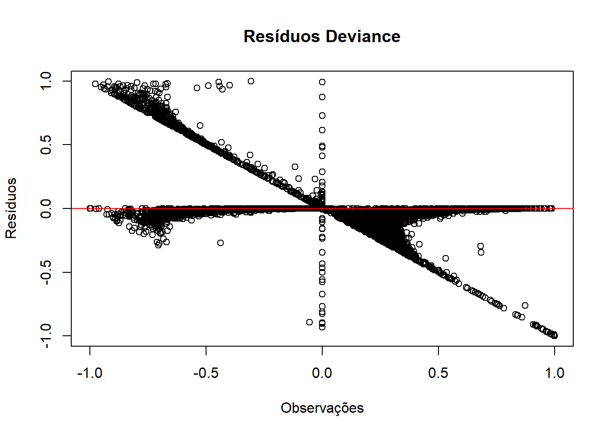
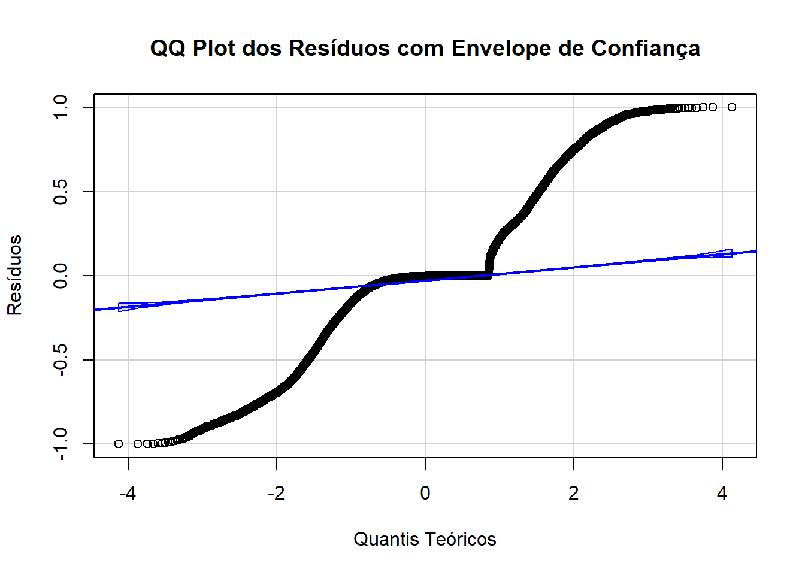
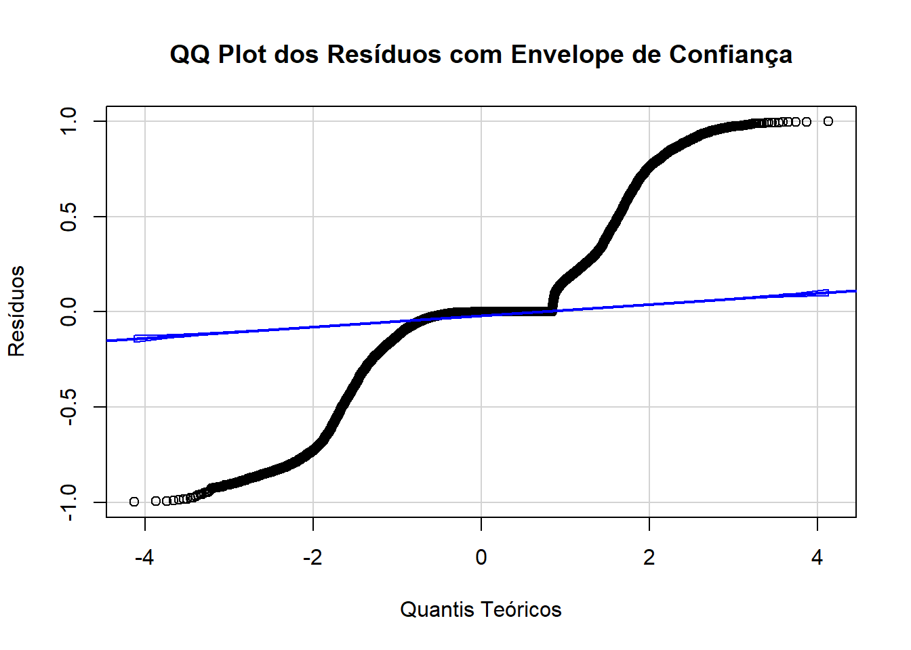

ℹ Using "','" as decimal and "'.'" as grouping mark. Use `read_delim()` for more control.
Rows: 5570 Columns: 10
── Column specification ────────────────────────────────────────────────────────
Delimiter: ";"
chr (3): tipo_regiao, bioma, koppen
dbl (7): muni_code, region, altitude, pop10, pop22, prop_residuo, prop_esgot
ℹ Use `spec()` to retrieve the full column specification for this data.
ℹ Specify the column types or set `show_col_types = FALSE` to quiet this message.
New names:
Rows: 5570 Columns: 31
── Column specification
──────────────────────────────────────────────────────── Delimiter: "," chr
(1): dengue_pattern dbl (30): ...1, geocode, temp_med_Autumn, umid_med_Autumn,
precip_tot_Autumn...
ℹ Use `spec()` to retrieve the full column specification for this data. ℹ
Specify the column types or set `show_col_types = FALSE` to quiet this message.
• `` -> `...1`
clima_org_model_17_22_season <- clima_org_model_17_22_season[, -1] # Exclui a primeira colunacolnames(clima_org_model_17_22_season)[1] <-"muni_code"# Renomeia a nova primeira coluna# Juntandodet_17_22 <-full_join(banco_determinantes, clima_org_model_17_22_season , by ="muni_code")det_17_22 <- det_17_22 [, !names(det_17_22) %in%c("pop10")]## Removendo os bancos para a nálise ficar mais leveremove(banco_determinantes)remove(clima_org_model_17_22_season)
Análise 2017-2022
Análise do período de 2017-2022, primeira parte de uma série temporal da classificação de padrões de transmissão de todos os municípios brasileiros para dengue.
1.Carregando os dados
# Converter variáveis numéricas com vírgula decimal e categorizar as variáveis de textodet_17_22 <- det_17_22 %>%mutate(across(where(~all(grepl("^[0-9,.]+$", .))), ~as.numeric(gsub(",", ".", .))),across(where(is.character), as.factor))# Visão geral dos dadossummary(det_17_22)
muni_code region tipo_regiao
Min. :1100015 Min. :1.000 metropolitana : 445
1st Qu.:2512126 1st Qu.:2.000 nao metropolitana:5125
Median :3146280 Median :3.000
Mean :3253591 Mean :2.898
3rd Qu.:4119190 3rd Qu.:4.000
Max. :5300108 Max. :5.000
bioma altitude koppen pop22
amazonia : 503 Min. : 1.67 Aw :1337 Min. : 836
caatinga :1096 1st Qu.: 222.60 Cfa :1138 1st Qu.: 5282
cerrado :1063 Median : 427.60 As : 892 Median : 11096
mata atlantica:2739 Mean : 451.24 BSh : 420 Mean : 37298
pampa : 160 3rd Qu.: 650.83 Cwa : 407 3rd Qu.: 24615
pantanal : 9 Max. :1601.42 Cfb : 405 Max. :12200180
(Other): 971
prop_residuo prop_esgot dengue_pattern
Min. : 0.00 Min. : 0.00 Epidêmico : 726
1st Qu.: 54.33 1st Qu.: 12.85 Episódico :1841
Median : 74.08 Median : 38.03 Episódico/Epidêmico :2821
Mean : 70.21 Mean : 42.27 Sem transmissão : 150
3rd Qu.: 89.22 3rd Qu.: 70.44 Transmissão Persistente: 32
Max. :100.00 Max. :100.00
temp_med_Autumn umid_med_Autumn precip_tot_Autumn thr_temp_Autumn
Min. :13.31 Min. :55.97 Min. : 0.0 Min. : 0.00
1st Qu.:19.60 1st Qu.:69.82 1st Qu.: 547.0 1st Qu.:42.88
Median :22.82 Median :76.33 Median : 937.8 Median :83.00
Mean :22.26 Mean :75.44 Mean :1132.1 Mean :68.07
3rd Qu.:25.21 3rd Qu.:80.94 3rd Qu.:1476.3 3rd Qu.:92.00
Max. :27.54 Max. :91.30 Max. :6371.6 Max. :92.00
NA's :3 NA's :3
thr_umid_Autumn thr_prec_Autumn thr_temp_umid_Autumn temp_med_Spring
Min. : 0.00 Min. : 0.00 Min. : 0.00 Min. :15.51
1st Qu.:77.00 1st Qu.:13.17 1st Qu.:39.33 1st Qu.:21.99
Median :89.00 Median :21.50 Median :56.33 Median :24.86
Mean :81.99 Mean :25.03 Mean :59.19 Mean :24.38
3rd Qu.:91.50 3rd Qu.:30.00 3rd Qu.:88.79 3rd Qu.:26.72
Max. :92.00 Max. :87.67 Max. :92.00 Max. :31.08
NA's :3
umid_med_Spring precip_tot_Spring thr_temp_Spring thr_umid_Spring
Min. :44.44 Min. : 0.0 Min. : 0.00 Min. : 0.00
1st Qu.:65.81 1st Qu.: 824.2 1st Qu.:72.67 1st Qu.:60.83
Median :71.05 Median :1549.0 Median :90.00 Median :77.33
Mean :70.28 Mean :1364.3 Mean :78.98 Mean :70.80
3rd Qu.:76.48 3rd Qu.:1850.6 3rd Qu.:91.00 3rd Qu.:89.33
Max. :89.49 Max. :3225.9 Max. :91.00 Max. :91.00
NA's :3
thr_prec_Spring thr_temp_umid_Spring temp_med_Summer umid_med_Summer
Min. : 0.00 Min. : 0.00 Min. :18.20 Min. :57.99
1st Qu.:19.67 1st Qu.:46.00 1st Qu.:23.48 1st Qu.:73.76
Median :31.42 Median :60.33 Median :25.01 Median :77.34
Mean :29.11 Mean :59.21 Mean :24.67 Mean :76.98
3rd Qu.:38.83 3rd Qu.:76.00 3rd Qu.:25.97 3rd Qu.:80.88
Max. :79.50 Max. :91.00 Max. :28.75 Max. :91.18
NA's :3 NA's :3
precip_tot_Summer thr_temp_Summer thr_umid_Summer thr_prec_Summer
Min. : 0 Min. : 0.00 Min. : 0.00 Min. : 0.00
1st Qu.:1308 1st Qu.:88.67 1st Qu.:82.00 1st Qu.:30.00
Median :1846 Median :90.17 Median :87.83 Median :40.92
Mean :1934 Mean :87.02 Mean :83.41 Mean :42.17
3rd Qu.:2449 3rd Qu.:90.17 3rd Qu.:90.00 3rd Qu.:52.17
Max. :6139 Max. :90.17 Max. :90.17 Max. :89.33
thr_temp_umid_Summer temp_med_Winter umid_med_Winter precip_tot_Winter
Min. : 0.00 Min. :11.63 Min. :37.88 Min. : 0.0
1st Qu.:76.17 1st Qu.:18.50 1st Qu.:53.73 1st Qu.: 106.1
Median :85.00 Median :21.97 Median :67.49 Median : 305.2
Mean :80.38 Mean :21.71 Mean :65.47 Mean : 549.2
3rd Qu.:89.67 3rd Qu.:25.19 3rd Qu.:77.42 3rd Qu.: 874.3
Max. :90.17 Max. :29.80 Max. :89.34 Max. :3263.7
NA's :3 NA's :3
thr_temp_Winter thr_umid_Winter thr_prec_Winter thr_temp_umid_Winter
Min. : 0.00 Min. : 0.00 Min. : 0.000 Min. : 0.000
1st Qu.:23.21 1st Qu.:22.00 1st Qu.: 2.167 1st Qu.: 6.333
Median :76.83 Median :74.17 Median : 7.000 Median :14.000
Mean :60.58 Mean :58.78 Mean :12.092 Mean :30.753
3rd Qu.:92.00 3rd Qu.:90.67 3rd Qu.:20.500 3rd Qu.:52.667
Max. :92.00 Max. :92.00 Max. :78.667 Max. :92.000
2. Verificação dos pressupostos
2.1 Multicolinearidade
Cálculo do VIF (Variance Inflation Factor): O VIF foi calculado para cada variável preditora no modelo. Isso foi feito após a remoção de colinearidade redundante e tratamento das variáveis para garantir que todas estejam no formato correto (numérico ou categórico).
Variável dependente: dengue_pattern foi temporariamente convertida para numérica apenas para calcular o VIF. Esse ajuste é feito para facilitar a análise de multicolinearidade.
Detecção e remoção de colinearidade: Usamos o findLinearCombos para remover variáveis redundantes, evitando o problema de “aliasing” no modelo, o que ocorre quando variáveis altamente correlacionadas criam dependência linear.
Intrepretação:
Valores de VIF < 5: São considerados aceitáveis, indicando baixa multicolinearidade.
Valores de VIF entre 5 e 10: Indicariam alguma multicolinearidade, mas ainda podem ser aceitáveis dependendo do contexto.
Valores de VIF > 10: Sugerem multicolinearidade.
Resultados:
Quando todas as variáveis em um cálculo do VIF (Variance Inflation Factor) estão muito acima de 10, isso indica alta multicolinearidade entre as variáveis no seu modelo de regressão. Multicolinearidade pode distorcer os coeficientes das variáveis no modelo, dificultando a interpretação e reduzindo a confiabilidade dos resultados.
## Somente para variáveis numéricas então vamos retirar as categoricas# Remover colunas pelo nomedata <- det_17_22[, !names(det_17_22) %in%c("muni_code","region", "tipo_regiao", "bioma", "koppen")]# Verificando a presença de NAs em todas as variáveis do bancosapply(data, function(x) sum(is.na(x))) #Tem 8 linhas
# removendo as linhas com Nadata_clean <- data %>%filter(!if_any(where(is.numeric), is.na))# Identificar e remover variáveis altamente colinearescombo_info <-findLinearCombos(data_clean %>%select(-dengue_pattern))if (length(combo_info$remove) >0) { data_clean <- data_clean[, -combo_info$remove]}# Calcular o VIF para as variáveis vif_values <-vif(lm(as.numeric(dengue_pattern) ~ ., data = data_clean))vif_values
O valor 0 indica que não foram encontradas linhas duplicadas em data_clean.
# Verificar se há identificadores duplicadosduplicated_rows <-sum(duplicated(det_17_22))duplicated_rows
[1] 0
2.3 Tamanho amostral adequado
Interpretação:
Em regressão logística multinomial, cada categoria da variável dependente precisa de um número suficiente de observações para garantir que o modelo possa estimar os parâmetros de forma confiável. Geralmente, recomenda-se pelo menos 10 a 20 observações por parâmetro estimado em cada categoria.
O código retornou valor 0 nas observações, indicando que não foram encontrados outliers com resíduos padronizados maiores que 2 ou menores que -2. Isso sugere que o modelo se ajustou bem aos dados e não há observações que se desviem significativamente do padrão previsto pelo modelo.
# Ajustar o modelo multinomialmultinom_model <-multinom(dengue_pattern ~ ., data = det_17_22)
# weights: 250 (196 variable)
initial value 8959.740859
iter 10 value 5890.476443
iter 20 value 5500.477437
iter 30 value 5346.901184
iter 40 value 5197.068152
iter 50 value 5137.438145
iter 60 value 5111.523595
iter 70 value 5071.651334
iter 80 value 5058.465157
iter 90 value 5053.912408
iter 90 value 5053.912408
iter 100 value 4405.660248
final value 4405.660248
stopped after 100 iterations
# Calcular resíduos padronizadosresiduals <-residuals(multinom_model, type ="pearson")# Identificar outliers com resíduos padronizados acima de 2 ou abaixo de -2outliers <-which(abs(residuals) >2)length(outliers)
[1] 0
##OUTRO# Obter os resíduos deviance para cada observaçãodeviance_residuals <-residuals(multinom_model, type ="deviance")# Ponto de corte padrão da literaturacutoff <-2.0influential_points <-which(abs(deviance_residuals) > cutoff)print(data[influential_points, ])
3. Ajuste do modelo de regressão logística multinomial
Interpretação:
Para cada categoria (em relação à referência “Episódico/Epidêmico”), o modelo estima coeficientes (Coefficients) para cada variável preditora. Esses coeficientes representam o efeito de cada variável sobre a probabilidade de estar nas categorias Sem transmissão, Episódico, Epidêmico e Tranmissão Persistente, em comparação com Episódico/Epidêmico.
# Remover colunas pelo nomedet_17_22 <- det_17_22[, !names(det_17_22) %in%c("muni_code")]det_17_22$region <-as.factor(det_17_22$region)# removendo as linhas com Nadet_17_22 <- det_17_22%>%filter(!if_any(where(is.numeric), is.na))# Definir a categoria de referência para todas as variáveis categóricasdet_17_22$dengue_pattern <-relevel(det_17_22$dengue_pattern, ref ="Episódico/Epidêmico") # variável dependente# Variáveis independentessummary(det_17_22)
region tipo_regiao bioma altitude
1: 450 metropolitana : 442 amazonia : 503 Min. : 1.67
2:1791 nao metropolitana:5125 caatinga :1096 1st Qu.: 222.93
3:1668 cerrado :1063 Median : 427.75
4:1191 mata atlantica:2736 Mean : 451.42
5: 467 pampa : 160 3rd Qu.: 650.94
pantanal : 9 Max. :1601.42
koppen pop22 prop_residuo prop_esgot
Aw :1337 Min. : 836 Min. : 0.00 Min. : 0.00
Cfa :1138 1st Qu.: 5282 1st Qu.: 54.33 1st Qu.: 12.84
As : 891 Median : 11095 Median : 74.06 Median : 38.02
BSh : 420 Mean : 37311 Mean : 70.21 Mean : 42.27
Cwa : 407 3rd Qu.: 24636 3rd Qu.: 89.22 3rd Qu.: 70.46
Cfb : 405 Max. :12200180 Max. :100.00 Max. :100.00
(Other): 969
dengue_pattern temp_med_Autumn umid_med_Autumn
Episódico/Epidêmico :2819 Min. :13.31 Min. :55.97
Epidêmico : 725 1st Qu.:19.60 1st Qu.:69.82
Episódico :1841 Median :22.82 Median :76.33
Sem transmissão : 150 Mean :22.26 Mean :75.44
Transmissão Persistente: 32 3rd Qu.:25.21 3rd Qu.:80.94
Max. :27.54 Max. :91.30
precip_tot_Autumn thr_temp_Autumn thr_umid_Autumn thr_prec_Autumn
Min. : 236.7 Min. : 0.00 Min. :28.17 Min. : 5.50
1st Qu.: 547.6 1st Qu.:43.00 1st Qu.:77.00 1st Qu.:13.17
Median : 938.4 Median :83.00 Median :89.00 Median :21.50
Mean :1132.7 Mean :68.11 Mean :82.03 Mean :25.04
3rd Qu.:1476.5 3rd Qu.:92.00 3rd Qu.:91.50 3rd Qu.:30.00
Max. :6371.6 Max. :92.00 Max. :92.00 Max. :87.67
thr_temp_umid_Autumn temp_med_Spring umid_med_Spring precip_tot_Spring
Min. : 0.00 Min. :15.51 Min. :44.44 Min. : 29.4
1st Qu.:39.50 1st Qu.:21.99 1st Qu.:65.81 1st Qu.: 825.6
Median :56.33 Median :24.86 Median :71.05 Median :1549.3
Mean :59.22 Mean :24.38 Mean :70.28 Mean :1365.1
3rd Qu.:88.83 3rd Qu.:26.72 3rd Qu.:76.48 3rd Qu.:1850.6
Max. :92.00 Max. :31.08 Max. :89.49 Max. :3225.9
thr_temp_Spring thr_umid_Spring thr_prec_Spring thr_temp_umid_Spring
Min. : 4.50 Min. : 1.667 Min. : 0.00 Min. : 1.667
1st Qu.:72.67 1st Qu.:60.833 1st Qu.:19.75 1st Qu.:46.167
Median :90.00 Median :77.333 Median :31.50 Median :60.333
Mean :79.02 Mean :70.841 Mean :29.12 Mean :59.238
3rd Qu.:91.00 3rd Qu.:89.333 3rd Qu.:38.83 3rd Qu.:76.000
Max. :91.00 Max. :91.000 Max. :79.50 Max. :91.000
temp_med_Summer umid_med_Summer precip_tot_Summer thr_temp_Summer
Min. :18.20 Min. :57.99 Min. : 301.5 Min. :13.83
1st Qu.:23.48 1st Qu.:73.76 1st Qu.:1309.1 1st Qu.:88.67
Median :25.01 Median :77.34 Median :1847.1 Median :90.17
Mean :24.67 Mean :76.98 Mean :1935.4 Mean :87.07
3rd Qu.:25.97 3rd Qu.:80.88 3rd Qu.:2449.3 3rd Qu.:90.17
Max. :28.75 Max. :91.18 Max. :6138.5 Max. :90.17
thr_umid_Summer thr_prec_Summer thr_temp_umid_Summer temp_med_Winter
Min. :34.50 Min. : 7.833 Min. :13.83 Min. :11.63
1st Qu.:82.00 1st Qu.:30.000 1st Qu.:76.17 1st Qu.:18.50
Median :87.83 Median :41.000 Median :85.00 Median :21.97
Mean :83.45 Mean :42.193 Mean :80.43 Mean :21.71
3rd Qu.:90.00 3rd Qu.:52.167 3rd Qu.:89.67 3rd Qu.:25.19
Max. :90.17 Max. :89.333 Max. :90.17 Max. :29.80
umid_med_Winter precip_tot_Winter thr_temp_Winter thr_umid_Winter
Min. :37.88 Min. : 4.765 Min. : 0.3333 Min. : 0.00
1st Qu.:53.73 1st Qu.: 106.305 1st Qu.:23.3333 1st Qu.:22.00
Median :67.49 Median : 305.376 Median :76.8333 Median :74.17
Mean :65.47 Mean : 549.526 Mean :60.6095 Mean :58.81
3rd Qu.:77.42 3rd Qu.: 874.515 3rd Qu.:92.0000 3rd Qu.:90.67
Max. :89.34 Max. :3263.720 Max. :92.0000 Max. :92.00
thr_prec_Winter thr_temp_umid_Winter
Min. : 0.000 Min. : 0.000
1st Qu.: 2.167 1st Qu.: 6.333
Median : 7.000 Median :14.000
Mean :12.099 Mean :30.769
3rd Qu.:20.500 3rd Qu.:52.667
Max. :78.667 Max. :92.000
region tipo_regiao bioma altitude
1: 450 nao metropolitana:5125 mata atlantica:2736 Min. : 1.67
2:1791 metropolitana : 442 amazonia : 503 1st Qu.: 222.93
3:1668 caatinga :1096 Median : 427.75
4:1191 cerrado :1063 Mean : 451.42
5: 467 pampa : 160 3rd Qu.: 650.94
pantanal : 9 Max. :1601.42
koppen pop22 prop_residuo prop_esgot
Aw :1337 Min. : 836 Min. : 0.00 Min. : 0.00
Cfa :1138 1st Qu.: 5282 1st Qu.: 54.33 1st Qu.: 12.84
As : 891 Median : 11095 Median : 74.06 Median : 38.02
BSh : 420 Mean : 37311 Mean : 70.21 Mean : 42.27
Cwa : 407 3rd Qu.: 24636 3rd Qu.: 89.22 3rd Qu.: 70.46
Cfb : 405 Max. :12200180 Max. :100.00 Max. :100.00
(Other): 969
dengue_pattern temp_med_Autumn umid_med_Autumn
Episódico/Epidêmico :2819 Min. :13.31 Min. :55.97
Epidêmico : 725 1st Qu.:19.60 1st Qu.:69.82
Episódico :1841 Median :22.82 Median :76.33
Sem transmissão : 150 Mean :22.26 Mean :75.44
Transmissão Persistente: 32 3rd Qu.:25.21 3rd Qu.:80.94
Max. :27.54 Max. :91.30
precip_tot_Autumn thr_temp_Autumn thr_umid_Autumn thr_prec_Autumn
Min. : 236.7 Min. : 0.00 Min. :28.17 Min. : 5.50
1st Qu.: 547.6 1st Qu.:43.00 1st Qu.:77.00 1st Qu.:13.17
Median : 938.4 Median :83.00 Median :89.00 Median :21.50
Mean :1132.7 Mean :68.11 Mean :82.03 Mean :25.04
3rd Qu.:1476.5 3rd Qu.:92.00 3rd Qu.:91.50 3rd Qu.:30.00
Max. :6371.6 Max. :92.00 Max. :92.00 Max. :87.67
thr_temp_umid_Autumn temp_med_Spring umid_med_Spring precip_tot_Spring
Min. : 0.00 Min. :15.51 Min. :44.44 Min. : 29.4
1st Qu.:39.50 1st Qu.:21.99 1st Qu.:65.81 1st Qu.: 825.6
Median :56.33 Median :24.86 Median :71.05 Median :1549.3
Mean :59.22 Mean :24.38 Mean :70.28 Mean :1365.1
3rd Qu.:88.83 3rd Qu.:26.72 3rd Qu.:76.48 3rd Qu.:1850.6
Max. :92.00 Max. :31.08 Max. :89.49 Max. :3225.9
thr_temp_Spring thr_umid_Spring thr_prec_Spring thr_temp_umid_Spring
Min. : 4.50 Min. : 1.667 Min. : 0.00 Min. : 1.667
1st Qu.:72.67 1st Qu.:60.833 1st Qu.:19.75 1st Qu.:46.167
Median :90.00 Median :77.333 Median :31.50 Median :60.333
Mean :79.02 Mean :70.841 Mean :29.12 Mean :59.238
3rd Qu.:91.00 3rd Qu.:89.333 3rd Qu.:38.83 3rd Qu.:76.000
Max. :91.00 Max. :91.000 Max. :79.50 Max. :91.000
temp_med_Summer umid_med_Summer precip_tot_Summer thr_temp_Summer
Min. :18.20 Min. :57.99 Min. : 301.5 Min. :13.83
1st Qu.:23.48 1st Qu.:73.76 1st Qu.:1309.1 1st Qu.:88.67
Median :25.01 Median :77.34 Median :1847.1 Median :90.17
Mean :24.67 Mean :76.98 Mean :1935.4 Mean :87.07
3rd Qu.:25.97 3rd Qu.:80.88 3rd Qu.:2449.3 3rd Qu.:90.17
Max. :28.75 Max. :91.18 Max. :6138.5 Max. :90.17
thr_umid_Summer thr_prec_Summer thr_temp_umid_Summer temp_med_Winter
Min. :34.50 Min. : 7.833 Min. :13.83 Min. :11.63
1st Qu.:82.00 1st Qu.:30.000 1st Qu.:76.17 1st Qu.:18.50
Median :87.83 Median :41.000 Median :85.00 Median :21.97
Mean :83.45 Mean :42.193 Mean :80.43 Mean :21.71
3rd Qu.:90.00 3rd Qu.:52.167 3rd Qu.:89.67 3rd Qu.:25.19
Max. :90.17 Max. :89.333 Max. :90.17 Max. :29.80
umid_med_Winter precip_tot_Winter thr_temp_Winter thr_umid_Winter
Min. :37.88 Min. : 4.765 Min. : 0.3333 Min. : 0.00
1st Qu.:53.73 1st Qu.: 106.305 1st Qu.:23.3333 1st Qu.:22.00
Median :67.49 Median : 305.376 Median :76.8333 Median :74.17
Mean :65.47 Mean : 549.526 Mean :60.6095 Mean :58.81
3rd Qu.:77.42 3rd Qu.: 874.515 3rd Qu.:92.0000 3rd Qu.:90.67
Max. :89.34 Max. :3263.720 Max. :92.0000 Max. :92.00
thr_prec_Winter thr_temp_umid_Winter
Min. : 0.000 Min. : 0.000
1st Qu.: 2.167 1st Qu.: 6.333
Median : 7.000 Median :14.000
Mean :12.099 Mean :30.769
3rd Qu.:20.500 3rd Qu.:52.667
Max. :78.667 Max. :92.000
# Modelo com tudomultinom_model <-multinom(dengue_pattern ~ ., data = det_17_22)
# weights: 260 (204 variable)
initial value 8959.740859
iter 10 value 6392.620767
iter 20 value 5977.323858
iter 30 value 5814.648633
iter 40 value 5676.305651
iter 50 value 5636.221009
iter 60 value 5600.486761
iter 70 value 5542.032232
iter 80 value 5486.278719
iter 90 value 5394.825409
iter 100 value 5120.637633
final value 5120.637633
stopped after 100 iterations
# Seleção stepwise#step_model <- step(multinom_model, direction = "both")#summary(step_model)# Seleção stepwise a partir do modelo nulo# Criar o modelo inicial (nulo com region e pop22)null_model <-multinom(dengue_pattern ~ region + pop22, data = det_17_22)
# weights: 35 (24 variable)
initial value 8959.740859
iter 10 value 5653.084335
iter 20 value 5350.371755
iter 30 value 4947.538451
iter 40 value 4903.853257
iter 50 value 4867.727632
iter 60 value 4867.537240
iter 70 value 4867.465738
final value 4867.462969
converged
# Criar o modelo completo (com todas as variáveis preditoras adicionais)full_formula <-as.formula(paste("dengue_pattern ~ region + pop22 +", paste(setdiff(names(det_17_22), c("dengue_pattern", "region", "pop22")), collapse =" + ")))full_model <-multinom(full_formula, data = det_17_22)
# weights: 260 (204 variable)
initial value 8959.740859
iter 10 value 6392.620767
iter 20 value 5977.323858
iter 30 value 5814.648636
iter 40 value 5676.305729
iter 50 value 5636.221547
iter 60 value 5600.489536
iter 70 value 5542.040476
iter 80 value 5486.302734
iter 90 value 5394.904860
iter 100 value 5120.925689
final value 5120.925689
stopped after 100 iterations
# Aplicar a seleção stepwise a partir do modelo nulo para o modelo completostep_model <-step(null_model, scope =list(lower = null_model, upper = full_model), direction ="both", trace =TRUE)
Start: AIC=9782.93
dengue_pattern ~ region + pop22
trying + tipo_regiao
# weights: 40 (28 variable)
initial value 8959.740859
iter 10 value 5646.730686
iter 20 value 5352.134956
iter 30 value 4980.477890
iter 40 value 4899.140996
iter 50 value 4855.969980
iter 60 value 4849.334888
iter 70 value 4848.722391
iter 80 value 4848.524665
iter 90 value 4848.489455
iter 90 value 4848.489445
iter 90 value 4848.489445
final value 4848.489445
converged
trying + bioma
# weights: 60 (44 variable)
initial value 8959.740859
iter 10 value 5584.680862
iter 20 value 5272.937273
iter 30 value 5097.130208
iter 40 value 4774.042768
iter 50 value 4712.682637
iter 60 value 4666.327056
iter 70 value 4656.963875
iter 80 value 4656.880738
iter 90 value 4656.871073
iter 90 value 4656.871068
final value 4656.871068
converged
trying + altitude
# weights: 40 (28 variable)
initial value 8959.740859
iter 10 value 6477.651516
iter 20 value 5643.691206
iter 30 value 5203.897057
iter 40 value 4910.262671
iter 50 value 4876.260068
iter 60 value 4860.828868
iter 70 value 4859.662948
iter 80 value 4855.375890
iter 90 value 4854.800320
final value 4854.799497
converged
trying + koppen
# weights: 75 (56 variable)
initial value 8959.740859
iter 10 value 5586.143070
iter 20 value 5252.656672
iter 30 value 5040.916897
iter 40 value 4829.438773
iter 50 value 4644.466705
iter 60 value 4592.321237
iter 70 value 4561.597664
iter 80 value 4557.513339
iter 90 value 4557.472445
final value 4557.472379
converged
trying + prop_residuo
# weights: 40 (28 variable)
initial value 8959.740859
iter 10 value 5851.414629
iter 20 value 5365.036414
iter 30 value 5028.304602
iter 40 value 4864.674226
iter 50 value 4823.201036
iter 60 value 4822.181306
iter 70 value 4822.102063
iter 80 value 4822.033161
final value 4821.943740
converged
trying + prop_esgot
# weights: 40 (28 variable)
initial value 8959.740859
iter 10 value 6410.469754
iter 20 value 5612.467728
iter 30 value 5213.658433
iter 40 value 4923.865924
iter 50 value 4891.439966
iter 60 value 4864.879289
iter 70 value 4864.520242
iter 80 value 4863.310696
iter 90 value 4863.031254
iter 90 value 4863.031224
iter 90 value 4863.031224
final value 4863.031224
converged
trying + temp_med_Autumn
# weights: 40 (28 variable)
initial value 8959.740859
iter 10 value 6033.496590
iter 20 value 5402.567160
iter 30 value 4847.884126
iter 40 value 4675.531269
iter 50 value 4635.882300
iter 60 value 4620.191004
iter 70 value 4618.908716
iter 80 value 4615.094458
iter 90 value 4614.500223
final value 4614.486439
converged
trying + umid_med_Autumn
# weights: 40 (28 variable)
initial value 8959.740859
iter 10 value 6613.066830
iter 20 value 5547.129313
iter 30 value 4864.561500
iter 40 value 4619.424283
iter 50 value 4580.728653
iter 60 value 4562.678434
iter 70 value 4559.593298
iter 80 value 4551.498076
iter 90 value 4549.604189
final value 4549.574316
converged
trying + precip_tot_Autumn
# weights: 40 (28 variable)
initial value 8959.740859
iter 10 value 6072.709839
iter 20 value 5327.611039
iter 30 value 4912.568921
iter 40 value 4716.732477
iter 50 value 4668.292223
iter 60 value 4651.480145
iter 70 value 4650.853604
iter 80 value 4650.702340
final value 4650.660969
converged
trying + thr_temp_Autumn
# weights: 40 (28 variable)
initial value 8959.740859
iter 10 value 5679.095586
iter 20 value 5063.590083
iter 30 value 4680.965793
iter 40 value 4505.532213
iter 50 value 4464.735790
iter 60 value 4438.048317
iter 70 value 4437.587186
iter 80 value 4436.290736
iter 90 value 4435.451534
iter 90 value 4435.451531
iter 90 value 4435.451531
final value 4435.451531
converged
trying + thr_umid_Autumn
# weights: 40 (28 variable)
initial value 8959.740859
iter 10 value 6469.436327
iter 20 value 5583.940539
iter 30 value 4997.827494
iter 40 value 4758.410684
iter 50 value 4721.189433
iter 60 value 4702.895773
iter 70 value 4700.386637
iter 80 value 4693.797728
iter 90 value 4693.171606
final value 4693.168033
converged
trying + thr_prec_Autumn
# weights: 40 (28 variable)
initial value 8959.740859
iter 10 value 6417.138048
iter 20 value 5519.482467
iter 30 value 5031.292959
iter 40 value 4753.151900
iter 50 value 4698.641672
iter 60 value 4667.703285
iter 70 value 4666.460330
iter 80 value 4665.873426
final value 4665.820237
converged
trying + thr_temp_umid_Autumn
# weights: 40 (28 variable)
initial value 8959.740859
iter 10 value 5701.077970
iter 20 value 5250.262308
iter 30 value 4844.191341
iter 40 value 4773.835042
iter 50 value 4740.207401
iter 60 value 4727.793102
iter 70 value 4727.693369
iter 80 value 4727.619491
final value 4727.610890
converged
trying + temp_med_Spring
# weights: 40 (28 variable)
initial value 8959.740859
iter 10 value 5870.921444
iter 20 value 5312.204277
iter 30 value 4771.839664
iter 40 value 4647.050648
iter 50 value 4603.123516
iter 60 value 4585.618580
iter 70 value 4585.126012
iter 80 value 4583.170453
iter 90 value 4582.241589
final value 4582.237001
converged
trying + umid_med_Spring
# weights: 40 (28 variable)
initial value 8959.740859
iter 10 value 5944.308028
iter 20 value 5283.266096
iter 30 value 4923.919513
iter 40 value 4763.860039
iter 50 value 4717.025900
iter 60 value 4689.043632
iter 70 value 4689.025353
iter 80 value 4688.918035
final value 4688.844427
converged
trying + precip_tot_Spring
# weights: 40 (28 variable)
initial value 8959.740859
iter 10 value 6685.081532
iter 20 value 5704.359181
iter 30 value 5169.030372
iter 40 value 4885.823975
iter 50 value 4848.290451
iter 60 value 4827.587192
iter 70 value 4826.048435
iter 80 value 4822.484562
iter 90 value 4821.889877
final value 4821.886630
converged
trying + thr_temp_Spring
# weights: 40 (28 variable)
initial value 8959.740859
iter 10 value 5839.857119
iter 20 value 5005.590786
iter 30 value 4555.437696
iter 40 value 4281.296841
iter 50 value 4218.878894
iter 60 value 4207.918644
iter 70 value 4205.134451
iter 80 value 4200.537803
iter 90 value 4196.558724
final value 4196.221751
converged
trying + thr_umid_Spring
# weights: 40 (28 variable)
initial value 8959.740859
iter 10 value 6909.384977
iter 20 value 5992.739914
iter 30 value 5127.581317
iter 40 value 4800.704198
iter 50 value 4764.709757
iter 60 value 4748.045654
iter 70 value 4747.041278
iter 80 value 4740.308727
iter 90 value 4737.779945
iter 90 value 4737.779915
iter 90 value 4737.779915
final value 4737.779915
converged
trying + thr_prec_Spring
# weights: 40 (28 variable)
initial value 8959.740859
iter 10 value 6165.550678
iter 20 value 5468.803071
iter 30 value 4989.500652
iter 40 value 4846.248389
iter 50 value 4802.836918
iter 60 value 4791.075932
iter 70 value 4790.934862
iter 80 value 4790.810644
final value 4790.806664
converged
trying + thr_temp_umid_Spring
# weights: 40 (28 variable)
initial value 8959.740859
iter 10 value 5779.474892
iter 20 value 5396.430637
iter 30 value 5091.619033
iter 40 value 4891.119103
iter 50 value 4858.239133
iter 60 value 4834.059228
iter 70 value 4833.881138
iter 80 value 4833.154780
iter 90 value 4833.087349
iter 90 value 4833.087319
iter 90 value 4833.087319
final value 4833.087319
converged
trying + temp_med_Summer
# weights: 40 (28 variable)
initial value 8959.740859
iter 10 value 5875.656672
iter 20 value 5318.545145
iter 30 value 4784.228222
iter 40 value 4664.462474
iter 50 value 4635.134272
iter 60 value 4620.291976
iter 70 value 4620.025923
iter 80 value 4619.889430
iter 90 value 4619.870703
final value 4619.869485
converged
trying + umid_med_Summer
# weights: 40 (28 variable)
initial value 8959.740859
iter 10 value 6631.663063
iter 20 value 5748.058775
iter 30 value 5004.829980
iter 40 value 4819.113788
iter 50 value 4777.057823
iter 60 value 4764.868086
iter 70 value 4760.887227
iter 80 value 4753.643582
iter 90 value 4752.955555
final value 4752.931750
converged
trying + precip_tot_Summer
# weights: 40 (28 variable)
initial value 8959.740859
iter 10 value 6093.329144
iter 20 value 5470.800706
iter 30 value 5036.761759
iter 40 value 4854.136377
iter 50 value 4808.253022
iter 60 value 4791.657692
iter 70 value 4790.592967
iter 80 value 4789.926310
iter 90 value 4788.301078
iter 90 value 4788.301074
iter 90 value 4788.301074
final value 4788.301074
converged
trying + thr_temp_Summer
# weights: 40 (28 variable)
initial value 8959.740859
iter 10 value 6437.903218
iter 20 value 5728.624109
iter 30 value 4817.223595
iter 40 value 4538.662090
iter 50 value 4505.188382
iter 60 value 4495.765983
iter 70 value 4493.393150
iter 80 value 4491.035940
iter 90 value 4489.839034
iter 100 value 4486.982022
final value 4486.982022
stopped after 100 iterations
trying + thr_umid_Summer
# weights: 40 (28 variable)
initial value 8959.740859
iter 10 value 6542.521548
iter 20 value 5687.523203
iter 30 value 5073.591131
iter 40 value 4890.028982
iter 50 value 4858.490334
iter 60 value 4842.400886
iter 70 value 4840.339639
iter 80 value 4833.812650
iter 90 value 4833.093447
final value 4833.085074
converged
trying + thr_prec_Summer
# weights: 40 (28 variable)
initial value 8959.740859
iter 10 value 6496.174524
iter 20 value 5635.226686
iter 30 value 5188.672383
iter 40 value 4858.724880
iter 50 value 4822.274585
iter 60 value 4803.101113
iter 70 value 4802.063542
iter 80 value 4797.206608
iter 90 value 4796.593051
final value 4796.588831
converged
trying + thr_temp_umid_Summer
# weights: 40 (28 variable)
initial value 8959.740859
iter 10 value 6552.771035
iter 20 value 5696.529951
iter 30 value 5083.133001
iter 40 value 4851.640918
iter 50 value 4822.031994
iter 60 value 4810.042636
iter 70 value 4808.081890
iter 80 value 4804.543734
iter 90 value 4803.466905
final value 4803.397993
converged
trying + temp_med_Winter
# weights: 40 (28 variable)
initial value 8959.740859
iter 10 value 6078.802679
iter 20 value 5481.234148
iter 30 value 4886.927595
iter 40 value 4727.088244
iter 50 value 4694.746768
iter 60 value 4680.933804
iter 70 value 4679.820121
iter 80 value 4676.933191
iter 90 value 4675.504506
final value 4675.501694
converged
trying + umid_med_Winter
# weights: 40 (28 variable)
initial value 8959.740859
iter 10 value 6094.262068
iter 20 value 5315.101874
iter 30 value 4961.149547
iter 40 value 4740.426475
iter 50 value 4691.615440
iter 60 value 4667.741293
iter 70 value 4667.237742
iter 80 value 4666.474299
iter 90 value 4666.348934
iter 90 value 4666.348930
iter 90 value 4666.348930
final value 4666.348930
converged
trying + precip_tot_Winter
# weights: 40 (28 variable)
initial value 8959.740859
iter 10 value 6668.736480
iter 20 value 5732.440750
iter 30 value 5109.242617
iter 40 value 4780.835973
iter 50 value 4743.573276
iter 60 value 4726.432742
iter 70 value 4719.048558
iter 80 value 4712.217453
iter 90 value 4711.360350
final value 4711.359574
converged
trying + thr_temp_Winter
# weights: 40 (28 variable)
initial value 8959.740859
iter 10 value 5866.655166
iter 20 value 5319.087490
iter 30 value 4706.647822
iter 40 value 4554.395067
iter 50 value 4521.541119
iter 60 value 4493.847266
iter 70 value 4490.980199
iter 80 value 4485.954092
iter 90 value 4483.741597
final value 4483.547459
converged
trying + thr_umid_Winter
# weights: 40 (28 variable)
initial value 8959.740859
iter 10 value 6801.276556
iter 20 value 5528.734974
iter 30 value 5016.056187
iter 40 value 4773.150899
iter 50 value 4716.641743
iter 60 value 4708.310837
iter 70 value 4708.020287
iter 80 value 4707.844626
iter 90 value 4707.811140
iter 90 value 4707.811108
iter 90 value 4707.811108
final value 4707.811108
converged
trying + thr_prec_Winter
# weights: 40 (28 variable)
initial value 8959.740859
iter 10 value 6392.274872
iter 20 value 5531.862926
iter 30 value 5086.687902
iter 40 value 4846.796235
iter 50 value 4805.421508
iter 60 value 4790.551083
iter 70 value 4784.961168
iter 80 value 4782.233582
iter 90 value 4781.399959
iter 90 value 4781.399953
iter 90 value 4781.399953
final value 4781.399953
converged
trying + thr_temp_umid_Winter
# weights: 40 (28 variable)
initial value 8959.740859
iter 10 value 7546.606952
iter 20 value 6029.390546
iter 30 value 5159.031539
iter 40 value 4925.064280
iter 50 value 4889.470557
iter 60 value 4868.570468
iter 70 value 4866.263927
iter 80 value 4863.482667
iter 90 value 4862.598962
final value 4862.594640
converged
Df AIC
+ +thr_temp_Spring 28 8448.444
+ +thr_temp_Autumn 28 8926.903
+ +thr_temp_Winter 28 9023.095
+ +thr_temp_Summer 28 9029.964
+ +umid_med_Autumn 28 9155.149
+ +temp_med_Spring 28 9220.474
+ +koppen 56 9226.945
+ +temp_med_Autumn 28 9284.973
+ +temp_med_Summer 28 9295.739
+ +precip_tot_Autumn 28 9357.322
+ +thr_prec_Autumn 28 9387.640
+ +umid_med_Winter 28 9388.698
+ +bioma 44 9401.742
+ +temp_med_Winter 28 9407.003
+ +umid_med_Spring 28 9433.689
+ +thr_umid_Autumn 28 9442.336
+ +thr_umid_Winter 28 9471.622
+ +precip_tot_Winter 28 9478.719
+ +thr_temp_umid_Autumn 28 9511.222
+ +thr_umid_Spring 28 9531.560
+ +umid_med_Summer 28 9561.864
+ +thr_prec_Winter 28 9618.800
+ +precip_tot_Summer 28 9632.602
+ +thr_prec_Spring 28 9637.613
+ +thr_prec_Summer 28 9649.178
+ +thr_temp_umid_Summer 28 9662.796
+ +precip_tot_Spring 28 9699.773
+ +prop_residuo 28 9699.887
+ +thr_umid_Summer 28 9722.170
+ +thr_temp_umid_Spring 28 9722.175
+ +tipo_regiao 28 9752.979
+ +altitude 28 9765.599
+ +thr_temp_umid_Winter 28 9781.189
+ +prop_esgot 28 9782.062
<none> 24 9782.926
# weights: 40 (28 variable)
initial value 8959.740859
iter 10 value 5839.857119
iter 20 value 5005.590786
iter 30 value 4555.437696
iter 40 value 4281.296841
iter 50 value 4218.878894
iter 60 value 4207.918644
iter 70 value 4205.134451
iter 80 value 4200.537803
iter 90 value 4196.558724
final value 4196.221751
converged
Step: AIC=8448.44
dengue_pattern ~ region + pop22 + thr_temp_Spring
trying - thr_temp_Spring
# weights: 35 (24 variable)
initial value 8959.740859
iter 10 value 5653.084335
iter 20 value 5350.371755
iter 30 value 4947.538451
iter 40 value 4903.853257
iter 50 value 4867.727632
iter 60 value 4867.537240
iter 70 value 4867.465738
final value 4867.462969
converged
trying + tipo_regiao
# weights: 45 (32 variable)
initial value 8959.740859
iter 10 value 5837.651022
iter 20 value 5000.096782
iter 30 value 4617.786181
iter 40 value 4279.503233
iter 50 value 4233.455242
iter 60 value 4198.986381
iter 70 value 4193.436613
iter 80 value 4191.891925
iter 90 value 4188.948195
iter 100 value 4183.424444
final value 4183.424444
stopped after 100 iterations
trying + bioma
# weights: 65 (48 variable)
initial value 8959.740859
iter 10 value 5936.344124
iter 20 value 5136.798288
iter 30 value 4618.949579
iter 40 value 4294.197670
iter 50 value 4057.126179
iter 60 value 4002.147875
iter 70 value 3982.590759
iter 80 value 3978.033204
iter 90 value 3977.056031
final value 3977.042450
converged
trying + altitude
# weights: 45 (32 variable)
initial value 8959.740859
iter 10 value 6578.660575
iter 20 value 5622.759460
iter 30 value 4850.664288
iter 40 value 4236.755820
iter 50 value 4140.896889
iter 60 value 4119.855423
iter 70 value 4114.725844
iter 80 value 4113.746006
iter 90 value 4111.434111
iter 100 value 4107.889901
final value 4107.889901
stopped after 100 iterations
trying + koppen
# weights: 80 (60 variable)
initial value 8959.740859
iter 10 value 5705.351709
iter 20 value 5141.456154
iter 30 value 4731.597974
iter 40 value 4474.021702
iter 50 value 4216.266783
iter 60 value 4141.081898
iter 70 value 4092.247369
iter 80 value 4079.557304
iter 90 value 4077.709997
iter 100 value 4077.307731
final value 4077.307731
stopped after 100 iterations
trying + prop_residuo
# weights: 45 (32 variable)
initial value 8959.740859
iter 10 value 6328.754748
iter 20 value 5594.513648
iter 30 value 4799.181871
iter 40 value 4243.267475
iter 50 value 4181.490994
iter 60 value 4158.596718
iter 70 value 4153.894887
iter 80 value 4153.217355
iter 90 value 4150.059425
iter 100 value 4147.712694
final value 4147.712694
stopped after 100 iterations
trying + prop_esgot
# weights: 45 (32 variable)
initial value 8959.740859
iter 10 value 7009.361208
iter 20 value 5990.599220
iter 30 value 4882.781868
iter 40 value 4307.897669
iter 50 value 4230.450243
iter 60 value 4193.440357
iter 70 value 4187.804325
iter 80 value 4186.741199
iter 90 value 4185.012917
iter 100 value 4182.143291
final value 4182.143291
stopped after 100 iterations
trying + temp_med_Autumn
# weights: 45 (32 variable)
initial value 8959.740859
iter 10 value 6288.490100
iter 20 value 5722.382458
iter 30 value 4772.505414
iter 40 value 4250.460687
iter 50 value 4203.798366
iter 60 value 4185.446743
iter 70 value 4180.521259
iter 80 value 4178.194211
iter 90 value 4174.400697
iter 100 value 4172.068369
final value 4172.068369
stopped after 100 iterations
trying + umid_med_Autumn
# weights: 45 (32 variable)
initial value 8959.740859
iter 10 value 5962.188947
iter 20 value 5290.839033
iter 30 value 4757.615164
iter 40 value 4235.082387
iter 50 value 4170.969059
iter 60 value 4148.075172
iter 70 value 4144.619436
iter 80 value 4142.162392
iter 90 value 4140.631725
iter 100 value 4136.736036
final value 4136.736036
stopped after 100 iterations
trying + precip_tot_Autumn
# weights: 45 (32 variable)
initial value 8959.740859
iter 10 value 6027.632115
iter 20 value 5129.057070
iter 30 value 4647.312651
iter 40 value 4117.272149
iter 50 value 4074.634050
iter 60 value 4052.712080
iter 70 value 4042.237616
iter 80 value 4040.023928
iter 90 value 4036.149302
iter 100 value 4031.271986
final value 4031.271986
stopped after 100 iterations
trying + thr_temp_Autumn
# weights: 45 (32 variable)
initial value 8959.740859
iter 10 value 6310.670234
iter 20 value 5658.604284
iter 30 value 4815.301349
iter 40 value 4275.266418
iter 50 value 4213.816650
iter 60 value 4191.250605
iter 70 value 4186.264085
iter 80 value 4185.582652
iter 90 value 4182.932392
iter 100 value 4180.103659
final value 4180.103659
stopped after 100 iterations
trying + thr_umid_Autumn
# weights: 45 (32 variable)
initial value 8959.740859
iter 10 value 5881.507910
iter 20 value 5472.575376
iter 30 value 4748.141656
iter 40 value 4269.922346
iter 50 value 4201.656950
iter 60 value 4183.391792
iter 70 value 4180.811686
iter 80 value 4179.524721
iter 90 value 4177.988487
iter 100 value 4176.259361
final value 4176.259361
stopped after 100 iterations
trying + thr_prec_Autumn
# weights: 45 (32 variable)
initial value 8959.740859
iter 10 value 6581.208204
iter 20 value 5721.043605
iter 30 value 4962.326739
iter 40 value 4342.435279
iter 50 value 4203.086218
iter 60 value 4083.937850
iter 70 value 4073.471977
iter 80 value 4071.343723
iter 90 value 4069.210717
iter 100 value 4066.819855
final value 4066.819855
stopped after 100 iterations
trying + thr_temp_umid_Autumn
# weights: 45 (32 variable)
initial value 8959.740859
iter 10 value 6457.599034
iter 20 value 5758.029131
iter 30 value 4849.566045
iter 40 value 4253.069398
iter 50 value 4201.770638
iter 60 value 4171.909163
iter 70 value 4166.451118
iter 80 value 4165.293480
iter 90 value 4163.151155
iter 100 value 4158.372232
final value 4158.372232
stopped after 100 iterations
trying + temp_med_Spring
# weights: 45 (32 variable)
initial value 8959.740859
iter 10 value 6445.370129
iter 20 value 5749.852266
iter 30 value 4828.847074
iter 40 value 4253.505492
iter 50 value 4198.539801
iter 60 value 4189.214856
iter 70 value 4186.988410
iter 80 value 4186.185184
iter 90 value 4183.018497
iter 100 value 4181.504627
final value 4181.504627
stopped after 100 iterations
trying + umid_med_Spring
# weights: 45 (32 variable)
initial value 8959.740859
iter 10 value 6165.109903
iter 20 value 5371.681647
iter 30 value 4701.595533
iter 40 value 4273.914496
iter 50 value 4213.800714
iter 60 value 4198.662963
iter 70 value 4194.400816
iter 80 value 4192.216839
iter 90 value 4189.757476
iter 100 value 4187.335553
final value 4187.335553
stopped after 100 iterations
trying + precip_tot_Spring
# weights: 45 (32 variable)
initial value 8959.740859
iter 10 value 6732.287309
iter 20 value 5660.165163
iter 30 value 4726.420529
iter 40 value 4294.539336
iter 50 value 4224.920006
iter 60 value 4202.769307
iter 70 value 4198.845937
iter 80 value 4197.995014
iter 90 value 4195.374501
iter 100 value 4190.675772
final value 4190.675772
stopped after 100 iterations
trying + thr_umid_Spring
# weights: 45 (32 variable)
initial value 8959.740859
iter 10 value 6225.398268
iter 20 value 5605.639637
iter 30 value 4873.314745
iter 40 value 4279.217124
iter 50 value 4217.656854
iter 60 value 4195.311907
iter 70 value 4191.615778
iter 80 value 4189.913165
iter 90 value 4187.979188
iter 100 value 4185.342287
final value 4185.342287
stopped after 100 iterations
trying + thr_prec_Spring
# weights: 45 (32 variable)
initial value 8959.740859
iter 10 value 6858.512053
iter 20 value 5855.656713
iter 30 value 4846.576668
iter 40 value 4313.333789
iter 50 value 4228.195203
iter 60 value 4207.765955
iter 70 value 4200.931721
iter 80 value 4200.140211
iter 90 value 4196.270878
iter 100 value 4194.048776
final value 4194.048776
stopped after 100 iterations
trying + thr_temp_umid_Spring
# weights: 45 (32 variable)
initial value 8959.740859
iter 10 value 6507.908529
iter 20 value 5823.095349
iter 30 value 4894.497075
iter 40 value 4283.724730
iter 50 value 4219.314864
iter 60 value 4195.140249
iter 70 value 4191.163028
iter 80 value 4190.004455
iter 90 value 4187.026384
iter 100 value 4184.317508
final value 4184.317508
stopped after 100 iterations
trying + temp_med_Summer
# weights: 45 (32 variable)
initial value 8959.740859
iter 10 value 6472.633142
iter 20 value 5629.600894
iter 30 value 4783.250181
iter 40 value 4242.697768
iter 50 value 4205.743804
iter 60 value 4191.735748
iter 70 value 4189.492637
iter 80 value 4187.042263
iter 90 value 4183.399465
iter 100 value 4181.472886
final value 4181.472886
stopped after 100 iterations
trying + umid_med_Summer
# weights: 45 (32 variable)
initial value 8959.740859
iter 10 value 6050.786266
iter 20 value 5270.502944
iter 30 value 4805.898154
iter 40 value 4255.421055
iter 50 value 4200.313838
iter 60 value 4183.341846
iter 70 value 4180.161928
iter 80 value 4179.263044
iter 90 value 4177.980737
iter 100 value 4174.523509
final value 4174.523509
stopped after 100 iterations
trying + precip_tot_Summer
# weights: 45 (32 variable)
initial value 8959.740859
iter 10 value 6037.213841
iter 20 value 5227.957057
iter 30 value 4731.676255
iter 40 value 4227.927514
iter 50 value 4164.955192
iter 60 value 4148.725433
iter 70 value 4142.807454
iter 80 value 4142.342999
iter 90 value 4139.933680
iter 100 value 4137.439925
final value 4137.439925
stopped after 100 iterations
trying + thr_temp_Summer
# weights: 45 (32 variable)
initial value 8959.740859
iter 10 value 5822.630460
iter 20 value 5270.340367
iter 30 value 4596.348076
iter 40 value 4271.359078
iter 50 value 4203.564616
iter 60 value 4184.481708
iter 70 value 4182.512035
iter 80 value 4181.762715
iter 90 value 4181.082286
iter 100 value 4179.353719
final value 4179.353719
stopped after 100 iterations
trying + thr_umid_Summer
# weights: 45 (32 variable)
initial value 8959.740859
iter 10 value 6004.089265
iter 20 value 5443.826090
iter 30 value 4748.607755
iter 40 value 4273.691064
iter 50 value 4204.907209
iter 60 value 4194.515142
iter 70 value 4192.791497
iter 80 value 4192.065968
iter 90 value 4190.214712
iter 100 value 4188.669708
final value 4188.669708
stopped after 100 iterations
trying + thr_prec_Summer
# weights: 45 (32 variable)
initial value 8959.740859
iter 10 value 6892.447081
iter 20 value 5796.261917
iter 30 value 4975.816367
iter 40 value 4323.159361
iter 50 value 4229.423851
iter 60 value 4178.421754
iter 70 value 4174.940388
iter 80 value 4174.429835
iter 90 value 4169.996659
iter 100 value 4167.739202
final value 4167.739202
stopped after 100 iterations
trying + thr_temp_umid_Summer
# weights: 45 (32 variable)
initial value 8959.740859
iter 10 value 6049.777049
iter 20 value 5474.599288
iter 30 value 4864.516081
iter 40 value 4302.145463
iter 50 value 4211.869906
iter 60 value 4194.086722
iter 70 value 4187.527614
iter 80 value 4186.507602
iter 90 value 4184.698147
iter 100 value 4182.561843
final value 4182.561843
stopped after 100 iterations
trying + temp_med_Winter
# weights: 45 (32 variable)
initial value 8959.740859
iter 10 value 6474.536097
iter 20 value 5805.231127
iter 30 value 4863.488215
iter 40 value 4271.015731
iter 50 value 4212.360119
iter 60 value 4190.036821
iter 70 value 4187.698075
iter 80 value 4185.593017
iter 90 value 4183.171281
iter 100 value 4179.675104
final value 4179.675104
stopped after 100 iterations
trying + umid_med_Winter
# weights: 45 (32 variable)
initial value 8959.740859
iter 10 value 6205.343632
iter 20 value 5618.559464
iter 30 value 4812.604296
iter 40 value 4286.433722
iter 50 value 4205.181695
iter 60 value 4181.356838
iter 70 value 4177.419249
iter 80 value 4175.858772
iter 90 value 4172.887257
iter 100 value 4169.846037
final value 4169.846037
stopped after 100 iterations
trying + precip_tot_Winter
# weights: 45 (32 variable)
initial value 8959.740859
iter 10 value 6583.733200
iter 20 value 5363.834651
iter 30 value 4731.355010
iter 40 value 4313.822878
iter 50 value 4243.027092
iter 60 value 4194.827805
iter 70 value 4187.384324
iter 80 value 4183.459177
iter 90 value 4178.212037
iter 100 value 4171.889463
final value 4171.889463
stopped after 100 iterations
trying + thr_temp_Winter
# weights: 45 (32 variable)
initial value 8959.740859
iter 10 value 6402.754413
iter 20 value 5594.244642
iter 30 value 4784.298463
iter 40 value 4267.507670
iter 50 value 4218.760761
iter 60 value 4199.407126
iter 70 value 4195.992156
iter 80 value 4195.585730
iter 90 value 4193.082798
iter 100 value 4190.443889
final value 4190.443889
stopped after 100 iterations
trying + thr_umid_Winter
# weights: 45 (32 variable)
initial value 8959.740859
iter 10 value 6663.536066
iter 20 value 5843.088639
iter 30 value 4893.136281
iter 40 value 4332.992249
iter 50 value 4248.373931
iter 60 value 4193.653544
iter 70 value 4187.459812
iter 80 value 4183.708692
iter 90 value 4178.596006
iter 100 value 4174.606001
final value 4174.606001
stopped after 100 iterations
trying + thr_prec_Winter
# weights: 45 (32 variable)
initial value 8959.740859
iter 10 value 6632.369815
iter 20 value 5748.109036
iter 30 value 4951.937254
iter 40 value 4392.291897
iter 50 value 4276.090464
iter 60 value 4194.102874
iter 70 value 4181.071422
iter 80 value 4180.769201
iter 90 value 4180.393113
iter 100 value 4178.619772
final value 4178.619772
stopped after 100 iterations
trying + thr_temp_umid_Winter
# weights: 45 (32 variable)
initial value 8959.740859
iter 10 value 6942.782177
iter 20 value 5905.227524
iter 30 value 5089.588157
iter 40 value 4288.202296
iter 50 value 4211.183716
iter 60 value 4178.976859
iter 70 value 4175.114877
iter 80 value 4173.000496
iter 90 value 4171.464714
iter 100 value 4168.988071
final value 4168.988071
stopped after 100 iterations
Df AIC
+ +bioma 48 8050.085
+ +precip_tot_Autumn 32 8126.544
+ +thr_prec_Autumn 32 8197.640
+ +koppen 60 8274.615
+ +altitude 32 8279.780
+ +umid_med_Autumn 32 8337.472
+ +precip_tot_Summer 32 8338.880
+ +prop_residuo 32 8359.425
+ +thr_temp_umid_Autumn 32 8380.744
+ +thr_prec_Summer 32 8399.478
+ +thr_temp_umid_Winter 32 8401.976
+ +umid_med_Winter 32 8403.692
+ +precip_tot_Winter 32 8407.779
+ +temp_med_Autumn 32 8408.137
+ +umid_med_Summer 32 8413.047
+ +thr_umid_Winter 32 8413.212
+ +thr_umid_Autumn 32 8416.519
+ +thr_prec_Winter 32 8421.240
+ +thr_temp_Summer 32 8422.707
+ +temp_med_Winter 32 8423.350
+ +thr_temp_Autumn 32 8424.207
+ +temp_med_Summer 32 8426.946
+ +temp_med_Spring 32 8427.009
+ +prop_esgot 32 8428.287
+ +thr_temp_umid_Summer 32 8429.124
+ +tipo_regiao 32 8430.849
+ +thr_temp_umid_Spring 32 8432.635
+ +thr_umid_Spring 32 8434.685
+ +umid_med_Spring 32 8438.671
+ +thr_umid_Summer 32 8441.339
+ +thr_temp_Winter 32 8444.888
+ +precip_tot_Spring 32 8445.352
<none> 28 8448.444
+ +thr_prec_Spring 32 8452.098
- thr_temp_Spring 24 9782.926
# weights: 65 (48 variable)
initial value 8959.740859
iter 10 value 5936.344124
iter 20 value 5136.798288
iter 30 value 4618.949579
iter 40 value 4294.197670
iter 50 value 4057.126179
iter 60 value 4002.147875
iter 70 value 3982.590759
iter 80 value 3978.033204
iter 90 value 3977.056031
final value 3977.042450
converged
Step: AIC=8050.08
dengue_pattern ~ region + pop22 + thr_temp_Spring + bioma
trying - thr_temp_Spring
# weights: 60 (44 variable)
initial value 8959.740859
iter 10 value 5584.680862
iter 20 value 5272.937273
iter 30 value 5097.130208
iter 40 value 4774.042768
iter 50 value 4712.682637
iter 60 value 4666.327056
iter 70 value 4656.963875
iter 80 value 4656.880738
iter 90 value 4656.871073
iter 90 value 4656.871068
final value 4656.871068
converged
trying - bioma
# weights: 40 (28 variable)
initial value 8959.740859
iter 10 value 5839.857119
iter 20 value 5005.590786
iter 30 value 4555.437696
iter 40 value 4281.296841
iter 50 value 4218.878894
iter 60 value 4207.918644
iter 70 value 4205.134451
iter 80 value 4200.537803
iter 90 value 4196.558724
final value 4196.221751
converged
trying + tipo_regiao
# weights: 70 (52 variable)
initial value 8959.740859
iter 10 value 5934.355813
iter 20 value 5105.253621
iter 30 value 4675.135155
iter 40 value 4363.245910
iter 50 value 4073.392089
iter 60 value 4014.143378
iter 70 value 3975.804579
iter 80 value 3967.732750
iter 90 value 3966.609725
iter 100 value 3966.492497
final value 3966.492497
stopped after 100 iterations
trying + altitude
# weights: 70 (52 variable)
initial value 8959.740859
iter 10 value 6578.641045
iter 20 value 5778.336050
iter 30 value 4951.078641
iter 40 value 4516.766787
iter 50 value 4070.943406
iter 60 value 3978.897454
iter 70 value 3946.980380
iter 80 value 3942.311496
iter 90 value 3941.654238
iter 100 value 3940.846002
final value 3940.846002
stopped after 100 iterations
trying + koppen
# weights: 105 (80 variable)
initial value 8959.740859
iter 10 value 5691.897493
iter 20 value 5126.798932
iter 30 value 4716.940784
iter 40 value 4473.677278
iter 50 value 4222.682988
iter 60 value 4019.192917
iter 70 value 3983.165283
iter 80 value 3931.145383
iter 90 value 3916.658236
iter 100 value 3915.328704
final value 3915.328704
stopped after 100 iterations
trying + prop_residuo
# weights: 70 (52 variable)
initial value 8959.740859
iter 10 value 6328.657469
iter 20 value 5556.437804
iter 30 value 4917.608183
iter 40 value 4496.615421
iter 50 value 4071.067433
iter 60 value 3995.384140
iter 70 value 3965.047844
iter 80 value 3959.089441
iter 90 value 3957.873146
iter 100 value 3957.435999
final value 3957.435999
stopped after 100 iterations
trying + prop_esgot
# weights: 70 (52 variable)
initial value 8959.740859
iter 10 value 7009.306063
iter 20 value 5856.505322
iter 30 value 5039.292913
iter 40 value 4554.440758
iter 50 value 4115.737373
iter 60 value 4029.409995
iter 70 value 3974.196604
iter 80 value 3970.576020
iter 90 value 3969.744344
iter 100 value 3969.429682
final value 3969.429682
stopped after 100 iterations
trying + temp_med_Autumn
# weights: 70 (52 variable)
initial value 8959.740859
iter 10 value 6287.318468
iter 20 value 5731.931479
iter 30 value 4977.031457
iter 40 value 4494.184869
iter 50 value 4060.612784
iter 60 value 4000.239499
iter 70 value 3967.707187
iter 80 value 3964.425051
iter 90 value 3963.906228
iter 100 value 3963.778523
final value 3963.778523
stopped after 100 iterations
trying + umid_med_Autumn
# weights: 70 (52 variable)
initial value 8959.740859
iter 10 value 5962.155102
iter 20 value 5532.077771
iter 30 value 4928.608877
iter 40 value 4510.221822
iter 50 value 4074.971216
iter 60 value 4001.200215
iter 70 value 3966.923752
iter 80 value 3962.136898
iter 90 value 3960.965295
iter 100 value 3960.378766
final value 3960.378766
stopped after 100 iterations
trying + precip_tot_Autumn
# weights: 70 (52 variable)
initial value 8959.740859
iter 10 value 6027.630760
iter 20 value 5215.816318
iter 30 value 4740.088121
iter 40 value 4383.647835
iter 50 value 3970.086110
iter 60 value 3932.990326
iter 70 value 3910.986800
iter 80 value 3907.383517
iter 90 value 3907.030579
iter 100 value 3906.821169
final value 3906.821169
stopped after 100 iterations
trying + thr_temp_Autumn
# weights: 70 (52 variable)
initial value 8959.740859
iter 10 value 6310.556043
iter 20 value 5595.478186
iter 30 value 4890.074166
iter 40 value 4451.219347
iter 50 value 4086.388576
iter 60 value 4006.141895
iter 70 value 3975.314967
iter 80 value 3969.819692
iter 90 value 3968.621107
iter 100 value 3968.107305
final value 3968.107305
stopped after 100 iterations
trying + thr_umid_Autumn
# weights: 70 (52 variable)
initial value 8959.740859
iter 10 value 5881.485126
iter 20 value 5436.439664
iter 30 value 4886.722603
iter 40 value 4491.934515
iter 50 value 4106.413069
iter 60 value 4013.784438
iter 70 value 3970.506931
iter 80 value 3968.693907
iter 90 value 3968.132077
iter 100 value 3968.086381
final value 3968.086381
stopped after 100 iterations
trying + thr_prec_Autumn
# weights: 70 (52 variable)
initial value 8959.740859
iter 10 value 6581.165781
iter 20 value 5663.317814
iter 30 value 5014.152622
iter 40 value 4557.917101
iter 50 value 4198.790455
iter 60 value 4061.997498
iter 70 value 3947.903231
iter 80 value 3935.941186
iter 90 value 3933.783196
iter 100 value 3932.137412
final value 3932.137412
stopped after 100 iterations
trying + thr_temp_umid_Autumn
# weights: 70 (52 variable)
initial value 8959.740859
iter 10 value 6457.455199
iter 20 value 5655.678543
iter 30 value 4966.051118
iter 40 value 4485.634350
iter 50 value 4121.702233
iter 60 value 4002.546954
iter 70 value 3970.242744
iter 80 value 3961.033619
iter 90 value 3960.490939
iter 100 value 3960.462284
final value 3960.462284
stopped after 100 iterations
trying + temp_med_Spring
# weights: 70 (52 variable)
initial value 8959.740859
iter 10 value 6444.678912
iter 20 value 5612.388915
iter 30 value 4937.367897
iter 40 value 4477.296273
iter 50 value 4080.128851
iter 60 value 4010.470395
iter 70 value 3972.029682
iter 80 value 3969.016661
iter 90 value 3968.775842
iter 100 value 3968.726555
final value 3968.726555
stopped after 100 iterations
trying + umid_med_Spring
# weights: 70 (52 variable)
initial value 8959.740859
iter 10 value 6165.052749
iter 20 value 5676.001972
iter 30 value 4930.568961
iter 40 value 4517.044176
iter 50 value 4068.888771
iter 60 value 4008.818418
iter 70 value 3982.181333
iter 80 value 3976.132450
iter 90 value 3974.889054
iter 100 value 3974.543189
final value 3974.543189
stopped after 100 iterations
trying + precip_tot_Spring
# weights: 70 (52 variable)
initial value 8959.740859
iter 10 value 6732.259292
iter 20 value 5673.469854
iter 30 value 4873.809165
iter 40 value 4456.831062
iter 50 value 4075.790585
iter 60 value 4009.325736
iter 70 value 3985.722590
iter 80 value 3978.784214
iter 90 value 3977.187151
iter 100 value 3976.758269
final value 3976.758269
stopped after 100 iterations
trying + thr_umid_Spring
# weights: 70 (52 variable)
initial value 8959.740859
iter 10 value 6225.342329
iter 20 value 5599.326189
iter 30 value 4944.006486
iter 40 value 4391.824534
iter 50 value 4070.518486
iter 60 value 4010.331610
iter 70 value 3981.625930
iter 80 value 3976.321595
iter 90 value 3975.417754
iter 100 value 3975.086293
final value 3975.086293
stopped after 100 iterations
trying + thr_prec_Spring
# weights: 70 (52 variable)
initial value 8959.740859
iter 10 value 6858.394744
iter 20 value 5806.301730
iter 30 value 5016.920653
iter 40 value 4512.346029
iter 50 value 4100.329091
iter 60 value 4008.267834
iter 70 value 3973.761062
iter 80 value 3970.169322
iter 90 value 3969.122676
iter 100 value 3968.671656
final value 3968.671656
stopped after 100 iterations
trying + thr_temp_umid_Spring
# weights: 70 (52 variable)
initial value 8959.740859
iter 10 value 6507.753058
iter 20 value 5767.869000
iter 30 value 5032.734303
iter 40 value 4587.434957
iter 50 value 4156.993637
iter 60 value 4017.785279
iter 70 value 3985.628680
iter 80 value 3977.220157
iter 90 value 3975.245604
iter 100 value 3975.076503
final value 3975.076503
stopped after 100 iterations
trying + temp_med_Summer
# weights: 70 (52 variable)
initial value 8959.740859
iter 10 value 6472.171407
iter 20 value 5758.465337
iter 30 value 4936.619423
iter 40 value 4441.611786
iter 50 value 4044.842604
iter 60 value 3992.227150
iter 70 value 3964.288138
iter 80 value 3960.920075
iter 90 value 3959.966557
iter 100 value 3959.625112
final value 3959.625112
stopped after 100 iterations
trying + umid_med_Summer
# weights: 70 (52 variable)
initial value 8959.740859
iter 10 value 6050.721801
iter 20 value 5482.759338
iter 30 value 4916.011578
iter 40 value 4499.493281
iter 50 value 4072.663672
iter 60 value 4004.497101
iter 70 value 3974.592999
iter 80 value 3971.106396
iter 90 value 3970.813391
iter 100 value 3970.668787
final value 3970.668787
stopped after 100 iterations
trying + precip_tot_Summer
# weights: 70 (52 variable)
initial value 8959.740859
iter 10 value 6037.143795
iter 20 value 5336.960992
iter 30 value 4842.713240
iter 40 value 4482.300864
iter 50 value 4062.766813
iter 60 value 3992.187068
iter 70 value 3972.374708
iter 80 value 3968.949897
iter 90 value 3968.739067
final value 3968.731911
converged
trying + thr_temp_Summer
# weights: 70 (52 variable)
initial value 8959.740859
iter 10 value 5822.537668
iter 20 value 5321.648635
iter 30 value 4804.239635
iter 40 value 4373.272152
iter 50 value 4072.760163
iter 60 value 3999.872253
iter 70 value 3967.635390
iter 80 value 3961.944494
iter 90 value 3959.865743
iter 100 value 3957.493160
final value 3957.493160
stopped after 100 iterations
trying + thr_umid_Summer
# weights: 70 (52 variable)
initial value 8959.740859
iter 10 value 6004.026586
iter 20 value 5558.669094
iter 30 value 4855.723649
iter 40 value 4473.365725
iter 50 value 4086.838620
iter 60 value 4010.475049
iter 70 value 3973.267088
iter 80 value 3971.937497
iter 90 value 3971.640312
iter 100 value 3971.609879
final value 3971.609879
stopped after 100 iterations
trying + thr_prec_Summer
# weights: 70 (52 variable)
initial value 8959.740859
iter 10 value 6892.292919
iter 20 value 5766.821447
iter 30 value 5052.874507
iter 40 value 4633.883017
iter 50 value 4198.416606
iter 60 value 4073.124805
iter 70 value 3982.285020
iter 80 value 3974.310746
iter 90 value 3974.055189
iter 100 value 3974.003191
final value 3974.003191
stopped after 100 iterations
trying + thr_temp_umid_Summer
# weights: 70 (52 variable)
initial value 8959.740859
iter 10 value 6049.647312
iter 20 value 5448.474096
iter 30 value 4910.170884
iter 40 value 4458.815937
iter 50 value 4123.295102
iter 60 value 4013.263569
iter 70 value 3973.992091
iter 80 value 3972.335285
iter 90 value 3972.088382
iter 100 value 3972.035607
final value 3972.035607
stopped after 100 iterations
trying + temp_med_Winter
# weights: 70 (52 variable)
initial value 8959.740859
iter 10 value 6472.775920
iter 20 value 5822.677951
iter 30 value 5068.079573
iter 40 value 4533.602296
iter 50 value 4090.257594
iter 60 value 4008.941221
iter 70 value 3979.491635
iter 80 value 3975.917094
iter 90 value 3975.125358
iter 100 value 3974.599814
final value 3974.599814
stopped after 100 iterations
trying + umid_med_Winter
# weights: 70 (52 variable)
initial value 8959.740859
iter 10 value 6205.310624
iter 20 value 5646.280009
iter 30 value 4947.875402
iter 40 value 4483.398370
iter 50 value 4066.403792
iter 60 value 3995.813929
iter 70 value 3966.053133
iter 80 value 3960.976177
iter 90 value 3959.815083
iter 100 value 3958.877879
final value 3958.877879
stopped after 100 iterations
trying + precip_tot_Winter
# weights: 70 (52 variable)
initial value 8959.740859
iter 10 value 6583.710237
iter 20 value 5657.575042
iter 30 value 4887.581097
iter 40 value 4519.218149
iter 50 value 4191.030834
iter 60 value 4056.356139
iter 70 value 3999.027803
iter 80 value 3986.217967
iter 90 value 3979.576910
iter 100 value 3973.204225
final value 3973.204225
stopped after 100 iterations
trying + thr_temp_Winter
# weights: 70 (52 variable)
initial value 8959.740859
iter 10 value 6402.680660
iter 20 value 5559.548165
iter 30 value 4915.558719
iter 40 value 4423.223404
iter 50 value 4091.695538
iter 60 value 4009.174333
iter 70 value 3977.166758
iter 80 value 3972.908287
iter 90 value 3972.703318
iter 100 value 3972.672364
final value 3972.672364
stopped after 100 iterations
trying + thr_umid_Winter
# weights: 70 (52 variable)
initial value 8959.740859
iter 10 value 6663.498541
iter 20 value 5794.051918
iter 30 value 4957.505914
iter 40 value 4567.553644
iter 50 value 4132.193520
iter 60 value 4041.798486
iter 70 value 3970.559504
iter 80 value 3960.032502
iter 90 value 3958.871806
iter 100 value 3957.783299
final value 3957.783299
stopped after 100 iterations
trying + thr_prec_Winter
# weights: 70 (52 variable)
initial value 8959.740859
iter 10 value 6632.310364
iter 20 value 5750.919577
iter 30 value 5074.398419
iter 40 value 4561.089954
iter 50 value 4237.795698
iter 60 value 4094.460649
iter 70 value 3977.540420
iter 80 value 3970.004631
iter 90 value 3969.964538
iter 100 value 3969.935317
final value 3969.935317
stopped after 100 iterations
trying + thr_temp_umid_Winter
# weights: 70 (52 variable)
initial value 8959.740859
iter 10 value 6942.717216
iter 20 value 5860.678792
iter 30 value 5090.616130
iter 40 value 4601.874279
iter 50 value 4104.286800
iter 60 value 4012.066063
iter 70 value 3965.332829
iter 80 value 3958.280129
iter 90 value 3957.124972
iter 100 value 3956.993053
final value 3956.993053
stopped after 100 iterations
Df AIC
+ +precip_tot_Autumn 52 7917.642
+ +thr_prec_Autumn 52 7968.275
+ +altitude 52 7985.692
+ +koppen 80 7990.657
+ +thr_temp_umid_Winter 52 8017.986
+ +prop_residuo 52 8018.872
+ +thr_temp_Summer 52 8018.986
+ +thr_umid_Winter 52 8019.567
+ +umid_med_Winter 52 8021.756
+ +temp_med_Summer 52 8023.250
+ +umid_med_Autumn 52 8024.758
+ +thr_temp_umid_Autumn 52 8024.925
+ +temp_med_Autumn 52 8031.557
+ +tipo_regiao 52 8036.985
+ +thr_umid_Autumn 52 8040.173
+ +thr_temp_Autumn 52 8040.215
+ +thr_prec_Spring 52 8041.343
+ +temp_med_Spring 52 8041.453
+ +precip_tot_Summer 52 8041.464
+ +prop_esgot 52 8042.859
+ +thr_prec_Winter 52 8043.871
+ +umid_med_Summer 52 8045.338
+ +thr_umid_Summer 52 8047.220
+ +thr_temp_umid_Summer 52 8048.071
+ +thr_temp_Winter 52 8049.345
<none> 48 8050.085
+ +precip_tot_Winter 52 8050.408
+ +thr_prec_Summer 52 8052.006
+ +umid_med_Spring 52 8053.086
+ +temp_med_Winter 52 8053.200
+ +thr_temp_umid_Spring 52 8054.153
+ +thr_umid_Spring 52 8054.173
+ +precip_tot_Spring 52 8057.517
- bioma 28 8448.444
- thr_temp_Spring 44 9401.742
# weights: 70 (52 variable)
initial value 8959.740859
iter 10 value 6027.630760
iter 20 value 5215.816318
iter 30 value 4740.088121
iter 40 value 4383.647835
iter 50 value 3970.086110
iter 60 value 3932.990326
iter 70 value 3910.986800
iter 80 value 3907.383517
iter 90 value 3907.030579
iter 100 value 3906.821169
final value 3906.821169
stopped after 100 iterations
Step: AIC=7917.64
dengue_pattern ~ region + pop22 + thr_temp_Spring + bioma + precip_tot_Autumn
trying - thr_temp_Spring
# weights: 65 (48 variable)
initial value 8959.740859
iter 10 value 6142.402154
iter 20 value 5383.160584
iter 30 value 5046.670306
iter 40 value 4663.208784
iter 50 value 4582.680608
iter 60 value 4542.973627
iter 70 value 4530.821226
iter 80 value 4530.423155
final value 4530.421986
converged
trying - bioma
# weights: 45 (32 variable)
initial value 8959.740859
iter 10 value 6027.632115
iter 20 value 5129.057070
iter 30 value 4647.312651
iter 40 value 4117.272149
iter 50 value 4074.634050
iter 60 value 4052.712080
iter 70 value 4042.237616
iter 80 value 4040.023928
iter 90 value 4036.149302
iter 100 value 4031.271986
final value 4031.271986
stopped after 100 iterations
trying - precip_tot_Autumn
# weights: 65 (48 variable)
initial value 8959.740859
iter 10 value 5936.344124
iter 20 value 5136.798288
iter 30 value 4618.949579
iter 40 value 4294.197670
iter 50 value 4057.126179
iter 60 value 4002.147875
iter 70 value 3982.590759
iter 80 value 3978.033204
iter 90 value 3977.056031
final value 3977.042450
converged
trying + tipo_regiao
# weights: 75 (56 variable)
initial value 8959.740859
iter 10 value 6027.629586
iter 20 value 5235.684591
iter 30 value 4704.418950
iter 40 value 4403.895332
iter 50 value 3999.852790
iter 60 value 3935.662105
iter 70 value 3907.727440
iter 80 value 3897.718858
iter 90 value 3896.041630
iter 100 value 3895.538322
final value 3895.538322
stopped after 100 iterations
trying + altitude
# weights: 75 (56 variable)
initial value 8959.740859
iter 10 value 6883.451817
iter 20 value 6163.113022
iter 30 value 5086.952258
iter 40 value 4660.300263
iter 50 value 4154.619252
iter 60 value 3936.914723
iter 70 value 3907.621393
iter 80 value 3897.130459
iter 90 value 3895.051040
iter 100 value 3894.325232
final value 3894.325232
stopped after 100 iterations
trying + koppen
# weights: 110 (84 variable)
initial value 8959.740859
iter 10 value 6027.617625
iter 20 value 5189.163788
iter 30 value 4757.655612
iter 40 value 4505.395739
iter 50 value 4197.921059
iter 60 value 3944.155224
iter 70 value 3892.603007
iter 80 value 3871.013014
iter 90 value 3847.912206
iter 100 value 3845.633595
final value 3845.633595
stopped after 100 iterations
trying + prop_residuo
# weights: 75 (56 variable)
initial value 8959.740859
iter 10 value 6152.114288
iter 20 value 5467.849528
iter 30 value 4787.547786
iter 40 value 4459.554287
iter 50 value 4051.663223
iter 60 value 3930.465672
iter 70 value 3901.463187
iter 80 value 3889.185621
iter 90 value 3888.413544
iter 100 value 3888.300204
final value 3888.300204
stopped after 100 iterations
trying + prop_esgot
# weights: 75 (56 variable)
initial value 8959.740859
iter 10 value 6124.385780
iter 20 value 5342.310837
iter 30 value 4811.968921
iter 40 value 4464.830765
iter 50 value 3996.375192
iter 60 value 3937.270057
iter 70 value 3910.622580
iter 80 value 3900.223111
iter 90 value 3899.489999
iter 100 value 3899.357749
final value 3899.357749
stopped after 100 iterations
trying + temp_med_Autumn
# weights: 75 (56 variable)
initial value 8959.740859
iter 10 value 6042.424950
iter 20 value 5469.366787
iter 30 value 4805.784555
iter 40 value 4465.404628
iter 50 value 3981.653765
iter 60 value 3928.126719
iter 70 value 3902.023271
iter 80 value 3898.189302
iter 90 value 3897.847075
iter 100 value 3897.728299
final value 3897.728299
stopped after 100 iterations
trying + umid_med_Autumn
# weights: 75 (56 variable)
initial value 8959.740859
iter 10 value 6223.229100
iter 20 value 5350.049313
iter 30 value 4778.455238
iter 40 value 4415.059660
iter 50 value 3980.898912
iter 60 value 3929.202641
iter 70 value 3902.961087
iter 80 value 3901.534849
iter 90 value 3901.387501
iter 100 value 3901.281848
final value 3901.281848
stopped after 100 iterations
trying + thr_temp_Autumn
# weights: 75 (56 variable)
initial value 8959.740859
iter 10 value 6092.861627
iter 20 value 5433.088308
iter 30 value 4854.153000
iter 40 value 4480.659603
iter 50 value 4037.464981
iter 60 value 3940.686084
iter 70 value 3904.984273
iter 80 value 3897.744801
iter 90 value 3897.283687
iter 100 value 3897.156218
final value 3897.156218
stopped after 100 iterations
trying + thr_umid_Autumn
# weights: 75 (56 variable)
initial value 8959.740859
iter 10 value 6221.935348
iter 20 value 5564.434047
iter 30 value 4866.802506
iter 40 value 4515.818582
iter 50 value 4012.170918
iter 60 value 3944.098502
iter 70 value 3906.190007
iter 80 value 3902.038263
iter 90 value 3901.639423
iter 100 value 3901.608531
final value 3901.608531
stopped after 100 iterations
trying + thr_prec_Autumn
# weights: 75 (56 variable)
initial value 8959.740859
iter 10 value 6029.043476
iter 20 value 5388.423908
iter 30 value 4789.861849
iter 40 value 4498.167292
iter 50 value 4048.180930
iter 60 value 3944.857808
iter 70 value 3908.211907
iter 80 value 3898.904254
iter 90 value 3897.987074
iter 100 value 3897.867323
final value 3897.867323
stopped after 100 iterations
trying + thr_temp_umid_Autumn
# weights: 75 (56 variable)
initial value 8959.740859
iter 10 value 6395.564829
iter 20 value 5552.250643
iter 30 value 4845.194229
iter 40 value 4512.761960
iter 50 value 3989.319992
iter 60 value 3936.580238
iter 70 value 3905.762679
iter 80 value 3899.688847
iter 90 value 3898.308530
iter 100 value 3898.007595
final value 3898.007595
stopped after 100 iterations
trying + temp_med_Spring
# weights: 75 (56 variable)
initial value 8959.740859
iter 10 value 6045.846981
iter 20 value 5257.333239
iter 30 value 4824.405938
iter 40 value 4472.186600
iter 50 value 3985.722593
iter 60 value 3939.181512
iter 70 value 3907.935109
iter 80 value 3904.154489
iter 90 value 3903.735020
iter 100 value 3903.674183
final value 3903.674183
stopped after 100 iterations
trying + umid_med_Spring
# weights: 75 (56 variable)
initial value 8959.740859
iter 10 value 6215.479652
iter 20 value 5364.389342
iter 30 value 4778.961647
iter 40 value 4457.103659
iter 50 value 3987.857202
iter 60 value 3935.686669
iter 70 value 3905.719516
iter 80 value 3902.315484
iter 90 value 3902.105482
iter 100 value 3902.020835
final value 3902.020835
stopped after 100 iterations
trying + precip_tot_Spring
# weights: 75 (56 variable)
initial value 8959.740859
iter 10 value 6105.384239
iter 20 value 5339.128535
iter 30 value 4916.553968
iter 40 value 4465.387920
iter 50 value 4089.740851
iter 60 value 3954.112546
iter 70 value 3912.994886
iter 80 value 3904.453340
iter 90 value 3904.116312
iter 100 value 3904.095588
final value 3904.095588
stopped after 100 iterations
trying + thr_umid_Spring
# weights: 75 (56 variable)
initial value 8959.740859
iter 10 value 6161.266954
iter 20 value 5309.023928
iter 30 value 4779.915877
iter 40 value 4491.410126
iter 50 value 4000.070970
iter 60 value 3943.482635
iter 70 value 3910.449368
iter 80 value 3905.733591
iter 90 value 3905.407577
iter 100 value 3905.321999
final value 3905.321999
stopped after 100 iterations
trying + thr_prec_Spring
# weights: 75 (56 variable)
initial value 8959.740859
iter 10 value 6043.705057
iter 20 value 5340.488969
iter 30 value 4804.037242
iter 40 value 4485.436629
iter 50 value 3996.634631
iter 60 value 3939.683089
iter 70 value 3911.792082
iter 80 value 3904.858936
iter 90 value 3904.394883
iter 100 value 3904.272553
final value 3904.272553
stopped after 100 iterations
trying + thr_temp_umid_Spring
# weights: 75 (56 variable)
initial value 8959.740859
iter 10 value 6286.733633
iter 20 value 5451.037523
iter 30 value 4875.091913
iter 40 value 4529.844316
iter 50 value 4021.745837
iter 60 value 3951.183290
iter 70 value 3914.229571
iter 80 value 3906.901926
iter 90 value 3905.679934
iter 100 value 3905.347195
final value 3905.347195
stopped after 100 iterations
trying + temp_med_Summer
# weights: 75 (56 variable)
initial value 8959.740859
iter 10 value 6044.503129
iter 20 value 5378.359218
iter 30 value 4794.121937
iter 40 value 4466.791230
iter 50 value 4002.893413
iter 60 value 3937.158799
iter 70 value 3903.016584
iter 80 value 3898.856479
iter 90 value 3898.394310
iter 100 value 3898.243404
final value 3898.243404
stopped after 100 iterations
trying + umid_med_Summer
# weights: 75 (56 variable)
initial value 8959.740859
iter 10 value 6329.745520
iter 20 value 5420.884638
iter 30 value 4777.638392
iter 40 value 4449.609754
iter 50 value 3962.728214
iter 60 value 3919.632091
iter 70 value 3897.049024
iter 80 value 3894.154892
iter 90 value 3893.540338
iter 100 value 3893.488053
final value 3893.488053
stopped after 100 iterations
trying + precip_tot_Summer
# weights: 75 (56 variable)
initial value 8959.740859
iter 10 value 5928.609402
iter 20 value 5246.002649
iter 30 value 4789.139990
iter 40 value 4480.485020
iter 50 value 4052.858212
iter 60 value 3952.025281
iter 70 value 3918.846966
iter 80 value 3907.833770
iter 90 value 3906.566259
iter 100 value 3906.529103
final value 3906.529103
stopped after 100 iterations
trying + thr_temp_Summer
# weights: 75 (56 variable)
initial value 8959.740859
iter 10 value 6114.138850
iter 20 value 5398.311670
iter 30 value 4763.924606
iter 40 value 4439.062169
iter 50 value 4021.904987
iter 60 value 3927.691906
iter 70 value 3896.850661
iter 80 value 3893.978943
iter 90 value 3889.618980
iter 100 value 3889.052786
final value 3889.052786
stopped after 100 iterations
trying + thr_umid_Summer
# weights: 75 (56 variable)
initial value 8959.740859
iter 10 value 6157.849601
iter 20 value 5464.698268
iter 30 value 4830.876453
iter 40 value 4468.910376
iter 50 value 3987.224571
iter 60 value 3927.454506
iter 70 value 3901.607133
iter 80 value 3897.995497
iter 90 value 3897.731440
iter 100 value 3897.718376
final value 3897.718376
stopped after 100 iterations
trying + thr_prec_Summer
# weights: 75 (56 variable)
initial value 8959.740859
iter 10 value 6066.931225
iter 20 value 5440.442046
iter 30 value 4796.856357
iter 40 value 4480.268035
iter 50 value 3993.566939
iter 60 value 3936.082942
iter 70 value 3907.178864
iter 80 value 3897.527546
iter 90 value 3896.900089
iter 100 value 3896.811326
final value 3896.811326
stopped after 100 iterations
trying + thr_temp_umid_Summer
# weights: 75 (56 variable)
initial value 8959.740859
iter 10 value 6133.916012
iter 20 value 5468.561206
iter 30 value 4823.496633
iter 40 value 4510.400579
iter 50 value 4021.124325
iter 60 value 3940.982042
iter 70 value 3906.673355
iter 80 value 3899.499866
iter 90 value 3898.640022
iter 100 value 3898.537741
final value 3898.537741
stopped after 100 iterations
trying + temp_med_Winter
# weights: 75 (56 variable)
initial value 8959.740859
iter 10 value 6042.587889
iter 20 value 5383.801618
iter 30 value 4838.372880
iter 40 value 4518.930480
iter 50 value 4014.543630
iter 60 value 3944.647125
iter 70 value 3910.429164
iter 80 value 3905.376241
iter 90 value 3904.592914
iter 100 value 3904.481333
final value 3904.481333
stopped after 100 iterations
trying + umid_med_Winter
# weights: 75 (56 variable)
initial value 8959.740859
iter 10 value 6095.189287
iter 20 value 5307.924894
iter 30 value 4741.961671
iter 40 value 4447.113452
iter 50 value 3979.120751
iter 60 value 3931.318135
iter 70 value 3907.193384
iter 80 value 3904.560632
iter 90 value 3904.237565
iter 100 value 3904.127713
final value 3904.127713
stopped after 100 iterations
trying + precip_tot_Winter
# weights: 75 (56 variable)
initial value 8959.740859
iter 10 value 7028.868176
iter 20 value 5754.764162
iter 30 value 5007.995604
iter 40 value 4576.560297
iter 50 value 4118.350071
iter 60 value 3943.044075
iter 70 value 3911.833362
iter 80 value 3900.130935
iter 90 value 3896.903816
iter 100 value 3896.762144
final value 3896.762144
stopped after 100 iterations
trying + thr_temp_Winter
# weights: 75 (56 variable)
initial value 8959.740859
iter 10 value 6105.877882
iter 20 value 5414.730937
iter 30 value 4767.548134
iter 40 value 4491.435781
iter 50 value 4043.697109
iter 60 value 3942.900225
iter 70 value 3910.241257
iter 80 value 3901.200599
iter 90 value 3901.019619
iter 100 value 3900.995895
final value 3900.995895
stopped after 100 iterations
trying + thr_umid_Winter
# weights: 75 (56 variable)
initial value 8959.740859
iter 10 value 5981.800764
iter 20 value 5382.735719
iter 30 value 4787.920669
iter 40 value 4471.982825
iter 50 value 4007.353181
iter 60 value 3941.959454
iter 70 value 3909.143100
iter 80 value 3903.496545
iter 90 value 3902.950245
iter 100 value 3902.890560
final value 3902.890560
stopped after 100 iterations
trying + thr_prec_Winter
# weights: 75 (56 variable)
initial value 8959.740859
iter 10 value 6026.838652
iter 20 value 5478.602203
iter 30 value 4854.209398
iter 40 value 4507.299076
iter 50 value 4018.162907
iter 60 value 3940.680376
iter 70 value 3906.637174
iter 80 value 3898.079154
iter 90 value 3897.522783
iter 100 value 3897.451010
final value 3897.451010
stopped after 100 iterations
trying + thr_temp_umid_Winter
# weights: 75 (56 variable)
initial value 8959.740859
iter 10 value 6051.233942
iter 20 value 5392.617083
iter 30 value 4835.744587
iter 40 value 4542.835371
iter 50 value 4028.575059
iter 60 value 3946.032873
iter 70 value 3907.792152
iter 80 value 3901.901182
iter 90 value 3901.268871
iter 100 value 3901.143352
final value 3901.143352
stopped after 100 iterations
Df AIC
+ +koppen 84 7859.267
+ +prop_residuo 56 7888.600
+ +thr_temp_Summer 56 7890.106
+ +umid_med_Summer 56 7898.976
+ +altitude 56 7900.650
+ +tipo_regiao 56 7903.077
+ +precip_tot_Winter 56 7905.524
+ +thr_prec_Summer 56 7905.623
+ +thr_temp_Autumn 56 7906.312
+ +thr_prec_Winter 56 7906.902
+ +thr_umid_Summer 56 7907.437
+ +temp_med_Autumn 56 7907.457
+ +thr_prec_Autumn 56 7907.735
+ +thr_temp_umid_Autumn 56 7908.015
+ +temp_med_Summer 56 7908.487
+ +thr_temp_umid_Summer 56 7909.075
+ +prop_esgot 56 7910.715
+ +thr_temp_Winter 56 7913.992
+ +thr_temp_umid_Winter 56 7914.287
+ +umid_med_Autumn 56 7914.564
+ +thr_umid_Autumn 56 7915.217
+ +umid_med_Spring 56 7916.042
<none> 52 7917.642
+ +thr_umid_Winter 56 7917.781
+ +temp_med_Spring 56 7919.348
+ +precip_tot_Spring 56 7920.191
+ +umid_med_Winter 56 7920.255
+ +thr_prec_Spring 56 7920.545
+ +temp_med_Winter 56 7920.963
+ +thr_umid_Spring 56 7922.644
+ +thr_temp_umid_Spring 56 7922.694
+ +precip_tot_Summer 56 7925.058
- precip_tot_Autumn 48 8050.085
- bioma 32 8126.544
- thr_temp_Spring 48 9156.844
# weights: 110 (84 variable)
initial value 8959.740859
iter 10 value 6027.617625
iter 20 value 5189.163788
iter 30 value 4757.655612
iter 40 value 4505.395739
iter 50 value 4197.921059
iter 60 value 3944.155224
iter 70 value 3892.603007
iter 80 value 3871.013014
iter 90 value 3847.912206
iter 100 value 3845.633595
final value 3845.633595
stopped after 100 iterations
Step: AIC=7859.27
dengue_pattern ~ region + pop22 + thr_temp_Spring + bioma + precip_tot_Autumn +
koppen
trying - thr_temp_Spring
# weights: 105 (80 variable)
initial value 8959.740859
iter 10 value 6059.290569
iter 20 value 5266.854150
iter 30 value 4939.697634
iter 40 value 4753.416043
iter 50 value 4507.806034
iter 60 value 4303.566012
iter 70 value 4268.257475
iter 80 value 4222.126685
iter 90 value 4213.330795
iter 100 value 4212.623082
final value 4212.623082
stopped after 100 iterations
trying - bioma
# weights: 85 (64 variable)
initial value 8959.740859
iter 10 value 6027.618981
iter 20 value 5132.866620
iter 30 value 4714.911253
iter 40 value 4482.971415
iter 50 value 4148.862325
iter 60 value 4015.674053
iter 70 value 3982.341503
iter 80 value 3954.081415
iter 90 value 3950.226516
iter 100 value 3950.004919
final value 3950.004919
stopped after 100 iterations
trying - precip_tot_Autumn
# weights: 105 (80 variable)
initial value 8959.740859
iter 10 value 5691.897493
iter 20 value 5126.798932
iter 30 value 4716.940784
iter 40 value 4473.677278
iter 50 value 4222.682988
iter 60 value 4019.192917
iter 70 value 3983.165283
iter 80 value 3931.145383
iter 90 value 3916.658236
iter 100 value 3915.328704
final value 3915.328704
stopped after 100 iterations
trying - koppen
# weights: 70 (52 variable)
initial value 8959.740859
iter 10 value 6027.630760
iter 20 value 5215.816318
iter 30 value 4740.088121
iter 40 value 4383.647835
iter 50 value 3970.086110
iter 60 value 3932.990326
iter 70 value 3910.986800
iter 80 value 3907.383517
iter 90 value 3907.030579
iter 100 value 3906.821169
final value 3906.821169
stopped after 100 iterations
trying + tipo_regiao
# weights: 115 (88 variable)
initial value 8959.740859
iter 10 value 6027.616452
iter 20 value 5152.129501
iter 30 value 4774.728403
iter 40 value 4502.939137
iter 50 value 4224.770431
iter 60 value 3951.127007
iter 70 value 3896.274006
iter 80 value 3869.079605
iter 90 value 3840.917668
iter 100 value 3838.540664
final value 3838.540664
stopped after 100 iterations
trying + altitude
# weights: 115 (88 variable)
initial value 8959.740859
iter 10 value 6883.451416
iter 20 value 6132.024830
iter 30 value 5385.094702
iter 40 value 4726.051237
iter 50 value 4418.719615
iter 60 value 4141.744849
iter 70 value 3988.111364
iter 80 value 3883.652895
iter 90 value 3840.963417
iter 100 value 3830.979866
final value 3830.979866
stopped after 100 iterations
trying + prop_residuo
# weights: 115 (88 variable)
initial value 8959.740859
iter 10 value 6152.107955
iter 20 value 5467.195239
iter 30 value 4944.145630
iter 40 value 4553.589385
iter 50 value 4323.447779
iter 60 value 4012.169995
iter 70 value 3904.389242
iter 80 value 3862.324913
iter 90 value 3835.826694
iter 100 value 3831.556974
final value 3831.556974
stopped after 100 iterations
trying + prop_esgot
# weights: 115 (88 variable)
initial value 8959.740859
iter 10 value 6124.375263
iter 20 value 5331.275139
iter 30 value 4921.826423
iter 40 value 4569.687931
iter 50 value 4369.712636
iter 60 value 4010.510359
iter 70 value 3916.877779
iter 80 value 3880.350676
iter 90 value 3843.228601
iter 100 value 3840.878279
final value 3840.878279
stopped after 100 iterations
trying + temp_med_Autumn
# weights: 115 (88 variable)
initial value 8959.740859
iter 10 value 6042.412587
iter 20 value 5473.925368
iter 30 value 4881.828660
iter 40 value 4546.077664
iter 50 value 4315.045472
iter 60 value 3983.794538
iter 70 value 3904.184389
iter 80 value 3874.475373
iter 90 value 3841.785441
iter 100 value 3839.365579
final value 3839.365579
stopped after 100 iterations
trying + umid_med_Autumn
# weights: 115 (88 variable)
initial value 8959.740859
iter 10 value 6223.221019
iter 20 value 5308.654420
iter 30 value 4855.925089
iter 40 value 4533.862889
iter 50 value 4274.323142
iter 60 value 3989.600614
iter 70 value 3912.170722
iter 80 value 3877.390596
iter 90 value 3846.097455
iter 100 value 3841.369372
final value 3841.369372
stopped after 100 iterations
trying + thr_temp_Autumn
# weights: 115 (88 variable)
initial value 8959.740859
iter 10 value 6092.855491
iter 20 value 5361.074033
iter 30 value 4906.307641
iter 40 value 4548.358432
iter 50 value 4302.820651
iter 60 value 4012.878529
iter 70 value 3900.303150
iter 80 value 3872.013445
iter 90 value 3841.236984
iter 100 value 3839.004682
final value 3839.004682
stopped after 100 iterations
trying + thr_umid_Autumn
# weights: 115 (88 variable)
initial value 8959.740859
iter 10 value 6221.927796
iter 20 value 5523.908289
iter 30 value 4844.147188
iter 40 value 4561.190433
iter 50 value 4297.120119
iter 60 value 3970.906433
iter 70 value 3907.550324
iter 80 value 3861.496549
iter 90 value 3841.418797
iter 100 value 3837.302364
final value 3837.302364
stopped after 100 iterations
trying + thr_prec_Autumn
# weights: 115 (88 variable)
initial value 8959.740859
iter 10 value 6029.030390
iter 20 value 5452.545218
iter 30 value 4880.751033
iter 40 value 4560.771055
iter 50 value 4337.448140
iter 60 value 4021.758412
iter 70 value 3910.737962
iter 80 value 3869.649822
iter 90 value 3844.383255
iter 100 value 3838.325099
final value 3838.325099
stopped after 100 iterations
trying + thr_temp_umid_Autumn
# weights: 115 (88 variable)
initial value 8959.740859
iter 10 value 6395.561123
iter 20 value 5452.046411
iter 30 value 4823.739050
iter 40 value 4560.974209
iter 50 value 4334.451385
iter 60 value 3982.653530
iter 70 value 3896.368199
iter 80 value 3861.338828
iter 90 value 3840.774020
iter 100 value 3838.321756
final value 3838.321756
stopped after 100 iterations
trying + temp_med_Spring
# weights: 115 (88 variable)
initial value 8959.740859
iter 10 value 6045.834753
iter 20 value 5214.187939
iter 30 value 4873.966450
iter 40 value 4544.082670
iter 50 value 4296.245934
iter 60 value 3958.591216
iter 70 value 3901.210850
iter 80 value 3871.180353
iter 90 value 3845.137744
iter 100 value 3842.035410
final value 3842.035410
stopped after 100 iterations
trying + umid_med_Spring
# weights: 115 (88 variable)
initial value 8959.740859
iter 10 value 6215.470922
iter 20 value 5315.601544
iter 30 value 4903.216659
iter 40 value 4539.923391
iter 50 value 4295.875827
iter 60 value 3995.461702
iter 70 value 3888.728448
iter 80 value 3870.359783
iter 90 value 3845.004354
iter 100 value 3840.533884
final value 3840.533884
stopped after 100 iterations
trying + precip_tot_Spring
# weights: 115 (88 variable)
initial value 8959.740859
iter 10 value 6105.383892
iter 20 value 5393.830280
iter 30 value 4981.330004
iter 40 value 4655.473466
iter 50 value 4280.738115
iter 60 value 4040.843962
iter 70 value 3933.383666
iter 80 value 3884.623132
iter 90 value 3859.857668
iter 100 value 3846.428193
final value 3846.428193
stopped after 100 iterations
trying + thr_umid_Spring
# weights: 115 (88 variable)
initial value 8959.740859
iter 10 value 6161.256765
iter 20 value 5298.263793
iter 30 value 4865.995239
iter 40 value 4548.833963
iter 50 value 4234.180657
iter 60 value 3950.095397
iter 70 value 3891.498857
iter 80 value 3861.557259
iter 90 value 3845.501469
iter 100 value 3842.730327
final value 3842.730327
stopped after 100 iterations
trying + thr_prec_Spring
# weights: 115 (88 variable)
initial value 8959.740859
iter 10 value 6043.692192
iter 20 value 5278.940721
iter 30 value 4846.106627
iter 40 value 4571.557231
iter 50 value 4314.471928
iter 60 value 3979.463169
iter 70 value 3903.404350
iter 80 value 3874.298819
iter 90 value 3842.126104
iter 100 value 3839.225080
final value 3839.225080
stopped after 100 iterations
trying + thr_temp_umid_Spring
# weights: 115 (88 variable)
initial value 8959.740859
iter 10 value 6286.727091
iter 20 value 5567.014362
iter 30 value 5058.880861
iter 40 value 4580.143486
iter 50 value 4386.221948
iter 60 value 4038.837255
iter 70 value 3907.211485
iter 80 value 3873.765326
iter 90 value 3845.811350
iter 100 value 3842.754198
final value 3842.754198
stopped after 100 iterations
trying + temp_med_Summer
# weights: 115 (88 variable)
initial value 8959.740859
iter 10 value 6044.490861
iter 20 value 5210.063268
iter 30 value 4791.876184
iter 40 value 4527.025707
iter 50 value 4261.391282
iter 60 value 3952.055462
iter 70 value 3894.368410
iter 80 value 3862.345518
iter 90 value 3838.058144
iter 100 value 3835.104545
final value 3835.104545
stopped after 100 iterations
trying + umid_med_Summer
# weights: 115 (88 variable)
initial value 8959.740859
iter 10 value 6329.738215
iter 20 value 5390.450833
iter 30 value 4835.409227
iter 40 value 4511.180327
iter 50 value 4261.318957
iter 60 value 3934.750796
iter 70 value 3874.892287
iter 80 value 3839.279040
iter 90 value 3828.857737
iter 100 value 3826.956929
final value 3826.956929
stopped after 100 iterations
trying + precip_tot_Summer
# weights: 115 (88 variable)
initial value 8959.740859
iter 10 value 5928.609085
iter 20 value 5274.098453
iter 30 value 4884.282306
iter 40 value 4543.290306
iter 50 value 4311.937571
iter 60 value 3987.583832
iter 70 value 3909.289814
iter 80 value 3876.074176
iter 90 value 3854.234809
iter 100 value 3845.744510
final value 3845.744510
stopped after 100 iterations
trying + thr_temp_Summer
# weights: 115 (88 variable)
initial value 8959.740859
iter 10 value 6114.132681
iter 20 value 5410.026940
iter 30 value 4879.599137
iter 40 value 4548.373763
iter 50 value 4292.510849
iter 60 value 4004.683164
iter 70 value 3903.467071
iter 80 value 3865.288200
iter 90 value 3834.145062
iter 100 value 3831.012187
final value 3831.012187
stopped after 100 iterations
trying + thr_umid_Summer
# weights: 115 (88 variable)
initial value 8959.740859
iter 10 value 6157.843230
iter 20 value 5458.841620
iter 30 value 4869.663212
iter 40 value 4543.113704
iter 50 value 4285.218215
iter 60 value 3971.454080
iter 70 value 3893.589601
iter 80 value 3861.319642
iter 90 value 3840.397267
iter 100 value 3833.289598
final value 3833.289598
stopped after 100 iterations
trying + thr_prec_Summer
# weights: 115 (88 variable)
initial value 8959.740859
iter 10 value 6066.918627
iter 20 value 5360.835435
iter 30 value 4834.499133
iter 40 value 4543.768155
iter 50 value 4286.377472
iter 60 value 3957.399273
iter 70 value 3880.952016
iter 80 value 3861.189271
iter 90 value 3832.880484
iter 100 value 3829.633532
final value 3829.633532
stopped after 100 iterations
trying + thr_temp_umid_Summer
# weights: 115 (88 variable)
initial value 8959.740859
iter 10 value 6133.909693
iter 20 value 5534.470758
iter 30 value 4935.999272
iter 40 value 4542.773495
iter 50 value 4312.907070
iter 60 value 3985.711637
iter 70 value 3903.155808
iter 80 value 3865.167630
iter 90 value 3840.276786
iter 100 value 3835.803234
final value 3835.803234
stopped after 100 iterations
trying + temp_med_Winter
# weights: 115 (88 variable)
initial value 8959.740859
iter 10 value 6042.575499
iter 20 value 5366.362205
iter 30 value 5019.561709
iter 40 value 4567.679110
iter 50 value 4371.801683
iter 60 value 4037.734179
iter 70 value 3913.250361
iter 80 value 3879.260382
iter 90 value 3847.697099
iter 100 value 3844.248424
final value 3844.248424
stopped after 100 iterations
trying + umid_med_Winter
# weights: 115 (88 variable)
initial value 8959.740859
iter 10 value 6095.179139
iter 20 value 5262.986847
iter 30 value 4817.237638
iter 40 value 4535.137871
iter 50 value 4251.026287
iter 60 value 3945.129254
iter 70 value 3887.200295
iter 80 value 3865.167898
iter 90 value 3842.778862
iter 100 value 3840.165259
final value 3840.165259
stopped after 100 iterations
trying + precip_tot_Winter
# weights: 115 (88 variable)
initial value 8959.740859
iter 10 value 7028.867123
iter 20 value 5832.474343
iter 30 value 5158.912209
iter 40 value 4712.005249
iter 50 value 4482.040720
iter 60 value 4109.797892
iter 70 value 3989.439186
iter 80 value 3900.687456
iter 90 value 3857.371451
iter 100 value 3844.256773
final value 3844.256773
stopped after 100 iterations
trying + thr_temp_Winter
# weights: 115 (88 variable)
initial value 8959.740859
iter 10 value 6105.871618
iter 20 value 5392.857934
iter 30 value 4878.082971
iter 40 value 4536.259598
iter 50 value 4287.583371
iter 60 value 4006.943925
iter 70 value 3913.755639
iter 80 value 3871.373975
iter 90 value 3842.149397
iter 100 value 3839.812373
final value 3839.812373
stopped after 100 iterations
trying + thr_umid_Winter
# weights: 115 (88 variable)
initial value 8959.740859
iter 10 value 5981.788199
iter 20 value 5323.127521
iter 30 value 4803.625641
iter 40 value 4548.556705
iter 50 value 4326.692701
iter 60 value 3995.644959
iter 70 value 3902.140481
iter 80 value 3873.217525
iter 90 value 3841.205385
iter 100 value 3837.514828
final value 3837.514828
stopped after 100 iterations
trying + thr_prec_Winter
# weights: 115 (88 variable)
initial value 8959.740859
iter 10 value 6026.825492
iter 20 value 5427.982382
iter 30 value 4894.233730
iter 40 value 4564.239386
iter 50 value 4329.555109
iter 60 value 3997.813813
iter 70 value 3905.237724
iter 80 value 3870.253715
iter 90 value 3841.303680
iter 100 value 3837.977123
final value 3837.977123
stopped after 100 iterations
trying + thr_temp_umid_Winter
# weights: 115 (88 variable)
initial value 8959.740859
iter 10 value 6051.222620
iter 20 value 5294.972923
iter 30 value 4855.867781
iter 40 value 4559.214003
iter 50 value 4348.957362
iter 60 value 3991.843331
iter 70 value 3896.926734
iter 80 value 3871.632052
iter 90 value 3844.831502
iter 100 value 3841.304590
final value 3841.304590
stopped after 100 iterations
Df AIC
+ +umid_med_Summer 88 7829.914
+ +thr_prec_Summer 88 7835.267
+ +altitude 88 7837.960
+ +thr_temp_Summer 88 7838.024
+ +prop_residuo 88 7839.114
+ +thr_umid_Summer 88 7842.579
+ +temp_med_Summer 88 7846.209
+ +thr_temp_umid_Summer 88 7847.606
+ +thr_umid_Autumn 88 7850.605
+ +thr_umid_Winter 88 7851.030
+ +thr_prec_Winter 88 7851.954
+ +thr_temp_umid_Autumn 88 7852.644
+ +thr_prec_Autumn 88 7852.650
+ +tipo_regiao 88 7853.081
+ +thr_temp_Autumn 88 7854.009
+ +thr_prec_Spring 88 7854.450
+ +temp_med_Autumn 88 7854.731
+ +thr_temp_Winter 88 7855.625
+ +umid_med_Winter 88 7856.331
+ +umid_med_Spring 88 7857.068
+ +prop_esgot 88 7857.757
+ +thr_temp_umid_Winter 88 7858.609
+ +umid_med_Autumn 88 7858.739
<none> 84 7859.267
+ +temp_med_Spring 88 7860.071
+ +thr_umid_Spring 88 7861.461
+ +thr_temp_umid_Spring 88 7861.508
+ +temp_med_Winter 88 7864.497
+ +precip_tot_Winter 88 7864.514
+ +precip_tot_Summer 88 7867.489
+ +precip_tot_Spring 88 7868.856
- koppen 52 7917.642
- precip_tot_Autumn 80 7990.657
- bioma 64 8028.010
- thr_temp_Spring 80 8585.246
# weights: 115 (88 variable)
initial value 8959.740859
iter 10 value 6329.738215
iter 20 value 5390.450833
iter 30 value 4835.409227
iter 40 value 4511.180327
iter 50 value 4261.318957
iter 60 value 3934.750796
iter 70 value 3874.892287
iter 80 value 3839.279040
iter 90 value 3828.857737
iter 100 value 3826.956929
final value 3826.956929
stopped after 100 iterations
Step: AIC=7829.91
dengue_pattern ~ region + pop22 + thr_temp_Spring + bioma + precip_tot_Autumn +
koppen + umid_med_Summer
trying - thr_temp_Spring
# weights: 110 (84 variable)
initial value 8959.740859
iter 10 value 6207.025650
iter 20 value 5497.628014
iter 30 value 5001.158834
iter 40 value 4774.035309
iter 50 value 4541.191576
iter 60 value 4304.279803
iter 70 value 4254.725367
iter 80 value 4215.779311
iter 90 value 4202.875177
iter 100 value 4199.553398
final value 4199.553398
stopped after 100 iterations
trying - bioma
# weights: 90 (68 variable)
initial value 8959.740859
iter 10 value 6329.725158
iter 20 value 5413.015953
iter 30 value 4851.830962
iter 40 value 4552.027511
iter 50 value 4259.868670
iter 60 value 4010.309012
iter 70 value 3971.383361
iter 80 value 3937.529315
iter 90 value 3932.292389
iter 100 value 3931.452348
final value 3931.452348
stopped after 100 iterations
trying - precip_tot_Autumn
# weights: 110 (84 variable)
initial value 8959.740859
iter 10 value 6050.669613
iter 20 value 5560.174283
iter 30 value 5013.851063
iter 40 value 4620.949236
iter 50 value 4330.960051
iter 60 value 4111.261138
iter 70 value 3995.224366
iter 80 value 3936.329439
iter 90 value 3910.141232
iter 100 value 3905.854722
final value 3905.854722
stopped after 100 iterations
trying - koppen
# weights: 75 (56 variable)
initial value 8959.740859
iter 10 value 6329.745520
iter 20 value 5420.884638
iter 30 value 4777.638392
iter 40 value 4449.609754
iter 50 value 3962.728214
iter 60 value 3919.632091
iter 70 value 3897.049024
iter 80 value 3894.154892
iter 90 value 3893.540338
iter 100 value 3893.488053
final value 3893.488053
stopped after 100 iterations
trying - umid_med_Summer
# weights: 110 (84 variable)
initial value 8959.740859
iter 10 value 6027.617625
iter 20 value 5189.163788
iter 30 value 4757.655612
iter 40 value 4505.395739
iter 50 value 4197.921059
iter 60 value 3944.155224
iter 70 value 3892.603007
iter 80 value 3871.013014
iter 90 value 3847.912206
iter 100 value 3845.633595
final value 3845.633595
stopped after 100 iterations
trying + tipo_regiao
# weights: 120 (92 variable)
initial value 8959.740859
iter 10 value 6329.737121
iter 20 value 5352.125933
iter 30 value 4796.756765
iter 40 value 4497.316935
iter 50 value 4280.470773
iter 60 value 3969.969910
iter 70 value 3877.052890
iter 80 value 3852.597342
iter 90 value 3822.685062
iter 100 value 3820.383401
final value 3820.383401
stopped after 100 iterations
trying + altitude
# weights: 120 (92 variable)
initial value 8959.740859
iter 10 value 6875.050156
iter 20 value 6346.507810
iter 30 value 5548.956823
iter 40 value 4846.813598
iter 50 value 4498.298042
iter 60 value 4197.589788
iter 70 value 3993.648001
iter 80 value 3877.433789
iter 90 value 3827.864546
iter 100 value 3813.267996
final value 3813.267996
stopped after 100 iterations
trying + prop_residuo
# weights: 120 (92 variable)
initial value 8959.740859
iter 10 value 6093.692176
iter 20 value 5730.122328
iter 30 value 5211.180893
iter 40 value 4645.976018
iter 50 value 4425.543741
iter 60 value 4087.679076
iter 70 value 3915.298434
iter 80 value 3858.897598
iter 90 value 3835.666547
iter 100 value 3814.808458
final value 3814.808458
stopped after 100 iterations
trying + prop_esgot
# weights: 120 (92 variable)
initial value 8959.740859
iter 10 value 6137.279925
iter 20 value 5688.120179
iter 30 value 5128.153664
iter 40 value 4579.792997
iter 50 value 4402.321854
iter 60 value 4049.528905
iter 70 value 3917.150653
iter 80 value 3859.389961
iter 90 value 3834.987154
iter 100 value 3823.055564
final value 3823.055564
stopped after 100 iterations
trying + temp_med_Autumn
# weights: 120 (92 variable)
initial value 8959.740859
iter 10 value 6384.023925
iter 20 value 5651.688011
iter 30 value 4970.098975
iter 40 value 4553.885924
iter 50 value 4386.554363
iter 60 value 4006.245928
iter 70 value 3886.905462
iter 80 value 3859.402317
iter 90 value 3825.271260
iter 100 value 3820.460028
final value 3820.460028
stopped after 100 iterations
trying + umid_med_Autumn
# weights: 120 (92 variable)
initial value 8959.740859
iter 10 value 6119.518196
iter 20 value 5616.032622
iter 30 value 5115.498835
iter 40 value 4589.469140
iter 50 value 4397.303744
iter 60 value 4046.984798
iter 70 value 3919.666447
iter 80 value 3852.302062
iter 90 value 3830.227535
iter 100 value 3813.078279
final value 3813.078279
stopped after 100 iterations
trying + thr_temp_Autumn
# weights: 120 (92 variable)
initial value 8959.740859
iter 10 value 6038.770272
iter 20 value 5596.604488
iter 30 value 5165.688341
iter 40 value 4604.356139
iter 50 value 4379.892740
iter 60 value 4053.324689
iter 70 value 3910.622970
iter 80 value 3859.970927
iter 90 value 3829.157281
iter 100 value 3821.183292
final value 3821.183292
stopped after 100 iterations
trying + thr_umid_Autumn
# weights: 120 (92 variable)
initial value 8959.740859
iter 10 value 6115.578403
iter 20 value 5626.137688
iter 30 value 5144.745164
iter 40 value 4606.497982
iter 50 value 4415.943153
iter 60 value 4068.913255
iter 70 value 3926.227702
iter 80 value 3856.411742
iter 90 value 3831.967223
iter 100 value 3813.188167
final value 3813.188167
stopped after 100 iterations
trying + thr_prec_Autumn
# weights: 120 (92 variable)
initial value 8959.740859
iter 10 value 6332.858221
iter 20 value 5553.068687
iter 30 value 4950.995284
iter 40 value 4567.525425
iter 50 value 4380.023744
iter 60 value 4022.219693
iter 70 value 3890.922061
iter 80 value 3863.343684
iter 90 value 3828.824483
iter 100 value 3824.333752
final value 3824.333752
stopped after 100 iterations
trying + thr_temp_umid_Autumn
# weights: 120 (92 variable)
initial value 8959.740859
iter 10 value 6082.982832
iter 20 value 5600.719216
iter 30 value 5068.883683
iter 40 value 4608.164241
iter 50 value 4402.871554
iter 60 value 4128.100838
iter 70 value 3927.840684
iter 80 value 3865.410708
iter 90 value 3833.198556
iter 100 value 3812.257198
final value 3812.257198
stopped after 100 iterations
trying + temp_med_Spring
# weights: 120 (92 variable)
initial value 8959.740859
iter 10 value 6394.541176
iter 20 value 5537.256221
iter 30 value 4908.621305
iter 40 value 4548.391121
iter 50 value 4374.823904
iter 60 value 3990.284310
iter 70 value 3891.134465
iter 80 value 3861.465498
iter 90 value 3828.094226
iter 100 value 3823.360591
final value 3823.360591
stopped after 100 iterations
trying + umid_med_Spring
# weights: 120 (92 variable)
initial value 8959.740859
iter 10 value 6120.878751
iter 20 value 5670.357530
iter 30 value 5142.473924
iter 40 value 4620.036549
iter 50 value 4441.939348
iter 60 value 4104.850132
iter 70 value 3920.011075
iter 80 value 3864.387807
iter 90 value 3840.274439
iter 100 value 3824.353289
final value 3824.353289
stopped after 100 iterations
trying + precip_tot_Spring
# weights: 120 (92 variable)
initial value 8959.740859
iter 10 value 6101.928882
iter 20 value 5613.769471
iter 30 value 5166.181722
iter 40 value 4678.030067
iter 50 value 4397.148873
iter 60 value 4095.013309
iter 70 value 3947.961234
iter 80 value 3880.655260
iter 90 value 3847.391769
iter 100 value 3827.535721
final value 3827.535721
stopped after 100 iterations
trying + thr_umid_Spring
# weights: 120 (92 variable)
initial value 8959.740859
iter 10 value 6133.441568
iter 20 value 5707.267699
iter 30 value 5214.692528
iter 40 value 4602.923650
iter 50 value 4429.184358
iter 60 value 4117.317540
iter 70 value 3923.988164
iter 80 value 3866.499346
iter 90 value 3836.575222
iter 100 value 3823.167556
final value 3823.167556
stopped after 100 iterations
trying + thr_prec_Spring
# weights: 120 (92 variable)
initial value 8959.740859
iter 10 value 6408.364510
iter 20 value 5724.077515
iter 30 value 5022.069281
iter 40 value 4585.754739
iter 50 value 4392.942042
iter 60 value 4031.005164
iter 70 value 3893.735804
iter 80 value 3863.860640
iter 90 value 3827.302266
iter 100 value 3824.220378
final value 3824.220378
stopped after 100 iterations
trying + thr_temp_umid_Spring
# weights: 120 (92 variable)
initial value 8959.740859
iter 10 value 6083.384942
iter 20 value 5644.253616
iter 30 value 5088.536706
iter 40 value 4608.974226
iter 50 value 4405.196024
iter 60 value 4070.912245
iter 70 value 3903.709512
iter 80 value 3859.808747
iter 90 value 3832.712144
iter 100 value 3822.655917
final value 3822.655917
stopped after 100 iterations
trying + temp_med_Summer
# weights: 120 (92 variable)
initial value 8959.740859
iter 10 value 6390.502824
iter 20 value 5489.524379
iter 30 value 4978.169212
iter 40 value 4567.835943
iter 50 value 4389.080554
iter 60 value 4060.606517
iter 70 value 3893.804353
iter 80 value 3860.394539
iter 90 value 3827.066349
iter 100 value 3819.087057
final value 3819.087057
stopped after 100 iterations
trying + precip_tot_Summer
# weights: 120 (92 variable)
initial value 8959.740859
iter 10 value 5928.257717
iter 20 value 5416.138075
iter 30 value 4930.625716
iter 40 value 4557.637255
iter 50 value 4367.828063
iter 60 value 4056.281076
iter 70 value 3920.233403
iter 80 value 3877.933954
iter 90 value 3848.604973
iter 100 value 3828.130970
final value 3828.130970
stopped after 100 iterations
trying + thr_temp_Summer
# weights: 120 (92 variable)
initial value 8959.740859
iter 10 value 6064.569943
iter 20 value 5504.524079
iter 30 value 5100.262534
iter 40 value 4580.337359
iter 50 value 4399.160500
iter 60 value 4014.183498
iter 70 value 3898.803221
iter 80 value 3852.785572
iter 90 value 3829.565203
iter 100 value 3813.914678
final value 3813.914678
stopped after 100 iterations
trying + thr_umid_Summer
# weights: 120 (92 variable)
initial value 8959.740859
iter 10 value 6096.778746
iter 20 value 5655.241235
iter 30 value 5063.354981
iter 40 value 4640.962348
iter 50 value 4418.264277
iter 60 value 4091.488907
iter 70 value 3938.137583
iter 80 value 3864.800834
iter 90 value 3845.390079
iter 100 value 3827.974896
final value 3827.974896
stopped after 100 iterations
trying + thr_prec_Summer
# weights: 120 (92 variable)
initial value 8959.740859
iter 10 value 6147.673405
iter 20 value 5565.454710
iter 30 value 5008.953769
iter 40 value 4552.772388
iter 50 value 4408.978975
iter 60 value 4115.484768
iter 70 value 3915.207450
iter 80 value 3863.312452
iter 90 value 3833.790567
iter 100 value 3825.824723
final value 3825.824723
stopped after 100 iterations
trying + thr_temp_umid_Summer
# weights: 120 (92 variable)
initial value 8959.740859
iter 10 value 6076.887662
iter 20 value 5650.695658
iter 30 value 5219.448706
iter 40 value 4611.990522
iter 50 value 4414.503704
iter 60 value 4085.175271
iter 70 value 3926.347327
iter 80 value 3866.767715
iter 90 value 3843.637340
iter 100 value 3824.402617
final value 3824.402617
stopped after 100 iterations
trying + temp_med_Winter
# weights: 120 (92 variable)
initial value 8959.740859
iter 10 value 6384.389254
iter 20 value 5576.293186
iter 30 value 4996.177877
iter 40 value 4556.441386
iter 50 value 4383.148529
iter 60 value 4029.666898
iter 70 value 3902.133125
iter 80 value 3867.670296
iter 90 value 3829.588446
iter 100 value 3826.072955
final value 3826.072955
stopped after 100 iterations
trying + umid_med_Winter
# weights: 120 (92 variable)
initial value 8959.740859
iter 10 value 6141.050068
iter 20 value 5752.541476
iter 30 value 5078.880002
iter 40 value 4580.067977
iter 50 value 4404.277604
iter 60 value 4074.980549
iter 70 value 3921.403585
iter 80 value 3867.268412
iter 90 value 3838.800355
iter 100 value 3821.503465
final value 3821.503465
stopped after 100 iterations
trying + precip_tot_Winter
# weights: 120 (92 variable)
initial value 8959.740859
iter 10 value 7000.595354
iter 20 value 6366.320589
iter 30 value 5390.998428
iter 40 value 4730.064883
iter 50 value 4474.686913
iter 60 value 4182.643714
iter 70 value 3976.367106
iter 80 value 3881.107128
iter 90 value 3841.832316
iter 100 value 3821.503218
final value 3821.503218
stopped after 100 iterations
trying + thr_temp_Winter
# weights: 120 (92 variable)
initial value 8959.740859
iter 10 value 6045.067193
iter 20 value 5562.019293
iter 30 value 5102.786782
iter 40 value 4569.561573
iter 50 value 4410.181037
iter 60 value 4129.760246
iter 70 value 3924.575808
iter 80 value 3864.340628
iter 90 value 3833.914391
iter 100 value 3821.695734
final value 3821.695734
stopped after 100 iterations
trying + thr_umid_Winter
# weights: 120 (92 variable)
initial value 8959.740859
iter 10 value 6296.939686
iter 20 value 5945.217265
iter 30 value 5145.480657
iter 40 value 4631.384906
iter 50 value 4431.247803
iter 60 value 4044.800989
iter 70 value 3890.072760
iter 80 value 3863.798898
iter 90 value 3822.767134
iter 100 value 3817.464433
final value 3817.464433
stopped after 100 iterations
trying + thr_prec_Winter
# weights: 120 (92 variable)
initial value 8959.740859
iter 10 value 6328.175933
iter 20 value 5682.770166
iter 30 value 5037.387120
iter 40 value 4583.570505
iter 50 value 4364.688287
iter 60 value 3992.389255
iter 70 value 3881.660278
iter 80 value 3856.063671
iter 90 value 3824.600359
iter 100 value 3817.416986
final value 3817.416986
stopped after 100 iterations
trying + thr_temp_umid_Winter
# weights: 120 (92 variable)
initial value 8959.740859
iter 10 value 6393.327462
iter 20 value 5822.050189
iter 30 value 5079.842598
iter 40 value 4580.512963
iter 50 value 4390.602428
iter 60 value 4011.574795
iter 70 value 3890.496753
iter 80 value 3864.536332
iter 90 value 3825.464835
iter 100 value 3821.807436
final value 3821.807436
stopped after 100 iterations
Df AIC
+ +thr_temp_umid_Autumn 92 7808.514
+ +umid_med_Autumn 92 7810.157
+ +thr_umid_Autumn 92 7810.376
+ +altitude 92 7810.536
+ +thr_temp_Summer 92 7811.829
+ +prop_residuo 92 7813.617
+ +thr_prec_Winter 92 7818.834
+ +thr_umid_Winter 92 7818.929
+ +temp_med_Summer 92 7822.174
+ +tipo_regiao 92 7824.767
+ +temp_med_Autumn 92 7824.920
+ +thr_temp_Autumn 92 7826.367
+ +precip_tot_Winter 92 7827.006
+ +umid_med_Winter 92 7827.007
+ +thr_temp_Winter 92 7827.391
+ +thr_temp_umid_Winter 92 7827.615
+ +thr_temp_umid_Spring 92 7829.312
<none> 88 7829.914
+ +prop_esgot 92 7830.111
+ +thr_umid_Spring 92 7830.335
+ +temp_med_Spring 92 7830.721
+ +thr_prec_Spring 92 7832.441
+ +thr_prec_Autumn 92 7832.668
+ +umid_med_Spring 92 7832.707
+ +thr_temp_umid_Summer 92 7832.805
+ +thr_prec_Summer 92 7835.649
+ +temp_med_Winter 92 7836.146
+ +precip_tot_Spring 92 7839.071
+ +thr_umid_Summer 92 7839.950
+ +precip_tot_Summer 92 7840.262
- umid_med_Summer 84 7859.267
- koppen 56 7898.976
- precip_tot_Autumn 84 7979.709
- bioma 68 7998.905
- thr_temp_Spring 84 8567.107
# weights: 120 (92 variable)
initial value 8959.740859
iter 10 value 6082.982832
iter 20 value 5600.719216
iter 30 value 5068.883683
iter 40 value 4608.164241
iter 50 value 4402.871554
iter 60 value 4128.100838
iter 70 value 3927.840684
iter 80 value 3865.410708
iter 90 value 3833.198556
iter 100 value 3812.257198
final value 3812.257198
stopped after 100 iterations
Step: AIC=7808.51
dengue_pattern ~ region + pop22 + thr_temp_Spring + bioma + precip_tot_Autumn +
koppen + umid_med_Summer + thr_temp_umid_Autumn
trying - thr_temp_Spring
# weights: 115 (88 variable)
initial value 8959.740859
iter 10 value 6082.342078
iter 20 value 5405.118403
iter 30 value 5036.833383
iter 40 value 4725.779518
iter 50 value 4516.221252
iter 60 value 4231.888240
iter 70 value 4185.058489
iter 80 value 4156.762292
iter 90 value 4133.807954
iter 100 value 4128.793040
final value 4128.793040
stopped after 100 iterations
trying - bioma
# weights: 95 (72 variable)
initial value 8959.740859
iter 10 value 6082.987602
iter 20 value 5621.567137
iter 30 value 5006.364864
iter 40 value 4588.751666
iter 50 value 4377.966493
iter 60 value 4072.605911
iter 70 value 3967.825762
iter 80 value 3928.855791
iter 90 value 3917.162839
iter 100 value 3914.085902
final value 3914.085902
stopped after 100 iterations
trying - precip_tot_Autumn
# weights: 115 (88 variable)
initial value 8959.740859
iter 10 value 5762.765887
iter 20 value 5387.722449
iter 30 value 4977.236888
iter 40 value 4652.037805
iter 50 value 4404.586177
iter 60 value 4180.213695
iter 70 value 4056.030812
iter 80 value 3981.595562
iter 90 value 3887.376243
iter 100 value 3881.219063
final value 3881.219063
stopped after 100 iterations
trying - koppen
# weights: 80 (60 variable)
initial value 8959.740859
iter 10 value 6082.988922
iter 20 value 5618.240211
iter 30 value 4978.188420
iter 40 value 4571.337286
iter 50 value 4074.984815
iter 60 value 3923.049433
iter 70 value 3898.333678
iter 80 value 3883.936993
iter 90 value 3882.177695
iter 100 value 3881.443836
final value 3881.443836
stopped after 100 iterations
trying - umid_med_Summer
# weights: 115 (88 variable)
initial value 8959.740859
iter 10 value 6395.561123
iter 20 value 5452.046411
iter 30 value 4823.739050
iter 40 value 4560.974209
iter 50 value 4334.451385
iter 60 value 3982.653530
iter 70 value 3896.368199
iter 80 value 3861.338828
iter 90 value 3840.774020
iter 100 value 3838.321756
final value 3838.321756
stopped after 100 iterations
trying - thr_temp_umid_Autumn
# weights: 115 (88 variable)
initial value 8959.740859
iter 10 value 6329.738215
iter 20 value 5390.450833
iter 30 value 4835.409227
iter 40 value 4511.180327
iter 50 value 4261.318957
iter 60 value 3934.750796
iter 70 value 3874.892287
iter 80 value 3839.279040
iter 90 value 3828.857737
iter 100 value 3826.956929
final value 3826.956929
stopped after 100 iterations
trying + tipo_regiao
# weights: 125 (96 variable)
initial value 8959.740859
iter 10 value 6082.982473
iter 20 value 5597.211969
iter 30 value 5111.940678
iter 40 value 4584.336234
iter 50 value 4422.250579
iter 60 value 4118.217337
iter 70 value 3921.234530
iter 80 value 3857.347655
iter 90 value 3834.637575
iter 100 value 3806.118861
final value 3806.118861
stopped after 100 iterations
trying + altitude
# weights: 125 (96 variable)
initial value 8959.740859
iter 10 value 6865.796338
iter 20 value 6527.872239
iter 30 value 6027.065433
iter 40 value 5080.081216
iter 50 value 4584.761590
iter 60 value 4275.952093
iter 70 value 4023.024353
iter 80 value 3895.558500
iter 90 value 3822.014733
iter 100 value 3804.325331
final value 3804.325331
stopped after 100 iterations
trying + prop_residuo
# weights: 125 (96 variable)
initial value 8959.740859
iter 10 value 6038.219363
iter 20 value 5666.676733
iter 30 value 5371.687048
iter 40 value 4849.159494
iter 50 value 4496.753246
iter 60 value 4262.521493
iter 70 value 3945.302727
iter 80 value 3856.567975
iter 90 value 3826.617228
iter 100 value 3799.013185
final value 3799.013185
stopped after 100 iterations
trying + prop_esgot
# weights: 125 (96 variable)
initial value 8959.740859
iter 10 value 6056.586118
iter 20 value 5756.170785
iter 30 value 5358.588413
iter 40 value 4871.268433
iter 50 value 4490.185006
iter 60 value 4215.179574
iter 70 value 3939.670062
iter 80 value 3878.035812
iter 90 value 3833.213647
iter 100 value 3810.781130
final value 3810.781130
stopped after 100 iterations
trying + temp_med_Autumn
# weights: 125 (96 variable)
initial value 8959.740859
iter 10 value 6076.593238
iter 20 value 5571.636124
iter 30 value 5227.350662
iter 40 value 4719.209496
iter 50 value 4462.437765
iter 60 value 4132.042241
iter 70 value 3927.898376
iter 80 value 3852.564685
iter 90 value 3829.269465
iter 100 value 3804.332179
final value 3804.332179
stopped after 100 iterations
trying + umid_med_Autumn
# weights: 125 (96 variable)
initial value 8959.740859
iter 10 value 6050.248852
iter 20 value 5697.238014
iter 30 value 5302.999380
iter 40 value 4724.416972
iter 50 value 4488.917748
iter 60 value 4211.076551
iter 70 value 3963.721733
iter 80 value 3866.195251
iter 90 value 3830.942847
iter 100 value 3807.808197
final value 3807.808197
stopped after 100 iterations
trying + thr_temp_Autumn
# weights: 125 (96 variable)
initial value 8959.740859
iter 10 value 6017.274273
iter 20 value 5657.412198
iter 30 value 5287.522527
iter 40 value 4703.300985
iter 50 value 4471.544045
iter 60 value 4160.145560
iter 70 value 3944.570854
iter 80 value 3856.237750
iter 90 value 3831.272065
iter 100 value 3807.141199
final value 3807.141199
stopped after 100 iterations
trying + thr_umid_Autumn
# weights: 125 (96 variable)
initial value 8959.740859
iter 10 value 6046.479103
iter 20 value 5702.384143
iter 30 value 5313.775546
iter 40 value 4735.774102
iter 50 value 4477.768895
iter 60 value 4220.924625
iter 70 value 3952.733523
iter 80 value 3868.390633
iter 90 value 3834.302323
iter 100 value 3807.112191
final value 3807.112191
stopped after 100 iterations
trying + thr_prec_Autumn
# weights: 125 (96 variable)
initial value 8959.740859
iter 10 value 6083.114910
iter 20 value 5641.801364
iter 30 value 5291.563496
iter 40 value 4743.106516
iter 50 value 4457.447643
iter 60 value 4129.918966
iter 70 value 3932.280624
iter 80 value 3856.638688
iter 90 value 3832.392349
iter 100 value 3808.456502
final value 3808.456502
stopped after 100 iterations
trying + temp_med_Spring
# weights: 125 (96 variable)
initial value 8959.740859
iter 10 value 6075.525748
iter 20 value 5584.955494
iter 30 value 5222.884947
iter 40 value 4707.461224
iter 50 value 4449.106237
iter 60 value 4176.522775
iter 70 value 3923.613577
iter 80 value 3856.637456
iter 90 value 3835.092793
iter 100 value 3810.956905
final value 3810.956905
stopped after 100 iterations
trying + umid_med_Spring
# weights: 125 (96 variable)
initial value 8959.740859
iter 10 value 6050.359649
iter 20 value 5721.276146
iter 30 value 5311.575395
iter 40 value 4728.490845
iter 50 value 4483.347477
iter 60 value 4168.849254
iter 70 value 3941.761241
iter 80 value 3858.824342
iter 90 value 3834.267052
iter 100 value 3809.030747
final value 3809.030747
stopped after 100 iterations
trying + precip_tot_Spring
# weights: 125 (96 variable)
initial value 8959.740859
iter 10 value 6096.767665
iter 20 value 5544.821487
iter 30 value 5219.877466
iter 40 value 4817.311968
iter 50 value 4517.952513
iter 60 value 4159.516350
iter 70 value 3986.049190
iter 80 value 3890.952376
iter 90 value 3834.774699
iter 100 value 3818.001208
final value 3818.001208
stopped after 100 iterations
trying + thr_umid_Spring
# weights: 125 (96 variable)
initial value 8959.740859
iter 10 value 6057.503090
iter 20 value 5749.844968
iter 30 value 5390.471745
iter 40 value 4738.055716
iter 50 value 4489.076415
iter 60 value 4187.918514
iter 70 value 3944.542186
iter 80 value 3870.771892
iter 90 value 3838.547025
iter 100 value 3813.148380
final value 3813.148380
stopped after 100 iterations
trying + thr_prec_Spring
# weights: 125 (96 variable)
initial value 8959.740859
iter 10 value 6072.983533
iter 20 value 5649.567663
iter 30 value 5376.837684
iter 40 value 4771.883729
iter 50 value 4462.051278
iter 60 value 4176.007337
iter 70 value 3928.802214
iter 80 value 3859.503896
iter 90 value 3832.154032
iter 100 value 3810.541310
final value 3810.541310
stopped after 100 iterations
trying + thr_temp_umid_Spring
# weights: 125 (96 variable)
initial value 8959.740859
iter 10 value 6024.604078
iter 20 value 5653.575226
iter 30 value 5371.648555
iter 40 value 4739.751210
iter 50 value 4484.462781
iter 60 value 4189.683770
iter 70 value 3935.345272
iter 80 value 3856.621387
iter 90 value 3836.071335
iter 100 value 3812.848546
final value 3812.848546
stopped after 100 iterations
trying + temp_med_Summer
# weights: 125 (96 variable)
initial value 8959.740859
iter 10 value 6076.249569
iter 20 value 5603.519170
iter 30 value 5252.288458
iter 40 value 4699.939581
iter 50 value 4439.176750
iter 60 value 4146.570627
iter 70 value 3915.766027
iter 80 value 3851.865503
iter 90 value 3830.189360
iter 100 value 3806.050086
final value 3806.050086
stopped after 100 iterations
trying + precip_tot_Summer
# weights: 125 (96 variable)
initial value 8959.740859
iter 10 value 5925.588282
iter 20 value 5581.720375
iter 30 value 5159.531942
iter 40 value 4691.583679
iter 50 value 4444.375431
iter 60 value 4182.593434
iter 70 value 3912.222715
iter 80 value 3855.683205
iter 90 value 3821.419022
iter 100 value 3805.271317
final value 3805.271317
stopped after 100 iterations
trying + thr_temp_Summer
# weights: 125 (96 variable)
initial value 8959.740859
iter 10 value 6025.255814
iter 20 value 5626.503783
iter 30 value 5235.021357
iter 40 value 4717.005433
iter 50 value 4472.309077
iter 60 value 4207.370982
iter 70 value 3948.709317
iter 80 value 3864.153505
iter 90 value 3829.342206
iter 100 value 3800.677211
final value 3800.677211
stopped after 100 iterations
trying + thr_umid_Summer
# weights: 125 (96 variable)
initial value 8959.740859
iter 10 value 6041.123689
iter 20 value 5697.476624
iter 30 value 5348.061352
iter 40 value 4813.342419
iter 50 value 4511.851055
iter 60 value 4233.201040
iter 70 value 3970.155077
iter 80 value 3872.619835
iter 90 value 3837.708381
iter 100 value 3813.792608
final value 3813.792608
stopped after 100 iterations
trying + thr_prec_Summer
# weights: 125 (96 variable)
initial value 8959.740859
iter 10 value 6064.257428
iter 20 value 5647.277689
iter 30 value 5332.505223
iter 40 value 4703.605357
iter 50 value 4469.578352
iter 60 value 4194.663438
iter 70 value 3945.302298
iter 80 value 3859.711989
iter 90 value 3834.969513
iter 100 value 3810.394016
final value 3810.394016
stopped after 100 iterations
trying + thr_temp_umid_Summer
# weights: 125 (96 variable)
initial value 8959.740859
iter 10 value 6029.334734
iter 20 value 5661.983562
iter 30 value 5293.000501
iter 40 value 4813.936798
iter 50 value 4492.496806
iter 60 value 4188.815986
iter 70 value 3962.064278
iter 80 value 3866.754983
iter 90 value 3833.049721
iter 100 value 3806.865363
final value 3806.865363
stopped after 100 iterations
trying + temp_med_Winter
# weights: 125 (96 variable)
initial value 8959.740859
iter 10 value 6076.352101
iter 20 value 5603.558767
iter 30 value 5243.159078
iter 40 value 4688.889591
iter 50 value 4465.523675
iter 60 value 4168.541904
iter 70 value 3922.850961
iter 80 value 3856.785267
iter 90 value 3833.083541
iter 100 value 3809.074215
final value 3809.074215
stopped after 100 iterations
trying + umid_med_Winter
# weights: 125 (96 variable)
initial value 8959.740859
iter 10 value 6060.773739
iter 20 value 5781.127638
iter 30 value 5477.167183
iter 40 value 4787.667364
iter 50 value 4491.833217
iter 60 value 4231.648334
iter 70 value 3937.547372
iter 80 value 3861.085487
iter 90 value 3834.853877
iter 100 value 3810.650106
final value 3810.650106
stopped after 100 iterations
trying + precip_tot_Winter
# weights: 125 (96 variable)
initial value 8959.740859
iter 10 value 6980.493950
iter 20 value 6176.139849
iter 30 value 5879.488422
iter 40 value 4877.843971
iter 50 value 4517.524461
iter 60 value 4187.708043
iter 70 value 4005.113408
iter 80 value 3888.096758
iter 90 value 3832.674544
iter 100 value 3809.642522
final value 3809.642522
stopped after 100 iterations
trying + thr_temp_Winter
# weights: 125 (96 variable)
initial value 8959.740859
iter 10 value 6020.983708
iter 20 value 5670.472450
iter 30 value 5295.002174
iter 40 value 4756.993677
iter 50 value 4479.302829
iter 60 value 4195.040010
iter 70 value 3912.332913
iter 80 value 3864.770874
iter 90 value 3831.258057
iter 100 value 3807.435198
final value 3807.435198
stopped after 100 iterations
trying + thr_umid_Winter
# weights: 125 (96 variable)
initial value 8959.740859
iter 10 value 6065.151297
iter 20 value 5797.920113
iter 30 value 5529.823014
iter 40 value 4860.323576
iter 50 value 4494.543081
iter 60 value 4224.903873
iter 70 value 3935.077871
iter 80 value 3857.696159
iter 90 value 3836.756659
iter 100 value 3810.423173
final value 3810.423173
stopped after 100 iterations
trying + thr_prec_Winter
# weights: 125 (96 variable)
initial value 8959.740859
iter 10 value 6082.771229
iter 20 value 5669.072693
iter 30 value 5315.693715
iter 40 value 4725.907655
iter 50 value 4457.361103
iter 60 value 4221.768954
iter 70 value 3927.170821
iter 80 value 3851.919498
iter 90 value 3825.489117
iter 100 value 3799.291810
final value 3799.291810
stopped after 100 iterations
trying + thr_temp_umid_Winter
# weights: 125 (96 variable)
initial value 8959.740859
iter 10 value 6070.844696
iter 20 value 5721.444656
iter 30 value 5363.389643
iter 40 value 4729.419621
iter 50 value 4448.559071
iter 60 value 4188.522925
iter 70 value 3941.963638
iter 80 value 3855.520986
iter 90 value 3834.986112
iter 100 value 3808.547096
final value 3808.547096
stopped after 100 iterations
Df AIC
+ +prop_residuo 96 7790.026
+ +thr_prec_Winter 96 7790.584
+ +thr_temp_Summer 96 7793.354
+ +altitude 96 7800.651
+ +temp_med_Autumn 96 7800.664
+ +precip_tot_Summer 96 7802.543
+ +temp_med_Summer 96 7804.100
+ +tipo_regiao 96 7804.238
+ +thr_temp_umid_Summer 96 7805.731
+ +thr_umid_Autumn 96 7806.224
+ +thr_temp_Autumn 96 7806.282
+ +thr_temp_Winter 96 7806.870
+ +umid_med_Autumn 96 7807.616
<none> 92 7808.514
+ +thr_prec_Autumn 96 7808.913
+ +thr_temp_umid_Winter 96 7809.094
+ +umid_med_Spring 96 7810.061
+ +temp_med_Winter 96 7810.148
+ +precip_tot_Winter 96 7811.285
+ +thr_prec_Summer 96 7812.788
+ +thr_umid_Winter 96 7812.846
+ +thr_prec_Spring 96 7813.083
+ +umid_med_Winter 96 7813.300
+ +prop_esgot 96 7813.562
+ +temp_med_Spring 96 7813.914
+ +thr_temp_umid_Spring 96 7817.697
+ +thr_umid_Spring 96 7818.297
+ +thr_umid_Summer 96 7819.585
+ +precip_tot_Spring 96 7828.002
- thr_temp_umid_Autumn 88 7829.914
- umid_med_Summer 88 7852.644
- koppen 60 7882.888
- precip_tot_Autumn 88 7938.438
- bioma 72 7972.172
- thr_temp_Spring 88 8433.586
# weights: 125 (96 variable)
initial value 8959.740859
iter 10 value 6038.219363
iter 20 value 5666.676733
iter 30 value 5371.687048
iter 40 value 4849.159494
iter 50 value 4496.753246
iter 60 value 4262.521493
iter 70 value 3945.302727
iter 80 value 3856.567975
iter 90 value 3826.617228
iter 100 value 3799.013185
final value 3799.013185
stopped after 100 iterations
Step: AIC=7790.03
dengue_pattern ~ region + pop22 + thr_temp_Spring + bioma + precip_tot_Autumn +
koppen + umid_med_Summer + thr_temp_umid_Autumn + prop_residuo
trying - thr_temp_Spring
# weights: 120 (92 variable)
initial value 8959.740859
iter 10 value 6170.392829
iter 20 value 5708.842074
iter 30 value 5205.829675
iter 40 value 4794.145135
iter 50 value 4632.561305
iter 60 value 4355.201699
iter 70 value 4183.602509
iter 80 value 4151.785340
iter 90 value 4122.217291
iter 100 value 4114.224284
final value 4114.224284
stopped after 100 iterations
trying - bioma
# weights: 100 (76 variable)
initial value 8959.740859
iter 10 value 6038.222782
iter 20 value 5679.958865
iter 30 value 5353.213977
iter 40 value 4707.897583
iter 50 value 4442.770034
iter 60 value 4112.597765
iter 70 value 3969.360499
iter 80 value 3925.159985
iter 90 value 3897.451093
iter 100 value 3892.624615
final value 3892.624615
stopped after 100 iterations
trying - precip_tot_Autumn
# weights: 120 (92 variable)
initial value 8959.740859
iter 10 value 5570.720725
iter 20 value 5426.467686
iter 30 value 5106.275984
iter 40 value 4671.763291
iter 50 value 4486.770550
iter 60 value 4130.192957
iter 70 value 3978.536400
iter 80 value 3932.259943
iter 90 value 3868.262521
iter 100 value 3863.637856
final value 3863.637856
stopped after 100 iterations
trying - koppen
# weights: 85 (64 variable)
initial value 8959.740859
iter 10 value 6038.224884
iter 20 value 5677.467079
iter 30 value 5354.686547
iter 40 value 4723.189217
iter 50 value 4363.008405
iter 60 value 3968.949809
iter 70 value 3894.465318
iter 80 value 3868.506314
iter 90 value 3863.961438
iter 100 value 3863.000177
final value 3863.000177
stopped after 100 iterations
trying - umid_med_Summer
# weights: 120 (92 variable)
initial value 8959.740859
iter 10 value 6067.030624
iter 20 value 5726.450113
iter 30 value 5127.144651
iter 40 value 4640.913478
iter 50 value 4417.755360
iter 60 value 4082.172151
iter 70 value 3904.566914
iter 80 value 3859.460666
iter 90 value 3839.633041
iter 100 value 3824.642775
final value 3824.642775
stopped after 100 iterations
trying - thr_temp_umid_Autumn
# weights: 120 (92 variable)
initial value 8959.740859
iter 10 value 6093.692176
iter 20 value 5730.122328
iter 30 value 5211.180893
iter 40 value 4645.976018
iter 50 value 4425.543741
iter 60 value 4087.679076
iter 70 value 3915.298434
iter 80 value 3858.897598
iter 90 value 3835.666547
iter 100 value 3814.808458
final value 3814.808458
stopped after 100 iterations
trying - prop_residuo
# weights: 120 (92 variable)
initial value 8959.740859
iter 10 value 6082.982832
iter 20 value 5600.719216
iter 30 value 5068.883683
iter 40 value 4608.164241
iter 50 value 4402.871554
iter 60 value 4128.100838
iter 70 value 3927.840684
iter 80 value 3865.410708
iter 90 value 3833.198556
iter 100 value 3812.257198
final value 3812.257198
stopped after 100 iterations
trying + tipo_regiao
# weights: 130 (100 variable)
initial value 8959.740859
iter 10 value 6038.219011
iter 20 value 5664.843448
iter 30 value 5347.692690
iter 40 value 4764.951184
iter 50 value 4465.870249
iter 60 value 4204.057387
iter 70 value 3950.415102
iter 80 value 3878.314020
iter 90 value 3829.981189
iter 100 value 3803.799542
final value 3803.799542
stopped after 100 iterations
trying + altitude
# weights: 130 (100 variable)
initial value 8959.740859
iter 10 value 6857.753242
iter 20 value 6345.809397
iter 30 value 6175.668827
iter 40 value 5104.768180
iter 50 value 4641.671404
iter 60 value 4325.890722
iter 70 value 4061.887776
iter 80 value 3921.939487
iter 90 value 3832.738513
iter 100 value 3794.616969
final value 3794.616969
stopped after 100 iterations
trying + prop_esgot
# weights: 130 (100 variable)
initial value 8959.740859
iter 10 value 6037.824453
iter 20 value 5677.972497
iter 30 value 5483.467972
iter 40 value 4880.340072
iter 50 value 4530.586510
iter 60 value 4308.984972
iter 70 value 3987.667502
iter 80 value 3875.838962
iter 90 value 3832.853299
iter 100 value 3808.828852
final value 3808.828852
stopped after 100 iterations
trying + temp_med_Autumn
# weights: 130 (100 variable)
initial value 8959.740859
iter 10 value 6036.558129
iter 20 value 5562.647616
iter 30 value 5362.671167
iter 40 value 4811.416303
iter 50 value 4505.346725
iter 60 value 4279.640615
iter 70 value 3953.268534
iter 80 value 3862.913996
iter 90 value 3824.068667
iter 100 value 3794.605134
final value 3794.605134
stopped after 100 iterations
trying + umid_med_Autumn
# weights: 130 (100 variable)
initial value 8959.740859
iter 10 value 6038.947252
iter 20 value 5537.387023
iter 30 value 5327.231465
iter 40 value 4898.515187
iter 50 value 4517.990236
iter 60 value 4325.397590
iter 70 value 3998.279647
iter 80 value 3861.450824
iter 90 value 3819.660398
iter 100 value 3794.016324
final value 3794.016324
stopped after 100 iterations
trying + thr_temp_Autumn
# weights: 130 (100 variable)
initial value 8959.740859
iter 10 value 6035.708268
iter 20 value 5656.917298
iter 30 value 5418.084694
iter 40 value 4909.273926
iter 50 value 4518.986023
iter 60 value 4255.372600
iter 70 value 3919.673328
iter 80 value 3858.476455
iter 90 value 3825.349233
iter 100 value 3795.382337
final value 3795.382337
stopped after 100 iterations
trying + thr_umid_Autumn
# weights: 130 (100 variable)
initial value 8959.740859
iter 10 value 6035.234054
iter 20 value 5581.428419
iter 30 value 5414.355306
iter 40 value 4902.599896
iter 50 value 4518.586797
iter 60 value 4310.404225
iter 70 value 3933.368619
iter 80 value 3862.194219
iter 90 value 3825.386777
iter 100 value 3795.595430
final value 3795.595430
stopped after 100 iterations
trying + thr_prec_Autumn
# weights: 130 (100 variable)
initial value 8959.740859
iter 10 value 6038.550383
iter 20 value 5661.205223
iter 30 value 5378.219483
iter 40 value 4859.867171
iter 50 value 4518.878315
iter 60 value 4338.097385
iter 70 value 4023.771620
iter 80 value 3896.960632
iter 90 value 3832.491032
iter 100 value 3810.078339
final value 3810.078339
stopped after 100 iterations
trying + temp_med_Spring
# weights: 130 (100 variable)
initial value 8959.740859
iter 10 value 6036.433657
iter 20 value 5571.474166
iter 30 value 5365.606682
iter 40 value 4807.653718
iter 50 value 4499.935623
iter 60 value 4284.655605
iter 70 value 3974.722142
iter 80 value 3868.977897
iter 90 value 3826.053935
iter 100 value 3802.981482
final value 3802.981482
stopped after 100 iterations
trying + umid_med_Spring
# weights: 130 (100 variable)
initial value 8959.740859
iter 10 value 6039.664781
iter 20 value 5673.154905
iter 30 value 5426.321417
iter 40 value 4988.287958
iter 50 value 4540.989651
iter 60 value 4285.908624
iter 70 value 3952.918780
iter 80 value 3871.105496
iter 90 value 3832.216716
iter 100 value 3805.803040
final value 3805.803040
stopped after 100 iterations
trying + precip_tot_Spring
# weights: 130 (100 variable)
initial value 8959.740859
iter 10 value 6093.639723
iter 20 value 5538.667494
iter 30 value 5389.359232
iter 40 value 4945.507341
iter 50 value 4573.101869
iter 60 value 4249.794507
iter 70 value 4018.294060
iter 80 value 3898.697977
iter 90 value 3849.768944
iter 100 value 3811.110789
final value 3811.110789
stopped after 100 iterations
trying + thr_umid_Spring
# weights: 130 (100 variable)
initial value 8959.740859
iter 10 value 6040.027330
iter 20 value 5668.114937
iter 30 value 5468.141619
iter 40 value 4914.100625
iter 50 value 4541.725193
iter 60 value 4329.030068
iter 70 value 3973.834492
iter 80 value 3867.811735
iter 90 value 3829.389800
iter 100 value 3801.255010
final value 3801.255010
stopped after 100 iterations
trying + thr_prec_Spring
# weights: 130 (100 variable)
initial value 8959.740859
iter 10 value 6036.406570
iter 20 value 5639.220562
iter 30 value 5490.896002
iter 40 value 4870.486808
iter 50 value 4530.295968
iter 60 value 4315.619318
iter 70 value 4017.688401
iter 80 value 3887.013401
iter 90 value 3828.642131
iter 100 value 3805.143706
final value 3805.143706
stopped after 100 iterations
trying + thr_temp_umid_Spring
# weights: 130 (100 variable)
initial value 8959.740859
iter 10 value 6020.654538
iter 20 value 5605.939045
iter 30 value 5430.335213
iter 40 value 4870.861719
iter 50 value 4545.353228
iter 60 value 4323.179057
iter 70 value 3977.061083
iter 80 value 3882.292770
iter 90 value 3834.960028
iter 100 value 3803.628087
final value 3803.628087
stopped after 100 iterations
trying + temp_med_Summer
# weights: 130 (100 variable)
initial value 8959.740859
iter 10 value 6036.932753
iter 20 value 5564.636850
iter 30 value 5344.381400
iter 40 value 4787.851159
iter 50 value 4513.099417
iter 60 value 4324.107405
iter 70 value 3995.011681
iter 80 value 3871.282376
iter 90 value 3823.876204
iter 100 value 3794.232445
final value 3794.232445
stopped after 100 iterations
trying + precip_tot_Summer
# weights: 130 (100 variable)
initial value 8959.740859
iter 10 value 5924.758800
iter 20 value 5478.853263
iter 30 value 5374.743297
iter 40 value 4807.628803
iter 50 value 4478.545673
iter 60 value 4236.306898
iter 70 value 3932.439181
iter 80 value 3853.101655
iter 90 value 3826.342300
iter 100 value 3794.624849
final value 3794.624849
stopped after 100 iterations
trying + thr_temp_Summer
# weights: 130 (100 variable)
initial value 8959.740859
iter 10 value 6049.510514
iter 20 value 5561.402406
iter 30 value 5328.296180
iter 40 value 4854.847434
iter 50 value 4536.789458
iter 60 value 4318.031316
iter 70 value 3996.957953
iter 80 value 3862.112350
iter 90 value 3823.177408
iter 100 value 3789.579090
final value 3789.579090
stopped after 100 iterations
trying + thr_umid_Summer
# weights: 130 (100 variable)
initial value 8959.740859
iter 10 value 6049.623414
iter 20 value 5665.696239
iter 30 value 5465.446974
iter 40 value 4893.468010
iter 50 value 4561.341628
iter 60 value 4317.151204
iter 70 value 3979.570525
iter 80 value 3871.949558
iter 90 value 3831.201603
iter 100 value 3801.324354
final value 3801.324354
stopped after 100 iterations
trying + thr_prec_Summer
# weights: 130 (100 variable)
initial value 8959.740859
iter 10 value 6032.504321
iter 20 value 5651.668586
iter 30 value 5439.305687
iter 40 value 4918.290496
iter 50 value 4550.086063
iter 60 value 4343.446940
iter 70 value 4027.170643
iter 80 value 3885.984208
iter 90 value 3831.100705
iter 100 value 3799.627505
final value 3799.627505
stopped after 100 iterations
trying + thr_temp_umid_Summer
# weights: 130 (100 variable)
initial value 8959.740859
iter 10 value 6044.590173
iter 20 value 5631.731009
iter 30 value 5409.338644
iter 40 value 4885.617727
iter 50 value 4545.779289
iter 60 value 4304.164939
iter 70 value 3987.815198
iter 80 value 3873.952906
iter 90 value 3829.387625
iter 100 value 3796.498351
final value 3796.498351
stopped after 100 iterations
trying + temp_med_Winter
# weights: 130 (100 variable)
initial value 8959.740859
iter 10 value 6036.273505
iter 20 value 5658.649061
iter 30 value 5437.874957
iter 40 value 4840.429191
iter 50 value 4515.216792
iter 60 value 4319.255947
iter 70 value 3976.294034
iter 80 value 3871.459976
iter 90 value 3828.796621
iter 100 value 3801.183934
final value 3801.183934
stopped after 100 iterations
trying + umid_med_Winter
# weights: 130 (100 variable)
initial value 8959.740859
iter 10 value 6034.441431
iter 20 value 5631.097869
iter 30 value 5395.943902
iter 40 value 4963.845210
iter 50 value 4535.512430
iter 60 value 4341.999584
iter 70 value 4005.205297
iter 80 value 3875.601547
iter 90 value 3828.235480
iter 100 value 3798.700300
final value 3798.700300
stopped after 100 iterations
trying + precip_tot_Winter
# weights: 130 (100 variable)
initial value 8959.740859
iter 10 value 6947.709849
iter 20 value 5991.276509
iter 30 value 5825.616979
iter 40 value 5039.674161
iter 50 value 4616.293126
iter 60 value 4363.060086
iter 70 value 4047.263259
iter 80 value 3901.494531
iter 90 value 3836.698784
iter 100 value 3803.726938
final value 3803.726938
stopped after 100 iterations
trying + thr_temp_Winter
# weights: 130 (100 variable)
initial value 8959.740859
iter 10 value 6030.342921
iter 20 value 5691.502193
iter 30 value 5463.720102
iter 40 value 4930.045293
iter 50 value 4530.121003
iter 60 value 4335.647998
iter 70 value 3973.987403
iter 80 value 3879.589386
iter 90 value 3832.312950
iter 100 value 3796.454221
final value 3796.454221
stopped after 100 iterations
trying + thr_umid_Winter
# weights: 130 (100 variable)
initial value 8959.740859
iter 10 value 6019.908064
iter 20 value 5688.266447
iter 30 value 5523.235092
iter 40 value 4917.955262
iter 50 value 4535.441745
iter 60 value 4330.997704
iter 70 value 3975.579998
iter 80 value 3872.406140
iter 90 value 3825.109535
iter 100 value 3798.687376
final value 3798.687376
stopped after 100 iterations
trying + thr_prec_Winter
# weights: 130 (100 variable)
initial value 8959.740859
iter 10 value 6037.757326
iter 20 value 5688.946867
iter 30 value 5448.060276
iter 40 value 4904.527395
iter 50 value 4544.984135
iter 60 value 4306.803048
iter 70 value 3988.119322
iter 80 value 3877.062212
iter 90 value 3822.127525
iter 100 value 3795.060395
final value 3795.060395
stopped after 100 iterations
trying + thr_temp_umid_Winter
# weights: 130 (100 variable)
initial value 8959.740859
iter 10 value 6029.693098
iter 20 value 5719.795900
iter 30 value 5509.583446
iter 40 value 5006.924730
iter 50 value 4542.125264
iter 60 value 4331.223430
iter 70 value 3964.002234
iter 80 value 3875.830191
iter 90 value 3831.254515
iter 100 value 3802.421030
final value 3802.421030
stopped after 100 iterations
Df AIC
+ +thr_temp_Summer 100 7779.158
+ +umid_med_Autumn 100 7788.033
+ +temp_med_Summer 100 7788.465
+ +temp_med_Autumn 100 7789.210
+ +altitude 100 7789.234
+ +precip_tot_Summer 100 7789.250
<none> 96 7790.026
+ +thr_prec_Winter 100 7790.121
+ +thr_temp_Autumn 100 7790.765
+ +thr_umid_Autumn 100 7791.191
+ +thr_temp_Winter 100 7792.908
+ +thr_temp_umid_Summer 100 7792.997
+ +thr_umid_Winter 100 7797.375
+ +umid_med_Winter 100 7797.401
+ +thr_prec_Summer 100 7799.255
+ +temp_med_Winter 100 7802.368
+ +thr_umid_Spring 100 7802.510
+ +thr_umid_Summer 100 7802.649
+ +thr_temp_umid_Winter 100 7804.842
+ +temp_med_Spring 100 7805.963
+ +thr_temp_umid_Spring 100 7807.256
+ +precip_tot_Winter 100 7807.454
+ +tipo_regiao 100 7807.599
- prop_residuo 92 7808.514
+ +thr_prec_Spring 100 7810.287
+ +umid_med_Spring 100 7811.606
- thr_temp_umid_Autumn 92 7813.617
+ +prop_esgot 100 7817.658
+ +thr_prec_Autumn 100 7820.157
+ +precip_tot_Spring 100 7822.222
- umid_med_Summer 92 7833.286
- koppen 64 7854.000
- precip_tot_Autumn 92 7911.276
- bioma 76 7937.249
- thr_temp_Spring 92 8412.449
# weights: 130 (100 variable)
initial value 8959.740859
iter 10 value 6049.510514
iter 20 value 5561.402406
iter 30 value 5328.296180
iter 40 value 4854.847434
iter 50 value 4536.789458
iter 60 value 4318.031316
iter 70 value 3996.957953
iter 80 value 3862.112350
iter 90 value 3823.177408
iter 100 value 3789.579090
final value 3789.579090
stopped after 100 iterations
Step: AIC=7779.16
dengue_pattern ~ region + pop22 + thr_temp_Spring + bioma + precip_tot_Autumn +
koppen + umid_med_Summer + thr_temp_umid_Autumn + prop_residuo +
thr_temp_Summer
trying - thr_temp_Spring
# weights: 125 (96 variable)
initial value 8959.740859
iter 10 value 6077.248976
iter 20 value 5764.746195
iter 30 value 5399.189860
iter 40 value 4885.826366
iter 50 value 4630.703028
iter 60 value 4371.082363
iter 70 value 4114.974015
iter 80 value 4063.551187
iter 90 value 4035.550207
iter 100 value 4014.511563
final value 4014.511563
stopped after 100 iterations
trying - bioma
# weights: 105 (80 variable)
initial value 8959.740859
iter 10 value 6049.511980
iter 20 value 5563.513780
iter 30 value 5337.117011
iter 40 value 4797.478399
iter 50 value 4521.332695
iter 60 value 4230.378504
iter 70 value 3973.675623
iter 80 value 3923.033520
iter 90 value 3887.707704
iter 100 value 3879.809920
final value 3879.809920
stopped after 100 iterations
trying - precip_tot_Autumn
# weights: 125 (96 variable)
initial value 8959.740859
iter 10 value 5507.651824
iter 20 value 5304.817477
iter 30 value 5109.688418
iter 40 value 4658.875595
iter 50 value 4467.846288
iter 60 value 4188.966039
iter 70 value 3968.105348
iter 80 value 3930.209943
iter 90 value 3881.166946
iter 100 value 3853.005434
final value 3853.005434
stopped after 100 iterations
trying - koppen
# weights: 90 (68 variable)
initial value 8959.740859
iter 10 value 6049.514968
iter 20 value 5565.139127
iter 30 value 5364.625993
iter 40 value 4858.326658
iter 50 value 4429.163109
iter 60 value 3962.032464
iter 70 value 3887.439852
iter 80 value 3852.063657
iter 90 value 3845.029024
iter 100 value 3843.715777
final value 3843.715777
stopped after 100 iterations
trying - umid_med_Summer
# weights: 125 (96 variable)
initial value 8959.740859
iter 10 value 6027.512829
iter 20 value 5565.641433
iter 30 value 5267.810058
iter 40 value 4787.525236
iter 50 value 4506.396277
iter 60 value 4198.480496
iter 70 value 3926.677106
iter 80 value 3859.799663
iter 90 value 3838.608848
iter 100 value 3810.860681
final value 3810.860681
stopped after 100 iterations
trying - thr_temp_umid_Autumn
# weights: 125 (96 variable)
initial value 8959.740859
iter 10 value 6054.965627
iter 20 value 5561.903385
iter 30 value 5228.157982
iter 40 value 4711.535274
iter 50 value 4458.857932
iter 60 value 4170.104877
iter 70 value 3918.006956
iter 80 value 3855.959866
iter 90 value 3830.006222
iter 100 value 3801.080468
final value 3801.080468
stopped after 100 iterations
trying - prop_residuo
# weights: 125 (96 variable)
initial value 8959.740859
iter 10 value 6025.255814
iter 20 value 5626.503783
iter 30 value 5235.021357
iter 40 value 4717.005433
iter 50 value 4472.309077
iter 60 value 4207.370982
iter 70 value 3948.709317
iter 80 value 3864.153505
iter 90 value 3829.342206
iter 100 value 3800.677211
final value 3800.677211
stopped after 100 iterations
trying - thr_temp_Summer
# weights: 125 (96 variable)
initial value 8959.740859
iter 10 value 6038.219363
iter 20 value 5666.676733
iter 30 value 5371.687048
iter 40 value 4849.159494
iter 50 value 4496.753246
iter 60 value 4262.521493
iter 70 value 3945.302727
iter 80 value 3856.567975
iter 90 value 3826.617228
iter 100 value 3799.013185
final value 3799.013185
stopped after 100 iterations
trying + tipo_regiao
# weights: 135 (104 variable)
initial value 8959.740859
iter 10 value 6049.510182
iter 20 value 5560.882758
iter 30 value 5308.527347
iter 40 value 4811.383483
iter 50 value 4505.773657
iter 60 value 4317.972631
iter 70 value 4002.092083
iter 80 value 3856.696964
iter 90 value 3818.301926
iter 100 value 3789.348830
final value 3789.348830
stopped after 100 iterations
trying + altitude
# weights: 135 (104 variable)
initial value 8959.740859
iter 10 value 6844.818607
iter 20 value 6247.698582
iter 30 value 6071.209624
iter 40 value 5466.228129
iter 50 value 4756.612881
iter 60 value 4457.503592
iter 70 value 4114.110714
iter 80 value 3962.834077
iter 90 value 3848.711945
iter 100 value 3800.001650
final value 3800.001650
stopped after 100 iterations
trying + prop_esgot
# weights: 135 (104 variable)
initial value 8959.740859
iter 10 value 6069.015171
iter 20 value 5595.043512
iter 30 value 5418.458679
iter 40 value 4976.591752
iter 50 value 4570.687884
iter 60 value 4362.002222
iter 70 value 3989.273319
iter 80 value 3862.599092
iter 90 value 3823.704751
iter 100 value 3796.171480
final value 3796.171480
stopped after 100 iterations
trying + temp_med_Autumn
# weights: 135 (104 variable)
initial value 8959.740859
iter 10 value 6052.887155
iter 20 value 5493.917087
iter 30 value 5314.860694
iter 40 value 5010.731260
iter 50 value 4556.342715
iter 60 value 4397.062534
iter 70 value 4054.481789
iter 80 value 3879.424623
iter 90 value 3823.432178
iter 100 value 3793.830153
final value 3793.830153
stopped after 100 iterations
trying + umid_med_Autumn
# weights: 135 (104 variable)
initial value 8959.740859
iter 10 value 6080.274477
iter 20 value 5504.959526
iter 30 value 5328.234282
iter 40 value 5015.716195
iter 50 value 4579.951201
iter 60 value 4373.851771
iter 70 value 3987.595664
iter 80 value 3844.504925
iter 90 value 3813.051152
iter 100 value 3783.569953
final value 3783.569953
stopped after 100 iterations
trying + thr_temp_Autumn
# weights: 135 (104 variable)
initial value 8959.740859
iter 10 value 6114.886565
iter 20 value 5588.326591
iter 30 value 5402.662976
iter 40 value 5057.297298
iter 50 value 4563.338269
iter 60 value 4401.842664
iter 70 value 3996.229198
iter 80 value 3880.062207
iter 90 value 3824.893829
iter 100 value 3798.780243
final value 3798.780243
stopped after 100 iterations
trying + thr_umid_Autumn
# weights: 135 (104 variable)
initial value 8959.740859
iter 10 value 6076.029449
iter 20 value 5552.781688
iter 30 value 5352.430249
iter 40 value 4961.174185
iter 50 value 4579.321115
iter 60 value 4390.275258
iter 70 value 4015.401979
iter 80 value 3860.426005
iter 90 value 3819.157259
iter 100 value 3783.335690
final value 3783.335690
stopped after 100 iterations
trying + thr_prec_Autumn
# weights: 135 (104 variable)
initial value 8959.740859
iter 10 value 6049.891197
iter 20 value 5542.418573
iter 30 value 5353.742237
iter 40 value 5060.484687
iter 50 value 4561.757150
iter 60 value 4365.578600
iter 70 value 4011.294609
iter 80 value 3882.639677
iter 90 value 3826.770559
iter 100 value 3801.683221
final value 3801.683221
stopped after 100 iterations
trying + temp_med_Spring
# weights: 135 (104 variable)
initial value 8959.740859
iter 10 value 6053.670094
iter 20 value 5492.789750
iter 30 value 5313.017334
iter 40 value 4902.292093
iter 50 value 4537.956320
iter 60 value 4344.227452
iter 70 value 3961.889741
iter 80 value 3849.558597
iter 90 value 3817.011250
iter 100 value 3791.729212
final value 3791.729212
stopped after 100 iterations
trying + umid_med_Spring
# weights: 135 (104 variable)
initial value 8959.740859
iter 10 value 6081.088231
iter 20 value 5522.674171
iter 30 value 5353.139344
iter 40 value 5087.673149
iter 50 value 4584.903634
iter 60 value 4404.724569
iter 70 value 4059.524047
iter 80 value 3863.624168
iter 90 value 3823.727620
iter 100 value 3793.998411
final value 3793.998411
stopped after 100 iterations
trying + precip_tot_Spring
# weights: 135 (104 variable)
initial value 8959.740859
iter 10 value 6087.778977
iter 20 value 5409.858310
iter 30 value 5261.827814
iter 40 value 5080.697377
iter 50 value 4626.913695
iter 60 value 4369.659970
iter 70 value 4058.853769
iter 80 value 3930.263714
iter 90 value 3853.487508
iter 100 value 3799.342798
final value 3799.342798
stopped after 100 iterations
trying + thr_umid_Spring
# weights: 135 (104 variable)
initial value 8959.740859
iter 10 value 6074.212853
iter 20 value 5573.931064
iter 30 value 5424.109303
iter 40 value 5079.613941
iter 50 value 4575.525272
iter 60 value 4371.781697
iter 70 value 4035.026740
iter 80 value 3864.853149
iter 90 value 3825.768225
iter 100 value 3793.868520
final value 3793.868520
stopped after 100 iterations
trying + thr_prec_Spring
# weights: 135 (104 variable)
initial value 8959.740859
iter 10 value 6054.905406
iter 20 value 5563.636977
iter 30 value 5384.295899
iter 40 value 4966.286276
iter 50 value 4601.244002
iter 60 value 4381.324097
iter 70 value 4077.745591
iter 80 value 3873.741610
iter 90 value 3823.045059
iter 100 value 3790.798468
final value 3790.798468
stopped after 100 iterations
trying + thr_temp_umid_Spring
# weights: 135 (104 variable)
initial value 8959.740859
iter 10 value 6072.915352
iter 20 value 5558.313957
iter 30 value 5402.935130
iter 40 value 5109.440672
iter 50 value 4562.916455
iter 60 value 4369.662659
iter 70 value 4000.903693
iter 80 value 3862.334217
iter 90 value 3826.838800
iter 100 value 3794.420285
final value 3794.420285
stopped after 100 iterations
trying + temp_med_Summer
# weights: 135 (104 variable)
initial value 8959.740859
iter 10 value 6053.741503
iter 20 value 5529.079386
iter 30 value 5327.581614
iter 40 value 4960.358562
iter 50 value 4577.993320
iter 60 value 4398.636011
iter 70 value 4014.484434
iter 80 value 3873.256440
iter 90 value 3819.317713
iter 100 value 3797.997441
final value 3797.997441
stopped after 100 iterations
trying + precip_tot_Summer
# weights: 135 (104 variable)
initial value 8959.740859
iter 10 value 5923.231353
iter 20 value 5510.434950
iter 30 value 5374.836549
iter 40 value 5098.205488
iter 50 value 4558.051402
iter 60 value 4343.280130
iter 70 value 4092.306466
iter 80 value 3871.494591
iter 90 value 3831.280100
iter 100 value 3798.045850
final value 3798.045850
stopped after 100 iterations
trying + thr_umid_Summer
# weights: 135 (104 variable)
initial value 8959.740859
iter 10 value 6107.042873
iter 20 value 5524.891654
iter 30 value 5340.939606
iter 40 value 5078.868289
iter 50 value 4579.395960
iter 60 value 4405.132175
iter 70 value 4012.844738
iter 80 value 3855.649187
iter 90 value 3824.019363
iter 100 value 3796.569608
final value 3796.569608
stopped after 100 iterations
trying + thr_prec_Summer
# weights: 135 (104 variable)
initial value 8959.740859
iter 10 value 6056.452999
iter 20 value 5568.289980
iter 30 value 5438.045279
iter 40 value 5071.267665
iter 50 value 4634.867132
iter 60 value 4410.488354
iter 70 value 4074.463062
iter 80 value 3881.463695
iter 90 value 3830.741453
iter 100 value 3803.845646
final value 3803.845646
stopped after 100 iterations
trying + thr_temp_umid_Summer
# weights: 135 (104 variable)
initial value 8959.740859
iter 10 value 6110.336829
iter 20 value 5477.365255
iter 30 value 5323.118347
iter 40 value 5022.754098
iter 50 value 4583.495767
iter 60 value 4349.713786
iter 70 value 4023.070255
iter 80 value 3874.597765
iter 90 value 3826.885620
iter 100 value 3801.632500
final value 3801.632500
stopped after 100 iterations
trying + temp_med_Winter
# weights: 135 (104 variable)
initial value 8959.740859
iter 10 value 6052.676396
iter 20 value 5506.317456
iter 30 value 5311.606295
iter 40 value 4961.439121
iter 50 value 4561.185744
iter 60 value 4390.221800
iter 70 value 4044.550548
iter 80 value 3870.501169
iter 90 value 3822.262010
iter 100 value 3793.258626
final value 3793.258626
stopped after 100 iterations
trying + umid_med_Winter
# weights: 135 (104 variable)
initial value 8959.740859
iter 10 value 6061.857180
iter 20 value 5569.317586
iter 30 value 5411.674124
iter 40 value 5030.129926
iter 50 value 4596.903143
iter 60 value 4411.479012
iter 70 value 4066.421654
iter 80 value 3866.893308
iter 90 value 3822.392821
iter 100 value 3793.290209
final value 3793.290209
stopped after 100 iterations
trying + precip_tot_Winter
# weights: 135 (104 variable)
initial value 8959.740859
iter 10 value 6902.727905
iter 20 value 5995.882815
iter 30 value 5901.108440
iter 40 value 5394.657577
iter 50 value 4737.848438
iter 60 value 4476.998490
iter 70 value 4117.682122
iter 80 value 3947.532178
iter 90 value 3848.725201
iter 100 value 3802.192338
final value 3802.192338
stopped after 100 iterations
trying + thr_temp_Winter
# weights: 135 (104 variable)
initial value 8959.740859
iter 10 value 6103.633254
iter 20 value 5577.853002
iter 30 value 5411.134614
iter 40 value 5053.626342
iter 50 value 4565.893021
iter 60 value 4365.433316
iter 70 value 4036.372195
iter 80 value 3877.237349
iter 90 value 3840.755588
iter 100 value 3798.332840
final value 3798.332840
stopped after 100 iterations
trying + thr_umid_Winter
# weights: 135 (104 variable)
initial value 8959.740859
iter 10 value 6030.762987
iter 20 value 5582.190210
iter 30 value 5387.584306
iter 40 value 5084.571225
iter 50 value 4588.751711
iter 60 value 4421.901717
iter 70 value 4063.648413
iter 80 value 3874.380633
iter 90 value 3824.435524
iter 100 value 3792.909814
final value 3792.909814
stopped after 100 iterations
trying + thr_prec_Winter
# weights: 135 (104 variable)
initial value 8959.740859
iter 10 value 6048.866300
iter 20 value 5548.312031
iter 30 value 5342.218778
iter 40 value 5056.725922
iter 50 value 4598.174701
iter 60 value 4377.191742
iter 70 value 4080.241397
iter 80 value 3871.245042
iter 90 value 3818.444161
iter 100 value 3790.097416
final value 3790.097416
stopped after 100 iterations
trying + thr_temp_umid_Winter
# weights: 135 (104 variable)
initial value 8959.740859
iter 10 value 6046.930807
iter 20 value 5602.166486
iter 30 value 5425.393474
iter 40 value 5166.196257
iter 50 value 4581.091756
iter 60 value 4364.040694
iter 70 value 4003.849739
iter 80 value 3869.931901
iter 90 value 3823.553437
iter 100 value 3792.407754
final value 3792.407754
stopped after 100 iterations
Df AIC
+ +thr_umid_Autumn 104 7774.671
+ +umid_med_Autumn 104 7775.140
<none> 100 7779.158
+ +tipo_regiao 104 7786.698
+ +thr_prec_Winter 104 7788.195
+ +thr_prec_Spring 104 7789.597
- thr_temp_Summer 96 7790.026
+ +temp_med_Spring 104 7791.458
+ +thr_temp_umid_Winter 104 7792.816
- prop_residuo 96 7793.354
+ +thr_umid_Winter 104 7793.820
- thr_temp_umid_Autumn 96 7794.161
+ +temp_med_Winter 104 7794.517
+ +umid_med_Winter 104 7794.580
+ +temp_med_Autumn 104 7795.660
+ +thr_umid_Spring 104 7795.737
+ +umid_med_Spring 104 7795.997
+ +thr_temp_umid_Spring 104 7796.841
+ +prop_esgot 104 7800.343
+ +thr_umid_Summer 104 7801.139
+ +temp_med_Summer 104 7803.995
+ +precip_tot_Summer 104 7804.092
+ +thr_temp_Winter 104 7804.666
+ +thr_temp_Autumn 104 7805.560
+ +precip_tot_Spring 104 7806.686
+ +altitude 104 7808.003
+ +thr_temp_umid_Summer 104 7811.265
+ +thr_prec_Autumn 104 7811.366
+ +precip_tot_Winter 104 7812.385
- umid_med_Summer 96 7813.721
+ +thr_prec_Summer 104 7815.691
- koppen 68 7823.432
- precip_tot_Autumn 96 7898.011
- bioma 80 7919.620
- thr_temp_Spring 96 8221.023
# weights: 135 (104 variable)
initial value 8959.740859
iter 10 value 6076.029449
iter 20 value 5552.781688
iter 30 value 5352.430249
iter 40 value 4961.174185
iter 50 value 4579.321115
iter 60 value 4390.275258
iter 70 value 4015.401979
iter 80 value 3860.426005
iter 90 value 3819.157259
iter 100 value 3783.335690
final value 3783.335690
stopped after 100 iterations
Step: AIC=7774.67
dengue_pattern ~ region + pop22 + thr_temp_Spring + bioma + precip_tot_Autumn +
koppen + umid_med_Summer + thr_temp_umid_Autumn + prop_residuo +
thr_temp_Summer + thr_umid_Autumn
trying - thr_temp_Spring
# weights: 130 (100 variable)
initial value 8959.740859
iter 10 value 6068.247471
iter 20 value 5574.201417
iter 30 value 5364.234049
iter 40 value 4890.151221
iter 50 value 4577.851311
iter 60 value 4339.457757
iter 70 value 4052.094622
iter 80 value 3979.215371
iter 90 value 3943.964290
iter 100 value 3918.318928
final value 3918.318928
stopped after 100 iterations
trying - bioma
# weights: 110 (84 variable)
initial value 8959.740859
iter 10 value 6076.030383
iter 20 value 5554.807235
iter 30 value 5362.902722
iter 40 value 5049.890703
iter 50 value 4582.414619
iter 60 value 4350.996768
iter 70 value 4001.861025
iter 80 value 3915.789912
iter 90 value 3880.477170
iter 100 value 3869.482008
final value 3869.482008
stopped after 100 iterations
trying - precip_tot_Autumn
# weights: 130 (100 variable)
initial value 8959.740859
iter 10 value 6221.339713
iter 20 value 6087.683768
iter 30 value 5874.835379
iter 40 value 5330.174641
iter 50 value 4691.830821
iter 60 value 4351.893603
iter 70 value 4075.349967
iter 80 value 3929.676113
iter 90 value 3890.390361
iter 100 value 3852.916150
final value 3852.916150
stopped after 100 iterations
trying - koppen
# weights: 95 (72 variable)
initial value 8959.740859
iter 10 value 6076.033480
iter 20 value 5555.994487
iter 30 value 5390.420990
iter 40 value 5007.231996
iter 50 value 4573.325696
iter 60 value 4048.525780
iter 70 value 3891.710361
iter 80 value 3858.270819
iter 90 value 3838.690721
iter 100 value 3837.476584
final value 3837.476584
stopped after 100 iterations
trying - umid_med_Summer
# weights: 130 (100 variable)
initial value 8959.740859
iter 10 value 6037.704318
iter 20 value 5526.593107
iter 30 value 5295.442220
iter 40 value 4842.939895
iter 50 value 4553.668008
iter 60 value 4351.507985
iter 70 value 3973.152455
iter 80 value 3876.139050
iter 90 value 3837.061106
iter 100 value 3805.794861
final value 3805.794861
stopped after 100 iterations
trying - thr_temp_umid_Autumn
# weights: 130 (100 variable)
initial value 8959.740859
iter 10 value 6066.226926
iter 20 value 5489.193812
iter 30 value 5270.011570
iter 40 value 4798.711722
iter 50 value 4507.535538
iter 60 value 4243.608171
iter 70 value 3928.922565
iter 80 value 3841.951157
iter 90 value 3820.226092
iter 100 value 3786.641386
final value 3786.641386
stopped after 100 iterations
trying - prop_residuo
# weights: 130 (100 variable)
initial value 8959.740859
iter 10 value 6028.881133
iter 20 value 5599.410340
iter 30 value 5269.148726
iter 40 value 4824.838983
iter 50 value 4533.652481
iter 60 value 4340.309318
iter 70 value 4008.708022
iter 80 value 3889.483292
iter 90 value 3833.956719
iter 100 value 3808.812643
final value 3808.812643
stopped after 100 iterations
trying - thr_temp_Summer
# weights: 130 (100 variable)
initial value 8959.740859
iter 10 value 6035.234054
iter 20 value 5581.428419
iter 30 value 5414.355306
iter 40 value 4902.599896
iter 50 value 4518.586797
iter 60 value 4310.404225
iter 70 value 3933.368619
iter 80 value 3862.194219
iter 90 value 3825.386777
iter 100 value 3795.595430
final value 3795.595430
stopped after 100 iterations
trying - thr_umid_Autumn
# weights: 130 (100 variable)
initial value 8959.740859
iter 10 value 6049.510514
iter 20 value 5561.402406
iter 30 value 5328.296180
iter 40 value 4854.847434
iter 50 value 4536.789458
iter 60 value 4318.031316
iter 70 value 3996.957953
iter 80 value 3862.112350
iter 90 value 3823.177408
iter 100 value 3789.579090
final value 3789.579090
stopped after 100 iterations
trying + tipo_regiao
# weights: 140 (108 variable)
initial value 8959.740859
iter 10 value 6076.029131
iter 20 value 5552.334336
iter 30 value 5335.462971
iter 40 value 4946.873742
iter 50 value 4552.934764
iter 60 value 4380.433371
iter 70 value 4024.133679
iter 80 value 3854.979862
iter 90 value 3813.369629
iter 100 value 3784.662579
final value 3784.662579
stopped after 100 iterations
trying + altitude
# weights: 140 (108 variable)
initial value 8959.740859
iter 10 value 6836.159897
iter 20 value 6190.778706
iter 30 value 6124.579603
iter 40 value 5884.127248
iter 50 value 4972.125765
iter 60 value 4558.137104
iter 70 value 4200.385031
iter 80 value 3994.748566
iter 90 value 3873.885286
iter 100 value 3811.480779
final value 3811.480779
stopped after 100 iterations
trying + prop_esgot
# weights: 140 (108 variable)
initial value 8959.740859
iter 10 value 6101.061712
iter 20 value 5612.038942
iter 30 value 5425.724833
iter 40 value 5254.960282
iter 50 value 4634.506465
iter 60 value 4453.885740
iter 70 value 4144.027271
iter 80 value 3882.163708
iter 90 value 3826.086003
iter 100 value 3801.462350
final value 3801.462350
stopped after 100 iterations
trying + temp_med_Autumn
# weights: 140 (108 variable)
initial value 8959.740859
iter 10 value 6080.741049
iter 20 value 5471.972834
iter 30 value 5314.337588
iter 40 value 5039.279575
iter 50 value 4609.393975
iter 60 value 4431.229960
iter 70 value 4172.064757
iter 80 value 3880.581690
iter 90 value 3814.752886
iter 100 value 3787.284679
final value 3787.284679
stopped after 100 iterations
trying + umid_med_Autumn
# weights: 140 (108 variable)
initial value 8959.740859
iter 10 value 6114.432198
iter 20 value 5531.407435
iter 30 value 5337.557427
iter 40 value 5123.723672
iter 50 value 4666.503892
iter 60 value 4454.287735
iter 70 value 4155.545719
iter 80 value 3895.907187
iter 90 value 3827.064287
iter 100 value 3789.180547
final value 3789.180547
stopped after 100 iterations
trying + thr_temp_Autumn
# weights: 140 (108 variable)
initial value 8959.740859
iter 10 value 6154.917570
iter 20 value 5510.290979
iter 30 value 5423.869114
iter 40 value 5175.909654
iter 50 value 4619.712235
iter 60 value 4416.351908
iter 70 value 4096.567264
iter 80 value 3855.490828
iter 90 value 3811.637866
iter 100 value 3784.950417
final value 3784.950417
stopped after 100 iterations
trying + thr_prec_Autumn
# weights: 140 (108 variable)
initial value 8959.740859
iter 10 value 6076.346689
iter 20 value 5539.745880
iter 30 value 5307.234826
iter 40 value 5138.738868
iter 50 value 4684.833337
iter 60 value 4450.581600
iter 70 value 4164.154317
iter 80 value 3890.235609
iter 90 value 3821.809152
iter 100 value 3793.950682
final value 3793.950682
stopped after 100 iterations
trying + temp_med_Spring
# weights: 140 (108 variable)
initial value 8959.740859
iter 10 value 6081.750242
iter 20 value 5483.400076
iter 30 value 5323.632978
iter 40 value 5146.599951
iter 50 value 4646.233368
iter 60 value 4432.284887
iter 70 value 4124.928533
iter 80 value 3875.088759
iter 90 value 3823.151864
iter 100 value 3791.133434
final value 3791.133434
stopped after 100 iterations
trying + umid_med_Spring
# weights: 140 (108 variable)
initial value 8959.740859
iter 10 value 6115.364905
iter 20 value 5550.894471
iter 30 value 5341.702981
iter 40 value 5115.591155
iter 50 value 4743.102937
iter 60 value 4456.512488
iter 70 value 4177.608073
iter 80 value 3888.844226
iter 90 value 3833.787386
iter 100 value 3802.012279
final value 3802.012279
stopped after 100 iterations
trying + precip_tot_Spring
# weights: 140 (108 variable)
initial value 8959.740859
iter 10 value 6083.315772
iter 20 value 5373.530860
iter 30 value 5274.156810
iter 40 value 5167.696997
iter 50 value 4747.401327
iter 60 value 4486.873564
iter 70 value 4113.309954
iter 80 value 3955.247703
iter 90 value 3855.174921
iter 100 value 3804.929490
final value 3804.929490
stopped after 100 iterations
trying + thr_umid_Spring
# weights: 140 (108 variable)
initial value 8959.740859
iter 10 value 6106.990214
iter 20 value 5541.610057
iter 30 value 5372.535256
iter 40 value 5154.965642
iter 50 value 4702.760867
iter 60 value 4452.481253
iter 70 value 4152.756986
iter 80 value 3884.755467
iter 90 value 3830.651666
iter 100 value 3795.772194
final value 3795.772194
stopped after 100 iterations
trying + thr_prec_Spring
# weights: 140 (108 variable)
initial value 8959.740859
iter 10 value 6083.431118
iter 20 value 5525.014612
iter 30 value 5351.166953
iter 40 value 5174.449317
iter 50 value 4687.316759
iter 60 value 4453.292869
iter 70 value 4156.970661
iter 80 value 3886.781408
iter 90 value 3823.139167
iter 100 value 3788.420787
final value 3788.420787
stopped after 100 iterations
trying + thr_temp_umid_Spring
# weights: 140 (108 variable)
initial value 8959.740859
iter 10 value 6109.384292
iter 20 value 5506.397162
iter 30 value 5361.475411
iter 40 value 5248.427449
iter 50 value 4735.132801
iter 60 value 4477.992197
iter 70 value 4175.861731
iter 80 value 3897.873287
iter 90 value 3831.982803
iter 100 value 3801.308908
final value 3801.308908
stopped after 100 iterations
trying + temp_med_Summer
# weights: 140 (108 variable)
initial value 8959.740859
iter 10 value 6081.728923
iter 20 value 5526.004770
iter 30 value 5349.202107
iter 40 value 5144.908771
iter 50 value 4664.087397
iter 60 value 4436.908853
iter 70 value 4108.316186
iter 80 value 3875.991251
iter 90 value 3821.276241
iter 100 value 3794.456860
final value 3794.456860
stopped after 100 iterations
trying + precip_tot_Summer
# weights: 140 (108 variable)
initial value 8959.740859
iter 10 value 5922.194827
iter 20 value 5494.471852
iter 30 value 5374.049193
iter 40 value 5164.054846
iter 50 value 4646.027917
iter 60 value 4415.216877
iter 70 value 4189.397907
iter 80 value 3910.516423
iter 90 value 3844.801646
iter 100 value 3799.097575
final value 3799.097575
stopped after 100 iterations
trying + thr_umid_Summer
# weights: 140 (108 variable)
initial value 8959.740859
iter 10 value 6144.073274
iter 20 value 5533.450112
iter 30 value 5347.398795
iter 40 value 5184.668960
iter 50 value 4662.817830
iter 60 value 4445.149382
iter 70 value 4124.433000
iter 80 value 3869.665508
iter 90 value 3821.856857
iter 100 value 3794.540355
final value 3794.540355
stopped after 100 iterations
trying + thr_prec_Summer
# weights: 140 (108 variable)
initial value 8959.740859
iter 10 value 6086.167309
iter 20 value 5561.256622
iter 30 value 5394.995855
iter 40 value 5151.605767
iter 50 value 4665.167936
iter 60 value 4463.271978
iter 70 value 4157.581718
iter 80 value 3888.988550
iter 90 value 3829.517202
iter 100 value 3795.230014
final value 3795.230014
stopped after 100 iterations
trying + thr_temp_umid_Summer
# weights: 140 (108 variable)
initial value 8959.740859
iter 10 value 6148.659446
iter 20 value 5502.734516
iter 30 value 5375.699236
iter 40 value 5177.127655
iter 50 value 4699.551577
iter 60 value 4455.615666
iter 70 value 4163.316376
iter 80 value 3883.071415
iter 90 value 3823.732997
iter 100 value 3795.037241
final value 3795.037241
stopped after 100 iterations
trying + temp_med_Winter
# weights: 140 (108 variable)
initial value 8959.740859
iter 10 value 6080.526380
iter 20 value 5473.912206
iter 30 value 5327.590444
iter 40 value 5051.584222
iter 50 value 4619.737504
iter 60 value 4433.339348
iter 70 value 4123.852459
iter 80 value 3881.019330
iter 90 value 3822.348030
iter 100 value 3794.747470
final value 3794.747470
stopped after 100 iterations
trying + umid_med_Winter
# weights: 140 (108 variable)
initial value 8959.740859
iter 10 value 6093.031003
iter 20 value 5521.033938
iter 30 value 5309.660282
iter 40 value 5165.175934
iter 50 value 4705.037197
iter 60 value 4455.591632
iter 70 value 4172.107687
iter 80 value 3891.565564
iter 90 value 3828.876725
iter 100 value 3795.071942
final value 3795.071942
stopped after 100 iterations
trying + precip_tot_Winter
# weights: 140 (108 variable)
initial value 8959.740859
iter 10 value 6872.687993
iter 20 value 6096.258371
iter 30 value 6025.820545
iter 40 value 5783.444238
iter 50 value 4914.695692
iter 60 value 4560.303096
iter 70 value 4207.533075
iter 80 value 3984.908706
iter 90 value 3865.395094
iter 100 value 3812.021883
final value 3812.021883
stopped after 100 iterations
trying + thr_temp_Winter
# weights: 140 (108 variable)
initial value 8959.740859
iter 10 value 6142.294476
iter 20 value 5610.503107
iter 30 value 5502.413012
iter 40 value 5279.260762
iter 50 value 4688.166531
iter 60 value 4461.536103
iter 70 value 4203.648851
iter 80 value 3884.481706
iter 90 value 3830.436047
iter 100 value 3804.800385
final value 3804.800385
stopped after 100 iterations
trying + thr_umid_Winter
# weights: 140 (108 variable)
initial value 8959.740859
iter 10 value 6057.861065
iter 20 value 5575.506601
iter 30 value 5406.430591
iter 40 value 5264.508421
iter 50 value 4691.092050
iter 60 value 4459.848804
iter 70 value 4162.768981
iter 80 value 3921.055355
iter 90 value 3845.925150
iter 100 value 3811.952383
final value 3811.952383
stopped after 100 iterations
trying + thr_prec_Winter
# weights: 140 (108 variable)
initial value 8959.740859
iter 10 value 6075.285484
iter 20 value 5550.469883
iter 30 value 5355.578927
iter 40 value 5210.916601
iter 50 value 4724.092490
iter 60 value 4466.916696
iter 70 value 4213.430997
iter 80 value 3887.476828
iter 90 value 3821.194340
iter 100 value 3786.296429
final value 3786.296429
stopped after 100 iterations
trying + thr_temp_umid_Winter
# weights: 140 (108 variable)
initial value 8959.740859
iter 10 value 6075.228308
iter 20 value 5517.848051
iter 30 value 5298.169736
iter 40 value 5170.462897
iter 50 value 4704.961815
iter 60 value 4467.668113
iter 70 value 4176.955706
iter 80 value 3899.705532
iter 90 value 3830.258002
iter 100 value 3799.132289
final value 3799.132289
stopped after 100 iterations
Df AIC
- thr_temp_umid_Autumn 100 7773.283
<none> 104 7774.671
- thr_umid_Autumn 100 7779.158
+ +tipo_regiao 108 7785.325
+ +thr_temp_Autumn 108 7785.901
+ +thr_prec_Winter 108 7788.593
+ +temp_med_Autumn 108 7790.569
- thr_temp_Summer 100 7791.191
+ +thr_prec_Spring 108 7792.842
+ +umid_med_Autumn 108 7794.361
+ +temp_med_Spring 108 7798.267
+ +thr_prec_Autumn 108 7803.901
+ +temp_med_Summer 108 7804.914
+ +thr_umid_Summer 108 7805.081
+ +temp_med_Winter 108 7805.495
+ +thr_temp_umid_Summer 108 7806.074
+ +umid_med_Winter 108 7806.144
+ +thr_prec_Summer 108 7806.460
+ +thr_umid_Spring 108 7807.544
- umid_med_Summer 100 7811.590
+ +precip_tot_Summer 108 7814.195
+ +thr_temp_umid_Winter 108 7814.265
- prop_residuo 100 7817.625
+ +thr_temp_umid_Spring 108 7818.618
+ +prop_esgot 108 7818.925
- koppen 72 7818.953
+ +umid_med_Spring 108 7820.025
+ +thr_temp_Winter 108 7825.601
+ +precip_tot_Spring 108 7825.859
+ +altitude 108 7838.962
+ +thr_umid_Winter 108 7839.905
+ +precip_tot_Winter 108 7840.044
- precip_tot_Autumn 100 7905.832
- bioma 84 7906.964
- thr_temp_Spring 100 8036.638
# weights: 130 (100 variable)
initial value 8959.740859
iter 10 value 6066.226926
iter 20 value 5489.193812
iter 30 value 5270.011570
iter 40 value 4798.711722
iter 50 value 4507.535538
iter 60 value 4243.608171
iter 70 value 3928.922565
iter 80 value 3841.951157
iter 90 value 3820.226092
iter 100 value 3786.641386
final value 3786.641386
stopped after 100 iterations
Step: AIC=7773.28
dengue_pattern ~ region + pop22 + thr_temp_Spring + bioma + precip_tot_Autumn +
koppen + umid_med_Summer + prop_residuo + thr_temp_Summer +
thr_umid_Autumn
trying - thr_temp_Spring
# weights: 125 (96 variable)
initial value 8959.740859
iter 10 value 6121.513505
iter 20 value 5688.899853
iter 30 value 5344.734496
iter 40 value 4893.459027
iter 50 value 4626.638151
iter 60 value 4357.311206
iter 70 value 4096.724043
iter 80 value 4048.895753
iter 90 value 4018.859561
iter 100 value 3996.310134
final value 3996.310134
stopped after 100 iterations
trying - bioma
# weights: 105 (80 variable)
initial value 8959.740859
iter 10 value 6066.229202
iter 20 value 5490.888541
iter 30 value 5285.352054
iter 40 value 4874.724154
iter 50 value 4526.268436
iter 60 value 4261.303600
iter 70 value 3997.334305
iter 80 value 3928.196356
iter 90 value 3892.440259
iter 100 value 3884.174688
final value 3884.174688
stopped after 100 iterations
trying - precip_tot_Autumn
# weights: 125 (96 variable)
initial value 8959.740859
iter 10 value 6188.544993
iter 20 value 6055.540805
iter 30 value 5697.579292
iter 40 value 4997.251654
iter 50 value 4585.699255
iter 60 value 4352.529693
iter 70 value 4157.278683
iter 80 value 4032.489260
iter 90 value 3959.473024
iter 100 value 3893.668087
final value 3893.668087
stopped after 100 iterations
trying - koppen
# weights: 90 (68 variable)
initial value 8959.740859
iter 10 value 6066.231660
iter 20 value 5492.254249
iter 30 value 5322.637797
iter 40 value 4802.966338
iter 50 value 4449.506057
iter 60 value 3991.695537
iter 70 value 3898.139183
iter 80 value 3854.378561
iter 90 value 3850.146873
iter 100 value 3849.340268
final value 3849.340268
stopped after 100 iterations
trying - umid_med_Summer
# weights: 125 (96 variable)
initial value 8959.740859
iter 10 value 6049.963329
iter 20 value 5552.180987
iter 30 value 5236.935248
iter 40 value 4736.125372
iter 50 value 4483.107783
iter 60 value 4129.886980
iter 70 value 3912.588351
iter 80 value 3846.170838
iter 90 value 3827.459913
iter 100 value 3809.649664
final value 3809.649664
stopped after 100 iterations
trying - prop_residuo
# weights: 125 (96 variable)
initial value 8959.740859
iter 10 value 6047.034254
iter 20 value 5588.834854
iter 30 value 5245.771277
iter 40 value 4687.357571
iter 50 value 4442.899943
iter 60 value 4151.728578
iter 70 value 3915.789109
iter 80 value 3854.852328
iter 90 value 3827.564015
iter 100 value 3799.429400
final value 3799.429400
stopped after 100 iterations
trying - thr_temp_Summer
# weights: 125 (96 variable)
initial value 8959.740859
iter 10 value 6068.742192
iter 20 value 5605.470293
iter 30 value 5288.049925
iter 40 value 4776.504524
iter 50 value 4476.944209
iter 60 value 4142.610906
iter 70 value 3921.425805
iter 80 value 3849.045406
iter 90 value 3824.719557
iter 100 value 3799.992983
final value 3799.992983
stopped after 100 iterations
trying - thr_umid_Autumn
# weights: 125 (96 variable)
initial value 8959.740859
iter 10 value 6054.965627
iter 20 value 5561.903385
iter 30 value 5228.157982
iter 40 value 4711.535274
iter 50 value 4458.857932
iter 60 value 4170.104877
iter 70 value 3918.006956
iter 80 value 3855.959866
iter 90 value 3830.006222
iter 100 value 3801.080468
final value 3801.080468
stopped after 100 iterations
trying + tipo_regiao
# weights: 135 (104 variable)
initial value 8959.740859
iter 10 value 6066.226606
iter 20 value 5488.828138
iter 30 value 5244.124337
iter 40 value 4763.471601
iter 50 value 4483.965778
iter 60 value 4322.566602
iter 70 value 3962.363946
iter 80 value 3847.057528
iter 90 value 3815.481553
iter 100 value 3787.104633
final value 3787.104633
stopped after 100 iterations
trying + altitude
# weights: 135 (104 variable)
initial value 8959.740859
iter 10 value 6845.149099
iter 20 value 6157.266131
iter 30 value 6007.099902
iter 40 value 5607.011591
iter 50 value 4773.012494
iter 60 value 4498.032763
iter 70 value 4128.248909
iter 80 value 3954.570761
iter 90 value 3845.085535
iter 100 value 3798.659793
final value 3798.659793
stopped after 100 iterations
trying + prop_esgot
# weights: 135 (104 variable)
initial value 8959.740859
iter 10 value 6085.394297
iter 20 value 5522.639532
iter 30 value 5377.766506
iter 40 value 5014.628475
iter 50 value 4578.295268
iter 60 value 4383.500979
iter 70 value 4017.982815
iter 80 value 3889.206688
iter 90 value 3831.220026
iter 100 value 3802.840097
final value 3802.840097
stopped after 100 iterations
trying + temp_med_Autumn
# weights: 135 (104 variable)
initial value 8959.740859
iter 10 value 6068.369020
iter 20 value 5417.892131
iter 30 value 5253.378337
iter 40 value 4898.329215
iter 50 value 4514.500526
iter 60 value 4338.596267
iter 70 value 3993.927536
iter 80 value 3860.201196
iter 90 value 3813.621474
iter 100 value 3782.399783
final value 3782.399783
stopped after 100 iterations
trying + umid_med_Autumn
# weights: 135 (104 variable)
initial value 8959.740859
iter 10 value 6093.095321
iter 20 value 5454.139885
iter 30 value 5287.163059
iter 40 value 5033.479286
iter 50 value 4561.495180
iter 60 value 4367.431315
iter 70 value 4022.440004
iter 80 value 3878.807505
iter 90 value 3831.272642
iter 100 value 3790.966298
final value 3790.966298
stopped after 100 iterations
trying + thr_temp_Autumn
# weights: 135 (104 variable)
initial value 8959.740859
iter 10 value 6098.696067
iter 20 value 5496.333590
iter 30 value 5355.665729
iter 40 value 4995.852027
iter 50 value 4545.790522
iter 60 value 4355.293465
iter 70 value 3980.021417
iter 80 value 3850.509568
iter 90 value 3814.947356
iter 100 value 3781.884564
final value 3781.884564
stopped after 100 iterations
trying + thr_prec_Autumn
# weights: 135 (104 variable)
initial value 8959.740859
iter 10 value 6066.433880
iter 20 value 5465.026440
iter 30 value 5244.682989
iter 40 value 4936.262453
iter 50 value 4544.638413
iter 60 value 4376.902749
iter 70 value 4054.024372
iter 80 value 3876.323888
iter 90 value 3824.818625
iter 100 value 3797.045840
final value 3797.045840
stopped after 100 iterations
trying + thr_temp_umid_Autumn
# weights: 135 (104 variable)
initial value 8959.740859
iter 10 value 6076.029449
iter 20 value 5552.781688
iter 30 value 5352.430249
iter 40 value 4961.174185
iter 50 value 4579.321112
iter 60 value 4390.275255
iter 70 value 4015.401976
iter 80 value 3860.425997
iter 90 value 3819.157260
iter 100 value 3783.335689
final value 3783.335689
stopped after 100 iterations
trying + temp_med_Spring
# weights: 135 (104 variable)
initial value 8959.740859
iter 10 value 6069.038815
iter 20 value 5432.324367
iter 30 value 5259.033589
iter 40 value 4899.378145
iter 50 value 4537.131773
iter 60 value 4365.742108
iter 70 value 4033.980452
iter 80 value 3869.656663
iter 90 value 3819.477270
iter 100 value 3786.513501
final value 3786.513501
stopped after 100 iterations
trying + umid_med_Spring
# weights: 135 (104 variable)
initial value 8959.740859
iter 10 value 6094.445732
iter 20 value 5442.951924
iter 30 value 5245.108883
iter 40 value 4937.599538
iter 50 value 4569.009455
iter 60 value 4379.115188
iter 70 value 4039.528427
iter 80 value 3875.537282
iter 90 value 3826.469075
iter 100 value 3798.216077
final value 3798.216077
stopped after 100 iterations
trying + precip_tot_Spring
# weights: 135 (104 variable)
initial value 8959.740859
iter 10 value 6088.633179
iter 20 value 5370.269331
iter 30 value 5246.405326
iter 40 value 5046.054681
iter 50 value 4624.841763
iter 60 value 4351.573709
iter 70 value 4032.001608
iter 80 value 3916.989519
iter 90 value 3851.360004
iter 100 value 3800.245836
final value 3800.245836
stopped after 100 iterations
trying + thr_umid_Spring
# weights: 135 (104 variable)
initial value 8959.740859
iter 10 value 6089.776279
iter 20 value 5456.986820
iter 30 value 5297.897746
iter 40 value 4991.481226
iter 50 value 4585.400936
iter 60 value 4395.305098
iter 70 value 4047.653667
iter 80 value 3881.986839
iter 90 value 3831.739664
iter 100 value 3797.977828
final value 3797.977828
stopped after 100 iterations
trying + thr_prec_Spring
# weights: 135 (104 variable)
initial value 8959.740859
iter 10 value 6071.666209
iter 20 value 5417.538232
iter 30 value 5242.584732
iter 40 value 4952.175586
iter 50 value 4584.933174
iter 60 value 4357.998604
iter 70 value 3992.662705
iter 80 value 3862.102220
iter 90 value 3821.848637
iter 100 value 3785.286433
final value 3785.286433
stopped after 100 iterations
trying + thr_temp_umid_Spring
# weights: 135 (104 variable)
initial value 8959.740859
iter 10 value 6076.455864
iter 20 value 5499.395777
iter 30 value 5304.030648
iter 40 value 4971.678168
iter 50 value 4597.826217
iter 60 value 4405.578586
iter 70 value 4067.441212
iter 80 value 3885.706547
iter 90 value 3836.191740
iter 100 value 3797.064835
final value 3797.064835
stopped after 100 iterations
trying + temp_med_Summer
# weights: 135 (104 variable)
initial value 8959.740859
iter 10 value 6069.429594
iter 20 value 5464.742512
iter 30 value 5302.106178
iter 40 value 4968.926679
iter 50 value 4534.937295
iter 60 value 4373.741907
iter 70 value 4056.223813
iter 80 value 3865.730641
iter 90 value 3822.758882
iter 100 value 3790.040754
final value 3790.040754
stopped after 100 iterations
trying + precip_tot_Summer
# weights: 135 (104 variable)
initial value 8959.740859
iter 10 value 5924.842610
iter 20 value 5439.752039
iter 30 value 5323.889527
iter 40 value 5110.987499
iter 50 value 4541.844124
iter 60 value 4330.551519
iter 70 value 3982.366573
iter 80 value 3863.202191
iter 90 value 3821.261093
iter 100 value 3790.804678
final value 3790.804678
stopped after 100 iterations
trying + thr_umid_Summer
# weights: 135 (104 variable)
initial value 8959.740859
iter 10 value 6116.070597
iter 20 value 5481.365761
iter 30 value 5297.633940
iter 40 value 4976.163634
iter 50 value 4595.951233
iter 60 value 4393.309807
iter 70 value 4012.662514
iter 80 value 3873.132688
iter 90 value 3826.392646
iter 100 value 3797.542945
final value 3797.542945
stopped after 100 iterations
trying + thr_prec_Summer
# weights: 135 (104 variable)
initial value 8959.740859
iter 10 value 6070.923663
iter 20 value 5468.862235
iter 30 value 5282.437233
iter 40 value 4948.174875
iter 50 value 4588.776358
iter 60 value 4391.722109
iter 70 value 4045.531254
iter 80 value 3879.852908
iter 90 value 3828.494855
iter 100 value 3801.135043
final value 3801.135043
stopped after 100 iterations
trying + thr_temp_umid_Summer
# weights: 135 (104 variable)
initial value 8959.740859
iter 10 value 6114.527410
iter 20 value 5485.716004
iter 30 value 5377.762111
iter 40 value 5004.825224
iter 50 value 4589.543753
iter 60 value 4399.426494
iter 70 value 4089.379528
iter 80 value 3880.282076
iter 90 value 3829.068307
iter 100 value 3796.727288
final value 3796.727288
stopped after 100 iterations
trying + temp_med_Winter
# weights: 135 (104 variable)
initial value 8959.740859
iter 10 value 6067.981995
iter 20 value 5429.226351
iter 30 value 5321.667379
iter 40 value 5018.890127
iter 50 value 4532.972175
iter 60 value 4358.623143
iter 70 value 4031.980894
iter 80 value 3874.268386
iter 90 value 3823.074353
iter 100 value 3793.381894
final value 3793.381894
stopped after 100 iterations
trying + umid_med_Winter
# weights: 135 (104 variable)
initial value 8959.740859
iter 10 value 6078.051938
iter 20 value 5467.061373
iter 30 value 5282.158986
iter 40 value 5050.322230
iter 50 value 4565.181419
iter 60 value 4377.858346
iter 70 value 4009.463548
iter 80 value 3869.877685
iter 90 value 3830.427413
iter 100 value 3794.956381
final value 3794.956381
stopped after 100 iterations
trying + precip_tot_Winter
# weights: 135 (104 variable)
initial value 8959.740859
iter 10 value 6892.914559
iter 20 value 5983.584370
iter 30 value 5802.668974
iter 40 value 5470.766419
iter 50 value 4690.826929
iter 60 value 4447.915789
iter 70 value 4108.230943
iter 80 value 3958.401534
iter 90 value 3840.189552
iter 100 value 3803.802818
final value 3803.802818
stopped after 100 iterations
trying + thr_temp_Winter
# weights: 135 (104 variable)
initial value 8959.740859
iter 10 value 6084.636373
iter 20 value 5549.523649
iter 30 value 5389.294466
iter 40 value 5093.899399
iter 50 value 4552.430296
iter 60 value 4404.512557
iter 70 value 3995.444491
iter 80 value 3863.206035
iter 90 value 3823.900969
iter 100 value 3793.510066
final value 3793.510066
stopped after 100 iterations
trying + thr_umid_Winter
# weights: 135 (104 variable)
initial value 8959.740859
iter 10 value 6048.861265
iter 20 value 5546.165899
iter 30 value 5386.797708
iter 40 value 5031.906659
iter 50 value 4572.885296
iter 60 value 4387.773938
iter 70 value 4013.183577
iter 80 value 3870.038139
iter 90 value 3824.811361
iter 100 value 3795.709970
final value 3795.709970
stopped after 100 iterations
trying + thr_prec_Winter
# weights: 135 (104 variable)
initial value 8959.740859
iter 10 value 6065.437407
iter 20 value 5468.283144
iter 30 value 5284.539810
iter 40 value 5003.737575
iter 50 value 4591.578644
iter 60 value 4355.904702
iter 70 value 4006.615591
iter 80 value 3860.184661
iter 90 value 3815.309591
iter 100 value 3790.646676
final value 3790.646676
stopped after 100 iterations
trying + thr_temp_umid_Winter
# weights: 135 (104 variable)
initial value 8959.740859
iter 10 value 6057.113478
iter 20 value 5507.686132
iter 30 value 5391.162027
iter 40 value 5083.786460
iter 50 value 4600.550667
iter 60 value 4371.533694
iter 70 value 4039.802457
iter 80 value 3888.199808
iter 90 value 3825.697894
iter 100 value 3801.137061
final value 3801.137061
stopped after 100 iterations
Df AIC
+ +thr_temp_Autumn 104 7771.769
+ +temp_med_Autumn 104 7772.800
<none> 100 7773.283
+ +thr_temp_umid_Autumn 104 7774.671
+ +thr_prec_Spring 104 7778.573
+ +temp_med_Spring 104 7781.027
+ +tipo_regiao 104 7782.209
+ +temp_med_Summer 104 7788.082
+ +thr_prec_Winter 104 7789.293
+ +precip_tot_Summer 104 7789.609
+ +umid_med_Autumn 104 7789.933
- prop_residuo 96 7790.859
- thr_temp_Summer 96 7791.986
- thr_umid_Autumn 96 7794.161
+ +temp_med_Winter 104 7794.764
+ +thr_temp_Winter 104 7795.020
+ +umid_med_Winter 104 7797.913
+ +thr_umid_Winter 104 7799.420
+ +thr_temp_umid_Summer 104 7801.455
+ +thr_prec_Autumn 104 7802.092
+ +thr_temp_umid_Spring 104 7802.130
+ +thr_umid_Summer 104 7803.086
+ +thr_umid_Spring 104 7803.956
+ +umid_med_Spring 104 7804.432
+ +altitude 104 7805.320
+ +precip_tot_Spring 104 7808.492
+ +thr_prec_Summer 104 7810.270
+ +thr_temp_umid_Winter 104 7810.274
- umid_med_Summer 96 7811.299
+ +prop_esgot 104 7813.680
+ +precip_tot_Winter 104 7815.606
- koppen 68 7834.681
- bioma 80 7928.349
- precip_tot_Autumn 96 7979.336
- thr_temp_Spring 96 8184.620
# weights: 135 (104 variable)
initial value 8959.740859
iter 10 value 6098.696067
iter 20 value 5496.333590
iter 30 value 5355.665729
iter 40 value 4995.852027
iter 50 value 4545.790522
iter 60 value 4355.293465
iter 70 value 3980.021417
iter 80 value 3850.509568
iter 90 value 3814.947356
iter 100 value 3781.884564
final value 3781.884564
stopped after 100 iterations
Step: AIC=7771.77
dengue_pattern ~ region + pop22 + thr_temp_Spring + bioma + precip_tot_Autumn +
koppen + umid_med_Summer + prop_residuo + thr_temp_Summer +
thr_umid_Autumn + thr_temp_Autumn
trying - thr_temp_Spring
# weights: 130 (100 variable)
initial value 8959.740859
iter 10 value 6050.920184
iter 20 value 5624.196103
iter 30 value 5412.203198
iter 40 value 4900.424413
iter 50 value 4601.054262
iter 60 value 4383.290894
iter 70 value 4075.783289
iter 80 value 3991.069932
iter 90 value 3962.672905
iter 100 value 3932.952304
final value 3932.952304
stopped after 100 iterations
trying - bioma
# weights: 110 (84 variable)
initial value 8959.740859
iter 10 value 6098.696184
iter 20 value 5497.277335
iter 30 value 5366.229153
iter 40 value 5051.294590
iter 50 value 4562.051500
iter 60 value 4335.030622
iter 70 value 3987.307892
iter 80 value 3916.144635
iter 90 value 3879.781114
iter 100 value 3868.347826
final value 3868.347826
stopped after 100 iterations
trying - precip_tot_Autumn
# weights: 130 (100 variable)
initial value 8959.740859
iter 10 value 6355.568317
iter 20 value 6001.829240
iter 30 value 5744.362382
iter 40 value 5233.357811
iter 50 value 4671.283853
iter 60 value 4377.180685
iter 70 value 4156.916804
iter 80 value 4051.346927
iter 90 value 3977.124999
iter 100 value 3894.824676
final value 3894.824676
stopped after 100 iterations
trying - koppen
# weights: 95 (72 variable)
initial value 8959.740859
iter 10 value 6098.699719
iter 20 value 5498.011934
iter 30 value 5386.084404
iter 40 value 4912.924501
iter 50 value 4572.091465
iter 60 value 4069.596230
iter 70 value 3894.424733
iter 80 value 3851.495388
iter 90 value 3836.361115
iter 100 value 3834.437016
final value 3834.437016
stopped after 100 iterations
trying - umid_med_Summer
# weights: 130 (100 variable)
initial value 8959.740859
iter 10 value 6047.428714
iter 20 value 5585.806075
iter 30 value 5362.454708
iter 40 value 4872.704563
iter 50 value 4570.057413
iter 60 value 4315.908830
iter 70 value 3965.841215
iter 80 value 3879.821804
iter 90 value 3840.300467
iter 100 value 3803.632706
final value 3803.632706
stopped after 100 iterations
trying - prop_residuo
# weights: 130 (100 variable)
initial value 8959.740859
iter 10 value 6033.769906
iter 20 value 5578.448072
iter 30 value 5346.906297
iter 40 value 4830.558176
iter 50 value 4505.138758
iter 60 value 4310.244064
iter 70 value 3969.453739
iter 80 value 3856.206489
iter 90 value 3827.010766
iter 100 value 3793.315693
final value 3793.315693
stopped after 100 iterations
trying - thr_temp_Summer
# weights: 130 (100 variable)
initial value 8959.740859
iter 10 value 6031.453807
iter 20 value 5569.663287
iter 30 value 5404.400261
iter 40 value 4809.782601
iter 50 value 4523.117315
iter 60 value 4288.507766
iter 70 value 3971.470020
iter 80 value 3866.562668
iter 90 value 3825.237879
iter 100 value 3791.246781
final value 3791.246781
stopped after 100 iterations
trying - thr_umid_Autumn
# weights: 130 (100 variable)
initial value 8959.740859
iter 10 value 6065.204395
iter 20 value 5638.792026
iter 30 value 5436.701899
iter 40 value 4872.927669
iter 50 value 4509.832671
iter 60 value 4294.196157
iter 70 value 3936.808248
iter 80 value 3864.059222
iter 90 value 3828.530416
iter 100 value 3796.026396
final value 3796.026396
stopped after 100 iterations
trying - thr_temp_Autumn
# weights: 130 (100 variable)
initial value 8959.740859
iter 10 value 6066.226926
iter 20 value 5489.193812
iter 30 value 5270.011570
iter 40 value 4798.711722
iter 50 value 4507.535538
iter 60 value 4243.608171
iter 70 value 3928.922565
iter 80 value 3841.951157
iter 90 value 3820.226092
iter 100 value 3786.641386
final value 3786.641386
stopped after 100 iterations
trying + tipo_regiao
# weights: 140 (108 variable)
initial value 8959.740859
iter 10 value 6098.695757
iter 20 value 5496.030738
iter 30 value 5343.165655
iter 40 value 4958.169669
iter 50 value 4529.813698
iter 60 value 4352.677403
iter 70 value 3981.844843
iter 80 value 3848.859196
iter 90 value 3811.308474
iter 100 value 3781.939783
final value 3781.939783
stopped after 100 iterations
trying + altitude
# weights: 140 (108 variable)
initial value 8959.740859
iter 10 value 6831.514784
iter 20 value 6296.763121
iter 30 value 6194.501291
iter 40 value 5955.614971
iter 50 value 4970.495716
iter 60 value 4575.286526
iter 70 value 4246.641522
iter 80 value 3995.157835
iter 90 value 3876.632406
iter 100 value 3801.357516
final value 3801.357516
stopped after 100 iterations
trying + prop_esgot
# weights: 140 (108 variable)
initial value 8959.740859
iter 10 value 6127.181932
iter 20 value 5573.963411
iter 30 value 5482.443806
iter 40 value 5328.247382
iter 50 value 4655.080159
iter 60 value 4427.387477
iter 70 value 4094.172717
iter 80 value 3877.410274
iter 90 value 3828.721397
iter 100 value 3796.844953
final value 3796.844953
stopped after 100 iterations
trying + temp_med_Autumn
# weights: 140 (108 variable)
initial value 8959.740859
iter 10 value 6104.847606
iter 20 value 5462.489603
iter 30 value 5288.659484
iter 40 value 5084.977985
iter 50 value 4617.120797
iter 60 value 4430.837428
iter 70 value 4174.847171
iter 80 value 3874.945604
iter 90 value 3818.415045
iter 100 value 3787.729013
final value 3787.729013
stopped after 100 iterations
trying + umid_med_Autumn
# weights: 140 (108 variable)
initial value 8959.740859
iter 10 value 6142.657796
iter 20 value 5499.008145
iter 30 value 5361.377107
iter 40 value 5137.681064
iter 50 value 4624.034402
iter 60 value 4437.649146
iter 70 value 4105.336731
iter 80 value 3862.553300
iter 90 value 3817.564829
iter 100 value 3785.757651
final value 3785.757651
stopped after 100 iterations
trying + thr_prec_Autumn
# weights: 140 (108 variable)
initial value 8959.740859
iter 10 value 6098.947482
iter 20 value 5476.889711
iter 30 value 5332.260131
iter 40 value 5215.792274
iter 50 value 4647.576407
iter 60 value 4438.794271
iter 70 value 4072.128292
iter 80 value 3866.558284
iter 90 value 3816.839958
iter 100 value 3790.051592
final value 3790.051592
stopped after 100 iterations
trying + thr_temp_umid_Autumn
# weights: 140 (108 variable)
initial value 8959.740859
iter 10 value 6154.917570
iter 20 value 5510.290979
iter 30 value 5423.869114
iter 40 value 5175.909653
iter 50 value 4619.712234
iter 60 value 4416.351898
iter 70 value 4096.567151
iter 80 value 3855.490827
iter 90 value 3811.637871
iter 100 value 3784.950385
final value 3784.950385
stopped after 100 iterations
trying + temp_med_Spring
# weights: 140 (108 variable)
initial value 8959.740859
iter 10 value 6106.077593
iter 20 value 5460.185415
iter 30 value 5304.934528
iter 40 value 5091.064011
iter 50 value 4637.765008
iter 60 value 4413.071965
iter 70 value 4096.486401
iter 80 value 3862.385513
iter 90 value 3815.243779
iter 100 value 3783.778347
final value 3783.778347
stopped after 100 iterations
trying + umid_med_Spring
# weights: 140 (108 variable)
initial value 8959.740859
iter 10 value 6143.687342
iter 20 value 5471.353921
iter 30 value 5363.016390
iter 40 value 5187.043672
iter 50 value 4669.290908
iter 60 value 4418.199156
iter 70 value 4108.864461
iter 80 value 3875.150005
iter 90 value 3820.118616
iter 100 value 3784.980672
final value 3784.980672
stopped after 100 iterations
trying + precip_tot_Spring
# weights: 140 (108 variable)
initial value 8959.740859
iter 10 value 6080.780753
iter 20 value 5361.353209
iter 30 value 5249.952881
iter 40 value 5140.339182
iter 50 value 4763.699779
iter 60 value 4451.290206
iter 70 value 4075.106310
iter 80 value 3952.156099
iter 90 value 3843.730158
iter 100 value 3798.527762
final value 3798.527762
stopped after 100 iterations
trying + thr_umid_Spring
# weights: 140 (108 variable)
initial value 8959.740859
iter 10 value 6132.851609
iter 20 value 5493.621423
iter 30 value 5393.329339
iter 40 value 5234.396452
iter 50 value 4670.536320
iter 60 value 4455.073546
iter 70 value 4130.716313
iter 80 value 3878.424429
iter 90 value 3825.990825
iter 100 value 3793.623552
final value 3793.623552
stopped after 100 iterations
trying + thr_prec_Spring
# weights: 140 (108 variable)
initial value 8959.740859
iter 10 value 6107.555238
iter 20 value 5509.296550
iter 30 value 5395.951935
iter 40 value 5232.587966
iter 50 value 4684.441479
iter 60 value 4446.569734
iter 70 value 4134.926821
iter 80 value 3886.075708
iter 90 value 3829.718642
iter 100 value 3791.035439
final value 3791.035439
stopped after 100 iterations
trying + thr_temp_umid_Spring
# weights: 140 (108 variable)
initial value 8959.740859
iter 10 value 6143.538859
iter 20 value 5501.328627
iter 30 value 5418.529069
iter 40 value 5233.216545
iter 50 value 4678.834939
iter 60 value 4454.262623
iter 70 value 4128.041556
iter 80 value 3876.703912
iter 90 value 3825.698417
iter 100 value 3793.271516
final value 3793.271516
stopped after 100 iterations
trying + temp_med_Summer
# weights: 140 (108 variable)
initial value 8959.740859
iter 10 value 6105.790519
iter 20 value 5483.717460
iter 30 value 5309.055559
iter 40 value 5125.352784
iter 50 value 4613.733734
iter 60 value 4413.844990
iter 70 value 4085.282640
iter 80 value 3861.207059
iter 90 value 3811.701224
iter 100 value 3784.864733
final value 3784.864733
stopped after 100 iterations
trying + precip_tot_Summer
# weights: 140 (108 variable)
initial value 8959.740859
iter 10 value 7199.454812
iter 20 value 6409.569538
iter 30 value 6287.886961
iter 40 value 5928.232178
iter 50 value 4998.312762
iter 60 value 4578.895180
iter 70 value 4205.914190
iter 80 value 3965.547346
iter 90 value 3870.903960
iter 100 value 3811.783399
final value 3811.783399
stopped after 100 iterations
trying + thr_umid_Summer
# weights: 140 (108 variable)
initial value 8959.740859
iter 10 value 6176.203761
iter 20 value 5503.371522
iter 30 value 5371.428657
iter 40 value 5245.454247
iter 50 value 4739.035434
iter 60 value 4468.452853
iter 70 value 4200.039116
iter 80 value 3901.630506
iter 90 value 3833.585516
iter 100 value 3785.140264
final value 3785.140264
stopped after 100 iterations
trying + thr_prec_Summer
# weights: 140 (108 variable)
initial value 8959.740859
iter 10 value 6112.548163
iter 20 value 5504.388110
iter 30 value 5394.218219
iter 40 value 5189.877301
iter 50 value 4696.639561
iter 60 value 4459.910004
iter 70 value 4150.379611
iter 80 value 3886.422760
iter 90 value 3824.050871
iter 100 value 3791.128826
final value 3791.128826
stopped after 100 iterations
trying + thr_temp_umid_Summer
# weights: 140 (108 variable)
initial value 8959.740859
iter 10 value 6184.274324
iter 20 value 5497.099516
iter 30 value 5349.941353
iter 40 value 5204.371872
iter 50 value 4684.663200
iter 60 value 4452.870947
iter 70 value 4084.257768
iter 80 value 3865.287752
iter 90 value 3824.021329
iter 100 value 3794.456295
final value 3794.456295
stopped after 100 iterations
trying + temp_med_Winter
# weights: 140 (108 variable)
initial value 8959.740859
iter 10 value 6104.765996
iter 20 value 5455.545123
iter 30 value 5312.903668
iter 40 value 5092.026342
iter 50 value 4625.356963
iter 60 value 4408.374394
iter 70 value 4075.058710
iter 80 value 3863.973799
iter 90 value 3816.498481
iter 100 value 3782.717923
final value 3782.717923
stopped after 100 iterations
trying + umid_med_Winter
# weights: 140 (108 variable)
initial value 8959.740859
iter 10 value 6117.778051
iter 20 value 5522.200735
iter 30 value 5410.494003
iter 40 value 5219.206741
iter 50 value 4722.059854
iter 60 value 4461.936235
iter 70 value 4172.153216
iter 80 value 3898.253748
iter 90 value 3830.042176
iter 100 value 3795.698293
final value 3795.698293
stopped after 100 iterations
trying + precip_tot_Winter
# weights: 140 (108 variable)
initial value 8959.740859
iter 10 value 6859.775794
iter 20 value 5951.318072
iter 30 value 5856.137211
iter 40 value 5713.168246
iter 50 value 4907.612975
iter 60 value 4520.215590
iter 70 value 4157.730130
iter 80 value 3967.790457
iter 90 value 3849.849734
iter 100 value 3800.469753
final value 3800.469753
stopped after 100 iterations
trying + thr_temp_Winter
# weights: 140 (108 variable)
initial value 8959.740859
iter 10 value 6190.457782
iter 20 value 5601.555759
iter 30 value 5444.139580
iter 40 value 5291.726134
iter 50 value 4693.407082
iter 60 value 4443.584212
iter 70 value 4135.207382
iter 80 value 3856.786134
iter 90 value 3820.628344
iter 100 value 3788.681059
final value 3788.681059
stopped after 100 iterations
trying + thr_umid_Winter
# weights: 140 (108 variable)
initial value 8959.740859
iter 10 value 6080.434183
iter 20 value 5526.764216
iter 30 value 5422.528024
iter 40 value 5303.590566
iter 50 value 4702.129165
iter 60 value 4445.233910
iter 70 value 4140.239340
iter 80 value 3885.362508
iter 90 value 3826.575071
iter 100 value 3791.761847
final value 3791.761847
stopped after 100 iterations
trying + thr_prec_Winter
# weights: 140 (108 variable)
initial value 8959.740859
iter 10 value 6097.992865
iter 20 value 5487.221294
iter 30 value 5361.208844
iter 40 value 5187.535032
iter 50 value 4683.980695
iter 60 value 4472.397483
iter 70 value 4177.975419
iter 80 value 3869.117428
iter 90 value 3815.894798
iter 100 value 3782.218739
final value 3782.218739
stopped after 100 iterations
trying + thr_temp_umid_Winter
# weights: 140 (108 variable)
initial value 8959.740859
iter 10 value 6100.272775
iter 20 value 5541.355852
iter 30 value 5433.162748
iter 40 value 5248.140956
iter 50 value 4656.070358
iter 60 value 4425.433864
iter 70 value 4110.387113
iter 80 value 3877.965099
iter 90 value 3821.139269
iter 100 value 3793.257360
final value 3793.257360
stopped after 100 iterations
Df AIC
<none> 104 7771.769
- thr_temp_Autumn 100 7773.283
+ +tipo_regiao 108 7779.880
+ +thr_prec_Winter 108 7780.437
+ +temp_med_Winter 108 7781.436
- thr_temp_Summer 100 7782.494
+ +temp_med_Spring 108 7783.557
+ +temp_med_Summer 108 7785.729
+ +thr_temp_umid_Autumn 108 7785.901
+ +umid_med_Spring 108 7785.961
+ +thr_umid_Summer 108 7786.281
- prop_residuo 100 7786.631
+ +umid_med_Autumn 108 7787.515
+ +temp_med_Autumn 108 7791.458
- thr_umid_Autumn 100 7792.053
+ +thr_temp_Winter 108 7793.362
+ +thr_prec_Autumn 108 7796.103
+ +thr_prec_Spring 108 7798.071
+ +thr_prec_Summer 108 7798.258
+ +thr_umid_Winter 108 7799.524
+ +thr_temp_umid_Winter 108 7802.515
+ +thr_temp_umid_Spring 108 7802.543
+ +thr_umid_Spring 108 7803.247
+ +thr_temp_umid_Summer 108 7804.913
- umid_med_Summer 100 7807.265
+ +umid_med_Winter 108 7807.397
+ +prop_esgot 108 7809.690
- koppen 72 7812.874
+ +precip_tot_Spring 108 7813.056
+ +precip_tot_Winter 108 7816.940
+ +altitude 108 7818.715
+ +precip_tot_Summer 108 7839.567
- bioma 84 7904.696
- precip_tot_Autumn 100 7989.649
- thr_temp_Spring 100 8065.905
# Resumo do modelo final selecionadosummary(step_model)
step_model <-na.omit(step_model)# previsoesprevisoes <-predict(step_model, newdata = det_17_22)# matriz de confusão comparando as previsões com os valores reaismatriz_confusao <-confusionMatrix(previsoes, det_17_22$dengue_pattern)print(matriz_confusao)
Confusion Matrix and Statistics
Reference
Prediction Episódico/Epidêmico Epidêmico Episódico
Episódico/Epidêmico 2331 408 604
Epidêmico 67 308 0
Episódico 418 5 1232
Sem transmissão 2 0 5
Transmissão Persistente 1 4 0
Reference
Prediction Sem transmissão Transmissão Persistente
Episódico/Epidêmico 16 0
Epidêmico 0 11
Episódico 119 0
Sem transmissão 15 0
Transmissão Persistente 0 21
Overall Statistics
Accuracy : 0.7018
95% CI : (0.6896, 0.7138)
No Information Rate : 0.5064
P-Value [Acc > NIR] : < 2.2e-16
Kappa : 0.4858
Mcnemar's Test P-Value : NA
Statistics by Class:
Class: Episódico/Epidêmico Class: Epidêmico
Sensitivity 0.8269 0.42483
Specificity 0.6259 0.98389
Pos Pred Value 0.6940 0.79793
Neg Pred Value 0.7790 0.91951
Prevalence 0.5064 0.13023
Detection Rate 0.4187 0.05533
Detection Prevalence 0.6034 0.06934
Balanced Accuracy 0.7264 0.70436
Class: Episódico Class: Sem transmissão
Sensitivity 0.6692 0.100000
Specificity 0.8545 0.998708
Pos Pred Value 0.6945 0.681818
Neg Pred Value 0.8394 0.975654
Prevalence 0.3307 0.026944
Detection Rate 0.2213 0.002694
Detection Prevalence 0.3187 0.003952
Balanced Accuracy 0.7619 0.549354
Class: Transmissão Persistente
Sensitivity 0.656250
Specificity 0.999097
Pos Pred Value 0.807692
Neg Pred Value 0.998015
Prevalence 0.005748
Detection Rate 0.003772
Detection Prevalence 0.004670
Balanced Accuracy 0.827673
6. Análise de resíduos
# Resíduos devianceresiduals_deviance <-residuals(step_model, type ="deviance")plot(residuals_deviance, main ="Resíduos Deviance", ylab ="Resíduos", xlab ="Observações")abline(h =0, col ="red")

### OUTRO# Calcular os resíduos devianceresiduals_deviance <-residuals(step_model, type ="deviance")# Função para gerar um QQ plot com envelopeqqPlot(residuals_deviance, main ="QQ Plot dos Resíduos com Envelope de Confiança",xlab ="Quantis Teóricos",ylab ="Resíduos",id =FALSE, # Desativar a identificação de pontosenvelope =0.95) # Adicionar envelope de confiança de 95%

7. Interpretação dos resultados
# Coeficientes e intervalos de confiançatidy_model <-tidy(step_model, conf.int =TRUE)tidy_model
ℹ Using "','" as decimal and "'.'" as grouping mark. Use `read_delim()` for more control.
Rows: 5570 Columns: 12
── Column specification ────────────────────────────────────────────────────────
Delimiter: ";"
chr (5): tipo_regiao, bioma, koppen, dengue_pattern_2010_2016, dengue_patter...
dbl (7): muni_code, region, altitude, pop10, pop22, prop_residuo, prop_esgot
ℹ Use `spec()` to retrieve the full column specification for this data.
ℹ Specify the column types or set `show_col_types = FALSE` to quiet this message.
New names:
Rows: 5570 Columns: 31
── Column specification
──────────────────────────────────────────────────────── Delimiter: "," chr
(1): dengue_pattern dbl (30): ...1, geocode, temp_med_Autumn, umid_med_Autumn,
precip_tot_Autumn...
ℹ Use `spec()` to retrieve the full column specification for this data. ℹ
Specify the column types or set `show_col_types = FALSE` to quiet this message.
• `` -> `...1`
clima_org_model_17_22_season <- clima_org_model_17_22_season[, -1] # Exclui a primeira colunacolnames(clima_org_model_17_22_season)[1] <-"muni_code"# Renomeia a nova primeira coluna# Juntandodet_17_22 <-full_join(banco_determinantes_patt, clima_org_model_17_22_season , by ="muni_code")det_17_22 <- det_17_22 [, !names(det_17_22) %in%c("pop10")]## Removendo os bancos para a nálise ficar mais leveremove(banco_determinantes_patt)remove(clima_org_model_17_22_season)
1.Carregando os dados
# Converter variáveis numéricas com vírgula decimal e categorizar as variáveis de textodet_17_22 <- det_17_22 %>%mutate(across(where(~all(grepl("^[0-9,.]+$", .))), ~as.numeric(gsub(",", ".", .))),across(where(is.character), as.factor))# Visão geral dos dadossummary(det_17_22)
muni_code region tipo_regiao
Min. :1100015 Min. :1.000 metropolitana : 445
1st Qu.:2512126 1st Qu.:2.000 nao metropolitana:5125
Median :3146280 Median :3.000
Mean :3253591 Mean :2.898
3rd Qu.:4119190 3rd Qu.:4.000
Max. :5300108 Max. :5.000
bioma altitude koppen pop22
amazonia : 503 Min. : 1.67 Aw :1337 Min. : 836
caatinga :1096 1st Qu.: 222.60 Cfa :1138 1st Qu.: 5282
cerrado :1063 Median : 427.60 As : 892 Median : 11096
mata atlantica:2739 Mean : 451.24 BSh : 420 Mean : 37298
pampa : 160 3rd Qu.: 650.83 Cwa : 407 3rd Qu.: 24615
pantanal : 9 Max. :1601.42 Cfb : 405 Max. :12200180
(Other): 971
prop_residuo prop_esgot dengue_pattern_2010_2016
Min. : 0.00 Min. : 0.00 Epidêmico : 642
1st Qu.: 54.33 1st Qu.: 12.85 Episódico :1722
Median : 74.08 Median : 38.03 Episódico/Epidêmico :2907
Mean : 70.21 Mean : 42.27 Sem transmissão : 286
3rd Qu.: 89.22 3rd Qu.: 70.44 Transmissão Persistente: 13
Max. :100.00 Max. :100.00
dengue_pattern_2017_2022 dengue_pattern
Epidêmico : 726 Epidêmico : 726
Episódico :1841 Episódico :1841
Episódico/Epidêmico :2821 Episódico/Epidêmico :2821
Sem transmissão : 150 Sem transmissão : 150
Transmissão Persistente: 32 Transmissão Persistente: 32
temp_med_Autumn umid_med_Autumn precip_tot_Autumn thr_temp_Autumn
Min. :13.31 Min. :55.97 Min. : 0.0 Min. : 0.00
1st Qu.:19.60 1st Qu.:69.82 1st Qu.: 547.0 1st Qu.:42.88
Median :22.82 Median :76.33 Median : 937.8 Median :83.00
Mean :22.26 Mean :75.44 Mean :1132.1 Mean :68.07
3rd Qu.:25.21 3rd Qu.:80.94 3rd Qu.:1476.3 3rd Qu.:92.00
Max. :27.54 Max. :91.30 Max. :6371.6 Max. :92.00
NA's :3 NA's :3
thr_umid_Autumn thr_prec_Autumn thr_temp_umid_Autumn temp_med_Spring
Min. : 0.00 Min. : 0.00 Min. : 0.00 Min. :15.51
1st Qu.:77.00 1st Qu.:13.17 1st Qu.:39.33 1st Qu.:21.99
Median :89.00 Median :21.50 Median :56.33 Median :24.86
Mean :81.99 Mean :25.03 Mean :59.19 Mean :24.38
3rd Qu.:91.50 3rd Qu.:30.00 3rd Qu.:88.79 3rd Qu.:26.72
Max. :92.00 Max. :87.67 Max. :92.00 Max. :31.08
NA's :3
umid_med_Spring precip_tot_Spring thr_temp_Spring thr_umid_Spring
Min. :44.44 Min. : 0.0 Min. : 0.00 Min. : 0.00
1st Qu.:65.81 1st Qu.: 824.2 1st Qu.:72.67 1st Qu.:60.83
Median :71.05 Median :1549.0 Median :90.00 Median :77.33
Mean :70.28 Mean :1364.3 Mean :78.98 Mean :70.80
3rd Qu.:76.48 3rd Qu.:1850.6 3rd Qu.:91.00 3rd Qu.:89.33
Max. :89.49 Max. :3225.9 Max. :91.00 Max. :91.00
NA's :3
thr_prec_Spring thr_temp_umid_Spring temp_med_Summer umid_med_Summer
Min. : 0.00 Min. : 0.00 Min. :18.20 Min. :57.99
1st Qu.:19.67 1st Qu.:46.00 1st Qu.:23.48 1st Qu.:73.76
Median :31.42 Median :60.33 Median :25.01 Median :77.34
Mean :29.11 Mean :59.21 Mean :24.67 Mean :76.98
3rd Qu.:38.83 3rd Qu.:76.00 3rd Qu.:25.97 3rd Qu.:80.88
Max. :79.50 Max. :91.00 Max. :28.75 Max. :91.18
NA's :3 NA's :3
precip_tot_Summer thr_temp_Summer thr_umid_Summer thr_prec_Summer
Min. : 0 Min. : 0.00 Min. : 0.00 Min. : 0.00
1st Qu.:1308 1st Qu.:88.67 1st Qu.:82.00 1st Qu.:30.00
Median :1846 Median :90.17 Median :87.83 Median :40.92
Mean :1934 Mean :87.02 Mean :83.41 Mean :42.17
3rd Qu.:2449 3rd Qu.:90.17 3rd Qu.:90.00 3rd Qu.:52.17
Max. :6139 Max. :90.17 Max. :90.17 Max. :89.33
thr_temp_umid_Summer temp_med_Winter umid_med_Winter precip_tot_Winter
Min. : 0.00 Min. :11.63 Min. :37.88 Min. : 0.0
1st Qu.:76.17 1st Qu.:18.50 1st Qu.:53.73 1st Qu.: 106.1
Median :85.00 Median :21.97 Median :67.49 Median : 305.2
Mean :80.38 Mean :21.71 Mean :65.47 Mean : 549.2
3rd Qu.:89.67 3rd Qu.:25.19 3rd Qu.:77.42 3rd Qu.: 874.3
Max. :90.17 Max. :29.80 Max. :89.34 Max. :3263.7
NA's :3 NA's :3
thr_temp_Winter thr_umid_Winter thr_prec_Winter thr_temp_umid_Winter
Min. : 0.00 Min. : 0.00 Min. : 0.000 Min. : 0.000
1st Qu.:23.21 1st Qu.:22.00 1st Qu.: 2.167 1st Qu.: 6.333
Median :76.83 Median :74.17 Median : 7.000 Median :14.000
Mean :60.58 Mean :58.78 Mean :12.092 Mean :30.753
3rd Qu.:92.00 3rd Qu.:90.67 3rd Qu.:20.500 3rd Qu.:52.667
Max. :92.00 Max. :92.00 Max. :78.667 Max. :92.000
2. Ajuste do modelo de regressão logística multinomial
# Remover colunas pelo nomedet_17_22 <- det_17_22[, !names(det_17_22) %in%c("muni_code")]det_17_22$region <-as.factor(det_17_22$region)# removendo as linhas com Nadet_17_22 <- det_17_22%>%filter(!if_any(where(is.numeric), is.na))# Definir a categoria de referência para todas as variáveis categóricasdet_17_22$dengue_pattern <-relevel(det_17_22$dengue_pattern, ref ="Episódico/Epidêmico") # variável dependente# Variáveis independentessummary(det_17_22)
region tipo_regiao bioma altitude
1: 450 metropolitana : 442 amazonia : 503 Min. : 1.67
2:1791 nao metropolitana:5125 caatinga :1096 1st Qu.: 222.93
3:1668 cerrado :1063 Median : 427.75
4:1191 mata atlantica:2736 Mean : 451.42
5: 467 pampa : 160 3rd Qu.: 650.94
pantanal : 9 Max. :1601.42
koppen pop22 prop_residuo prop_esgot
Aw :1337 Min. : 836 Min. : 0.00 Min. : 0.00
Cfa :1138 1st Qu.: 5282 1st Qu.: 54.33 1st Qu.: 12.84
As : 891 Median : 11095 Median : 74.06 Median : 38.02
BSh : 420 Mean : 37311 Mean : 70.21 Mean : 42.27
Cwa : 407 3rd Qu.: 24636 3rd Qu.: 89.22 3rd Qu.: 70.46
Cfb : 405 Max. :12200180 Max. :100.00 Max. :100.00
(Other): 969
dengue_pattern_2010_2016 dengue_pattern
Epidêmico : 641 Episódico/Epidêmico :2819
Episódico :1722 Epidêmico : 725
Episódico/Epidêmico :2905 Episódico :1841
Sem transmissão : 286 Sem transmissão : 150
Transmissão Persistente: 13 Transmissão Persistente: 32
temp_med_Autumn umid_med_Autumn precip_tot_Autumn thr_temp_Autumn
Min. :13.31 Min. :55.97 Min. : 236.7 Min. : 0.00
1st Qu.:19.60 1st Qu.:69.82 1st Qu.: 547.6 1st Qu.:43.00
Median :22.82 Median :76.33 Median : 938.4 Median :83.00
Mean :22.26 Mean :75.44 Mean :1132.7 Mean :68.11
3rd Qu.:25.21 3rd Qu.:80.94 3rd Qu.:1476.5 3rd Qu.:92.00
Max. :27.54 Max. :91.30 Max. :6371.6 Max. :92.00
thr_umid_Autumn thr_prec_Autumn thr_temp_umid_Autumn temp_med_Spring
Min. :28.17 Min. : 5.50 Min. : 0.00 Min. :15.51
1st Qu.:77.00 1st Qu.:13.17 1st Qu.:39.50 1st Qu.:21.99
Median :89.00 Median :21.50 Median :56.33 Median :24.86
Mean :82.03 Mean :25.04 Mean :59.22 Mean :24.38
3rd Qu.:91.50 3rd Qu.:30.00 3rd Qu.:88.83 3rd Qu.:26.72
Max. :92.00 Max. :87.67 Max. :92.00 Max. :31.08
umid_med_Spring precip_tot_Spring thr_temp_Spring thr_umid_Spring
Min. :44.44 Min. : 29.4 Min. : 4.50 Min. : 1.667
1st Qu.:65.81 1st Qu.: 825.6 1st Qu.:72.67 1st Qu.:60.833
Median :71.05 Median :1549.3 Median :90.00 Median :77.333
Mean :70.28 Mean :1365.1 Mean :79.02 Mean :70.841
3rd Qu.:76.48 3rd Qu.:1850.6 3rd Qu.:91.00 3rd Qu.:89.333
Max. :89.49 Max. :3225.9 Max. :91.00 Max. :91.000
thr_prec_Spring thr_temp_umid_Spring temp_med_Summer umid_med_Summer
Min. : 0.00 Min. : 1.667 Min. :18.20 Min. :57.99
1st Qu.:19.75 1st Qu.:46.167 1st Qu.:23.48 1st Qu.:73.76
Median :31.50 Median :60.333 Median :25.01 Median :77.34
Mean :29.12 Mean :59.238 Mean :24.67 Mean :76.98
3rd Qu.:38.83 3rd Qu.:76.000 3rd Qu.:25.97 3rd Qu.:80.88
Max. :79.50 Max. :91.000 Max. :28.75 Max. :91.18
precip_tot_Summer thr_temp_Summer thr_umid_Summer thr_prec_Summer
Min. : 301.5 Min. :13.83 Min. :34.50 Min. : 7.833
1st Qu.:1309.1 1st Qu.:88.67 1st Qu.:82.00 1st Qu.:30.000
Median :1847.1 Median :90.17 Median :87.83 Median :41.000
Mean :1935.4 Mean :87.07 Mean :83.45 Mean :42.193
3rd Qu.:2449.3 3rd Qu.:90.17 3rd Qu.:90.00 3rd Qu.:52.167
Max. :6138.5 Max. :90.17 Max. :90.17 Max. :89.333
thr_temp_umid_Summer temp_med_Winter umid_med_Winter precip_tot_Winter
Min. :13.83 Min. :11.63 Min. :37.88 Min. : 4.765
1st Qu.:76.17 1st Qu.:18.50 1st Qu.:53.73 1st Qu.: 106.305
Median :85.00 Median :21.97 Median :67.49 Median : 305.376
Mean :80.43 Mean :21.71 Mean :65.47 Mean : 549.526
3rd Qu.:89.67 3rd Qu.:25.19 3rd Qu.:77.42 3rd Qu.: 874.515
Max. :90.17 Max. :29.80 Max. :89.34 Max. :3263.720
thr_temp_Winter thr_umid_Winter thr_prec_Winter thr_temp_umid_Winter
Min. : 0.3333 Min. : 0.00 Min. : 0.000 Min. : 0.000
1st Qu.:23.3333 1st Qu.:22.00 1st Qu.: 2.167 1st Qu.: 6.333
Median :76.8333 Median :74.17 Median : 7.000 Median :14.000
Mean :60.6095 Mean :58.81 Mean :12.099 Mean :30.769
3rd Qu.:92.0000 3rd Qu.:90.67 3rd Qu.:20.500 3rd Qu.:52.667
Max. :92.0000 Max. :92.00 Max. :78.667 Max. :92.000
region tipo_regiao bioma altitude
1: 450 nao metropolitana:5125 mata atlantica:2736 Min. : 1.67
2:1791 metropolitana : 442 amazonia : 503 1st Qu.: 222.93
3:1668 caatinga :1096 Median : 427.75
4:1191 cerrado :1063 Mean : 451.42
5: 467 pampa : 160 3rd Qu.: 650.94
pantanal : 9 Max. :1601.42
koppen pop22 prop_residuo prop_esgot
Aw :1337 Min. : 836 Min. : 0.00 Min. : 0.00
Cfa :1138 1st Qu.: 5282 1st Qu.: 54.33 1st Qu.: 12.84
As : 891 Median : 11095 Median : 74.06 Median : 38.02
BSh : 420 Mean : 37311 Mean : 70.21 Mean : 42.27
Cwa : 407 3rd Qu.: 24636 3rd Qu.: 89.22 3rd Qu.: 70.46
Cfb : 405 Max. :12200180 Max. :100.00 Max. :100.00
(Other): 969
dengue_pattern_2010_2016 dengue_pattern
Epidêmico : 641 Episódico/Epidêmico :2819
Episódico :1722 Epidêmico : 725
Episódico/Epidêmico :2905 Episódico :1841
Sem transmissão : 286 Sem transmissão : 150
Transmissão Persistente: 13 Transmissão Persistente: 32
temp_med_Autumn umid_med_Autumn precip_tot_Autumn thr_temp_Autumn
Min. :13.31 Min. :55.97 Min. : 236.7 Min. : 0.00
1st Qu.:19.60 1st Qu.:69.82 1st Qu.: 547.6 1st Qu.:43.00
Median :22.82 Median :76.33 Median : 938.4 Median :83.00
Mean :22.26 Mean :75.44 Mean :1132.7 Mean :68.11
3rd Qu.:25.21 3rd Qu.:80.94 3rd Qu.:1476.5 3rd Qu.:92.00
Max. :27.54 Max. :91.30 Max. :6371.6 Max. :92.00
thr_umid_Autumn thr_prec_Autumn thr_temp_umid_Autumn temp_med_Spring
Min. :28.17 Min. : 5.50 Min. : 0.00 Min. :15.51
1st Qu.:77.00 1st Qu.:13.17 1st Qu.:39.50 1st Qu.:21.99
Median :89.00 Median :21.50 Median :56.33 Median :24.86
Mean :82.03 Mean :25.04 Mean :59.22 Mean :24.38
3rd Qu.:91.50 3rd Qu.:30.00 3rd Qu.:88.83 3rd Qu.:26.72
Max. :92.00 Max. :87.67 Max. :92.00 Max. :31.08
umid_med_Spring precip_tot_Spring thr_temp_Spring thr_umid_Spring
Min. :44.44 Min. : 29.4 Min. : 4.50 Min. : 1.667
1st Qu.:65.81 1st Qu.: 825.6 1st Qu.:72.67 1st Qu.:60.833
Median :71.05 Median :1549.3 Median :90.00 Median :77.333
Mean :70.28 Mean :1365.1 Mean :79.02 Mean :70.841
3rd Qu.:76.48 3rd Qu.:1850.6 3rd Qu.:91.00 3rd Qu.:89.333
Max. :89.49 Max. :3225.9 Max. :91.00 Max. :91.000
thr_prec_Spring thr_temp_umid_Spring temp_med_Summer umid_med_Summer
Min. : 0.00 Min. : 1.667 Min. :18.20 Min. :57.99
1st Qu.:19.75 1st Qu.:46.167 1st Qu.:23.48 1st Qu.:73.76
Median :31.50 Median :60.333 Median :25.01 Median :77.34
Mean :29.12 Mean :59.238 Mean :24.67 Mean :76.98
3rd Qu.:38.83 3rd Qu.:76.000 3rd Qu.:25.97 3rd Qu.:80.88
Max. :79.50 Max. :91.000 Max. :28.75 Max. :91.18
precip_tot_Summer thr_temp_Summer thr_umid_Summer thr_prec_Summer
Min. : 301.5 Min. :13.83 Min. :34.50 Min. : 7.833
1st Qu.:1309.1 1st Qu.:88.67 1st Qu.:82.00 1st Qu.:30.000
Median :1847.1 Median :90.17 Median :87.83 Median :41.000
Mean :1935.4 Mean :87.07 Mean :83.45 Mean :42.193
3rd Qu.:2449.3 3rd Qu.:90.17 3rd Qu.:90.00 3rd Qu.:52.167
Max. :6138.5 Max. :90.17 Max. :90.17 Max. :89.333
thr_temp_umid_Summer temp_med_Winter umid_med_Winter precip_tot_Winter
Min. :13.83 Min. :11.63 Min. :37.88 Min. : 4.765
1st Qu.:76.17 1st Qu.:18.50 1st Qu.:53.73 1st Qu.: 106.305
Median :85.00 Median :21.97 Median :67.49 Median : 305.376
Mean :80.43 Mean :21.71 Mean :65.47 Mean : 549.526
3rd Qu.:89.67 3rd Qu.:25.19 3rd Qu.:77.42 3rd Qu.: 874.515
Max. :90.17 Max. :29.80 Max. :89.34 Max. :3263.720
thr_temp_Winter thr_umid_Winter thr_prec_Winter thr_temp_umid_Winter
Min. : 0.3333 Min. : 0.00 Min. : 0.000 Min. : 0.000
1st Qu.:23.3333 1st Qu.:22.00 1st Qu.: 2.167 1st Qu.: 6.333
Median :76.8333 Median :74.17 Median : 7.000 Median :14.000
Mean :60.6095 Mean :58.81 Mean :12.099 Mean :30.769
3rd Qu.:92.0000 3rd Qu.:90.67 3rd Qu.:20.500 3rd Qu.:52.667
Max. :92.0000 Max. :92.00 Max. :78.667 Max. :92.000
# Modelo com tudomultinom_model <-multinom(dengue_pattern ~ ., data = det_17_22)
# weights: 280 (220 variable)
initial value 8959.740859
iter 10 value 6392.619146
iter 20 value 5977.159155
iter 30 value 5813.033637
iter 40 value 5640.654785
iter 50 value 5360.255387
iter 60 value 5168.504319
iter 70 value 4896.447242
iter 80 value 4744.766753
iter 90 value 4598.997945
iter 100 value 4397.478924
final value 4397.478924
stopped after 100 iterations
# Seleção stepwise#step_model <- step(multinom_model, direction = "both")#summary(step_model)# Seleção stepwise a partir do modelo nulo# Criar o modelo inicial (nulo com region e pop22)null_model <-multinom(dengue_pattern ~ region + pop22, data = det_17_22)
# weights: 35 (24 variable)
initial value 8959.740859
iter 10 value 5653.084335
iter 20 value 5350.371755
iter 30 value 4947.538451
iter 40 value 4903.853257
iter 50 value 4867.727632
iter 60 value 4867.537240
iter 70 value 4867.465738
final value 4867.462969
converged
# Criar o modelo completo (com todas as variáveis preditoras adicionais)full_formula <-as.formula(paste("dengue_pattern ~ region + pop22 +", paste(setdiff(names(det_17_22), c("dengue_pattern", "region", "pop22")), collapse =" + ")))full_model <-multinom(full_formula, data = det_17_22)
# weights: 280 (220 variable)
initial value 8959.740859
iter 10 value 6392.619146
iter 20 value 5977.159155
iter 30 value 5813.033638
iter 40 value 5640.654830
iter 50 value 5360.255854
iter 60 value 5168.505233
iter 70 value 4896.451467
iter 80 value 4744.782914
iter 90 value 4599.068282
iter 100 value 4397.213901
final value 4397.213901
stopped after 100 iterations
# Aplicar a seleção stepwise a partir do modelo nulo para o modelo completostep_model <-step(null_model, scope =list(lower = null_model, upper = full_model), direction ="both", trace =TRUE)
Start: AIC=9782.93
dengue_pattern ~ region + pop22
trying + tipo_regiao
# weights: 40 (28 variable)
initial value 8959.740859
iter 10 value 5646.730686
iter 20 value 5352.134956
iter 30 value 4980.477890
iter 40 value 4899.140996
iter 50 value 4855.969980
iter 60 value 4849.334888
iter 70 value 4848.722391
iter 80 value 4848.524665
iter 90 value 4848.489455
iter 90 value 4848.489445
iter 90 value 4848.489445
final value 4848.489445
converged
trying + bioma
# weights: 60 (44 variable)
initial value 8959.740859
iter 10 value 5584.680862
iter 20 value 5272.937273
iter 30 value 5097.130208
iter 40 value 4774.042768
iter 50 value 4712.682637
iter 60 value 4666.327056
iter 70 value 4656.963875
iter 80 value 4656.880738
iter 90 value 4656.871073
iter 90 value 4656.871068
final value 4656.871068
converged
trying + altitude
# weights: 40 (28 variable)
initial value 8959.740859
iter 10 value 6477.651516
iter 20 value 5643.691206
iter 30 value 5203.897057
iter 40 value 4910.262671
iter 50 value 4876.260068
iter 60 value 4860.828868
iter 70 value 4859.662948
iter 80 value 4855.375890
iter 90 value 4854.800320
final value 4854.799497
converged
trying + koppen
# weights: 75 (56 variable)
initial value 8959.740859
iter 10 value 5586.143070
iter 20 value 5252.656672
iter 30 value 5040.916897
iter 40 value 4829.438773
iter 50 value 4644.466705
iter 60 value 4592.321237
iter 70 value 4561.597664
iter 80 value 4557.513339
iter 90 value 4557.472445
final value 4557.472379
converged
trying + prop_residuo
# weights: 40 (28 variable)
initial value 8959.740859
iter 10 value 5851.414629
iter 20 value 5365.036414
iter 30 value 5028.304602
iter 40 value 4864.674226
iter 50 value 4823.201036
iter 60 value 4822.181306
iter 70 value 4822.102063
iter 80 value 4822.033161
final value 4821.943740
converged
trying + prop_esgot
# weights: 40 (28 variable)
initial value 8959.740859
iter 10 value 6410.469754
iter 20 value 5612.467728
iter 30 value 5213.658433
iter 40 value 4923.865924
iter 50 value 4891.439966
iter 60 value 4864.879289
iter 70 value 4864.520242
iter 80 value 4863.310696
iter 90 value 4863.031254
iter 90 value 4863.031224
iter 90 value 4863.031224
final value 4863.031224
converged
trying + dengue_pattern_2010_2016
# weights: 55 (40 variable)
initial value 8959.740859
iter 10 value 4929.119317
iter 20 value 4052.706195
iter 30 value 3855.910561
iter 40 value 3792.062500
iter 50 value 3783.689861
iter 60 value 3778.301327
iter 70 value 3771.401101
iter 80 value 3761.404022
iter 90 value 3761.048112
iter 100 value 3760.921946
final value 3760.921946
stopped after 100 iterations
trying + temp_med_Autumn
# weights: 40 (28 variable)
initial value 8959.740859
iter 10 value 6033.496590
iter 20 value 5402.567160
iter 30 value 4847.884126
iter 40 value 4675.531269
iter 50 value 4635.882300
iter 60 value 4620.191004
iter 70 value 4618.908716
iter 80 value 4615.094458
iter 90 value 4614.500223
final value 4614.486439
converged
trying + umid_med_Autumn
# weights: 40 (28 variable)
initial value 8959.740859
iter 10 value 6613.066830
iter 20 value 5547.129313
iter 30 value 4864.561500
iter 40 value 4619.424283
iter 50 value 4580.728653
iter 60 value 4562.678434
iter 70 value 4559.593298
iter 80 value 4551.498076
iter 90 value 4549.604189
final value 4549.574316
converged
trying + precip_tot_Autumn
# weights: 40 (28 variable)
initial value 8959.740859
iter 10 value 6072.709839
iter 20 value 5327.611039
iter 30 value 4912.568921
iter 40 value 4716.732477
iter 50 value 4668.292223
iter 60 value 4651.480145
iter 70 value 4650.853604
iter 80 value 4650.702340
final value 4650.660969
converged
trying + thr_temp_Autumn
# weights: 40 (28 variable)
initial value 8959.740859
iter 10 value 5679.095586
iter 20 value 5063.590083
iter 30 value 4680.965793
iter 40 value 4505.532213
iter 50 value 4464.735790
iter 60 value 4438.048317
iter 70 value 4437.587186
iter 80 value 4436.290736
iter 90 value 4435.451534
iter 90 value 4435.451531
iter 90 value 4435.451531
final value 4435.451531
converged
trying + thr_umid_Autumn
# weights: 40 (28 variable)
initial value 8959.740859
iter 10 value 6469.436327
iter 20 value 5583.940539
iter 30 value 4997.827494
iter 40 value 4758.410684
iter 50 value 4721.189433
iter 60 value 4702.895773
iter 70 value 4700.386637
iter 80 value 4693.797728
iter 90 value 4693.171606
final value 4693.168033
converged
trying + thr_prec_Autumn
# weights: 40 (28 variable)
initial value 8959.740859
iter 10 value 6417.138048
iter 20 value 5519.482467
iter 30 value 5031.292959
iter 40 value 4753.151900
iter 50 value 4698.641672
iter 60 value 4667.703285
iter 70 value 4666.460330
iter 80 value 4665.873426
final value 4665.820237
converged
trying + thr_temp_umid_Autumn
# weights: 40 (28 variable)
initial value 8959.740859
iter 10 value 5701.077970
iter 20 value 5250.262308
iter 30 value 4844.191341
iter 40 value 4773.835042
iter 50 value 4740.207401
iter 60 value 4727.793102
iter 70 value 4727.693369
iter 80 value 4727.619491
final value 4727.610890
converged
trying + temp_med_Spring
# weights: 40 (28 variable)
initial value 8959.740859
iter 10 value 5870.921444
iter 20 value 5312.204277
iter 30 value 4771.839664
iter 40 value 4647.050648
iter 50 value 4603.123516
iter 60 value 4585.618580
iter 70 value 4585.126012
iter 80 value 4583.170453
iter 90 value 4582.241589
final value 4582.237001
converged
trying + umid_med_Spring
# weights: 40 (28 variable)
initial value 8959.740859
iter 10 value 5944.308028
iter 20 value 5283.266096
iter 30 value 4923.919513
iter 40 value 4763.860039
iter 50 value 4717.025900
iter 60 value 4689.043632
iter 70 value 4689.025353
iter 80 value 4688.918035
final value 4688.844427
converged
trying + precip_tot_Spring
# weights: 40 (28 variable)
initial value 8959.740859
iter 10 value 6685.081532
iter 20 value 5704.359181
iter 30 value 5169.030372
iter 40 value 4885.823975
iter 50 value 4848.290451
iter 60 value 4827.587192
iter 70 value 4826.048435
iter 80 value 4822.484562
iter 90 value 4821.889877
final value 4821.886630
converged
trying + thr_temp_Spring
# weights: 40 (28 variable)
initial value 8959.740859
iter 10 value 5839.857119
iter 20 value 5005.590786
iter 30 value 4555.437696
iter 40 value 4281.296841
iter 50 value 4218.878894
iter 60 value 4207.918644
iter 70 value 4205.134451
iter 80 value 4200.537803
iter 90 value 4196.558724
final value 4196.221751
converged
trying + thr_umid_Spring
# weights: 40 (28 variable)
initial value 8959.740859
iter 10 value 6909.384977
iter 20 value 5992.739914
iter 30 value 5127.581317
iter 40 value 4800.704198
iter 50 value 4764.709757
iter 60 value 4748.045654
iter 70 value 4747.041278
iter 80 value 4740.308727
iter 90 value 4737.779945
iter 90 value 4737.779915
iter 90 value 4737.779915
final value 4737.779915
converged
trying + thr_prec_Spring
# weights: 40 (28 variable)
initial value 8959.740859
iter 10 value 6165.550678
iter 20 value 5468.803071
iter 30 value 4989.500652
iter 40 value 4846.248389
iter 50 value 4802.836918
iter 60 value 4791.075932
iter 70 value 4790.934862
iter 80 value 4790.810644
final value 4790.806664
converged
trying + thr_temp_umid_Spring
# weights: 40 (28 variable)
initial value 8959.740859
iter 10 value 5779.474892
iter 20 value 5396.430637
iter 30 value 5091.619033
iter 40 value 4891.119103
iter 50 value 4858.239133
iter 60 value 4834.059228
iter 70 value 4833.881138
iter 80 value 4833.154780
iter 90 value 4833.087349
iter 90 value 4833.087319
iter 90 value 4833.087319
final value 4833.087319
converged
trying + temp_med_Summer
# weights: 40 (28 variable)
initial value 8959.740859
iter 10 value 5875.656672
iter 20 value 5318.545145
iter 30 value 4784.228222
iter 40 value 4664.462474
iter 50 value 4635.134272
iter 60 value 4620.291976
iter 70 value 4620.025923
iter 80 value 4619.889430
iter 90 value 4619.870703
final value 4619.869485
converged
trying + umid_med_Summer
# weights: 40 (28 variable)
initial value 8959.740859
iter 10 value 6631.663063
iter 20 value 5748.058775
iter 30 value 5004.829980
iter 40 value 4819.113788
iter 50 value 4777.057823
iter 60 value 4764.868086
iter 70 value 4760.887227
iter 80 value 4753.643582
iter 90 value 4752.955555
final value 4752.931750
converged
trying + precip_tot_Summer
# weights: 40 (28 variable)
initial value 8959.740859
iter 10 value 6093.329144
iter 20 value 5470.800706
iter 30 value 5036.761759
iter 40 value 4854.136377
iter 50 value 4808.253022
iter 60 value 4791.657692
iter 70 value 4790.592967
iter 80 value 4789.926310
iter 90 value 4788.301078
iter 90 value 4788.301074
iter 90 value 4788.301074
final value 4788.301074
converged
trying + thr_temp_Summer
# weights: 40 (28 variable)
initial value 8959.740859
iter 10 value 6437.903218
iter 20 value 5728.624109
iter 30 value 4817.223595
iter 40 value 4538.662090
iter 50 value 4505.188382
iter 60 value 4495.765983
iter 70 value 4493.393150
iter 80 value 4491.035940
iter 90 value 4489.839034
iter 100 value 4486.982022
final value 4486.982022
stopped after 100 iterations
trying + thr_umid_Summer
# weights: 40 (28 variable)
initial value 8959.740859
iter 10 value 6542.521548
iter 20 value 5687.523203
iter 30 value 5073.591131
iter 40 value 4890.028982
iter 50 value 4858.490334
iter 60 value 4842.400886
iter 70 value 4840.339639
iter 80 value 4833.812650
iter 90 value 4833.093447
final value 4833.085074
converged
trying + thr_prec_Summer
# weights: 40 (28 variable)
initial value 8959.740859
iter 10 value 6496.174524
iter 20 value 5635.226686
iter 30 value 5188.672383
iter 40 value 4858.724880
iter 50 value 4822.274585
iter 60 value 4803.101113
iter 70 value 4802.063542
iter 80 value 4797.206608
iter 90 value 4796.593051
final value 4796.588831
converged
trying + thr_temp_umid_Summer
# weights: 40 (28 variable)
initial value 8959.740859
iter 10 value 6552.771035
iter 20 value 5696.529951
iter 30 value 5083.133001
iter 40 value 4851.640918
iter 50 value 4822.031994
iter 60 value 4810.042636
iter 70 value 4808.081890
iter 80 value 4804.543734
iter 90 value 4803.466905
final value 4803.397993
converged
trying + temp_med_Winter
# weights: 40 (28 variable)
initial value 8959.740859
iter 10 value 6078.802679
iter 20 value 5481.234148
iter 30 value 4886.927595
iter 40 value 4727.088244
iter 50 value 4694.746768
iter 60 value 4680.933804
iter 70 value 4679.820121
iter 80 value 4676.933191
iter 90 value 4675.504506
final value 4675.501694
converged
trying + umid_med_Winter
# weights: 40 (28 variable)
initial value 8959.740859
iter 10 value 6094.262068
iter 20 value 5315.101874
iter 30 value 4961.149547
iter 40 value 4740.426475
iter 50 value 4691.615440
iter 60 value 4667.741293
iter 70 value 4667.237742
iter 80 value 4666.474299
iter 90 value 4666.348934
iter 90 value 4666.348930
iter 90 value 4666.348930
final value 4666.348930
converged
trying + precip_tot_Winter
# weights: 40 (28 variable)
initial value 8959.740859
iter 10 value 6668.736480
iter 20 value 5732.440750
iter 30 value 5109.242617
iter 40 value 4780.835973
iter 50 value 4743.573276
iter 60 value 4726.432742
iter 70 value 4719.048558
iter 80 value 4712.217453
iter 90 value 4711.360350
final value 4711.359574
converged
trying + thr_temp_Winter
# weights: 40 (28 variable)
initial value 8959.740859
iter 10 value 5866.655166
iter 20 value 5319.087490
iter 30 value 4706.647822
iter 40 value 4554.395067
iter 50 value 4521.541119
iter 60 value 4493.847266
iter 70 value 4490.980199
iter 80 value 4485.954092
iter 90 value 4483.741597
final value 4483.547459
converged
trying + thr_umid_Winter
# weights: 40 (28 variable)
initial value 8959.740859
iter 10 value 6801.276556
iter 20 value 5528.734974
iter 30 value 5016.056187
iter 40 value 4773.150899
iter 50 value 4716.641743
iter 60 value 4708.310837
iter 70 value 4708.020287
iter 80 value 4707.844626
iter 90 value 4707.811140
iter 90 value 4707.811108
iter 90 value 4707.811108
final value 4707.811108
converged
trying + thr_prec_Winter
# weights: 40 (28 variable)
initial value 8959.740859
iter 10 value 6392.274872
iter 20 value 5531.862926
iter 30 value 5086.687902
iter 40 value 4846.796235
iter 50 value 4805.421508
iter 60 value 4790.551083
iter 70 value 4784.961168
iter 80 value 4782.233582
iter 90 value 4781.399959
iter 90 value 4781.399953
iter 90 value 4781.399953
final value 4781.399953
converged
trying + thr_temp_umid_Winter
# weights: 40 (28 variable)
initial value 8959.740859
iter 10 value 7546.606952
iter 20 value 6029.390546
iter 30 value 5159.031539
iter 40 value 4925.064280
iter 50 value 4889.470557
iter 60 value 4868.570468
iter 70 value 4866.263927
iter 80 value 4863.482667
iter 90 value 4862.598962
final value 4862.594640
converged
Df AIC
+ +dengue_pattern_2010_2016 40 7601.844
+ +thr_temp_Spring 28 8448.444
+ +thr_temp_Autumn 28 8926.903
+ +thr_temp_Winter 28 9023.095
+ +thr_temp_Summer 28 9029.964
+ +umid_med_Autumn 28 9155.149
+ +temp_med_Spring 28 9220.474
+ +koppen 56 9226.945
+ +temp_med_Autumn 28 9284.973
+ +temp_med_Summer 28 9295.739
+ +precip_tot_Autumn 28 9357.322
+ +thr_prec_Autumn 28 9387.640
+ +umid_med_Winter 28 9388.698
+ +bioma 44 9401.742
+ +temp_med_Winter 28 9407.003
+ +umid_med_Spring 28 9433.689
+ +thr_umid_Autumn 28 9442.336
+ +thr_umid_Winter 28 9471.622
+ +precip_tot_Winter 28 9478.719
+ +thr_temp_umid_Autumn 28 9511.222
+ +thr_umid_Spring 28 9531.560
+ +umid_med_Summer 28 9561.864
+ +thr_prec_Winter 28 9618.800
+ +precip_tot_Summer 28 9632.602
+ +thr_prec_Spring 28 9637.613
+ +thr_prec_Summer 28 9649.178
+ +thr_temp_umid_Summer 28 9662.796
+ +precip_tot_Spring 28 9699.773
+ +prop_residuo 28 9699.887
+ +thr_umid_Summer 28 9722.170
+ +thr_temp_umid_Spring 28 9722.175
+ +tipo_regiao 28 9752.979
+ +altitude 28 9765.599
+ +thr_temp_umid_Winter 28 9781.189
+ +prop_esgot 28 9782.062
<none> 24 9782.926
# weights: 55 (40 variable)
initial value 8959.740859
iter 10 value 4929.119317
iter 20 value 4052.706195
iter 30 value 3855.910561
iter 40 value 3792.062500
iter 50 value 3783.689861
iter 60 value 3778.301327
iter 70 value 3771.401101
iter 80 value 3761.404022
iter 90 value 3761.048112
iter 100 value 3760.921946
final value 3760.921946
stopped after 100 iterations
Step: AIC=7601.84
dengue_pattern ~ region + pop22 + dengue_pattern_2010_2016
trying - dengue_pattern_2010_2016
# weights: 35 (24 variable)
initial value 8959.740859
iter 10 value 5653.084335
iter 20 value 5350.371755
iter 30 value 4947.538451
iter 40 value 4903.853257
iter 50 value 4867.727632
iter 60 value 4867.537240
iter 70 value 4867.465738
final value 4867.462969
converged
trying + tipo_regiao
# weights: 60 (44 variable)
initial value 8959.740859
iter 10 value 4936.231869
iter 20 value 4068.024380
iter 30 value 3897.913975
iter 40 value 3819.639891
iter 50 value 3771.298883
iter 60 value 3767.114157
iter 70 value 3760.728198
iter 80 value 3756.416650
iter 90 value 3751.146974
iter 100 value 3751.070949
final value 3751.070949
stopped after 100 iterations
trying + bioma
# weights: 80 (60 variable)
initial value 8959.740859
iter 10 value 4640.881893
iter 20 value 3948.996806
iter 30 value 3821.164966
iter 40 value 3760.854730
iter 50 value 3705.317948
iter 60 value 3692.240696
iter 70 value 3685.356522
iter 80 value 3673.718978
iter 90 value 3671.073410
iter 100 value 3671.056596
final value 3671.056596
stopped after 100 iterations
trying + altitude
# weights: 60 (44 variable)
initial value 8959.740859
iter 10 value 5740.271351
iter 20 value 4590.650492
iter 30 value 4077.105319
iter 40 value 3855.594993
iter 50 value 3779.694854
iter 60 value 3774.710757
iter 70 value 3770.062557
iter 80 value 3760.707428
iter 90 value 3754.836338
iter 100 value 3754.541731
final value 3754.541731
stopped after 100 iterations
trying + koppen
# weights: 95 (72 variable)
initial value 8959.740859
iter 10 value 4494.965217
iter 20 value 3907.342110
iter 30 value 3780.964174
iter 40 value 3730.461595
iter 50 value 3686.245612
iter 60 value 3654.876214
iter 70 value 3643.403370
iter 80 value 3636.644230
iter 90 value 3627.087312
iter 100 value 3626.846947
final value 3626.846947
stopped after 100 iterations
trying + prop_residuo
# weights: 60 (44 variable)
initial value 8959.740859
iter 10 value 5143.864846
iter 20 value 4129.988403
iter 30 value 3862.305039
iter 40 value 3783.878770
iter 50 value 3767.183674
iter 60 value 3762.924929
iter 70 value 3755.812729
iter 80 value 3743.719573
iter 90 value 3742.560385
iter 90 value 3742.560380
final value 3742.560380
converged
trying + prop_esgot
# weights: 60 (44 variable)
initial value 8959.740859
iter 10 value 5632.477616
iter 20 value 4406.348112
iter 30 value 3976.977138
iter 40 value 3839.859417
iter 50 value 3778.187149
iter 60 value 3770.232500
iter 70 value 3763.429180
iter 80 value 3758.997645
iter 90 value 3756.322704
iter 100 value 3756.284678
final value 3756.284678
stopped after 100 iterations
trying + temp_med_Autumn
# weights: 60 (44 variable)
initial value 8959.740859
iter 10 value 5496.291452
iter 20 value 4255.527984
iter 30 value 3952.346070
iter 40 value 3791.547561
iter 50 value 3738.085095
iter 60 value 3730.098518
iter 70 value 3722.121012
iter 80 value 3709.208289
iter 90 value 3707.128524
iter 100 value 3707.114760
final value 3707.114760
stopped after 100 iterations
trying + umid_med_Autumn
# weights: 60 (44 variable)
initial value 8959.740859
iter 10 value 5806.402054
iter 20 value 4703.467575
iter 30 value 4005.166100
iter 40 value 3779.064863
iter 50 value 3688.307436
iter 60 value 3670.459583
iter 70 value 3661.441212
iter 80 value 3652.279585
iter 90 value 3642.409837
iter 100 value 3634.813866
final value 3634.813866
stopped after 100 iterations
trying + precip_tot_Autumn
# weights: 60 (44 variable)
initial value 8959.740859
iter 10 value 5558.031959
iter 20 value 4263.508987
iter 30 value 3862.024851
iter 40 value 3736.417731
iter 50 value 3707.386407
iter 60 value 3702.853458
iter 70 value 3697.020143
iter 80 value 3686.180544
iter 90 value 3678.483978
iter 100 value 3674.885789
final value 3674.885789
stopped after 100 iterations
trying + thr_temp_Autumn
# weights: 60 (44 variable)
initial value 8959.740859
iter 10 value 5042.130032
iter 20 value 3986.998512
iter 30 value 3778.730875
iter 40 value 3685.565869
iter 50 value 3663.489305
iter 60 value 3655.041763
iter 70 value 3649.342132
iter 80 value 3637.805326
iter 90 value 3634.962288
final value 3634.957759
converged
trying + thr_umid_Autumn
# weights: 60 (44 variable)
initial value 8959.740859
iter 10 value 5754.640443
iter 20 value 4494.530576
iter 30 value 4040.626264
iter 40 value 3825.823007
iter 50 value 3723.265367
iter 60 value 3699.255739
iter 70 value 3694.189708
iter 80 value 3683.998357
iter 90 value 3679.151799
iter 100 value 3674.586431
final value 3674.586431
stopped after 100 iterations
trying + thr_prec_Autumn
# weights: 60 (44 variable)
initial value 8959.740859
iter 10 value 6024.808316
iter 20 value 4678.624793
iter 30 value 3902.540603
iter 40 value 3781.447778
iter 50 value 3718.791733
iter 60 value 3714.080296
iter 70 value 3706.932417
iter 80 value 3693.601536
iter 90 value 3681.022436
iter 100 value 3679.401825
final value 3679.401825
stopped after 100 iterations
trying + thr_temp_umid_Autumn
# weights: 60 (44 variable)
initial value 8959.740859
iter 10 value 5461.441810
iter 20 value 4160.876852
iter 30 value 3872.464644
iter 40 value 3772.156116
iter 50 value 3759.757293
iter 60 value 3751.672726
iter 70 value 3747.082458
iter 80 value 3741.490515
iter 90 value 3741.296178
final value 3741.294514
converged
trying + temp_med_Spring
# weights: 60 (44 variable)
initial value 8959.740859
iter 10 value 5329.560411
iter 20 value 4213.967582
iter 30 value 3901.641681
iter 40 value 3749.559733
iter 50 value 3722.539001
iter 60 value 3707.785381
iter 70 value 3703.312054
iter 80 value 3693.705787
iter 90 value 3690.558737
iter 100 value 3690.356238
final value 3690.356238
stopped after 100 iterations
trying + umid_med_Spring
# weights: 60 (44 variable)
initial value 8959.740859
iter 10 value 5345.869501
iter 20 value 4130.113926
iter 30 value 3826.255180
iter 40 value 3761.166758
iter 50 value 3737.571801
iter 60 value 3729.095989
iter 70 value 3721.470814
iter 80 value 3708.277973
iter 90 value 3701.218482
iter 100 value 3701.191730
final value 3701.191730
stopped after 100 iterations
trying + precip_tot_Spring
# weights: 60 (44 variable)
initial value 8959.740859
iter 10 value 5896.731570
iter 20 value 4908.912008
iter 30 value 4054.612312
iter 40 value 3863.634828
iter 50 value 3782.133052
iter 60 value 3769.939995
iter 70 value 3761.670897
iter 80 value 3756.290308
iter 90 value 3753.474315
iter 100 value 3753.067387
final value 3753.067387
stopped after 100 iterations
trying + thr_temp_Spring
# weights: 60 (44 variable)
initial value 8959.740859
iter 10 value 5105.047846
iter 20 value 4159.804693
iter 30 value 3705.660998
iter 40 value 3600.941295
iter 50 value 3570.649306
iter 60 value 3560.019548
iter 70 value 3549.427077
iter 80 value 3539.000934
iter 90 value 3536.413436
final value 3536.410030
converged
trying + thr_umid_Spring
# weights: 60 (44 variable)
initial value 8959.740859
iter 10 value 5917.660499
iter 20 value 4671.507622
iter 30 value 4051.661154
iter 40 value 3880.489686
iter 50 value 3772.628472
iter 60 value 3735.482194
iter 70 value 3728.698306
iter 80 value 3724.192985
iter 90 value 3723.110207
iter 100 value 3722.832753
final value 3722.832753
stopped after 100 iterations
trying + thr_prec_Spring
# weights: 60 (44 variable)
initial value 8959.740859
iter 10 value 5660.265284
iter 20 value 4176.954580
iter 30 value 3847.797640
iter 40 value 3780.151856
iter 50 value 3765.179313
iter 60 value 3754.301739
iter 70 value 3744.419492
iter 80 value 3742.133317
iter 90 value 3742.033655
final value 3742.033334
converged
trying + thr_temp_umid_Spring
# weights: 60 (44 variable)
initial value 8959.740859
iter 10 value 5084.358257
iter 20 value 4109.633517
iter 30 value 3913.524814
iter 40 value 3792.491891
iter 50 value 3772.964785
iter 60 value 3768.217311
iter 70 value 3761.077647
iter 80 value 3755.248600
iter 90 value 3752.933987
iter 100 value 3752.917116
final value 3752.917116
stopped after 100 iterations
trying + temp_med_Summer
# weights: 60 (44 variable)
initial value 8959.740859
iter 10 value 5354.951603
iter 20 value 4227.304925
iter 30 value 3908.293738
iter 40 value 3740.380494
iter 50 value 3718.610010
iter 60 value 3710.283875
iter 70 value 3703.768035
iter 80 value 3698.428839
iter 90 value 3693.949586
iter 100 value 3693.699825
final value 3693.699825
stopped after 100 iterations
trying + umid_med_Summer
# weights: 60 (44 variable)
initial value 8959.740859
iter 10 value 5784.592808
iter 20 value 4760.591675
iter 30 value 4057.708047
iter 40 value 3840.716679
iter 50 value 3750.117752
iter 60 value 3726.251043
iter 70 value 3714.813547
iter 80 value 3704.831130
iter 90 value 3702.118865
iter 100 value 3701.425497
final value 3701.425497
stopped after 100 iterations
trying + precip_tot_Summer
# weights: 60 (44 variable)
initial value 8959.740859
iter 10 value 5361.034368
iter 20 value 4228.261821
iter 30 value 3919.000747
iter 40 value 3774.099272
iter 50 value 3737.397589
iter 60 value 3725.733635
iter 70 value 3718.556911
iter 80 value 3712.209708
iter 90 value 3711.741393
iter 90 value 3711.741372
final value 3711.741372
converged
trying + thr_temp_Summer
# weights: 60 (44 variable)
initial value 8959.740859
iter 10 value 5732.111768
iter 20 value 4538.740801
iter 30 value 4002.921280
iter 40 value 3758.576025
iter 50 value 3668.573395
iter 60 value 3650.041778
iter 70 value 3636.712780
iter 80 value 3634.146448
iter 90 value 3632.189244
final value 3632.175352
converged
trying + thr_umid_Summer
# weights: 60 (44 variable)
initial value 8959.740859
iter 10 value 5761.064383
iter 20 value 4675.910922
iter 30 value 4079.585553
iter 40 value 3886.260307
iter 50 value 3783.144211
iter 60 value 3766.980641
iter 70 value 3761.791979
iter 80 value 3756.919981
iter 90 value 3751.774280
iter 100 value 3744.897191
final value 3744.897191
stopped after 100 iterations
trying + thr_prec_Summer
# weights: 60 (44 variable)
initial value 8959.740859
iter 10 value 5722.894311
iter 20 value 4410.297516
iter 30 value 4000.363185
iter 40 value 3791.737251
iter 50 value 3738.263725
iter 60 value 3723.803182
iter 70 value 3715.455690
iter 80 value 3713.583969
iter 90 value 3713.053142
final value 3713.042662
converged
trying + thr_temp_umid_Summer
# weights: 60 (44 variable)
initial value 8959.740859
iter 10 value 5756.020183
iter 20 value 4711.904782
iter 30 value 4060.430615
iter 40 value 3854.814487
iter 50 value 3766.954806
iter 60 value 3752.065183
iter 70 value 3744.817190
iter 80 value 3741.770907
iter 90 value 3741.001639
iter 100 value 3740.833044
final value 3740.833044
stopped after 100 iterations
trying + temp_med_Winter
# weights: 60 (44 variable)
initial value 8959.740859
iter 10 value 5578.308417
iter 20 value 4275.537344
iter 30 value 3976.101090
iter 40 value 3788.148216
iter 50 value 3755.203168
iter 60 value 3742.918619
iter 70 value 3736.628970
iter 80 value 3732.149638
iter 90 value 3727.977399
iter 100 value 3727.784445
final value 3727.784445
stopped after 100 iterations
trying + umid_med_Winter
# weights: 60 (44 variable)
initial value 8959.740859
iter 10 value 5479.242622
iter 20 value 4118.797192
iter 30 value 3849.907912
iter 40 value 3745.848814
iter 50 value 3723.289510
iter 60 value 3711.758656
iter 70 value 3705.116553
iter 80 value 3696.342040
final value 3696.246830
converged
trying + precip_tot_Winter
# weights: 60 (44 variable)
initial value 8959.740859
iter 10 value 5799.425323
iter 20 value 4594.647535
iter 30 value 4026.942916
iter 40 value 3828.308545
iter 50 value 3758.227702
iter 60 value 3752.121392
iter 70 value 3745.672022
iter 80 value 3739.371369
iter 90 value 3730.978381
iter 100 value 3728.024963
final value 3728.024963
stopped after 100 iterations
trying + thr_temp_Winter
# weights: 60 (44 variable)
initial value 8959.740859
iter 10 value 5518.946380
iter 20 value 4064.957842
iter 30 value 3816.959136
iter 40 value 3713.271205
iter 50 value 3693.286620
iter 60 value 3683.544551
iter 70 value 3671.952559
iter 80 value 3664.136084
iter 90 value 3663.951517
final value 3663.950306
converged
trying + thr_umid_Winter
# weights: 60 (44 variable)
initial value 8959.740859
iter 10 value 6023.597683
iter 20 value 4550.247443
iter 30 value 3894.326659
iter 40 value 3777.667496
iter 50 value 3737.271455
iter 60 value 3726.489243
iter 70 value 3719.605794
iter 80 value 3711.403276
iter 90 value 3706.692994
iter 100 value 3706.685021
final value 3706.685021
stopped after 100 iterations
trying + thr_prec_Winter
# weights: 60 (44 variable)
initial value 8959.740859
iter 10 value 6499.498491
iter 20 value 4737.378368
iter 30 value 3988.771365
iter 40 value 3845.298538
iter 50 value 3772.064647
iter 60 value 3765.068449
iter 70 value 3755.991311
iter 80 value 3748.117383
iter 90 value 3742.827029
iter 100 value 3742.147657
final value 3742.147657
stopped after 100 iterations
trying + thr_temp_umid_Winter
# weights: 60 (44 variable)
initial value 8959.740859
iter 10 value 6472.611849
iter 20 value 4745.479754
iter 30 value 4074.963978
iter 40 value 3895.167008
iter 50 value 3792.460009
iter 60 value 3773.814979
iter 70 value 3766.156030
iter 80 value 3762.993679
iter 90 value 3758.949785
iter 100 value 3758.504671
final value 3758.504671
stopped after 100 iterations
Df AIC
+ +thr_temp_Spring 44 7160.820
+ +thr_temp_Summer 44 7352.351
+ +umid_med_Autumn 44 7357.628
+ +thr_temp_Autumn 44 7357.916
+ +koppen 72 7397.694
+ +thr_temp_Winter 44 7415.901
+ +thr_umid_Autumn 44 7437.173
+ +precip_tot_Autumn 44 7437.772
+ +thr_prec_Autumn 44 7446.804
+ +bioma 60 7462.113
+ +temp_med_Spring 44 7468.712
+ +temp_med_Summer 44 7475.400
+ +umid_med_Winter 44 7480.494
+ +umid_med_Spring 44 7490.383
+ +umid_med_Summer 44 7490.851
+ +thr_umid_Winter 44 7501.370
+ +temp_med_Autumn 44 7502.230
+ +precip_tot_Summer 44 7511.483
+ +thr_prec_Summer 44 7514.085
+ +thr_umid_Spring 44 7533.666
+ +temp_med_Winter 44 7543.569
+ +precip_tot_Winter 44 7544.050
+ +thr_temp_umid_Summer 44 7569.666
+ +thr_temp_umid_Autumn 44 7570.589
+ +thr_prec_Spring 44 7572.067
+ +thr_prec_Winter 44 7572.295
+ +prop_residuo 44 7573.121
+ +thr_umid_Summer 44 7577.794
+ +tipo_regiao 44 7590.142
+ +thr_temp_umid_Spring 44 7593.834
+ +precip_tot_Spring 44 7594.135
+ +altitude 44 7597.083
+ +prop_esgot 44 7600.569
<none> 40 7601.844
+ +thr_temp_umid_Winter 44 7605.009
- dengue_pattern_2010_2016 24 9782.926
# weights: 60 (44 variable)
initial value 8959.740859
iter 10 value 5105.047846
iter 20 value 4159.804693
iter 30 value 3705.660998
iter 40 value 3600.941295
iter 50 value 3570.649306
iter 60 value 3560.019548
iter 70 value 3549.427077
iter 80 value 3539.000934
iter 90 value 3536.413436
final value 3536.410030
converged
Step: AIC=7160.82
dengue_pattern ~ region + pop22 + dengue_pattern_2010_2016 +
thr_temp_Spring
trying - dengue_pattern_2010_2016
# weights: 40 (28 variable)
initial value 8959.740859
iter 10 value 5839.857119
iter 20 value 5005.590786
iter 30 value 4555.437696
iter 40 value 4281.296841
iter 50 value 4218.878894
iter 60 value 4207.918644
iter 70 value 4205.134451
iter 80 value 4200.537803
iter 90 value 4196.558724
final value 4196.221751
converged
trying - thr_temp_Spring
# weights: 55 (40 variable)
initial value 8959.740859
iter 10 value 4929.119317
iter 20 value 4052.706195
iter 30 value 3855.910561
iter 40 value 3792.062500
iter 50 value 3783.689861
iter 60 value 3778.301327
iter 70 value 3771.401101
iter 80 value 3761.404022
iter 90 value 3761.048112
iter 100 value 3760.921946
final value 3760.921946
stopped after 100 iterations
trying + tipo_regiao
# weights: 65 (48 variable)
initial value 8959.740859
iter 10 value 5104.626990
iter 20 value 4116.441557
iter 30 value 3749.601830
iter 40 value 3617.164605
iter 50 value 3571.048360
iter 60 value 3561.165039
iter 70 value 3548.166637
iter 80 value 3537.329889
iter 90 value 3529.735105
iter 100 value 3527.063564
final value 3527.063564
stopped after 100 iterations
trying + bioma
# weights: 85 (64 variable)
initial value 8959.740859
iter 10 value 5093.608568
iter 20 value 4033.923174
iter 30 value 3689.137054
iter 40 value 3591.923211
iter 50 value 3498.127474
iter 60 value 3461.098561
iter 70 value 3448.723431
iter 80 value 3433.632673
iter 90 value 3427.384961
iter 100 value 3426.184293
final value 3426.184293
stopped after 100 iterations
trying + altitude
# weights: 65 (48 variable)
initial value 8959.740859
iter 10 value 6578.243036
iter 20 value 4876.524322
iter 30 value 3972.780834
iter 40 value 3713.077070
iter 50 value 3539.228978
iter 60 value 3511.089945
iter 70 value 3490.299330
iter 80 value 3482.386639
iter 90 value 3479.451282
iter 100 value 3478.838955
final value 3478.838955
stopped after 100 iterations
trying + koppen
# weights: 100 (76 variable)
initial value 8959.740859
iter 10 value 5093.609445
iter 20 value 4019.077212
iter 30 value 3716.605444
iter 40 value 3627.122996
iter 50 value 3567.750049
iter 60 value 3525.275941
iter 70 value 3510.827914
iter 80 value 3494.696257
iter 90 value 3484.450000
iter 100 value 3471.228647
final value 3471.228647
stopped after 100 iterations
trying + prop_residuo
# weights: 65 (48 variable)
initial value 8959.740859
iter 10 value 6325.049147
iter 20 value 4583.528290
iter 30 value 3926.374513
iter 40 value 3697.898216
iter 50 value 3560.277011
iter 60 value 3540.270356
iter 70 value 3520.871694
iter 80 value 3515.510851
iter 90 value 3513.715535
iter 100 value 3513.413618
final value 3513.413618
stopped after 100 iterations
trying + prop_esgot
# weights: 65 (48 variable)
initial value 8959.740859
iter 10 value 7006.079174
iter 20 value 4745.404396
iter 30 value 4023.512915
iter 40 value 3765.676280
iter 50 value 3596.007862
iter 60 value 3561.242813
iter 70 value 3547.724571
iter 80 value 3534.415327
iter 90 value 3530.235988
iter 100 value 3527.879941
final value 3527.879941
stopped after 100 iterations
trying + temp_med_Autumn
# weights: 65 (48 variable)
initial value 8959.740859
iter 10 value 6225.034820
iter 20 value 4601.685594
iter 30 value 4018.056152
iter 40 value 3751.605535
iter 50 value 3572.182434
iter 60 value 3538.492076
iter 70 value 3525.299206
iter 80 value 3521.320601
iter 90 value 3518.303279
iter 100 value 3517.195338
final value 3517.195338
stopped after 100 iterations
trying + umid_med_Autumn
# weights: 65 (48 variable)
initial value 8959.740859
iter 10 value 5960.593657
iter 20 value 4532.704948
iter 30 value 3899.051226
iter 40 value 3657.268633
iter 50 value 3554.800485
iter 60 value 3525.125067
iter 70 value 3505.625668
iter 80 value 3496.929949
iter 90 value 3494.799743
iter 100 value 3494.448565
final value 3494.448565
stopped after 100 iterations
trying + precip_tot_Autumn
# weights: 65 (48 variable)
initial value 8959.740859
iter 10 value 6027.278469
iter 20 value 4286.560891
iter 30 value 3865.719645
iter 40 value 3635.361288
iter 50 value 3509.660365
iter 60 value 3493.558567
iter 70 value 3469.099619
iter 80 value 3455.466360
iter 90 value 3450.081683
iter 100 value 3448.307795
final value 3448.307795
stopped after 100 iterations
trying + thr_temp_Autumn
# weights: 65 (48 variable)
initial value 8959.740859
iter 10 value 6306.055401
iter 20 value 4521.924877
iter 30 value 3949.342079
iter 40 value 3722.623234
iter 50 value 3582.664954
iter 60 value 3557.082980
iter 70 value 3535.582676
iter 80 value 3530.787377
iter 90 value 3526.820698
iter 100 value 3526.316802
final value 3526.316802
stopped after 100 iterations
trying + thr_umid_Autumn
# weights: 65 (48 variable)
initial value 8959.740859
iter 10 value 5880.219462
iter 20 value 4527.179874
iter 30 value 3899.599783
iter 40 value 3690.608679
iter 50 value 3562.684990
iter 60 value 3537.659492
iter 70 value 3519.027629
iter 80 value 3512.538174
iter 90 value 3510.275760
iter 100 value 3509.881209
final value 3509.881209
stopped after 100 iterations
trying + thr_prec_Autumn
# weights: 65 (48 variable)
initial value 8959.740859
iter 10 value 6577.384069
iter 20 value 4878.932847
iter 30 value 4080.927667
iter 40 value 3824.836860
iter 50 value 3559.096376
iter 60 value 3525.240734
iter 70 value 3515.386945
iter 80 value 3493.941060
iter 90 value 3474.934845
iter 100 value 3472.710726
final value 3472.710726
stopped after 100 iterations
trying + thr_temp_umid_Autumn
# weights: 65 (48 variable)
initial value 8959.740859
iter 10 value 6449.259402
iter 20 value 4973.361306
iter 30 value 3997.185723
iter 40 value 3725.888447
iter 50 value 3543.242363
iter 60 value 3515.842741
iter 70 value 3501.198569
iter 80 value 3495.293222
iter 90 value 3494.709036
iter 100 value 3494.514116
final value 3494.514116
stopped after 100 iterations
trying + temp_med_Spring
# weights: 65 (48 variable)
initial value 8959.740859
iter 10 value 6401.201557
iter 20 value 4724.148290
iter 30 value 4056.563215
iter 40 value 3739.331388
iter 50 value 3584.327813
iter 60 value 3543.540777
iter 70 value 3534.688134
iter 80 value 3527.994982
iter 90 value 3524.429499
iter 100 value 3523.372157
final value 3523.372157
stopped after 100 iterations
trying + umid_med_Spring
# weights: 65 (48 variable)
initial value 8959.740859
iter 10 value 6163.459152
iter 20 value 4622.171054
iter 30 value 3969.998418
iter 40 value 3713.125888
iter 50 value 3587.556261
iter 60 value 3557.603701
iter 70 value 3540.886614
iter 80 value 3534.328167
iter 90 value 3531.791911
iter 100 value 3530.803097
final value 3530.803097
stopped after 100 iterations
trying + precip_tot_Spring
# weights: 65 (48 variable)
initial value 8959.740859
iter 10 value 6731.587158
iter 20 value 4671.275024
iter 30 value 3923.517598
iter 40 value 3702.833362
iter 50 value 3581.992635
iter 60 value 3561.006299
iter 70 value 3546.450438
iter 80 value 3538.263970
iter 90 value 3535.658871
iter 100 value 3535.231073
final value 3535.231073
stopped after 100 iterations
trying + thr_umid_Spring
# weights: 65 (48 variable)
initial value 8959.740859
iter 10 value 6224.076532
iter 20 value 4663.010357
iter 30 value 3937.189017
iter 40 value 3722.155383
iter 50 value 3585.613019
iter 60 value 3564.193391
iter 70 value 3545.855703
iter 80 value 3536.507085
iter 90 value 3532.912736
iter 100 value 3530.293627
final value 3530.293627
stopped after 100 iterations
trying + thr_prec_Spring
# weights: 65 (48 variable)
initial value 8959.740859
iter 10 value 6854.198124
iter 20 value 4662.781259
iter 30 value 4038.685958
iter 40 value 3740.925178
iter 50 value 3587.979369
iter 60 value 3559.095632
iter 70 value 3551.628831
iter 80 value 3546.612603
iter 90 value 3541.269548
iter 100 value 3536.454999
final value 3536.454999
stopped after 100 iterations
trying + thr_temp_umid_Spring
# weights: 65 (48 variable)
initial value 8959.740859
iter 10 value 6501.100053
iter 20 value 4876.806885
iter 30 value 4067.986741
iter 40 value 3773.231195
iter 50 value 3594.137108
iter 60 value 3573.448668
iter 70 value 3554.460094
iter 80 value 3541.440497
iter 90 value 3534.012577
iter 100 value 3530.850191
final value 3530.850191
stopped after 100 iterations
trying + temp_med_Summer
# weights: 65 (48 variable)
initial value 8959.740859
iter 10 value 6449.444815
iter 20 value 4733.838233
iter 30 value 4034.963973
iter 40 value 3772.683608
iter 50 value 3570.079056
iter 60 value 3546.754030
iter 70 value 3539.716335
iter 80 value 3533.776187
iter 90 value 3530.739660
iter 100 value 3527.893315
final value 3527.893315
stopped after 100 iterations
trying + umid_med_Summer
# weights: 65 (48 variable)
initial value 8959.740859
iter 10 value 6048.942189
iter 20 value 4580.494617
iter 30 value 3936.216420
iter 40 value 3697.564036
iter 50 value 3582.326170
iter 60 value 3551.941051
iter 70 value 3532.182190
iter 80 value 3528.298331
iter 90 value 3522.811068
iter 100 value 3522.324853
final value 3522.324853
stopped after 100 iterations
trying + precip_tot_Summer
# weights: 65 (48 variable)
initial value 8959.740859
iter 10 value 6035.130124
iter 20 value 4171.936631
iter 30 value 3830.890202
iter 40 value 3649.642107
iter 50 value 3555.505816
iter 60 value 3539.192906
iter 70 value 3518.319882
iter 80 value 3512.663485
iter 90 value 3503.140326
iter 100 value 3501.847870
final value 3501.847870
stopped after 100 iterations
trying + thr_temp_Summer
# weights: 65 (48 variable)
initial value 8959.740859
iter 10 value 5818.409155
iter 20 value 4341.553100
iter 30 value 3857.272390
iter 40 value 3676.668527
iter 50 value 3577.641360
iter 60 value 3560.422777
iter 70 value 3544.262956
iter 80 value 3536.151213
iter 90 value 3532.853895
iter 100 value 3530.279508
final value 3530.279508
stopped after 100 iterations
trying + thr_umid_Summer
# weights: 65 (48 variable)
initial value 8959.740859
iter 10 value 6002.435003
iter 20 value 4492.321785
iter 30 value 3912.653850
iter 40 value 3685.564361
iter 50 value 3579.398861
iter 60 value 3560.601210
iter 70 value 3545.732526
iter 80 value 3535.815457
iter 90 value 3533.129020
iter 100 value 3532.693492
final value 3532.693492
stopped after 100 iterations
trying + thr_prec_Summer
# weights: 65 (48 variable)
initial value 8959.740859
iter 10 value 6887.556552
iter 20 value 4712.783760
iter 30 value 4034.962266
iter 40 value 3770.758731
iter 50 value 3583.605789
iter 60 value 3554.270304
iter 70 value 3538.669922
iter 80 value 3529.119032
iter 90 value 3521.523751
iter 100 value 3516.994300
final value 3516.994300
stopped after 100 iterations
trying + thr_temp_umid_Summer
# weights: 65 (48 variable)
initial value 8959.740859
iter 10 value 6046.300037
iter 20 value 4434.893956
iter 30 value 3904.784809
iter 40 value 3681.753118
iter 50 value 3581.775154
iter 60 value 3561.403053
iter 70 value 3542.820489
iter 80 value 3535.973484
iter 90 value 3532.266775
iter 100 value 3531.061057
final value 3531.061057
stopped after 100 iterations
trying + temp_med_Winter
# weights: 65 (48 variable)
initial value 8959.740859
iter 10 value 6404.370432
iter 20 value 4809.983978
iter 30 value 4060.717146
iter 40 value 3726.044968
iter 50 value 3565.624306
iter 60 value 3542.572288
iter 70 value 3528.801627
iter 80 value 3523.259157
iter 90 value 3521.084754
iter 100 value 3520.441296
final value 3520.441296
stopped after 100 iterations
trying + umid_med_Winter
# weights: 65 (48 variable)
initial value 8959.740859
iter 10 value 6204.283119
iter 20 value 4721.906682
iter 30 value 3949.581312
iter 40 value 3700.916601
iter 50 value 3573.998621
iter 60 value 3541.084774
iter 70 value 3527.160561
iter 80 value 3523.169679
iter 90 value 3522.117568
iter 100 value 3521.972714
final value 3521.972714
stopped after 100 iterations
trying + precip_tot_Winter
# weights: 65 (48 variable)
initial value 8959.740859
iter 10 value 6583.362852
iter 20 value 4484.796165
iter 30 value 3926.227364
iter 40 value 3686.904943
iter 50 value 3578.501322
iter 60 value 3562.614689
iter 70 value 3544.840186
iter 80 value 3533.291221
iter 90 value 3528.694482
iter 100 value 3527.478648
final value 3527.478648
stopped after 100 iterations
trying + thr_temp_Winter
# weights: 65 (48 variable)
initial value 8959.740859
iter 10 value 6400.550940
iter 20 value 4583.879419
iter 30 value 3931.323218
iter 40 value 3725.342821
iter 50 value 3583.197781
iter 60 value 3564.170130
iter 70 value 3545.181249
iter 80 value 3533.649939
iter 90 value 3530.982026
iter 100 value 3530.247004
final value 3530.247004
stopped after 100 iterations
trying + thr_umid_Winter
# weights: 65 (48 variable)
initial value 8959.740859
iter 10 value 6660.886610
iter 20 value 4619.683638
iter 30 value 4049.523215
iter 40 value 3787.585807
iter 50 value 3613.890562
iter 60 value 3567.907690
iter 70 value 3551.709261
iter 80 value 3537.234652
iter 90 value 3531.129004
iter 100 value 3526.984982
final value 3526.984982
stopped after 100 iterations
trying + thr_prec_Winter
# weights: 65 (48 variable)
initial value 8959.740859
iter 10 value 6628.154487
iter 20 value 4670.925005
iter 30 value 4136.131280
iter 40 value 3774.861801
iter 50 value 3594.381205
iter 60 value 3571.551660
iter 70 value 3559.872559
iter 80 value 3541.426294
iter 90 value 3536.440556
iter 100 value 3531.877046
final value 3531.877046
stopped after 100 iterations
trying + thr_temp_umid_Winter
# weights: 65 (48 variable)
initial value 8959.740859
iter 10 value 6937.801308
iter 20 value 4829.063411
iter 30 value 4037.646199
iter 40 value 3754.568097
iter 50 value 3578.615727
iter 60 value 3540.048827
iter 70 value 3527.141556
iter 80 value 3520.621626
iter 90 value 3518.113844
final value 3517.513429
converged
Df AIC
+ +bioma 64 6980.369
+ +precip_tot_Autumn 48 6992.616
+ +thr_prec_Autumn 48 7041.421
+ +altitude 48 7053.678
+ +umid_med_Autumn 48 7084.897
+ +thr_temp_umid_Autumn 48 7085.028
+ +koppen 76 7094.457
+ +precip_tot_Summer 48 7099.696
+ +thr_umid_Autumn 48 7115.762
+ +prop_residuo 48 7122.827
+ +thr_prec_Summer 48 7129.989
+ +temp_med_Autumn 48 7130.391
+ +thr_temp_umid_Winter 48 7131.027
+ +temp_med_Winter 48 7136.883
+ +umid_med_Winter 48 7139.945
+ +umid_med_Summer 48 7140.650
+ +temp_med_Spring 48 7142.744
+ +thr_temp_Autumn 48 7148.634
+ +thr_umid_Winter 48 7149.970
+ +tipo_regiao 48 7150.127
+ +precip_tot_Winter 48 7150.957
+ +prop_esgot 48 7151.760
+ +temp_med_Summer 48 7151.787
+ +thr_temp_Winter 48 7156.494
+ +thr_temp_Summer 48 7156.559
+ +thr_umid_Spring 48 7156.587
+ +umid_med_Spring 48 7157.606
+ +thr_temp_umid_Spring 48 7157.700
+ +thr_temp_umid_Summer 48 7158.122
+ +thr_prec_Winter 48 7159.754
<none> 44 7160.820
+ +thr_umid_Summer 48 7161.387
+ +precip_tot_Spring 48 7166.462
+ +thr_prec_Spring 48 7168.910
- thr_temp_Spring 40 7601.844
- dengue_pattern_2010_2016 28 8448.444
# weights: 85 (64 variable)
initial value 8959.740859
iter 10 value 5093.608568
iter 20 value 4033.923174
iter 30 value 3689.137054
iter 40 value 3591.923211
iter 50 value 3498.127474
iter 60 value 3461.098561
iter 70 value 3448.723431
iter 80 value 3433.632673
iter 90 value 3427.384961
iter 100 value 3426.184293
final value 3426.184293
stopped after 100 iterations
Step: AIC=6980.37
dengue_pattern ~ region + pop22 + dengue_pattern_2010_2016 +
thr_temp_Spring + bioma
trying - dengue_pattern_2010_2016
# weights: 65 (48 variable)
initial value 8959.740859
iter 10 value 5936.344124
iter 20 value 5136.798288
iter 30 value 4618.949579
iter 40 value 4294.197670
iter 50 value 4057.126179
iter 60 value 4002.147875
iter 70 value 3982.590759
iter 80 value 3978.033204
iter 90 value 3977.056031
final value 3977.042450
converged
trying - thr_temp_Spring
# weights: 80 (60 variable)
initial value 8959.740859
iter 10 value 4640.881893
iter 20 value 3948.996806
iter 30 value 3821.164966
iter 40 value 3760.854730
iter 50 value 3705.317948
iter 60 value 3692.240696
iter 70 value 3685.356522
iter 80 value 3673.718978
iter 90 value 3671.073410
iter 100 value 3671.056596
final value 3671.056596
stopped after 100 iterations
trying - bioma
# weights: 60 (44 variable)
initial value 8959.740859
iter 10 value 5105.047846
iter 20 value 4159.804693
iter 30 value 3705.660998
iter 40 value 3600.941295
iter 50 value 3570.649306
iter 60 value 3560.019548
iter 70 value 3549.427077
iter 80 value 3539.000934
iter 90 value 3536.413436
final value 3536.410030
converged
trying + tipo_regiao
# weights: 90 (68 variable)
initial value 8959.740859
iter 10 value 5093.199092
iter 20 value 4023.931800
iter 30 value 3702.626321
iter 40 value 3604.408328
iter 50 value 3526.057042
iter 60 value 3480.923840
iter 70 value 3462.237011
iter 80 value 3446.696924
iter 90 value 3431.453969
iter 100 value 3423.983824
final value 3423.983824
stopped after 100 iterations
trying + altitude
# weights: 90 (68 variable)
initial value 8959.740859
iter 10 value 6578.223499
iter 20 value 4734.753327
iter 30 value 4021.088194
iter 40 value 3750.403777
iter 50 value 3572.457068
iter 60 value 3455.224556
iter 70 value 3424.790624
iter 80 value 3405.749634
iter 90 value 3398.761259
iter 100 value 3396.811488
final value 3396.811488
stopped after 100 iterations
trying + koppen
# weights: 125 (96 variable)
initial value 8959.740859
iter 10 value 5083.501749
iter 20 value 4080.062767
iter 30 value 3717.201930
iter 40 value 3604.458176
iter 50 value 3537.813839
iter 60 value 3466.091380
iter 70 value 3438.834826
iter 80 value 3419.626812
iter 90 value 3403.813387
iter 100 value 3393.728357
final value 3393.728357
stopped after 100 iterations
trying + prop_residuo
# weights: 90 (68 variable)
initial value 8959.740859
iter 10 value 6324.949373
iter 20 value 4604.298651
iter 30 value 3944.128404
iter 40 value 3730.587191
iter 50 value 3558.701883
iter 60 value 3487.246483
iter 70 value 3451.086827
iter 80 value 3424.006700
iter 90 value 3418.464225
iter 100 value 3416.007449
final value 3416.007449
stopped after 100 iterations
trying + prop_esgot
# weights: 90 (68 variable)
initial value 8959.740859
iter 10 value 7006.022510
iter 20 value 4652.069577
iter 30 value 4041.561325
iter 40 value 3815.371640
iter 50 value 3626.667956
iter 60 value 3512.817997
iter 70 value 3469.972960
iter 80 value 3449.916726
iter 90 value 3433.509504
iter 100 value 3428.901980
final value 3428.901980
stopped after 100 iterations
trying + temp_med_Autumn
# weights: 90 (68 variable)
initial value 8959.740859
iter 10 value 6223.863879
iter 20 value 4597.564600
iter 30 value 4072.421767
iter 40 value 3785.810625
iter 50 value 3635.234819
iter 60 value 3487.374928
iter 70 value 3440.327685
iter 80 value 3426.862964
iter 90 value 3419.489895
iter 100 value 3414.156742
final value 3414.156742
stopped after 100 iterations
trying + umid_med_Autumn
# weights: 90 (68 variable)
initial value 8959.740859
iter 10 value 5960.559806
iter 20 value 4559.574435
iter 30 value 3911.772735
iter 40 value 3727.527125
iter 50 value 3566.860428
iter 60 value 3484.969340
iter 70 value 3453.185565
iter 80 value 3427.554182
iter 90 value 3416.001402
iter 100 value 3410.521595
final value 3410.521595
stopped after 100 iterations
trying + precip_tot_Autumn
# weights: 90 (68 variable)
initial value 8959.740859
iter 10 value 6027.277119
iter 20 value 4380.631864
iter 30 value 3796.755075
iter 40 value 3639.081208
iter 50 value 3501.152556
iter 60 value 3457.514949
iter 70 value 3440.050330
iter 80 value 3408.719759
iter 90 value 3401.244555
iter 100 value 3387.713064
final value 3387.713064
stopped after 100 iterations
trying + thr_temp_Autumn
# weights: 90 (68 variable)
initial value 8959.740859
iter 10 value 6305.938548
iter 20 value 4503.103132
iter 30 value 3923.979063
iter 40 value 3728.602229
iter 50 value 3563.916626
iter 60 value 3488.861595
iter 70 value 3456.856527
iter 80 value 3429.857451
iter 90 value 3425.928613
iter 100 value 3421.718354
final value 3421.718354
stopped after 100 iterations
trying + thr_umid_Autumn
# weights: 90 (68 variable)
initial value 8959.740859
iter 10 value 5880.196671
iter 20 value 4557.461470
iter 30 value 3965.411831
iter 40 value 3703.570065
iter 50 value 3545.775944
iter 60 value 3469.761035
iter 70 value 3439.367557
iter 80 value 3420.185350
iter 90 value 3410.820968
iter 100 value 3408.219918
final value 3408.219918
stopped after 100 iterations
trying + thr_prec_Autumn
# weights: 90 (68 variable)
initial value 8959.740859
iter 10 value 6577.341610
iter 20 value 4851.146336
iter 30 value 4133.705383
iter 40 value 3797.536056
iter 50 value 3603.852759
iter 60 value 3483.555758
iter 70 value 3464.524161
iter 80 value 3442.080600
iter 90 value 3414.401478
iter 100 value 3402.983950
final value 3402.983950
stopped after 100 iterations
trying + thr_temp_umid_Autumn
# weights: 90 (68 variable)
initial value 8959.740859
iter 10 value 6449.107228
iter 20 value 4911.246918
iter 30 value 4063.216519
iter 40 value 3765.567898
iter 50 value 3593.710929
iter 60 value 3459.679917
iter 70 value 3427.389759
iter 80 value 3409.083896
iter 90 value 3400.298813
iter 100 value 3399.220460
final value 3399.220460
stopped after 100 iterations
trying + temp_med_Spring
# weights: 90 (68 variable)
initial value 8959.740859
iter 10 value 6400.526362
iter 20 value 4614.631096
iter 30 value 4058.947165
iter 40 value 3791.260448
iter 50 value 3581.770369
iter 60 value 3477.440139
iter 70 value 3440.790921
iter 80 value 3424.746311
iter 90 value 3418.880704
iter 100 value 3417.049743
final value 3417.049743
stopped after 100 iterations
trying + umid_med_Spring
# weights: 90 (68 variable)
initial value 8959.740859
iter 10 value 6163.401840
iter 20 value 4620.784073
iter 30 value 3943.087500
iter 40 value 3743.596662
iter 50 value 3570.224720
iter 60 value 3490.348631
iter 70 value 3461.121074
iter 80 value 3437.314620
iter 90 value 3428.000558
iter 100 value 3425.226105
final value 3425.226105
stopped after 100 iterations
trying + precip_tot_Spring
# weights: 90 (68 variable)
initial value 8959.740859
iter 10 value 6731.559135
iter 20 value 4657.533499
iter 30 value 3928.998533
iter 40 value 3723.895438
iter 50 value 3576.241619
iter 60 value 3492.906443
iter 70 value 3466.748968
iter 80 value 3442.688014
iter 90 value 3428.690125
iter 100 value 3425.072441
final value 3425.072441
stopped after 100 iterations
trying + thr_umid_Spring
# weights: 90 (68 variable)
initial value 8959.740859
iter 10 value 6224.020378
iter 20 value 4688.539347
iter 30 value 3969.401606
iter 40 value 3755.307742
iter 50 value 3575.146652
iter 60 value 3495.274350
iter 70 value 3461.755040
iter 80 value 3436.680589
iter 90 value 3429.931387
iter 100 value 3426.489114
final value 3426.489114
stopped after 100 iterations
trying + thr_prec_Spring
# weights: 90 (68 variable)
initial value 8959.740859
iter 10 value 6854.077500
iter 20 value 4549.145195
iter 30 value 4024.867401
iter 40 value 3789.270527
iter 50 value 3657.645636
iter 60 value 3529.132451
iter 70 value 3459.789966
iter 80 value 3439.634193
iter 90 value 3427.472591
iter 100 value 3419.681072
final value 3419.681072
stopped after 100 iterations
trying + thr_temp_umid_Spring
# weights: 90 (68 variable)
initial value 8959.740859
iter 10 value 6500.926077
iter 20 value 4885.870467
iter 30 value 4092.486904
iter 40 value 3783.526366
iter 50 value 3584.665565
iter 60 value 3490.790036
iter 70 value 3454.629365
iter 80 value 3434.789456
iter 90 value 3427.072191
iter 100 value 3424.209809
final value 3424.209809
stopped after 100 iterations
trying + temp_med_Summer
# weights: 90 (68 variable)
initial value 8959.740859
iter 10 value 6448.978913
iter 20 value 4719.850678
iter 30 value 4007.690136
iter 40 value 3762.830299
iter 50 value 3585.637218
iter 60 value 3498.766690
iter 70 value 3458.849015
iter 80 value 3432.341368
iter 90 value 3422.431975
iter 100 value 3412.091810
final value 3412.091810
stopped after 100 iterations
trying + umid_med_Summer
# weights: 90 (68 variable)
initial value 8959.740859
iter 10 value 6048.877531
iter 20 value 4565.271279
iter 30 value 3976.555157
iter 40 value 3739.881001
iter 50 value 3569.205583
iter 60 value 3493.649876
iter 70 value 3467.228954
iter 80 value 3440.662362
iter 90 value 3432.045382
iter 100 value 3427.480867
final value 3427.480867
stopped after 100 iterations
trying + precip_tot_Summer
# weights: 90 (68 variable)
initial value 8959.740859
iter 10 value 6035.060036
iter 20 value 4126.117011
iter 30 value 3836.677602
iter 40 value 3669.520593
iter 50 value 3538.692229
iter 60 value 3496.097092
iter 70 value 3484.526837
iter 80 value 3464.747154
iter 90 value 3446.547239
iter 100 value 3437.417137
final value 3437.417137
stopped after 100 iterations
trying + thr_temp_Summer
# weights: 90 (68 variable)
initial value 8959.740859
iter 10 value 5818.316121
iter 20 value 4301.279122
iter 30 value 3873.222667
iter 40 value 3693.145531
iter 50 value 3549.551075
iter 60 value 3496.893025
iter 70 value 3476.481692
iter 80 value 3447.254240
iter 90 value 3441.517454
iter 100 value 3432.601830
final value 3432.601830
stopped after 100 iterations
trying + thr_umid_Summer
# weights: 90 (68 variable)
initial value 8959.740859
iter 10 value 6002.372083
iter 20 value 4449.639844
iter 30 value 3905.458497
iter 40 value 3706.604787
iter 50 value 3551.023861
iter 60 value 3500.906777
iter 70 value 3486.974728
iter 80 value 3464.141707
iter 90 value 3446.790676
iter 100 value 3435.141499
final value 3435.141499
stopped after 100 iterations
trying + thr_prec_Summer
# weights: 90 (68 variable)
initial value 8959.740859
iter 10 value 6887.399475
iter 20 value 4644.598304
iter 30 value 4135.267298
iter 40 value 3818.554022
iter 50 value 3616.353585
iter 60 value 3509.453491
iter 70 value 3470.364000
iter 80 value 3459.424785
iter 90 value 3442.986383
iter 100 value 3436.449293
final value 3436.449293
stopped after 100 iterations
trying + thr_temp_umid_Summer
# weights: 90 (68 variable)
initial value 8959.740859
iter 10 value 6046.169162
iter 20 value 4416.182084
iter 30 value 3894.943916
iter 40 value 3713.024275
iter 50 value 3569.838058
iter 60 value 3494.522449
iter 70 value 3467.459027
iter 80 value 3442.410063
iter 90 value 3433.524899
iter 100 value 3429.736333
final value 3429.736333
stopped after 100 iterations
trying + temp_med_Winter
# weights: 90 (68 variable)
initial value 8959.740859
iter 10 value 6402.541579
iter 20 value 4805.752261
iter 30 value 4114.304670
iter 40 value 3807.195314
iter 50 value 3598.338903
iter 60 value 3489.277653
iter 70 value 3459.822252
iter 80 value 3442.830142
iter 90 value 3426.416245
iter 100 value 3422.119579
final value 3422.119579
stopped after 100 iterations
trying + umid_med_Winter
# weights: 90 (68 variable)
initial value 8959.740859
iter 10 value 6204.250053
iter 20 value 4682.313505
iter 30 value 3946.498940
iter 40 value 3753.796568
iter 50 value 3568.928971
iter 60 value 3477.414512
iter 70 value 3446.500451
iter 80 value 3426.453227
iter 90 value 3418.825014
iter 100 value 3416.708410
final value 3416.708410
stopped after 100 iterations
trying + precip_tot_Winter
# weights: 90 (68 variable)
initial value 8959.740859
iter 10 value 6583.339895
iter 20 value 4434.676222
iter 30 value 3924.990713
iter 40 value 3715.306932
iter 50 value 3574.077671
iter 60 value 3498.631697
iter 70 value 3479.684438
iter 80 value 3462.932286
iter 90 value 3442.365684
iter 100 value 3435.212701
final value 3435.212701
stopped after 100 iterations
trying + thr_temp_Winter
# weights: 90 (68 variable)
initial value 8959.740859
iter 10 value 6400.476610
iter 20 value 4536.181322
iter 30 value 3938.938136
iter 40 value 3727.342244
iter 50 value 3559.887437
iter 60 value 3504.761994
iter 70 value 3487.129620
iter 80 value 3461.274297
iter 90 value 3453.575504
iter 100 value 3436.550484
final value 3436.550484
stopped after 100 iterations
trying + thr_umid_Winter
# weights: 90 (68 variable)
initial value 8959.740859
iter 10 value 6660.848620
iter 20 value 4622.320105
iter 30 value 3999.114943
iter 40 value 3754.615274
iter 50 value 3616.921076
iter 60 value 3507.029785
iter 70 value 3466.797889
iter 80 value 3448.392719
iter 90 value 3433.069510
iter 100 value 3420.942784
final value 3420.942784
stopped after 100 iterations
trying + thr_prec_Winter
# weights: 90 (68 variable)
initial value 8959.740859
iter 10 value 6628.094964
iter 20 value 4578.524647
iter 30 value 4064.939717
iter 40 value 3832.950211
iter 50 value 3623.454275
iter 60 value 3515.094219
iter 70 value 3486.450279
iter 80 value 3470.332779
iter 90 value 3445.318102
iter 100 value 3436.479631
final value 3436.479631
stopped after 100 iterations
trying + thr_temp_umid_Winter
# weights: 90 (68 variable)
initial value 8959.740859
iter 10 value 6937.734559
iter 20 value 4677.951714
iter 30 value 4137.970540
iter 40 value 3831.753903
iter 50 value 3678.469849
iter 60 value 3519.903232
iter 70 value 3461.601847
iter 80 value 3448.233859
iter 90 value 3425.560100
iter 100 value 3421.132429
final value 3421.132429
stopped after 100 iterations
Df AIC
+ +precip_tot_Autumn 68 6911.426
+ +altitude 68 6929.623
+ +thr_temp_umid_Autumn 68 6934.441
+ +thr_prec_Autumn 68 6941.968
+ +thr_umid_Autumn 68 6952.440
+ +umid_med_Autumn 68 6957.043
+ +temp_med_Summer 68 6960.184
+ +temp_med_Autumn 68 6964.313
+ +prop_residuo 68 6968.015
+ +umid_med_Winter 68 6969.417
+ +temp_med_Spring 68 6970.099
+ +thr_prec_Spring 68 6975.362
+ +thr_umid_Winter 68 6977.886
+ +thr_temp_umid_Winter 68 6978.265
+ +thr_temp_Autumn 68 6979.437
+ +koppen 96 6979.457
+ +temp_med_Winter 68 6980.239
<none> 64 6980.369
+ +tipo_regiao 68 6983.968
+ +thr_temp_umid_Spring 68 6984.420
+ +precip_tot_Spring 68 6986.145
+ +umid_med_Spring 68 6986.452
+ +thr_umid_Spring 68 6988.978
+ +umid_med_Summer 68 6990.962
+ +prop_esgot 68 6993.804
+ +thr_temp_umid_Summer 68 6995.473
+ +thr_temp_Summer 68 7001.204
+ +thr_umid_Summer 68 7006.283
+ +precip_tot_Winter 68 7006.425
+ +thr_prec_Summer 68 7008.899
+ +thr_prec_Winter 68 7008.959
+ +thr_temp_Winter 68 7009.101
+ +precip_tot_Summer 68 7010.834
- bioma 44 7160.820
- thr_temp_Spring 60 7462.113
- dengue_pattern_2010_2016 48 8050.085
# weights: 90 (68 variable)
initial value 8959.740859
iter 10 value 6027.277119
iter 20 value 4380.631864
iter 30 value 3796.755075
iter 40 value 3639.081208
iter 50 value 3501.152556
iter 60 value 3457.514949
iter 70 value 3440.050330
iter 80 value 3408.719759
iter 90 value 3401.244555
iter 100 value 3387.713064
final value 3387.713064
stopped after 100 iterations
Step: AIC=6911.43
dengue_pattern ~ region + pop22 + dengue_pattern_2010_2016 +
thr_temp_Spring + bioma + precip_tot_Autumn
trying - dengue_pattern_2010_2016
# weights: 70 (52 variable)
initial value 8959.740859
iter 10 value 6027.630760
iter 20 value 5215.816318
iter 30 value 4740.088121
iter 40 value 4383.647835
iter 50 value 3970.086110
iter 60 value 3932.990326
iter 70 value 3910.986800
iter 80 value 3907.383517
iter 90 value 3907.030579
iter 100 value 3906.821169
final value 3906.821169
stopped after 100 iterations
trying - thr_temp_Spring
# weights: 85 (64 variable)
initial value 8959.740859
iter 10 value 5533.249751
iter 20 value 4290.662675
iter 30 value 3880.933625
iter 40 value 3760.998612
iter 50 value 3676.275332
iter 60 value 3650.171728
iter 70 value 3632.801791
iter 80 value 3622.931336
iter 90 value 3620.711810
iter 100 value 3619.655542
final value 3619.655542
stopped after 100 iterations
trying - bioma
# weights: 65 (48 variable)
initial value 8959.740859
iter 10 value 6027.278469
iter 20 value 4286.560891
iter 30 value 3865.719645
iter 40 value 3635.361288
iter 50 value 3509.660365
iter 60 value 3493.558567
iter 70 value 3469.099619
iter 80 value 3455.466360
iter 90 value 3450.081683
iter 100 value 3448.307795
final value 3448.307795
stopped after 100 iterations
trying - precip_tot_Autumn
# weights: 85 (64 variable)
initial value 8959.740859
iter 10 value 5093.608568
iter 20 value 4033.923174
iter 30 value 3689.137054
iter 40 value 3591.923211
iter 50 value 3498.127474
iter 60 value 3461.098561
iter 70 value 3448.723431
iter 80 value 3433.632673
iter 90 value 3427.384961
iter 100 value 3426.184293
final value 3426.184293
stopped after 100 iterations
trying + tipo_regiao
# weights: 95 (72 variable)
initial value 8959.740859
iter 10 value 6027.275945
iter 20 value 4321.294695
iter 30 value 3765.714401
iter 40 value 3620.897784
iter 50 value 3508.740837
iter 60 value 3453.525052
iter 70 value 3440.301793
iter 80 value 3401.346206
iter 90 value 3391.490946
iter 100 value 3379.737612
final value 3379.737612
stopped after 100 iterations
trying + altitude
# weights: 95 (72 variable)
initial value 8959.740859
iter 10 value 6883.443381
iter 20 value 5199.247883
iter 30 value 4161.520346
iter 40 value 3789.181013
iter 50 value 3591.159955
iter 60 value 3468.673495
iter 70 value 3425.625669
iter 80 value 3404.922450
iter 90 value 3382.624802
iter 100 value 3372.512491
final value 3372.512491
stopped after 100 iterations
trying + koppen
# weights: 130 (100 variable)
initial value 8959.740859
iter 10 value 6027.263985
iter 20 value 4327.796039
iter 30 value 3848.499116
iter 40 value 3625.733478
iter 50 value 3542.623287
iter 60 value 3434.735977
iter 70 value 3398.699611
iter 80 value 3383.230028
iter 90 value 3353.365901
iter 100 value 3345.307590
final value 3345.307590
stopped after 100 iterations
trying + prop_residuo
# weights: 95 (72 variable)
initial value 8959.740859
iter 10 value 6151.960625
iter 20 value 4613.476264
iter 30 value 3952.101780
iter 40 value 3668.751585
iter 50 value 3547.995234
iter 60 value 3449.564432
iter 70 value 3429.975709
iter 80 value 3400.213605
iter 90 value 3383.347549
iter 100 value 3377.612754
final value 3377.612754
stopped after 100 iterations
trying + prop_esgot
# weights: 95 (72 variable)
initial value 8959.740859
iter 10 value 6124.086040
iter 20 value 4997.551344
iter 30 value 4005.780975
iter 40 value 3654.081907
iter 50 value 3556.814252
iter 60 value 3454.396388
iter 70 value 3426.294709
iter 80 value 3396.412885
iter 90 value 3388.775506
iter 100 value 3380.349278
final value 3380.349278
stopped after 100 iterations
trying + temp_med_Autumn
# weights: 95 (72 variable)
initial value 8959.740859
iter 10 value 6042.087685
iter 20 value 4349.647492
iter 30 value 3853.092011
iter 40 value 3649.792671
iter 50 value 3540.953442
iter 60 value 3446.513852
iter 70 value 3416.368735
iter 80 value 3390.183094
iter 90 value 3382.748404
iter 100 value 3375.895573
final value 3375.895573
stopped after 100 iterations
trying + umid_med_Autumn
# weights: 95 (72 variable)
initial value 8959.740859
iter 10 value 6222.983785
iter 20 value 4513.680636
iter 30 value 3924.359237
iter 40 value 3649.571777
iter 50 value 3548.869580
iter 60 value 3447.988257
iter 70 value 3424.357741
iter 80 value 3395.643230
iter 90 value 3385.722556
iter 100 value 3379.255292
final value 3379.255292
stopped after 100 iterations
trying + thr_temp_Autumn
# weights: 95 (72 variable)
initial value 8959.740859
iter 10 value 6092.710872
iter 20 value 4579.492590
iter 30 value 3991.144102
iter 40 value 3671.053523
iter 50 value 3562.790095
iter 60 value 3461.072953
iter 70 value 3437.193905
iter 80 value 3407.270939
iter 90 value 3388.786757
iter 100 value 3382.092202
final value 3382.092202
stopped after 100 iterations
trying + thr_umid_Autumn
# weights: 95 (72 variable)
initial value 8959.740859
iter 10 value 6221.690224
iter 20 value 4533.551811
iter 30 value 3886.468650
iter 40 value 3647.889949
iter 50 value 3540.444576
iter 60 value 3443.619124
iter 70 value 3418.494980
iter 80 value 3389.251671
iter 90 value 3380.849427
iter 100 value 3374.867124
final value 3374.867124
stopped after 100 iterations
trying + thr_prec_Autumn
# weights: 95 (72 variable)
initial value 8959.740859
iter 10 value 6028.691570
iter 20 value 4563.597680
iter 30 value 3986.746750
iter 40 value 3683.014686
iter 50 value 3568.071928
iter 60 value 3451.056146
iter 70 value 3419.894195
iter 80 value 3394.439291
iter 90 value 3383.858089
iter 100 value 3380.493249
final value 3380.493249
stopped after 100 iterations
trying + thr_temp_umid_Autumn
# weights: 95 (72 variable)
initial value 8959.740859
iter 10 value 6395.426717
iter 20 value 4527.559274
iter 30 value 3846.783517
iter 40 value 3653.356688
iter 50 value 3538.526500
iter 60 value 3450.553769
iter 70 value 3435.205532
iter 80 value 3403.050598
iter 90 value 3382.429919
iter 100 value 3372.650322
final value 3372.650322
stopped after 100 iterations
trying + temp_med_Spring
# weights: 95 (72 variable)
initial value 8959.740859
iter 10 value 6045.512436
iter 20 value 4354.698847
iter 30 value 3892.896420
iter 40 value 3650.811181
iter 50 value 3545.596828
iter 60 value 3452.965894
iter 70 value 3431.131220
iter 80 value 3401.804538
iter 90 value 3389.965466
iter 100 value 3381.675167
final value 3381.675167
stopped after 100 iterations
trying + umid_med_Spring
# weights: 95 (72 variable)
initial value 8959.740859
iter 10 value 6215.228371
iter 20 value 4478.351457
iter 30 value 3903.403562
iter 40 value 3641.193450
iter 50 value 3519.095921
iter 60 value 3436.274160
iter 70 value 3408.941044
iter 80 value 3387.892219
iter 90 value 3383.000008
iter 100 value 3380.602833
final value 3380.602833
stopped after 100 iterations
trying + precip_tot_Spring
# weights: 95 (72 variable)
initial value 8959.740859
iter 10 value 6105.378613
iter 20 value 4471.855211
iter 30 value 3980.072284
iter 40 value 3738.788110
iter 50 value 3534.330968
iter 60 value 3463.565080
iter 70 value 3435.848339
iter 80 value 3415.093574
iter 90 value 3391.539715
iter 100 value 3382.459371
final value 3382.459371
stopped after 100 iterations
trying + thr_umid_Spring
# weights: 95 (72 variable)
initial value 8959.740859
iter 10 value 6160.987975
iter 20 value 4366.806153
iter 30 value 3792.576690
iter 40 value 3653.122875
iter 50 value 3541.205825
iter 60 value 3456.417343
iter 70 value 3433.888981
iter 80 value 3405.839318
iter 90 value 3395.044743
iter 100 value 3382.415692
final value 3382.415692
stopped after 100 iterations
trying + thr_prec_Spring
# weights: 95 (72 variable)
initial value 8959.740859
iter 10 value 6043.366487
iter 20 value 4462.839358
iter 30 value 3945.719668
iter 40 value 3666.629603
iter 50 value 3554.191813
iter 60 value 3460.356330
iter 70 value 3445.386193
iter 80 value 3420.742176
iter 90 value 3398.965742
iter 100 value 3390.322522
final value 3390.322522
stopped after 100 iterations
trying + thr_temp_umid_Spring
# weights: 95 (72 variable)
initial value 8959.740859
iter 10 value 6286.537340
iter 20 value 4637.636752
iter 30 value 3913.984200
iter 40 value 3677.700270
iter 50 value 3566.928873
iter 60 value 3465.310200
iter 70 value 3449.689100
iter 80 value 3422.199021
iter 90 value 3397.016474
iter 100 value 3390.426402
final value 3390.426402
stopped after 100 iterations
trying + temp_med_Summer
# weights: 95 (72 variable)
initial value 8959.740859
iter 10 value 6044.166532
iter 20 value 4244.719191
iter 30 value 3778.534428
iter 40 value 3634.671546
iter 50 value 3513.405034
iter 60 value 3447.743117
iter 70 value 3422.015486
iter 80 value 3390.404101
iter 90 value 3381.617652
iter 100 value 3375.158384
final value 3375.158384
stopped after 100 iterations
trying + umid_med_Summer
# weights: 95 (72 variable)
initial value 8959.740859
iter 10 value 6329.537147
iter 20 value 4643.025840
iter 30 value 3896.896800
iter 40 value 3652.991190
iter 50 value 3550.057684
iter 60 value 3452.470813
iter 70 value 3427.033941
iter 80 value 3394.669631
iter 90 value 3387.748563
iter 100 value 3380.294944
final value 3380.294944
stopped after 100 iterations
trying + precip_tot_Summer
# weights: 95 (72 variable)
initial value 8959.740859
iter 10 value 5928.603033
iter 20 value 4361.393384
iter 30 value 3872.839866
iter 40 value 3644.000075
iter 50 value 3539.366350
iter 60 value 3448.221166
iter 70 value 3422.567514
iter 80 value 3393.500575
iter 90 value 3387.714658
iter 100 value 3382.015224
final value 3382.015224
stopped after 100 iterations
trying + thr_temp_Summer
# weights: 95 (72 variable)
initial value 8959.740859
iter 10 value 6113.984601
iter 20 value 4709.240952
iter 30 value 3974.536898
iter 40 value 3661.019745
iter 50 value 3548.617461
iter 60 value 3461.300426
iter 70 value 3445.106999
iter 80 value 3421.633311
iter 90 value 3402.658850
iter 100 value 3396.439917
final value 3396.439917
stopped after 100 iterations
trying + thr_umid_Summer
# weights: 95 (72 variable)
initial value 8959.740859
iter 10 value 6157.695775
iter 20 value 4640.188269
iter 30 value 3911.853346
iter 40 value 3662.590193
iter 50 value 3534.231167
iter 60 value 3453.025244
iter 70 value 3429.574424
iter 80 value 3397.715531
iter 90 value 3390.349152
iter 100 value 3381.865996
final value 3381.865996
stopped after 100 iterations
trying + thr_prec_Summer
# weights: 95 (72 variable)
initial value 8959.740859
iter 10 value 6066.616546
iter 20 value 4535.376997
iter 30 value 3913.800404
iter 40 value 3658.708985
iter 50 value 3548.928986
iter 60 value 3456.098018
iter 70 value 3437.380685
iter 80 value 3407.836725
iter 90 value 3388.089273
iter 100 value 3382.197165
final value 3382.197165
stopped after 100 iterations
trying + thr_temp_umid_Summer
# weights: 95 (72 variable)
initial value 8959.740859
iter 10 value 6133.761316
iter 20 value 4580.715049
iter 30 value 3956.251099
iter 40 value 3673.366796
iter 50 value 3553.716570
iter 60 value 3462.358215
iter 70 value 3444.681342
iter 80 value 3414.282844
iter 90 value 3392.439274
iter 100 value 3386.716272
final value 3386.716272
stopped after 100 iterations
trying + temp_med_Winter
# weights: 95 (72 variable)
initial value 8959.740859
iter 10 value 6042.251334
iter 20 value 4699.395169
iter 30 value 4081.718654
iter 40 value 3669.132419
iter 50 value 3564.912602
iter 60 value 3451.704362
iter 70 value 3424.232154
iter 80 value 3402.323998
iter 90 value 3384.851261
iter 100 value 3380.523821
final value 3380.523821
stopped after 100 iterations
trying + umid_med_Winter
# weights: 95 (72 variable)
initial value 8959.740859
iter 10 value 6094.886496
iter 20 value 4510.188813
iter 30 value 3861.379525
iter 40 value 3650.491694
iter 50 value 3531.821799
iter 60 value 3449.921804
iter 70 value 3426.551526
iter 80 value 3397.899862
iter 90 value 3391.212623
iter 100 value 3382.994316
final value 3382.994316
stopped after 100 iterations
trying + precip_tot_Winter
# weights: 95 (72 variable)
initial value 8959.740859
iter 10 value 7028.852902
iter 20 value 4974.957324
iter 30 value 4095.754114
iter 40 value 3768.065523
iter 50 value 3602.479986
iter 60 value 3482.567635
iter 70 value 3417.842483
iter 80 value 3400.055253
iter 90 value 3381.384431
iter 100 value 3373.445470
final value 3373.445470
stopped after 100 iterations
trying + thr_temp_Winter
# weights: 95 (72 variable)
initial value 8959.740859
iter 10 value 6105.728524
iter 20 value 4580.508234
iter 30 value 3866.791373
iter 40 value 3652.122342
iter 50 value 3555.249521
iter 60 value 3462.982390
iter 70 value 3439.627812
iter 80 value 3410.440027
iter 90 value 3393.381125
iter 100 value 3383.626733
final value 3383.626733
stopped after 100 iterations
trying + thr_umid_Winter
# weights: 95 (72 variable)
initial value 8959.740859
iter 10 value 5981.444042
iter 20 value 4385.645023
iter 30 value 3796.086848
iter 40 value 3654.394438
iter 50 value 3535.228094
iter 60 value 3460.238647
iter 70 value 3446.922019
iter 80 value 3415.736413
iter 90 value 3391.320806
iter 100 value 3384.474436
final value 3384.474436
stopped after 100 iterations
trying + thr_prec_Winter
# weights: 95 (72 variable)
initial value 8959.740859
iter 10 value 6026.485271
iter 20 value 4454.730390
iter 30 value 3918.343324
iter 40 value 3667.013571
iter 50 value 3556.817839
iter 60 value 3451.038927
iter 70 value 3431.539569
iter 80 value 3405.723980
iter 90 value 3380.464704
iter 100 value 3375.720587
final value 3375.720587
stopped after 100 iterations
trying + thr_temp_umid_Winter
# weights: 95 (72 variable)
initial value 8959.740859
iter 10 value 6050.918957
iter 20 value 4481.434140
iter 30 value 3863.370375
iter 40 value 3687.627963
iter 50 value 3562.277658
iter 60 value 3456.285526
iter 70 value 3440.856319
iter 80 value 3407.686097
iter 90 value 3388.661767
iter 100 value 3380.107797
final value 3380.107797
stopped after 100 iterations
Df AIC
+ +altitude 72 6889.025
+ +thr_temp_umid_Autumn 72 6889.301
+ +koppen 100 6890.615
+ +precip_tot_Winter 72 6890.891
+ +thr_umid_Autumn 72 6893.734
+ +temp_med_Summer 72 6894.317
+ +thr_prec_Winter 72 6895.441
+ +temp_med_Autumn 72 6895.791
+ +prop_residuo 72 6899.226
+ +umid_med_Autumn 72 6902.511
+ +tipo_regiao 72 6903.475
+ +thr_temp_umid_Winter 72 6904.216
+ +umid_med_Summer 72 6904.590
+ +prop_esgot 72 6904.699
+ +thr_prec_Autumn 72 6904.986
+ +temp_med_Winter 72 6905.048
+ +umid_med_Spring 72 6905.206
+ +temp_med_Spring 72 6907.350
+ +thr_umid_Summer 72 6907.732
+ +precip_tot_Summer 72 6908.030
+ +thr_temp_Autumn 72 6908.184
+ +thr_prec_Summer 72 6908.394
+ +thr_umid_Spring 72 6908.831
+ +precip_tot_Spring 72 6908.919
+ +umid_med_Winter 72 6909.989
+ +thr_temp_Winter 72 6911.253
<none> 68 6911.426
+ +thr_umid_Winter 72 6912.949
+ +thr_temp_umid_Summer 72 6917.433
+ +thr_prec_Spring 72 6924.645
+ +thr_temp_umid_Spring 72 6924.853
+ +thr_temp_Summer 72 6936.880
- precip_tot_Autumn 64 6980.369
- bioma 48 6992.616
- thr_temp_Spring 64 7367.311
- dengue_pattern_2010_2016 52 7917.642
# weights: 95 (72 variable)
initial value 8959.740859
iter 10 value 6883.443381
iter 20 value 5199.247883
iter 30 value 4161.520346
iter 40 value 3789.181013
iter 50 value 3591.159955
iter 60 value 3468.673495
iter 70 value 3425.625669
iter 80 value 3404.922450
iter 90 value 3382.624802
iter 100 value 3372.512491
final value 3372.512491
stopped after 100 iterations
Step: AIC=6889.02
dengue_pattern ~ region + pop22 + dengue_pattern_2010_2016 +
thr_temp_Spring + bioma + precip_tot_Autumn + altitude
trying - dengue_pattern_2010_2016
# weights: 75 (56 variable)
initial value 8959.740859
iter 10 value 6883.451817
iter 20 value 6163.113022
iter 30 value 5086.952258
iter 40 value 4660.300263
iter 50 value 4154.619252
iter 60 value 3936.914723
iter 70 value 3907.621393
iter 80 value 3897.130459
iter 90 value 3895.051040
iter 100 value 3894.325232
final value 3894.325232
stopped after 100 iterations
trying - thr_temp_Spring
# weights: 90 (68 variable)
initial value 8959.740859
iter 10 value 6899.391692
iter 20 value 4921.898887
iter 30 value 4256.116463
iter 40 value 3925.803905
iter 50 value 3773.236732
iter 60 value 3668.356349
iter 70 value 3631.351351
iter 80 value 3619.530224
iter 90 value 3601.068824
iter 100 value 3595.399305
final value 3595.399305
stopped after 100 iterations
trying - bioma
# weights: 70 (52 variable)
initial value 8959.740859
iter 10 value 6883.443878
iter 20 value 5237.830414
iter 30 value 4063.974864
iter 40 value 3770.814664
iter 50 value 3531.494056
iter 60 value 3486.743003
iter 70 value 3466.283480
iter 80 value 3442.503788
iter 90 value 3435.419273
iter 100 value 3431.059120
final value 3431.059120
stopped after 100 iterations
trying - precip_tot_Autumn
# weights: 90 (68 variable)
initial value 8959.740859
iter 10 value 6578.223499
iter 20 value 4734.753327
iter 30 value 4021.088194
iter 40 value 3750.403777
iter 50 value 3572.457068
iter 60 value 3455.224556
iter 70 value 3424.790624
iter 80 value 3405.749634
iter 90 value 3398.761259
iter 100 value 3396.811488
final value 3396.811488
stopped after 100 iterations
trying - altitude
# weights: 90 (68 variable)
initial value 8959.740859
iter 10 value 6027.277119
iter 20 value 4380.631864
iter 30 value 3796.755075
iter 40 value 3639.081208
iter 50 value 3501.152556
iter 60 value 3457.514949
iter 70 value 3440.050330
iter 80 value 3408.719759
iter 90 value 3401.244555
iter 100 value 3387.713064
final value 3387.713064
stopped after 100 iterations
trying + tipo_regiao
# weights: 100 (76 variable)
initial value 8959.740859
iter 10 value 6883.443345
iter 20 value 5191.060840
iter 30 value 4359.520205
iter 40 value 3779.424411
iter 50 value 3628.404541
iter 60 value 3484.859941
iter 70 value 3430.346615
iter 80 value 3406.973241
iter 90 value 3378.515610
iter 100 value 3364.757086
final value 3364.757086
stopped after 100 iterations
trying + koppen
# weights: 135 (104 variable)
initial value 8959.740859
iter 10 value 6883.442979
iter 20 value 5174.146725
iter 30 value 4251.573716
iter 40 value 3779.889955
iter 50 value 3635.533390
iter 60 value 3505.888696
iter 70 value 3433.761444
iter 80 value 3398.166050
iter 90 value 3370.628248
iter 100 value 3345.009518
final value 3345.009518
stopped after 100 iterations
trying + prop_residuo
# weights: 100 (76 variable)
initial value 8959.740859
iter 10 value 6875.218006
iter 20 value 6335.546388
iter 30 value 4618.631006
iter 40 value 3922.351548
iter 50 value 3678.930516
iter 60 value 3510.441969
iter 70 value 3444.964007
iter 80 value 3422.317176
iter 90 value 3390.357568
iter 100 value 3374.875851
final value 3374.875851
stopped after 100 iterations
trying + prop_esgot
# weights: 100 (76 variable)
initial value 8959.740859
iter 10 value 6880.722128
iter 20 value 6113.472070
iter 30 value 4622.222731
iter 40 value 3875.620357
iter 50 value 3666.754837
iter 60 value 3488.799069
iter 70 value 3417.505164
iter 80 value 3393.751867
iter 90 value 3375.429222
iter 100 value 3365.323978
final value 3365.323978
stopped after 100 iterations
trying + temp_med_Autumn
# weights: 100 (76 variable)
initial value 8959.740859
iter 10 value 6882.528516
iter 20 value 5857.285501
iter 30 value 4588.347060
iter 40 value 3947.127577
iter 50 value 3729.182914
iter 60 value 3520.460847
iter 70 value 3441.449092
iter 80 value 3418.149513
iter 90 value 3396.413737
iter 100 value 3380.292769
final value 3380.292769
stopped after 100 iterations
trying + umid_med_Autumn
# weights: 100 (76 variable)
initial value 8959.740859
iter 10 value 6875.746678
iter 20 value 6229.786339
iter 30 value 4470.552593
iter 40 value 3872.764325
iter 50 value 3687.701542
iter 60 value 3505.694330
iter 70 value 3428.709227
iter 80 value 3401.122995
iter 90 value 3380.008923
iter 100 value 3367.177639
final value 3367.177639
stopped after 100 iterations
trying + thr_temp_Autumn
# weights: 100 (76 variable)
initial value 8959.740859
iter 10 value 6869.271795
iter 20 value 6333.947518
iter 30 value 4585.771797
iter 40 value 3884.988960
iter 50 value 3674.068839
iter 60 value 3509.959760
iter 70 value 3433.577347
iter 80 value 3400.859121
iter 90 value 3384.450388
iter 100 value 3369.959080
final value 3369.959080
stopped after 100 iterations
trying + thr_umid_Autumn
# weights: 100 (76 variable)
initial value 8959.740859
iter 10 value 6874.401234
iter 20 value 6256.939768
iter 30 value 4676.569718
iter 40 value 3951.526199
iter 50 value 3710.887642
iter 60 value 3508.740969
iter 70 value 3421.725228
iter 80 value 3396.609863
iter 90 value 3374.637476
iter 100 value 3366.577199
final value 3366.577199
stopped after 100 iterations
trying + thr_prec_Autumn
# weights: 100 (76 variable)
initial value 8959.740859
iter 10 value 6882.738613
iter 20 value 6115.265207
iter 30 value 4694.350518
iter 40 value 3905.892116
iter 50 value 3712.185913
iter 60 value 3531.196035
iter 70 value 3445.530550
iter 80 value 3426.192689
iter 90 value 3404.903531
iter 100 value 3391.900356
final value 3391.900356
stopped after 100 iterations
trying + thr_temp_umid_Autumn
# weights: 100 (76 variable)
initial value 8959.740859
iter 10 value 6874.112304
iter 20 value 6202.193368
iter 30 value 4560.126903
iter 40 value 3873.609751
iter 50 value 3704.192851
iter 60 value 3531.712043
iter 70 value 3418.402965
iter 80 value 3383.280848
iter 90 value 3367.793455
iter 100 value 3360.318999
final value 3360.318999
stopped after 100 iterations
trying + temp_med_Spring
# weights: 100 (76 variable)
initial value 8959.740859
iter 10 value 6882.381381
iter 20 value 6075.270210
iter 30 value 4886.184405
iter 40 value 3952.453313
iter 50 value 3701.005841
iter 60 value 3518.134623
iter 70 value 3438.859294
iter 80 value 3412.864121
iter 90 value 3395.103462
iter 100 value 3378.837238
final value 3378.837238
stopped after 100 iterations
trying + umid_med_Spring
# weights: 100 (76 variable)
initial value 8959.740859
iter 10 value 6876.824538
iter 20 value 6307.153844
iter 30 value 4748.810268
iter 40 value 3877.248114
iter 50 value 3682.602363
iter 60 value 3500.946956
iter 70 value 3421.568284
iter 80 value 3394.357064
iter 90 value 3375.890393
iter 100 value 3368.055155
final value 3368.055155
stopped after 100 iterations
trying + precip_tot_Spring
# weights: 100 (76 variable)
initial value 8959.740859
iter 10 value 5982.082352
iter 20 value 5627.581464
iter 30 value 4207.768536
iter 40 value 3776.569149
iter 50 value 3588.750638
iter 60 value 3473.387573
iter 70 value 3432.476648
iter 80 value 3409.671945
iter 90 value 3378.717801
iter 100 value 3374.036408
final value 3374.036408
stopped after 100 iterations
trying + thr_umid_Spring
# weights: 100 (76 variable)
initial value 8959.740859
iter 10 value 6877.490415
iter 20 value 6370.624386
iter 30 value 4566.635350
iter 40 value 3889.502861
iter 50 value 3665.546048
iter 60 value 3486.386109
iter 70 value 3433.971249
iter 80 value 3405.635919
iter 90 value 3380.737756
iter 100 value 3371.219223
final value 3371.219223
stopped after 100 iterations
trying + thr_prec_Spring
# weights: 100 (76 variable)
initial value 8959.740859
iter 10 value 6882.397602
iter 20 value 6138.355780
iter 30 value 4559.493681
iter 40 value 3870.467667
iter 50 value 3648.151967
iter 60 value 3491.885026
iter 70 value 3437.864298
iter 80 value 3412.554796
iter 90 value 3389.239549
iter 100 value 3372.786158
final value 3372.786158
stopped after 100 iterations
trying + thr_temp_umid_Spring
# weights: 100 (76 variable)
initial value 8959.740859
iter 10 value 6875.234289
iter 20 value 6376.559582
iter 30 value 4731.297677
iter 40 value 3939.629196
iter 50 value 3719.871630
iter 60 value 3537.883864
iter 70 value 3435.189023
iter 80 value 3400.120901
iter 90 value 3381.133488
iter 100 value 3373.312391
final value 3373.312391
stopped after 100 iterations
trying + temp_med_Summer
# weights: 100 (76 variable)
initial value 8959.740859
iter 10 value 6882.425437
iter 20 value 5824.949657
iter 30 value 4595.500552
iter 40 value 3860.867031
iter 50 value 3638.873188
iter 60 value 3499.155876
iter 70 value 3449.877267
iter 80 value 3432.422195
iter 90 value 3404.392845
iter 100 value 3389.330732
final value 3389.330732
stopped after 100 iterations
trying + umid_med_Summer
# weights: 100 (76 variable)
initial value 8959.740859
iter 10 value 6875.042131
iter 20 value 6297.336052
iter 30 value 4612.273367
iter 40 value 3833.047009
iter 50 value 3652.595749
iter 60 value 3490.414933
iter 70 value 3450.943315
iter 80 value 3424.333033
iter 90 value 3399.662894
iter 100 value 3379.255550
final value 3379.255550
stopped after 100 iterations
trying + precip_tot_Summer
# weights: 100 (76 variable)
initial value 8959.740859
iter 10 value 7116.479271
iter 20 value 6637.767941
iter 30 value 4540.013427
iter 40 value 3950.835694
iter 50 value 3709.665172
iter 60 value 3552.811763
iter 70 value 3457.612305
iter 80 value 3408.738802
iter 90 value 3387.320757
iter 100 value 3373.952682
final value 3373.952682
stopped after 100 iterations
trying + thr_temp_Summer
# weights: 100 (76 variable)
initial value 8959.740859
iter 10 value 6870.067085
iter 20 value 6155.118522
iter 30 value 4609.098846
iter 40 value 3914.844989
iter 50 value 3686.204130
iter 60 value 3539.444247
iter 70 value 3454.296597
iter 80 value 3415.186616
iter 90 value 3389.600465
iter 100 value 3368.813198
final value 3368.813198
stopped after 100 iterations
trying + thr_umid_Summer
# weights: 100 (76 variable)
initial value 8959.740859
iter 10 value 6873.480970
iter 20 value 6319.890233
iter 30 value 4578.356322
iter 40 value 3912.184780
iter 50 value 3703.635331
iter 60 value 3530.672435
iter 70 value 3433.125625
iter 80 value 3391.841727
iter 90 value 3380.097796
iter 100 value 3368.218906
final value 3368.218906
stopped after 100 iterations
trying + thr_prec_Summer
# weights: 100 (76 variable)
initial value 8959.740859
iter 10 value 6880.848326
iter 20 value 6368.329482
iter 30 value 4563.358887
iter 40 value 3928.942140
iter 50 value 3669.002004
iter 60 value 3502.122408
iter 70 value 3435.738254
iter 80 value 3408.368282
iter 90 value 3385.269276
iter 100 value 3372.529364
final value 3372.529364
stopped after 100 iterations
trying + thr_temp_umid_Summer
# weights: 100 (76 variable)
initial value 8959.740859
iter 10 value 6872.205269
iter 20 value 6326.797433
iter 30 value 4456.536993
iter 40 value 3870.169477
iter 50 value 3656.636666
iter 60 value 3494.653203
iter 70 value 3431.084058
iter 80 value 3397.428740
iter 90 value 3380.318347
iter 100 value 3368.037594
final value 3368.037594
stopped after 100 iterations
trying + temp_med_Winter
# weights: 100 (76 variable)
initial value 8959.740859
iter 10 value 6882.531999
iter 20 value 5675.629696
iter 30 value 4673.477571
iter 40 value 3869.089853
iter 50 value 3659.112347
iter 60 value 3504.695396
iter 70 value 3428.127396
iter 80 value 3405.707984
iter 90 value 3385.981425
iter 100 value 3373.105180
final value 3373.105180
stopped after 100 iterations
trying + umid_med_Winter
# weights: 100 (76 variable)
initial value 8959.740859
iter 10 value 6878.021097
iter 20 value 6313.076142
iter 30 value 4572.272666
iter 40 value 3856.765444
iter 50 value 3645.953609
iter 60 value 3486.590676
iter 70 value 3419.905460
iter 80 value 3395.010956
iter 90 value 3377.846233
iter 100 value 3370.008854
final value 3370.008854
stopped after 100 iterations
trying + precip_tot_Winter
# weights: 100 (76 variable)
initial value 8959.740859
iter 10 value 6521.689127
iter 20 value 6129.930434
iter 30 value 4399.253000
iter 40 value 3841.632133
iter 50 value 3646.759187
iter 60 value 3495.314714
iter 70 value 3432.626005
iter 80 value 3406.405095
iter 90 value 3387.054487
iter 100 value 3367.943419
final value 3367.943419
stopped after 100 iterations
trying + thr_temp_Winter
# weights: 100 (76 variable)
initial value 8959.740859
iter 10 value 6870.213734
iter 20 value 6429.303734
iter 30 value 4923.022406
iter 40 value 3917.601299
iter 50 value 3702.842043
iter 60 value 3521.985755
iter 70 value 3433.708247
iter 80 value 3410.023994
iter 90 value 3383.558449
iter 100 value 3373.145562
final value 3373.145562
stopped after 100 iterations
trying + thr_umid_Winter
# weights: 100 (76 variable)
initial value 8959.740859
iter 10 value 6878.747148
iter 20 value 5976.646584
iter 30 value 4574.036709
iter 40 value 3853.566320
iter 50 value 3665.606388
iter 60 value 3502.565457
iter 70 value 3418.173237
iter 80 value 3395.003836
iter 90 value 3378.349710
iter 100 value 3372.011087
final value 3372.011087
stopped after 100 iterations
trying + thr_prec_Winter
# weights: 100 (76 variable)
initial value 8959.740859
iter 10 value 6883.218848
iter 20 value 6398.275695
iter 30 value 4740.865753
iter 40 value 3884.789146
iter 50 value 3725.117014
iter 60 value 3513.643787
iter 70 value 3433.023964
iter 80 value 3407.802524
iter 90 value 3385.245053
iter 100 value 3369.218292
final value 3369.218292
stopped after 100 iterations
trying + thr_temp_umid_Winter
# weights: 100 (76 variable)
initial value 8959.740859
iter 10 value 6881.000118
iter 20 value 5949.592688
iter 30 value 4651.228735
iter 40 value 3901.668184
iter 50 value 3688.557633
iter 60 value 3512.285008
iter 70 value 3447.473091
iter 80 value 3413.705531
iter 90 value 3392.252327
iter 100 value 3374.839647
final value 3374.839647
stopped after 100 iterations
Df AIC
+ +thr_temp_umid_Autumn 76 6872.638
+ +tipo_regiao 76 6881.514
+ +prop_esgot 76 6882.648
+ +thr_umid_Autumn 76 6885.154
+ +umid_med_Autumn 76 6886.355
+ +precip_tot_Winter 76 6887.887
+ +thr_temp_umid_Summer 76 6888.075
+ +umid_med_Spring 76 6888.110
+ +thr_umid_Summer 76 6888.438
<none> 72 6889.025
+ +thr_temp_Summer 76 6889.626
+ +thr_prec_Winter 76 6890.437
+ +thr_temp_Autumn 76 6891.918
+ +umid_med_Winter 76 6892.018
+ +thr_umid_Spring 76 6894.438
+ +thr_umid_Winter 76 6896.022
+ +thr_prec_Summer 76 6897.059
+ +thr_prec_Spring 76 6897.572
+ +koppen 104 6898.019
+ +temp_med_Winter 76 6898.210
+ +thr_temp_Winter 76 6898.291
+ +thr_temp_umid_Spring 76 6898.625
+ +precip_tot_Summer 76 6899.905
+ +precip_tot_Spring 76 6900.073
+ +thr_temp_umid_Winter 76 6901.679
+ +prop_residuo 76 6901.752
+ +temp_med_Spring 76 6909.674
+ +umid_med_Summer 76 6910.511
- altitude 68 6911.426
+ +temp_med_Autumn 76 6912.586
- precip_tot_Autumn 68 6929.623
+ +temp_med_Summer 76 6930.661
+ +thr_prec_Autumn 76 6935.801
- bioma 52 6966.118
- thr_temp_Spring 68 7326.799
- dengue_pattern_2010_2016 56 7900.650
# weights: 100 (76 variable)
initial value 8959.740859
iter 10 value 6874.112304
iter 20 value 6202.193368
iter 30 value 4560.126903
iter 40 value 3873.609751
iter 50 value 3704.192851
iter 60 value 3531.712043
iter 70 value 3418.402965
iter 80 value 3383.280848
iter 90 value 3367.793455
iter 100 value 3360.318999
final value 3360.318999
stopped after 100 iterations
Step: AIC=6872.64
dengue_pattern ~ region + pop22 + dengue_pattern_2010_2016 +
thr_temp_Spring + bioma + precip_tot_Autumn + altitude +
thr_temp_umid_Autumn
trying - dengue_pattern_2010_2016
# weights: 80 (60 variable)
initial value 8959.740859
iter 10 value 6874.120761
iter 20 value 6414.175862
iter 30 value 5587.927607
iter 40 value 4753.330770
iter 50 value 4273.918495
iter 60 value 3974.907406
iter 70 value 3914.292067
iter 80 value 3894.152134
iter 90 value 3887.534028
iter 100 value 3886.420551
final value 3886.420551
stopped after 100 iterations
trying - thr_temp_Spring
# weights: 95 (72 variable)
initial value 8959.740859
iter 10 value 6889.908010
iter 20 value 5276.661718
iter 30 value 4439.382095
iter 40 value 3891.218865
iter 50 value 3740.477959
iter 60 value 3626.470242
iter 70 value 3581.096848
iter 80 value 3568.110229
iter 90 value 3557.854370
iter 100 value 3550.814127
final value 3550.814127
stopped after 100 iterations
trying - bioma
# weights: 75 (56 variable)
initial value 8959.740859
iter 10 value 6874.112799
iter 20 value 6213.366050
iter 30 value 4494.311312
iter 40 value 3892.388230
iter 50 value 3614.233596
iter 60 value 3487.760980
iter 70 value 3465.258973
iter 80 value 3444.629772
iter 90 value 3430.774896
iter 100 value 3423.726736
final value 3423.726736
stopped after 100 iterations
trying - precip_tot_Autumn
# weights: 95 (72 variable)
initial value 8959.740859
iter 10 value 6558.952095
iter 20 value 4710.778586
iter 30 value 4070.984541
iter 40 value 3764.178099
iter 50 value 3595.283391
iter 60 value 3466.701124
iter 70 value 3417.056977
iter 80 value 3392.959096
iter 90 value 3385.071052
iter 100 value 3381.202777
final value 3381.202777
stopped after 100 iterations
trying - altitude
# weights: 95 (72 variable)
initial value 8959.740859
iter 10 value 6395.426717
iter 20 value 4527.559274
iter 30 value 3846.783517
iter 40 value 3653.356688
iter 50 value 3538.526500
iter 60 value 3450.553769
iter 70 value 3435.205532
iter 80 value 3403.050598
iter 90 value 3382.429919
iter 100 value 3372.650322
final value 3372.650322
stopped after 100 iterations
trying - thr_temp_umid_Autumn
# weights: 95 (72 variable)
initial value 8959.740859
iter 10 value 6883.443381
iter 20 value 5199.247883
iter 30 value 4161.520346
iter 40 value 3789.181013
iter 50 value 3591.159955
iter 60 value 3468.673495
iter 70 value 3425.625669
iter 80 value 3404.922450
iter 90 value 3382.624802
iter 100 value 3372.512491
final value 3372.512491
stopped after 100 iterations
trying + tipo_regiao
# weights: 105 (80 variable)
initial value 8959.740859
iter 10 value 6874.112268
iter 20 value 6199.249815
iter 30 value 4530.042096
iter 40 value 3867.869786
iter 50 value 3687.004438
iter 60 value 3541.320507
iter 70 value 3444.588977
iter 80 value 3406.926231
iter 90 value 3392.792326
iter 100 value 3366.518982
final value 3366.518982
stopped after 100 iterations
trying + koppen
# weights: 140 (108 variable)
initial value 8959.740859
iter 10 value 6874.111903
iter 20 value 6196.755778
iter 30 value 4600.138781
iter 40 value 3912.676302
iter 50 value 3709.501712
iter 60 value 3581.111785
iter 70 value 3467.389536
iter 80 value 3402.513533
iter 90 value 3357.979849
iter 100 value 3338.920170
final value 3338.920170
stopped after 100 iterations
trying + prop_residuo
# weights: 105 (80 variable)
initial value 8959.740859
iter 10 value 6865.964384
iter 20 value 6435.984744
iter 30 value 4946.998222
iter 40 value 3982.092221
iter 50 value 3705.332891
iter 60 value 3529.882944
iter 70 value 3416.455113
iter 80 value 3380.708586
iter 90 value 3359.294868
iter 100 value 3349.587924
final value 3349.587924
stopped after 100 iterations
trying + prop_esgot
# weights: 105 (80 variable)
initial value 8959.740859
iter 10 value 6871.418666
iter 20 value 6487.758715
iter 30 value 4872.609228
iter 40 value 3947.494395
iter 50 value 3703.673327
iter 60 value 3529.798246
iter 70 value 3431.641057
iter 80 value 3388.523934
iter 90 value 3368.043081
iter 100 value 3353.984291
final value 3353.984291
stopped after 100 iterations
trying + temp_med_Autumn
# weights: 105 (80 variable)
initial value 8959.740859
iter 10 value 6873.206439
iter 20 value 6268.303046
iter 30 value 5213.817633
iter 40 value 4133.132532
iter 50 value 3786.749787
iter 60 value 3589.382542
iter 70 value 3458.468608
iter 80 value 3401.581887
iter 90 value 3382.665481
iter 100 value 3363.382070
final value 3363.382070
stopped after 100 iterations
trying + umid_med_Autumn
# weights: 105 (80 variable)
initial value 8959.740859
iter 10 value 6866.478604
iter 20 value 6364.541228
iter 30 value 4904.466704
iter 40 value 4034.685113
iter 50 value 3732.112478
iter 60 value 3553.595219
iter 70 value 3442.933301
iter 80 value 3393.436318
iter 90 value 3375.248705
iter 100 value 3356.661637
final value 3356.661637
stopped after 100 iterations
trying + thr_temp_Autumn
# weights: 105 (80 variable)
initial value 8959.740859
iter 10 value 6860.086140
iter 20 value 6360.084011
iter 30 value 4972.262385
iter 40 value 4018.008868
iter 50 value 3734.301816
iter 60 value 3570.368702
iter 70 value 3438.300312
iter 80 value 3387.244336
iter 90 value 3370.476027
iter 100 value 3359.417561
final value 3359.417561
stopped after 100 iterations
trying + thr_umid_Autumn
# weights: 105 (80 variable)
initial value 8959.740859
iter 10 value 6865.137031
iter 20 value 6348.127919
iter 30 value 4932.335516
iter 40 value 3972.899604
iter 50 value 3714.091776
iter 60 value 3532.852962
iter 70 value 3433.726265
iter 80 value 3389.814471
iter 90 value 3367.381005
iter 100 value 3356.814410
final value 3356.814410
stopped after 100 iterations
trying + thr_prec_Autumn
# weights: 105 (80 variable)
initial value 8959.740859
iter 10 value 6873.408951
iter 20 value 6319.462139
iter 30 value 4819.244481
iter 40 value 4049.176956
iter 50 value 3718.935229
iter 60 value 3565.391146
iter 70 value 3440.406085
iter 80 value 3386.898543
iter 90 value 3364.567964
iter 100 value 3352.535938
final value 3352.535938
stopped after 100 iterations
trying + temp_med_Spring
# weights: 105 (80 variable)
initial value 8959.740859
iter 10 value 6873.060671
iter 20 value 6182.407061
iter 30 value 5059.208447
iter 40 value 4081.753741
iter 50 value 3803.573072
iter 60 value 3617.618937
iter 70 value 3472.695869
iter 80 value 3387.377594
iter 90 value 3374.052611
iter 100 value 3363.458251
final value 3363.458251
stopped after 100 iterations
trying + umid_med_Spring
# weights: 105 (80 variable)
initial value 8959.740859
iter 10 value 6867.551336
iter 20 value 6448.448190
iter 30 value 4943.257292
iter 40 value 4045.008983
iter 50 value 3729.389112
iter 60 value 3536.463765
iter 70 value 3451.156622
iter 80 value 3405.238663
iter 90 value 3378.772345
iter 100 value 3359.093793
final value 3359.093793
stopped after 100 iterations
trying + precip_tot_Spring
# weights: 105 (80 variable)
initial value 8959.740859
iter 10 value 5975.013319
iter 20 value 5545.509505
iter 30 value 4210.520089
iter 40 value 3846.213920
iter 50 value 3649.536272
iter 60 value 3489.760101
iter 70 value 3420.936899
iter 80 value 3393.685507
iter 90 value 3364.317855
iter 100 value 3356.895520
final value 3356.895520
stopped after 100 iterations
trying + thr_umid_Spring
# weights: 105 (80 variable)
initial value 8959.740859
iter 10 value 6868.205078
iter 20 value 6458.987899
iter 30 value 4995.408802
iter 40 value 4030.898204
iter 50 value 3791.955639
iter 60 value 3612.390806
iter 70 value 3480.043940
iter 80 value 3416.912187
iter 90 value 3398.459493
iter 100 value 3377.327498
final value 3377.327498
stopped after 100 iterations
trying + thr_prec_Spring
# weights: 105 (80 variable)
initial value 8959.740859
iter 10 value 6873.074433
iter 20 value 6407.261243
iter 30 value 5144.125367
iter 40 value 4045.174463
iter 50 value 3721.125909
iter 60 value 3540.453182
iter 70 value 3432.946588
iter 80 value 3388.130589
iter 90 value 3365.964315
iter 100 value 3356.881515
final value 3356.881515
stopped after 100 iterations
trying + thr_temp_umid_Spring
# weights: 105 (80 variable)
initial value 8959.740859
iter 10 value 6865.973125
iter 20 value 6410.849895
iter 30 value 5008.499146
iter 40 value 3959.408391
iter 50 value 3727.391940
iter 60 value 3530.488657
iter 70 value 3435.923836
iter 80 value 3401.949822
iter 90 value 3375.283156
iter 100 value 3362.938430
final value 3362.938430
stopped after 100 iterations
trying + temp_med_Summer
# weights: 105 (80 variable)
initial value 8959.740859
iter 10 value 6873.103939
iter 20 value 6180.490022
iter 30 value 4990.326854
iter 40 value 4137.551129
iter 50 value 3754.517853
iter 60 value 3562.296682
iter 70 value 3449.862241
iter 80 value 3420.602109
iter 90 value 3390.611180
iter 100 value 3369.120399
final value 3369.120399
stopped after 100 iterations
trying + umid_med_Summer
# weights: 105 (80 variable)
initial value 8959.740859
iter 10 value 6865.788293
iter 20 value 6509.153906
iter 30 value 5326.404977
iter 40 value 4118.894388
iter 50 value 3852.812778
iter 60 value 3644.602237
iter 70 value 3489.010216
iter 80 value 3404.396462
iter 90 value 3375.900831
iter 100 value 3365.968907
final value 3365.968907
stopped after 100 iterations
trying + precip_tot_Summer
# weights: 105 (80 variable)
initial value 8959.740859
iter 10 value 7114.886407
iter 20 value 6585.921130
iter 30 value 5013.937809
iter 40 value 4050.870420
iter 50 value 3732.602891
iter 60 value 3529.373594
iter 70 value 3454.990259
iter 80 value 3408.101417
iter 90 value 3384.473248
iter 100 value 3367.695701
final value 3367.695701
stopped after 100 iterations
trying + thr_temp_Summer
# weights: 105 (80 variable)
initial value 8959.740859
iter 10 value 6860.863187
iter 20 value 6331.223268
iter 30 value 4937.762019
iter 40 value 4036.402153
iter 50 value 3748.674164
iter 60 value 3567.540650
iter 70 value 3447.434106
iter 80 value 3417.068984
iter 90 value 3389.190260
iter 100 value 3373.741772
final value 3373.741772
stopped after 100 iterations
trying + thr_umid_Summer
# weights: 105 (80 variable)
initial value 8959.740859
iter 10 value 6864.242896
iter 20 value 6412.520473
iter 30 value 4965.425784
iter 40 value 4007.335045
iter 50 value 3735.322305
iter 60 value 3555.235791
iter 70 value 3448.354966
iter 80 value 3412.605838
iter 90 value 3386.578464
iter 100 value 3370.003646
final value 3370.003646
stopped after 100 iterations
trying + thr_prec_Summer
# weights: 105 (80 variable)
initial value 8959.740859
iter 10 value 6871.534536
iter 20 value 6416.811082
iter 30 value 4885.159758
iter 40 value 4079.494450
iter 50 value 3735.372368
iter 60 value 3557.818121
iter 70 value 3454.720897
iter 80 value 3413.721386
iter 90 value 3389.789750
iter 100 value 3369.754946
final value 3369.754946
stopped after 100 iterations
trying + thr_temp_umid_Summer
# weights: 105 (80 variable)
initial value 8959.740859
iter 10 value 6862.979114
iter 20 value 6429.325375
iter 30 value 4908.927877
iter 40 value 3918.290455
iter 50 value 3734.134702
iter 60 value 3536.942809
iter 70 value 3425.319492
iter 80 value 3386.335822
iter 90 value 3359.705620
iter 100 value 3350.891782
final value 3350.891782
stopped after 100 iterations
trying + temp_med_Winter
# weights: 105 (80 variable)
initial value 8959.740859
iter 10 value 6873.209982
iter 20 value 6219.892564
iter 30 value 4906.454817
iter 40 value 4123.358256
iter 50 value 3721.279518
iter 60 value 3546.145606
iter 70 value 3450.615863
iter 80 value 3417.538806
iter 90 value 3387.780461
iter 100 value 3374.597473
final value 3374.597473
stopped after 100 iterations
trying + umid_med_Winter
# weights: 105 (80 variable)
initial value 8959.740859
iter 10 value 6868.724968
iter 20 value 6339.534779
iter 30 value 5184.536713
iter 40 value 4124.367960
iter 50 value 3785.888817
iter 60 value 3577.348382
iter 70 value 3456.045610
iter 80 value 3406.442598
iter 90 value 3382.359360
iter 100 value 3368.267709
final value 3368.267709
stopped after 100 iterations
trying + precip_tot_Winter
# weights: 105 (80 variable)
initial value 8959.740859
iter 10 value 6512.849081
iter 20 value 6167.588933
iter 30 value 4776.413545
iter 40 value 4027.843734
iter 50 value 3719.838328
iter 60 value 3541.578377
iter 70 value 3424.777103
iter 80 value 3376.332203
iter 90 value 3355.213409
iter 100 value 3345.371814
final value 3345.371814
stopped after 100 iterations
trying + thr_temp_Winter
# weights: 105 (80 variable)
initial value 8959.740859
iter 10 value 6861.015988
iter 20 value 6364.805685
iter 30 value 4961.796004
iter 40 value 3944.683845
iter 50 value 3701.986423
iter 60 value 3526.429857
iter 70 value 3429.164767
iter 80 value 3388.602813
iter 90 value 3370.939300
iter 100 value 3358.841755
final value 3358.841755
stopped after 100 iterations
trying + thr_umid_Winter
# weights: 105 (80 variable)
initial value 8959.740859
iter 10 value 6869.417434
iter 20 value 6389.778886
iter 30 value 4973.605556
iter 40 value 4059.387207
iter 50 value 3731.798640
iter 60 value 3545.524496
iter 70 value 3436.136891
iter 80 value 3387.113899
iter 90 value 3368.021705
iter 100 value 3358.545224
final value 3358.545224
stopped after 100 iterations
trying + thr_prec_Winter
# weights: 105 (80 variable)
initial value 8959.740859
iter 10 value 6873.887407
iter 20 value 6388.749649
iter 30 value 5067.203312
iter 40 value 4124.943442
iter 50 value 3732.093415
iter 60 value 3538.151557
iter 70 value 3452.097943
iter 80 value 3417.696251
iter 90 value 3397.344983
iter 100 value 3370.783997
final value 3370.783997
stopped after 100 iterations
trying + thr_temp_umid_Winter
# weights: 105 (80 variable)
initial value 8959.740859
iter 10 value 6871.691388
iter 20 value 6530.527173
iter 30 value 4856.494404
iter 40 value 4007.439575
iter 50 value 3725.539266
iter 60 value 3539.378477
iter 70 value 3456.542060
iter 80 value 3408.213431
iter 90 value 3387.222360
iter 100 value 3366.533764
final value 3366.533764
stopped after 100 iterations
Df AIC
+ +precip_tot_Winter 80 6850.744
+ +prop_residuo 80 6859.176
+ +thr_temp_umid_Summer 80 6861.784
+ +thr_prec_Autumn 80 6865.072
+ +prop_esgot 80 6867.969
<none> 76 6872.638
+ +umid_med_Autumn 80 6873.323
+ +thr_umid_Autumn 80 6873.629
+ +thr_prec_Spring 80 6873.763
+ +precip_tot_Spring 80 6873.791
+ +thr_umid_Winter 80 6877.090
+ +thr_temp_Winter 80 6877.684
+ +umid_med_Spring 80 6878.188
+ +thr_temp_Autumn 80 6878.835
+ +thr_temp_umid_Spring 80 6885.877
+ +temp_med_Autumn 80 6886.764
+ +temp_med_Spring 80 6886.917
- thr_temp_umid_Autumn 72 6889.025
- altitude 72 6889.301
+ +umid_med_Summer 80 6891.938
+ +tipo_regiao 80 6893.038
+ +thr_temp_umid_Winter 80 6893.068
+ +koppen 108 6893.840
+ +precip_tot_Summer 80 6895.391
+ +umid_med_Winter 80 6896.535
+ +temp_med_Summer 80 6898.241
+ +thr_prec_Summer 80 6899.510
+ +thr_umid_Summer 80 6900.007
+ +thr_prec_Winter 80 6901.568
- precip_tot_Autumn 72 6906.406
+ +thr_temp_Summer 80 6907.484
+ +temp_med_Winter 80 6909.195
+ +thr_umid_Spring 80 6914.655
- bioma 56 6959.453
- thr_temp_Spring 72 7245.628
- dengue_pattern_2010_2016 60 7892.841
# weights: 105 (80 variable)
initial value 8959.740859
iter 10 value 6512.849081
iter 20 value 6167.588933
iter 30 value 4776.413545
iter 40 value 4027.843734
iter 50 value 3719.838328
iter 60 value 3541.578377
iter 70 value 3424.777103
iter 80 value 3376.332203
iter 90 value 3355.213409
iter 100 value 3345.371814
final value 3345.371814
stopped after 100 iterations
Step: AIC=6850.74
dengue_pattern ~ region + pop22 + dengue_pattern_2010_2016 +
thr_temp_Spring + bioma + precip_tot_Autumn + altitude +
thr_temp_umid_Autumn + precip_tot_Winter
trying - dengue_pattern_2010_2016
# weights: 85 (64 variable)
initial value 8959.740859
iter 10 value 6512.857651
iter 20 value 6168.559629
iter 30 value 5680.383920
iter 40 value 4900.551510
iter 50 value 4443.012939
iter 60 value 4079.817225
iter 70 value 3913.114459
iter 80 value 3888.429525
iter 90 value 3875.771602
iter 100 value 3873.404834
final value 3873.404834
stopped after 100 iterations
trying - thr_temp_Spring
# weights: 100 (76 variable)
initial value 8959.740859
iter 10 value 6528.468323
iter 20 value 6205.007069
iter 30 value 4504.869268
iter 40 value 3909.776069
iter 50 value 3743.617585
iter 60 value 3636.780427
iter 70 value 3589.622275
iter 80 value 3582.032417
iter 90 value 3567.235610
iter 100 value 3552.513195
final value 3552.513195
stopped after 100 iterations
trying - bioma
# weights: 80 (60 variable)
initial value 8959.740859
iter 10 value 6512.849506
iter 20 value 6167.621544
iter 30 value 4788.698740
iter 40 value 3933.790851
iter 50 value 3677.202940
iter 60 value 3488.539912
iter 70 value 3449.559927
iter 80 value 3436.579374
iter 90 value 3413.947544
iter 100 value 3408.926856
final value 3408.926856
stopped after 100 iterations
trying - precip_tot_Autumn
# weights: 100 (76 variable)
initial value 8959.740859
iter 10 value 6621.633523
iter 20 value 6105.870542
iter 30 value 4427.945188
iter 40 value 3823.804990
iter 50 value 3641.529293
iter 60 value 3486.018398
iter 70 value 3437.258807
iter 80 value 3414.139389
iter 90 value 3393.896156
iter 100 value 3383.030146
final value 3383.030146
stopped after 100 iterations
trying - altitude
# weights: 100 (76 variable)
initial value 8959.740859
iter 10 value 7009.370651
iter 20 value 6244.412582
iter 30 value 4325.398986
iter 40 value 3823.506634
iter 50 value 3638.492125
iter 60 value 3477.110617
iter 70 value 3413.078796
iter 80 value 3386.048946
iter 90 value 3367.430543
iter 100 value 3358.387542
final value 3358.387542
stopped after 100 iterations
trying - thr_temp_umid_Autumn
# weights: 100 (76 variable)
initial value 8959.740859
iter 10 value 6521.689127
iter 20 value 6129.930434
iter 30 value 4399.253000
iter 40 value 3841.632133
iter 50 value 3646.759187
iter 60 value 3495.314714
iter 70 value 3432.626005
iter 80 value 3406.405095
iter 90 value 3387.054487
iter 100 value 3367.943419
final value 3367.943419
stopped after 100 iterations
trying - precip_tot_Winter
# weights: 100 (76 variable)
initial value 8959.740859
iter 10 value 6874.112304
iter 20 value 6202.193368
iter 30 value 4560.126903
iter 40 value 3873.609751
iter 50 value 3704.192851
iter 60 value 3531.712043
iter 70 value 3418.402965
iter 80 value 3383.280848
iter 90 value 3367.793455
iter 100 value 3360.318999
final value 3360.318999
stopped after 100 iterations
trying + tipo_regiao
# weights: 110 (84 variable)
initial value 8959.740859
iter 10 value 6512.849043
iter 20 value 6167.582575
iter 30 value 4769.298761
iter 40 value 4004.085032
iter 50 value 3701.385320
iter 60 value 3565.506883
iter 70 value 3451.948478
iter 80 value 3409.846418
iter 90 value 3388.212518
iter 100 value 3363.756526
final value 3363.756526
stopped after 100 iterations
trying + koppen
# weights: 145 (112 variable)
initial value 8959.740859
iter 10 value 6512.848599
iter 20 value 6167.555005
iter 30 value 4742.979163
iter 40 value 4000.814764
iter 50 value 3702.168828
iter 60 value 3577.611431
iter 70 value 3467.471441
iter 80 value 3399.793071
iter 90 value 3358.855378
iter 100 value 3334.888044
final value 3334.888044
stopped after 100 iterations
trying + prop_residuo
# weights: 110 (84 variable)
initial value 8959.740859
iter 10 value 6503.468652
iter 20 value 6089.125830
iter 30 value 5576.353289
iter 40 value 4279.683197
iter 50 value 3793.637977
iter 60 value 3581.553104
iter 70 value 3451.213868
iter 80 value 3376.618105
iter 90 value 3354.081681
iter 100 value 3340.120055
final value 3340.120055
stopped after 100 iterations
trying + prop_esgot
# weights: 110 (84 variable)
initial value 8959.740859
iter 10 value 6509.596993
iter 20 value 6102.891140
iter 30 value 5583.560451
iter 40 value 4183.026742
iter 50 value 3749.322667
iter 60 value 3549.044224
iter 70 value 3442.979129
iter 80 value 3386.766669
iter 90 value 3365.082121
iter 100 value 3347.677555
final value 3347.677555
stopped after 100 iterations
trying + temp_med_Autumn
# weights: 110 (84 variable)
initial value 8959.740859
iter 10 value 6511.937309
iter 20 value 6177.952562
iter 30 value 5295.877794
iter 40 value 4222.161623
iter 50 value 3777.818406
iter 60 value 3579.396930
iter 70 value 3441.195020
iter 80 value 3378.401784
iter 90 value 3359.311268
iter 100 value 3342.693243
final value 3342.693243
stopped after 100 iterations
trying + umid_med_Autumn
# weights: 110 (84 variable)
initial value 8959.740859
iter 10 value 6505.046336
iter 20 value 6103.216430
iter 30 value 5421.364397
iter 40 value 4209.419053
iter 50 value 3793.442289
iter 60 value 3576.534999
iter 70 value 3445.939309
iter 80 value 3380.004919
iter 90 value 3358.135355
iter 100 value 3344.202775
final value 3344.202775
stopped after 100 iterations
trying + thr_temp_Autumn
# weights: 110 (84 variable)
initial value 8959.740859
iter 10 value 6499.739937
iter 20 value 6201.701834
iter 30 value 5228.880516
iter 40 value 4214.335891
iter 50 value 3766.311905
iter 60 value 3536.847587
iter 70 value 3442.262797
iter 80 value 3378.809234
iter 90 value 3357.764794
iter 100 value 3342.896277
final value 3342.896277
stopped after 100 iterations
trying + thr_umid_Autumn
# weights: 110 (84 variable)
initial value 8959.740859
iter 10 value 6503.799636
iter 20 value 6071.706725
iter 30 value 5526.702262
iter 40 value 4224.450174
iter 50 value 3849.358183
iter 60 value 3585.716640
iter 70 value 3443.471835
iter 80 value 3379.625759
iter 90 value 3359.466820
iter 100 value 3343.659918
final value 3343.659918
stopped after 100 iterations
trying + thr_prec_Autumn
# weights: 110 (84 variable)
initial value 8959.740859
iter 10 value 6512.222285
iter 20 value 6167.163595
iter 30 value 5312.251798
iter 40 value 4238.210730
iter 50 value 3788.802418
iter 60 value 3590.906198
iter 70 value 3457.655431
iter 80 value 3407.350975
iter 90 value 3380.457933
iter 100 value 3355.905660
final value 3355.905660
stopped after 100 iterations
trying + temp_med_Spring
# weights: 110 (84 variable)
initial value 8959.740859
iter 10 value 6511.786069
iter 20 value 6180.739705
iter 30 value 5329.686137
iter 40 value 4180.800293
iter 50 value 3795.971846
iter 60 value 3594.609981
iter 70 value 3449.151998
iter 80 value 3392.718565
iter 90 value 3371.744102
iter 100 value 3353.845157
final value 3353.845157
stopped after 100 iterations
trying + umid_med_Spring
# weights: 110 (84 variable)
initial value 8959.740859
iter 10 value 6505.956376
iter 20 value 6107.580199
iter 30 value 5129.342622
iter 40 value 4321.928794
iter 50 value 3815.540851
iter 60 value 3612.172033
iter 70 value 3464.001351
iter 80 value 3381.825969
iter 90 value 3362.238137
iter 100 value 3348.467735
final value 3348.467735
stopped after 100 iterations
trying + precip_tot_Spring
# weights: 110 (84 variable)
initial value 8959.740859
iter 10 value 5803.080141
iter 20 value 5576.158118
iter 30 value 5017.747720
iter 40 value 4006.617710
iter 50 value 3683.409971
iter 60 value 3552.822077
iter 70 value 3424.238878
iter 80 value 3396.701629
iter 90 value 3369.130759
iter 100 value 3351.722969
final value 3351.722969
stopped after 100 iterations
trying + thr_umid_Spring
# weights: 110 (84 variable)
initial value 8959.740859
iter 10 value 6506.530422
iter 20 value 6110.258090
iter 30 value 5429.888866
iter 40 value 4176.170104
iter 50 value 3758.172158
iter 60 value 3564.638772
iter 70 value 3456.028332
iter 80 value 3399.018151
iter 90 value 3379.029903
iter 100 value 3356.432003
final value 3356.432003
stopped after 100 iterations
trying + thr_prec_Spring
# weights: 110 (84 variable)
initial value 8959.740859
iter 10 value 6511.646601
iter 20 value 6178.808243
iter 30 value 5606.538024
iter 40 value 4218.751284
iter 50 value 3782.467632
iter 60 value 3579.877387
iter 70 value 3442.535727
iter 80 value 3385.180025
iter 90 value 3366.805295
iter 100 value 3347.022096
final value 3347.022096
stopped after 100 iterations
trying + thr_temp_umid_Spring
# weights: 110 (84 variable)
initial value 8959.740859
iter 10 value 6504.388125
iter 20 value 6144.395622
iter 30 value 5471.953890
iter 40 value 4138.050645
iter 50 value 3765.981026
iter 60 value 3576.723121
iter 70 value 3470.267073
iter 80 value 3427.498355
iter 90 value 3415.511683
iter 100 value 3388.679828
final value 3388.679828
stopped after 100 iterations
trying + temp_med_Summer
# weights: 110 (84 variable)
initial value 8959.740859
iter 10 value 6511.806864
iter 20 value 6183.074594
iter 30 value 5234.257773
iter 40 value 4268.055592
iter 50 value 3778.130641
iter 60 value 3582.447877
iter 70 value 3453.349935
iter 80 value 3395.935606
iter 90 value 3371.580167
iter 100 value 3351.832501
final value 3351.832501
stopped after 100 iterations
trying + umid_med_Summer
# weights: 110 (84 variable)
initial value 8959.740859
iter 10 value 6504.264283
iter 20 value 6108.713511
iter 30 value 5467.838866
iter 40 value 4171.004859
iter 50 value 3775.135359
iter 60 value 3599.877341
iter 70 value 3449.389764
iter 80 value 3382.266130
iter 90 value 3360.204874
iter 100 value 3344.526456
final value 3344.526456
stopped after 100 iterations
trying + precip_tot_Summer
# weights: 110 (84 variable)
initial value 8959.740859
iter 10 value 7081.499568
iter 20 value 6571.366845
iter 30 value 5843.169877
iter 40 value 4237.216569
iter 50 value 3803.683847
iter 60 value 3617.372140
iter 70 value 3483.027197
iter 80 value 3409.552484
iter 90 value 3390.400513
iter 100 value 3368.299369
final value 3368.299369
stopped after 100 iterations
trying + thr_temp_Summer
# weights: 110 (84 variable)
initial value 8959.740859
iter 10 value 6499.061312
iter 20 value 6116.099242
iter 30 value 5390.454029
iter 40 value 4293.332282
iter 50 value 3778.683444
iter 60 value 3562.753673
iter 70 value 3452.205109
iter 80 value 3382.032780
iter 90 value 3359.668255
iter 100 value 3343.468562
final value 3343.468562
stopped after 100 iterations
trying + thr_umid_Summer
# weights: 110 (84 variable)
initial value 8959.740859
iter 10 value 6502.572111
iter 20 value 6102.036213
iter 30 value 5356.016993
iter 40 value 4177.509877
iter 50 value 3794.843372
iter 60 value 3597.400813
iter 70 value 3446.296198
iter 80 value 3374.090828
iter 90 value 3352.508408
iter 100 value 3339.069977
final value 3339.069977
stopped after 100 iterations
trying + thr_prec_Summer
# weights: 110 (84 variable)
initial value 8959.740859
iter 10 value 6510.575399
iter 20 value 6155.441693
iter 30 value 5648.372862
iter 40 value 4176.339926
iter 50 value 3782.370883
iter 60 value 3566.601581
iter 70 value 3450.825617
iter 80 value 3372.943491
iter 90 value 3354.458839
iter 100 value 3336.567604
final value 3336.567604
stopped after 100 iterations
trying + thr_temp_umid_Summer
# weights: 110 (84 variable)
initial value 8959.740859
iter 10 value 6501.252902
iter 20 value 6095.579659
iter 30 value 5645.562704
iter 40 value 4304.002012
iter 50 value 3800.972693
iter 60 value 3611.928392
iter 70 value 3458.749691
iter 80 value 3399.840619
iter 90 value 3377.656315
iter 100 value 3353.735210
final value 3353.735210
stopped after 100 iterations
trying + temp_med_Winter
# weights: 110 (84 variable)
initial value 8959.740859
iter 10 value 6511.964404
iter 20 value 6176.115489
iter 30 value 5235.820913
iter 40 value 4230.216694
iter 50 value 3764.761249
iter 60 value 3584.031806
iter 70 value 3456.906773
iter 80 value 3404.378971
iter 90 value 3377.411611
iter 100 value 3361.953281
final value 3361.953281
stopped after 100 iterations
trying + umid_med_Winter
# weights: 110 (84 variable)
initial value 8959.740859
iter 10 value 6507.423514
iter 20 value 6147.338443
iter 30 value 5045.442646
iter 40 value 4241.031341
iter 50 value 3793.981510
iter 60 value 3573.383705
iter 70 value 3445.159935
iter 80 value 3380.349889
iter 90 value 3358.758030
iter 100 value 3347.536750
final value 3347.536750
stopped after 100 iterations
trying + thr_temp_Winter
# weights: 110 (84 variable)
initial value 8959.740859
iter 10 value 6501.374202
iter 20 value 6182.625800
iter 30 value 5702.574111
iter 40 value 4274.973791
iter 50 value 3801.476029
iter 60 value 3580.407708
iter 70 value 3450.337464
iter 80 value 3379.514606
iter 90 value 3361.586626
iter 100 value 3343.648437
final value 3343.648437
stopped after 100 iterations
trying + thr_umid_Winter
# weights: 110 (84 variable)
initial value 8959.740859
iter 10 value 6509.055191
iter 20 value 6127.132063
iter 30 value 5605.442146
iter 40 value 4198.421850
iter 50 value 3782.664434
iter 60 value 3569.789584
iter 70 value 3451.430470
iter 80 value 3388.997306
iter 90 value 3365.682699
iter 100 value 3349.747163
final value 3349.747163
stopped after 100 iterations
trying + thr_prec_Winter
# weights: 110 (84 variable)
initial value 8959.740859
iter 10 value 6512.694384
iter 20 value 6172.387309
iter 30 value 5428.036593
iter 40 value 4364.885003
iter 50 value 3767.670415
iter 60 value 3574.723033
iter 70 value 3444.048907
iter 80 value 3378.936187
iter 90 value 3358.604170
iter 100 value 3343.281365
final value 3343.281365
stopped after 100 iterations
trying + thr_temp_umid_Winter
# weights: 110 (84 variable)
initial value 8959.740859
iter 10 value 6510.537296
iter 20 value 6193.910415
iter 30 value 5506.413991
iter 40 value 4240.741071
iter 50 value 3762.709998
iter 60 value 3568.502858
iter 70 value 3458.490272
iter 80 value 3412.746637
iter 90 value 3390.054465
iter 100 value 3368.932401
final value 3368.932401
stopped after 100 iterations
Df AIC
+ +thr_prec_Summer 84 6841.135
+ +thr_umid_Summer 84 6846.140
+ +prop_residuo 84 6848.240
<none> 80 6850.744
+ +temp_med_Autumn 84 6853.386
+ +thr_temp_Autumn 84 6853.793
+ +thr_prec_Winter 84 6854.563
+ +thr_temp_Summer 84 6854.937
+ +thr_temp_Winter 84 6855.297
+ +thr_umid_Autumn 84 6855.320
+ +umid_med_Autumn 84 6856.406
+ +umid_med_Summer 84 6857.053
+ +thr_prec_Spring 84 6862.044
+ +umid_med_Winter 84 6863.074
+ +prop_esgot 84 6863.355
+ +umid_med_Spring 84 6864.935
+ +thr_umid_Winter 84 6867.494
- altitude 76 6868.775
+ +precip_tot_Spring 84 6871.446
+ +temp_med_Summer 84 6871.665
- precip_tot_Winter 76 6872.638
+ +thr_temp_umid_Summer 84 6875.470
+ +temp_med_Spring 84 6875.690
+ +thr_prec_Autumn 84 6879.811
+ +thr_umid_Spring 84 6880.864
- thr_temp_umid_Autumn 76 6887.887
+ +temp_med_Winter 84 6891.907
+ +koppen 112 6893.776
+ +tipo_regiao 84 6895.513
+ +precip_tot_Summer 84 6904.599
+ +thr_temp_umid_Winter 84 6905.865
- precip_tot_Autumn 76 6918.060
- bioma 60 6937.854
+ +thr_temp_umid_Spring 84 6945.360
- thr_temp_Spring 76 7257.026
- dengue_pattern_2010_2016 64 7874.810
# weights: 110 (84 variable)
initial value 8959.740859
iter 10 value 6510.575399
iter 20 value 6155.441693
iter 30 value 5648.372862
iter 40 value 4176.339926
iter 50 value 3782.370883
iter 60 value 3566.601581
iter 70 value 3450.825617
iter 80 value 3372.943491
iter 90 value 3354.458839
iter 100 value 3336.567604
final value 3336.567604
stopped after 100 iterations
Step: AIC=6841.14
dengue_pattern ~ region + pop22 + dengue_pattern_2010_2016 +
thr_temp_Spring + bioma + precip_tot_Autumn + altitude +
thr_temp_umid_Autumn + precip_tot_Winter + thr_prec_Summer
trying - dengue_pattern_2010_2016
# weights: 90 (68 variable)
initial value 8959.740859
iter 10 value 6510.583964
iter 20 value 6156.409400
iter 30 value 6002.395514
iter 40 value 5096.368473
iter 50 value 4459.845384
iter 60 value 4091.697367
iter 70 value 3887.494999
iter 80 value 3859.429905
iter 90 value 3842.705632
iter 100 value 3839.551152
final value 3839.551152
stopped after 100 iterations
trying - thr_temp_Spring
# weights: 105 (80 variable)
initial value 8959.740859
iter 10 value 6526.151999
iter 20 value 6153.764203
iter 30 value 4835.901397
iter 40 value 3962.582507
iter 50 value 3780.508534
iter 60 value 3643.470985
iter 70 value 3584.580519
iter 80 value 3566.624364
iter 90 value 3553.770770
iter 100 value 3544.344052
final value 3544.344052
stopped after 100 iterations
trying - bioma
# weights: 85 (64 variable)
initial value 8959.740859
iter 10 value 6510.575823
iter 20 value 6155.464414
iter 30 value 5646.068910
iter 40 value 4314.340128
iter 50 value 3763.368514
iter 60 value 3522.837267
iter 70 value 3443.633548
iter 80 value 3422.337644
iter 90 value 3408.232152
iter 100 value 3401.025916
final value 3401.025916
stopped after 100 iterations
trying - precip_tot_Autumn
# weights: 105 (80 variable)
initial value 8959.740859
iter 10 value 6612.162258
iter 20 value 6134.890491
iter 30 value 4835.120987
iter 40 value 3949.216501
iter 50 value 3729.771759
iter 60 value 3550.602414
iter 70 value 3455.764151
iter 80 value 3432.542918
iter 90 value 3406.316017
iter 100 value 3390.526538
final value 3390.526538
stopped after 100 iterations
trying - altitude
# weights: 105 (80 variable)
initial value 8959.740859
iter 10 value 7002.284855
iter 20 value 6357.798502
iter 30 value 4850.373701
iter 40 value 3953.831622
iter 50 value 3721.916977
iter 60 value 3514.367050
iter 70 value 3427.738099
iter 80 value 3390.953954
iter 90 value 3371.585789
iter 100 value 3352.603978
final value 3352.603978
stopped after 100 iterations
trying - thr_temp_umid_Autumn
# weights: 105 (80 variable)
initial value 8959.740859
iter 10 value 6519.396874
iter 20 value 6102.320348
iter 30 value 4707.287006
iter 40 value 3990.636295
iter 50 value 3697.108629
iter 60 value 3530.142197
iter 70 value 3438.901516
iter 80 value 3403.379281
iter 90 value 3380.071591
iter 100 value 3358.162047
final value 3358.162047
stopped after 100 iterations
trying - precip_tot_Winter
# weights: 105 (80 variable)
initial value 8959.740859
iter 10 value 6871.534536
iter 20 value 6416.811082
iter 30 value 4885.159758
iter 40 value 4079.494450
iter 50 value 3735.372368
iter 60 value 3557.818121
iter 70 value 3454.720897
iter 80 value 3413.721386
iter 90 value 3389.789750
iter 100 value 3369.754946
final value 3369.754946
stopped after 100 iterations
trying - thr_prec_Summer
# weights: 105 (80 variable)
initial value 8959.740859
iter 10 value 6512.849081
iter 20 value 6167.588933
iter 30 value 4776.413545
iter 40 value 4027.843734
iter 50 value 3719.838328
iter 60 value 3541.578377
iter 70 value 3424.777103
iter 80 value 3376.332203
iter 90 value 3355.213409
iter 100 value 3345.371814
final value 3345.371814
stopped after 100 iterations
trying + tipo_regiao
# weights: 115 (88 variable)
initial value 8959.740859
iter 10 value 6510.575361
iter 20 value 6155.435945
iter 30 value 5646.262114
iter 40 value 4284.443289
iter 50 value 3769.065158
iter 60 value 3594.872840
iter 70 value 3471.240343
iter 80 value 3404.496616
iter 90 value 3368.197710
iter 100 value 3348.469710
final value 3348.469710
stopped after 100 iterations
trying + koppen
# weights: 150 (116 variable)
initial value 8959.740859
iter 10 value 6510.574917
iter 20 value 6155.416963
iter 30 value 5646.366907
iter 40 value 4258.304347
iter 50 value 3795.158582
iter 60 value 3656.659880
iter 70 value 3524.088986
iter 80 value 3415.659401
iter 90 value 3359.971076
iter 100 value 3321.502919
final value 3321.502919
stopped after 100 iterations
trying + prop_residuo
# weights: 115 (88 variable)
initial value 8959.740859
iter 10 value 6501.222959
iter 20 value 6108.100870
iter 30 value 5534.152898
iter 40 value 4630.015195
iter 50 value 3827.753107
iter 60 value 3617.763320
iter 70 value 3461.893554
iter 80 value 3393.521951
iter 90 value 3360.421553
iter 100 value 3334.367250
final value 3334.367250
stopped after 100 iterations
trying + prop_esgot
# weights: 115 (88 variable)
initial value 8959.740859
iter 10 value 6507.334289
iter 20 value 6077.432063
iter 30 value 5823.924527
iter 40 value 4671.852307
iter 50 value 3884.474537
iter 60 value 3638.281589
iter 70 value 3481.504490
iter 80 value 3387.164230
iter 90 value 3358.167510
iter 100 value 3335.877679
final value 3335.877679
stopped after 100 iterations
trying + temp_med_Autumn
# weights: 115 (88 variable)
initial value 8959.740859
iter 10 value 6509.666103
iter 20 value 6166.197112
iter 30 value 5688.856226
iter 40 value 4582.987742
iter 50 value 3840.601291
iter 60 value 3618.148260
iter 70 value 3471.673187
iter 80 value 3382.000499
iter 90 value 3355.218966
iter 100 value 3337.389153
final value 3337.389153
stopped after 100 iterations
trying + umid_med_Autumn
# weights: 115 (88 variable)
initial value 8959.740859
iter 10 value 6502.790730
iter 20 value 6075.157375
iter 30 value 5605.519846
iter 40 value 4739.779223
iter 50 value 3888.728620
iter 60 value 3617.611721
iter 70 value 3455.543488
iter 80 value 3383.107768
iter 90 value 3358.138387
iter 100 value 3333.865020
final value 3333.865020
stopped after 100 iterations
trying + thr_temp_Autumn
# weights: 115 (88 variable)
initial value 8959.740859
iter 10 value 6497.499719
iter 20 value 6187.908160
iter 30 value 5547.594555
iter 40 value 4502.645546
iter 50 value 3841.551740
iter 60 value 3643.839913
iter 70 value 3467.793170
iter 80 value 3384.565688
iter 90 value 3364.814519
iter 100 value 3344.318616
final value 3344.318616
stopped after 100 iterations
trying + thr_umid_Autumn
# weights: 115 (88 variable)
initial value 8959.740859
iter 10 value 6501.543266
iter 20 value 6029.700302
iter 30 value 5439.267365
iter 40 value 4696.541936
iter 50 value 3864.311913
iter 60 value 3603.873740
iter 70 value 3457.075514
iter 80 value 3371.635382
iter 90 value 3348.482971
iter 100 value 3332.949658
final value 3332.949658
stopped after 100 iterations
trying + thr_prec_Autumn
# weights: 115 (88 variable)
initial value 8959.740859
iter 10 value 6509.948781
iter 20 value 6155.083829
iter 30 value 5573.611213
iter 40 value 4752.170765
iter 50 value 3871.394881
iter 60 value 3641.059109
iter 70 value 3480.183944
iter 80 value 3413.750995
iter 90 value 3375.421260
iter 100 value 3355.621937
final value 3355.621937
stopped after 100 iterations
trying + temp_med_Spring
# weights: 115 (88 variable)
initial value 8959.740859
iter 10 value 6509.515323
iter 20 value 6169.070843
iter 30 value 5663.113900
iter 40 value 4637.948330
iter 50 value 3858.470454
iter 60 value 3628.276735
iter 70 value 3462.727540
iter 80 value 3389.750665
iter 90 value 3357.909375
iter 100 value 3340.495186
final value 3340.495186
stopped after 100 iterations
trying + umid_med_Spring
# weights: 115 (88 variable)
initial value 8959.740859
iter 10 value 6503.701753
iter 20 value 6084.939392
iter 30 value 5482.456429
iter 40 value 4716.327061
iter 50 value 3851.752196
iter 60 value 3635.462559
iter 70 value 3483.911510
iter 80 value 3406.075404
iter 90 value 3375.351894
iter 100 value 3352.660621
final value 3352.660621
stopped after 100 iterations
trying + precip_tot_Spring
# weights: 115 (88 variable)
initial value 8959.740859
iter 10 value 5802.331410
iter 20 value 5573.270076
iter 30 value 5052.035122
iter 40 value 4183.823691
iter 50 value 3711.194529
iter 60 value 3571.419866
iter 70 value 3435.373483
iter 80 value 3405.059000
iter 90 value 3391.547605
iter 100 value 3357.618040
final value 3357.618040
stopped after 100 iterations
trying + thr_umid_Spring
# weights: 115 (88 variable)
initial value 8959.740859
iter 10 value 6504.273252
iter 20 value 6086.877441
iter 30 value 5579.081490
iter 40 value 4700.621113
iter 50 value 3893.993843
iter 60 value 3626.081352
iter 70 value 3477.647562
iter 80 value 3406.428516
iter 90 value 3376.767891
iter 100 value 3352.083269
final value 3352.083269
stopped after 100 iterations
trying + thr_prec_Spring
# weights: 115 (88 variable)
initial value 8959.740859
iter 10 value 6509.379202
iter 20 value 6202.925545
iter 30 value 5490.883581
iter 40 value 4564.839073
iter 50 value 3846.782819
iter 60 value 3627.557370
iter 70 value 3478.252436
iter 80 value 3392.396869
iter 90 value 3353.524114
iter 100 value 3338.485484
final value 3338.485484
stopped after 100 iterations
trying + thr_temp_umid_Spring
# weights: 115 (88 variable)
initial value 8959.740859
iter 10 value 6502.136633
iter 20 value 6126.374356
iter 30 value 5699.793845
iter 40 value 4703.305124
iter 50 value 3855.525396
iter 60 value 3630.162436
iter 70 value 3472.682952
iter 80 value 3401.821357
iter 90 value 3369.749555
iter 100 value 3347.073351
final value 3347.073351
stopped after 100 iterations
trying + temp_med_Summer
# weights: 115 (88 variable)
initial value 8959.740859
iter 10 value 6509.535882
iter 20 value 6171.219212
iter 30 value 5595.221249
iter 40 value 4584.477498
iter 50 value 3889.394910
iter 60 value 3662.673028
iter 70 value 3483.581674
iter 80 value 3410.368228
iter 90 value 3395.094801
iter 100 value 3370.308685
final value 3370.308685
stopped after 100 iterations
trying + umid_med_Summer
# weights: 115 (88 variable)
initial value 8959.740859
iter 10 value 6502.016600
iter 20 value 6077.154977
iter 30 value 5503.868314
iter 40 value 4628.319588
iter 50 value 3857.540356
iter 60 value 3585.095997
iter 70 value 3465.670547
iter 80 value 3374.962690
iter 90 value 3352.689055
iter 100 value 3333.360554
final value 3333.360554
stopped after 100 iterations
trying + precip_tot_Summer
# weights: 115 (88 variable)
initial value 8959.740859
iter 10 value 7081.722508
iter 20 value 6571.545936
iter 30 value 5421.469651
iter 40 value 4632.985849
iter 50 value 3885.549693
iter 60 value 3638.311796
iter 70 value 3488.555183
iter 80 value 3418.443209
iter 90 value 3375.431357
iter 100 value 3354.890766
final value 3354.890766
stopped after 100 iterations
trying + thr_temp_Summer
# weights: 115 (88 variable)
initial value 8959.740859
iter 10 value 6496.824163
iter 20 value 6094.443690
iter 30 value 5518.346603
iter 40 value 4637.110237
iter 50 value 3858.442639
iter 60 value 3609.914056
iter 70 value 3454.063719
iter 80 value 3386.074771
iter 90 value 3359.682870
iter 100 value 3335.976307
final value 3335.976307
stopped after 100 iterations
trying + thr_umid_Summer
# weights: 115 (88 variable)
initial value 8959.740859
iter 10 value 6500.329995
iter 20 value 6110.936975
iter 30 value 5509.155673
iter 40 value 4741.316224
iter 50 value 3893.859241
iter 60 value 3665.250265
iter 70 value 3496.163013
iter 80 value 3409.030825
iter 90 value 3354.078565
iter 100 value 3342.837527
final value 3342.837527
stopped after 100 iterations
trying + thr_temp_umid_Summer
# weights: 115 (88 variable)
initial value 8959.740859
iter 10 value 6499.014146
iter 20 value 6080.406077
iter 30 value 5451.324571
iter 40 value 4625.087720
iter 50 value 3840.264416
iter 60 value 3607.131561
iter 70 value 3476.802044
iter 80 value 3421.866399
iter 90 value 3399.151052
iter 100 value 3374.356449
final value 3374.356449
stopped after 100 iterations
trying + temp_med_Winter
# weights: 115 (88 variable)
initial value 8959.740859
iter 10 value 6509.693350
iter 20 value 6164.384303
iter 30 value 5693.192913
iter 40 value 4675.601070
iter 50 value 3862.400234
iter 60 value 3601.261949
iter 70 value 3464.272402
iter 80 value 3397.791363
iter 90 value 3359.884884
iter 100 value 3338.067890
final value 3338.067890
stopped after 100 iterations
trying + umid_med_Winter
# weights: 115 (88 variable)
initial value 8959.740859
iter 10 value 6505.158486
iter 20 value 6079.001454
iter 30 value 5481.589670
iter 40 value 4675.356540
iter 50 value 3865.105012
iter 60 value 3612.394941
iter 70 value 3471.443201
iter 80 value 3408.102689
iter 90 value 3382.764536
iter 100 value 3357.224300
final value 3357.224300
stopped after 100 iterations
trying + thr_temp_Winter
# weights: 115 (88 variable)
initial value 8959.740859
iter 10 value 6499.130979
iter 20 value 6166.508598
iter 30 value 5546.901815
iter 40 value 4713.890531
iter 50 value 3835.871683
iter 60 value 3608.011617
iter 70 value 3441.031823
iter 80 value 3395.063182
iter 90 value 3375.085701
iter 100 value 3350.965645
final value 3350.965645
stopped after 100 iterations
trying + thr_umid_Winter
# weights: 115 (88 variable)
initial value 8959.740859
iter 10 value 6506.781502
iter 20 value 6116.841812
iter 30 value 5761.929803
iter 40 value 4614.767868
iter 50 value 3863.717306
iter 60 value 3646.553236
iter 70 value 3482.432097
iter 80 value 3395.704712
iter 90 value 3360.179328
iter 100 value 3338.286703
final value 3338.286703
stopped after 100 iterations
trying + thr_prec_Winter
# weights: 115 (88 variable)
initial value 8959.740859
iter 10 value 6510.420601
iter 20 value 6160.164420
iter 30 value 5600.603744
iter 40 value 4589.267763
iter 50 value 3887.338496
iter 60 value 3627.849390
iter 70 value 3480.005947
iter 80 value 3391.282155
iter 90 value 3359.828269
iter 100 value 3335.421985
final value 3335.421985
stopped after 100 iterations
trying + thr_temp_umid_Winter
# weights: 115 (88 variable)
initial value 8959.740859
iter 10 value 6508.263146
iter 20 value 6180.671986
iter 30 value 5696.682705
iter 40 value 4701.980450
iter 50 value 3879.808516
iter 60 value 3671.401576
iter 70 value 3490.621720
iter 80 value 3405.244282
iter 90 value 3359.888956
iter 100 value 3344.417647
final value 3344.417647
stopped after 100 iterations
Df AIC
<none> 84 6841.135
+ +thr_umid_Autumn 88 6841.899
+ +umid_med_Summer 88 6842.721
+ +umid_med_Autumn 88 6843.730
+ +prop_residuo 88 6844.734
+ +thr_prec_Winter 88 6846.844
+ +prop_esgot 88 6847.755
+ +thr_temp_Summer 88 6847.953
- thr_prec_Summer 80 6850.744
+ +temp_med_Autumn 88 6850.778
+ +temp_med_Winter 88 6852.136
+ +thr_umid_Winter 88 6852.573
+ +thr_prec_Spring 88 6852.971
+ +temp_med_Spring 88 6856.990
+ +thr_umid_Summer 88 6861.675
+ +thr_temp_Autumn 88 6864.637
+ +thr_temp_umid_Winter 88 6864.835
- altitude 80 6865.208
+ +thr_temp_umid_Spring 88 6870.147
+ +tipo_regiao 88 6872.939
+ +koppen 116 6875.006
- thr_temp_umid_Autumn 80 6876.324
+ +thr_temp_Winter 88 6877.931
+ +thr_umid_Spring 88 6880.167
+ +umid_med_Spring 88 6881.321
+ +precip_tot_Summer 88 6885.782
+ +thr_prec_Autumn 88 6887.244
+ +umid_med_Winter 88 6890.449
+ +precip_tot_Spring 88 6891.236
- precip_tot_Winter 80 6899.510
+ +temp_med_Summer 88 6916.617
+ +thr_temp_umid_Summer 88 6924.713
- bioma 64 6930.052
- precip_tot_Autumn 80 6941.053
- thr_temp_Spring 80 7248.688
- dengue_pattern_2010_2016 68 7815.102
# Resumo do modelo final selecionadosummary(step_model)
step_model <-na.omit(step_model)# previsoesprevisoes <-predict(step_model, newdata = det_17_22)# matriz de confusão comparando as previsões com os valores reaismatriz_confusao <-confusionMatrix(previsoes, det_17_22$dengue_pattern)print(matriz_confusao)
Confusion Matrix and Statistics
Reference
Prediction Episódico/Epidêmico Epidêmico Episódico
Episódico/Epidêmico 2374 308 482
Epidêmico 88 410 0
Episódico 357 3 1342
Sem transmissão 0 0 17
Transmissão Persistente 0 4 0
Reference
Prediction Sem transmissão Transmissão Persistente
Episódico/Epidêmico 4 0
Epidêmico 0 14
Episódico 114 0
Sem transmissão 32 0
Transmissão Persistente 0 18
Overall Statistics
Accuracy : 0.7501
95% CI : (0.7385, 0.7615)
No Information Rate : 0.5064
P-Value [Acc > NIR] : < 2.2e-16
Kappa : 0.5777
Mcnemar's Test P-Value : NA
Statistics by Class:
Class: Episódico/Epidêmico Class: Epidêmico
Sensitivity 0.8421 0.56552
Specificity 0.7111 0.97893
Pos Pred Value 0.7494 0.80078
Neg Pred Value 0.8145 0.93769
Prevalence 0.5064 0.13023
Detection Rate 0.4264 0.07365
Detection Prevalence 0.5691 0.09197
Balanced Accuracy 0.7766 0.77223
Class: Episódico Class: Sem transmissão
Sensitivity 0.7290 0.213333
Specificity 0.8728 0.996862
Pos Pred Value 0.7390 0.653061
Neg Pred Value 0.8670 0.978615
Prevalence 0.3307 0.026944
Detection Rate 0.2411 0.005748
Detection Prevalence 0.3262 0.008802
Balanced Accuracy 0.8009 0.605098
Class: Transmissão Persistente
Sensitivity 0.562500
Specificity 0.999277
Pos Pred Value 0.818182
Neg Pred Value 0.997475
Prevalence 0.005748
Detection Rate 0.003233
Detection Prevalence 0.003952
Balanced Accuracy 0.780889
4. Análise de resíduos
# Resíduos devianceresiduals_deviance <-residuals(step_model, type ="deviance")plot(residuals_deviance, main ="Resíduos Deviance", ylab ="Resíduos", xlab ="Observações")abline(h =0, col ="red")
### OUTRO# Calcular os resíduos devianceresiduals_deviance <-residuals(step_model, type ="deviance")# Função para gerar um QQ plot com envelopeqqPlot(residuals_deviance, main ="QQ Plot dos Resíduos com Envelope de Confiança",xlab ="Quantis Teóricos",ylab ="Resíduos",id =FALSE, # Desativar a identificação de pontosenvelope =0.95) # Adicionar envelope de confiança de 95%

5. Interpretação dos resultados
# Coeficientes e intervalos de confiançatidy_model <-tidy(step_model, conf.int =TRUE)tidy_model